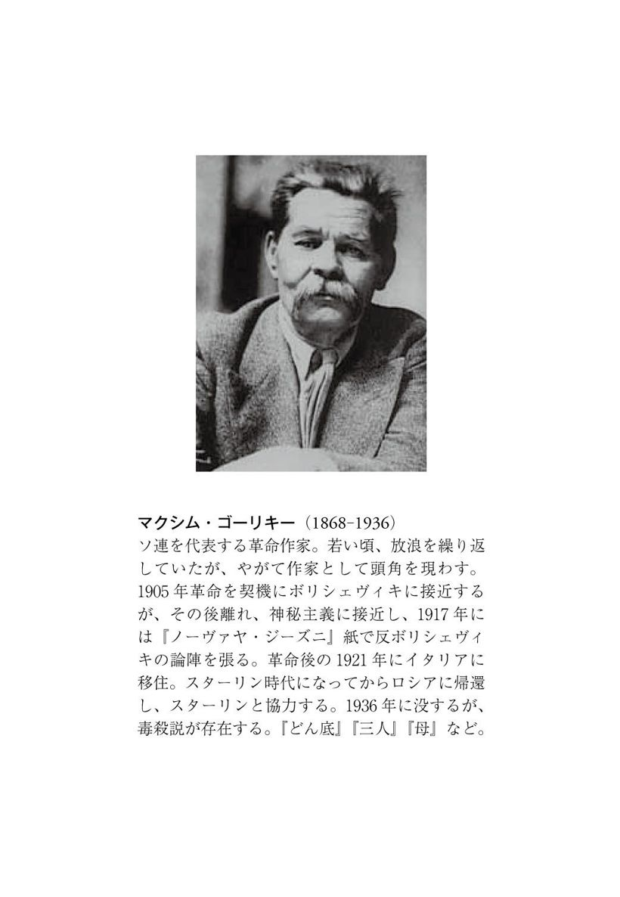

| ニーチェからスターリンへ～トロツキー人物論集【１９００－１９３９】～ | |
| トロツキー | |
| (2010) | |
ニーチェからスターリンへ トロツキー人物論集［1900‒1939］
トロツキー
森田成也・志田昇訳
Title: From Nietzsche to Stalin
Author: Л. Д. Троцкий
目 次
©Seiya Morita, Noboru Shida 2010
◎ご注意
本作品の全部または一部を無断で複製、転載、改竄、公衆送信すること、および有償無償にかかわらず、本データを第三者に譲渡することを禁じます。
個人利用の目的以外での複製等の違法行為、もしくは第三者へ譲渡をしますと著作権法、その他関連法によって処罰されます。
凡例
一．本書の底本は以下の通りである（各論文はすべて目次の番号で記述）。
１、２、３、４、７......Л. Троцкий,Сочинения. Том 20. Москва-Ленинград, 1926.
５、６、８、９、10、11、12......Л. Троцкий,Сочинения.Том 8. Москва-Ленинград, 1926.
13、15......Бюллетеня оппозиции,No.11, No.51
14......Архив Л. Д. Троцкого,Том 7.http://www.kulichki.com/moshkow/TROCKIJ/Arhiv_Trotskogo__t7.txt
16......Л. Троцкий, Портреты революционеров, Московский Рабочий, 1991.
二．翻訳にあたっては以下の諸文献に所収の各種翻訳を参考にした。
１、２、３、５、７、11......『トロツキー研究』各号
２......Culture and Revolution in the Thought of Leon Trotsky, Porcupine Press, 1999.
８、９、10、11......Leon Trotsky, Political Profiles,New Park Publications, 1972.
12、15、16......Leon Trotsky,Portraits, Political and Personal, Pathfinder Press, 1977.
14......Leon Trotsky, The Struggle Against Fascism in Germany, Pathfinder Press, 1970.
４......Die Neue Zeit,2 Band Nr.51, September 1908.
７......Der Kampf,Siebenter Band, Oktober 1913 bis Dezember 1914.
４、13、15......『革命の想像力──トロツキー芸術論』、柘植書房、一九七八年
14......『トロツキー著作集 1932--33』下、柘植書房、一九八九年
16......レオン・トロツキー「スターリン論──ヒトラーの新しき友」、『改造』一九四〇年三月号
三．翻訳の分担は以下の通りである。なお、各論文の題名は、内容を考慮して多少修正してある。
１～６......志田昇
７～16......森田成也
四．（ ）は基本的に原著者のもの、［ ］は訳者による補い。ただし、新聞雑誌名や組織名などのカタカナ表記が最初に登場するときは、その日本語訳を後に（ ）で入れておいた。
五．訳注番号は（１）（２）（３）として各章ごとに付し、各章末に訳注を示した。人名注に関しては、一括して本書末尾にアイウエオ順で提示した。
六．原注（ロシア語版『トロツキー著作集』の編者注を含む）の箇所には＊を付し、直後の段落の前に原注部分を訳した。ただし、原注が引用文中にある場合には、その引用文の終了した直後に原注部分を訳しておいた。
七．固有名詞の表記はできるだけ一般に通用しているものを採用した。
八．読者にとって読みやすいように、改行を原著よりも少し増やした。
九．トロツキーが各論文で引用している文章に関しては、既訳のあるものについては、できるだけ参照したが、訳文は必ずしも既訳と同じではない。
一〇．年代などの数字に関するケアレスミスについては、気づいた箇所は適宜修正してある。
『ニーチェからスターリンへ
──トロツキー人物論集［１９００ -- １９３９］』
最近、わが国の雑誌や新聞は、「死の報に接して」過度にうやうやしい態度をとるようになった。文筆家の中には何かを要求したり期待したりすることができないような者もいる。理由は簡単だ。彼らから受け取るべきものが何もないからである。こうした文筆家には、必要な場合に自分の裸体を隠すためのイチジクの葉さえ用意されていない。彼らに対する称賛や非難に関しては、われわれは十分な根拠をもって無視することができる。死体自身が死体を埋葬しているのだから...。
だが今回の場合、問題になっているのは、このような死体ではなく、死という「調停者」が影を落としているとはいえ、あらゆる文学的現象や社会現象に対して完全に生きた関係を期待できるような文筆家たちである。
最近、ロシアではジャンシーエフとソロヴィヨフが亡くなり、「西欧」では［ヴィルヘルム］リープクネヒトとニーチェが亡くなった。もちろん、ミハイロフスキーの表現によれば、誰の「死体」であれ「足蹴にする」のはあまりにも乱暴すぎる。しかし、敵の陣営から度外れた賛辞を送るよりも、これらの死者たちの一人一人にその社会的・文学的特質に応じたしかるべき地位を割り当てる方が、おそらく、一定の信念体系の代表者である人々に対していっそう大きな敬意を表することにさえなるだろう。たぶん、リープクネヒトは、『モスクワ報知』［反動派の新聞］や『ノーヴォエ・ブレーミャ（新時代）』［ペテルブルクの保守派の新聞］に称賛されても喜ばないだろう。それはちょうど、ニーチェがたとえば『フォアヴェルツ（前進）』［ドイツ社会民主党の機関紙］や『ロシアの富』［ナロードニキの雑誌］に称賛されても喜ばないのとまったく同じである。たしか、スカンジナヴィア人のアレクサンダー・キイランド［ヒェラン］が断言していたように──そしてわれわれは彼の誠実さを確信している──、急進派の新聞雑誌によるどんな賛辞も、反動派の雑誌による悪意のこもった非難ほどには、うれしくないし精神的な満足を与えないものである。
もし、死者について何も語るべきでないか、さもなくば「良く」言うべきだとすれば、無意味な甘ったるい賛辞の洪水によって死者の真の社会的意義を曖昧にするよりも、何も言わないことによって雄弁に語る方がましである。われわれは、社会的な対立相手の人格に対して公平な態度をとることができるし、そうすべきである。そして、時間と機会があれば、彼らの誠実さやその他の個人的な美徳にしかるべき敬意さえ払うだろう。しかし、敵は──誠実であろうとなかろうと、生きていようと死んでいようと──やはり敵であり、とくに文筆家の場合には、死んだ後でさえその著作の中で生きているだけになおさらそうである。そして、このことに口を閉ざすならば、われわれは社会的罪を犯すことになる。ロシアの高名な思想家が言っているように「積極的に反対しないことは消極的に支持することである」。このことは、死の悲報に接した場合でさえ忘れるべきではない。
以上のような理由から、われわれは最近亡くなった哲学者フリードリヒ・ニーチェについて、とくに彼の学説がその社会観や判断、共感と反感、社会批判と社会的理想に関わっている諸側面について、若干論じたいと思う。
ニーチェの哲学を彼の個性や生涯から説明する人は少なくない。非凡な人間だったので、病気のために陥った境遇に受動的に甘んじることができなかったと言うのだ。社会生活から隔絶することを余儀なくされていたので、ニーチェは、このような状況下で生きていくことを可能にするだけでなく、こうした生活に意味を与えることも可能にするような理論をつくりだすことへと駆り立てられた。病気の結果として苦痛に対する崇拝が生じた。
諸君はできるなら苦痛を無くしたいと願うが、われわれは、むしろ、苦痛をかつてなく大きくひどくしようと思うのだ！......苦痛、しかも大いなる苦痛という鍛錬だけが、これまで人間を高みに到達させたということを諸君は知らないのだろうか（１）（＊）。
＊原注 われわれは『ニーチェ選集』の該当頁を指示することはしない。というのは、補巻を除いても八巻に達する『ニーチェ選集』の頁をいちいち示すことは、新聞の評論にとってはあまりにも荷が重い仕事だからである。 （本文に戻る）
アロイス・リールは、「こうした言葉の中からは、苦痛を意志にとっての教育手段に変えた病人の声が聞こえる」と述べている。
しかし、苦痛に対する崇拝は、わが哲学者に対する一部の批評家や解釈者によって根拠もなく前景に押し出されているが、ニーチェの哲学体系の一特殊部分にすぎず、しかも彼の体系をとくに特徴づけるものではない。彼の全哲学体系の社会的基軸となっているのは（ただしニーチェの書いたものを、「体系」といった、彼の目から見れば卑俗な用語で侮辱することが許されるならばだが（２））、若干の「選ばれし者」に生活のすべての恵みを自由に利用する特権を承認することである。つまり、この幸福な選ばれし者は、生産的労働から解放されているだけでなく、支配という「労働」からさえ解放されているのである。「諸君のためには信仰と隷従（Dienstbarkeit）」！──ツァラトゥストラが理想社会において、普通の人間、すなわち、「あまりに多すぎる者たち（３）（den Vielzuvielen）」に与える運命は、かくのごときものである。これらの人々の上には管理者、法の番人、秩序の守護者、戦士のカーストが立っている。彼らの頂点に立つのが王であり、王は「戦士、審判者、法の守護者の最高形式（４）」である。だが、これらすべての人々は「超人」に対しては、奉仕者にすぎない。彼らは「支配にまつわる粗野な労働」を引き受けるのであり、「立法者の意志」を奴隷大衆に伝えるために奉仕するのである。最後に、最高のカーストは、「主人」「価値創造者」「立法者」「超人（Übermensch）」のカーストである。このカーストが社会的有機体全体の活動に方向を示すのである。このカーストは、キリスト教において神が宇宙で果たしているのと同じ役割を地上の人々のあいだで果たすだろう...。
このように、統治の「労働」さえ最も高等な人々にではなく、下等な人々のうちの最も高等な人々に委ねられる。それに対して、「選ばれし者」「超人」はといえば、あらゆる社会的・道徳的義務から解放され、冒険と快活さと哄笑に満ちた生活をいとなむのである。「生まれたその瞬間から......私は、生命が満ちあふれ、私の内部でも外部でも可能なかぎり浪費的で情熱的であることを欲する」とニーチェは述べている。
すでに述べたように、ニーチェには苦痛に対する崇拝といったものが存在する。「奴隷」にどれほど奉仕させても逃れられないような肉体的苦痛が「超人」にもしばしばあると暗示されている。社会的な欠陥と結びついた苦痛に関しては、もちろん、「超人」は、そのようなものから完全に自由でなければならない。「超人」（それも「生成過程にある im Werden」場合だけだが）にまだ何らかの義務労働が残っているとすれば、それは自己完成の労働であり、その課題は「同情」に類するいっさいのものを徹底的に一掃することに帰着する。同情、憐れみ、思いやりの感情に屈した「超人」は没落する。古くからの「価値の一覧表」によれば、同情は美徳であるが、ニーチェは同情を最大の誘惑であり最も恐るべき危険であると考えた。ツァラトゥストラの「最後の罪」、すなわち彼が耐えなければならない災いのうちでも最も恐ろしいものは、同情である。もし彼が不幸な人々に同情するならば、もし悲しそうな様子に心を動かされるならば、彼の運命は決せられる。彼は敗北したのであり、彼の名は「主人」カーストの名簿から抹消されなければならない。ツァラトゥストラは次のように語っている。
死を説教する者たちの声が至るところに響いている。そして大地は死を──あるいは「永遠の生」を──説教されなくてはならないような者たちで満ちている。（５）
さらに彼はあけすけなシニシズムを込めて、次のようにつけ加えている。
それは私にとってどうでもよいことだ──彼らが速やかに去って行ってくれさえするならば！（６）
自分の積極的な理想を構築する仕事にとりかかる前に、ニーチェは現在支配的な社会的諸規範──国家的規範や法的規範やとりわけ道徳的規範──を批判しなければならなかった。彼は「いっさいの価値の価値転換」が必要だと考えた。一見すると、何と極端な急進主義であり、何と驚くべき大胆な思想であろうか！ 「彼以前には何びとも道徳の価値を検討しなかったし、何びとも道徳的原理の批判を企てたりしなかった」とアロイス・リールは言っている。リールの見解は特異なものではない。しかし、だからといって、リールの意見に根拠があるわけではまったくない。人類が従来の道徳一式を根本的に修正する必要を感じたのは一度や二度ではないし、多くの思想家がフリードリヒ・ニーチェよりもいっそう急進主義的にいっそう深くこの仕事を遂行した。ニーチェの体系に何か独創的なものがあるとすれば、それは「価値転換」という事実そのものではなく、むしろ、価値転換の出発点、すなわち、「超人」への志向・欲求・願望であり、その基礎にある「権力への意志」である。これが、過去、現在、未来の評価基準である。
しかし、この独創性も疑わしい。ニーチェ自身が言っているように、過去に支配的であった道徳や現在支配的である道徳を研究した際に、彼は二つの基本的な潮流に出くわした。すなわち、主人の道徳と奴隷の道徳がそれである（７）。「主人の道徳」こそ「超人」のふるまいのための基礎である。道徳のこうした二重性は実際に人類史全体をつらぬく赤い糸であり、それを発見したのはニーチェではない。われわれがすでに聞いたように、「諸君のためには信仰と隷従」とツァラトゥストラは「あまりに多すぎる者たち」に向かって語っている。最高のカーストは「価値創造者」たる「主人」のカーストである。主人のために、そして、主人のためにのみ超人の道徳はつくられているのである。これは何と新しいことだろうか！ だが、きわめて少ししかものを知らなかった農奴制時代のわが国の地主でさえ、貴族と平民がいて、貴族に要求されることを平民がすれば厳しく非難されるということを知っていた。したがって、天才的な諷刺家の言葉によれば、次のことを地主たちはちゃんと知っていたのである。
貴族が商業や工業に従事したり、ハンカチを使わずに鼻をかんだり、等々のことはふさわしくない、と考えられているが、一つの村をまるごと賭けてカード遊びをしたり、女中のアリーシカをボルゾイ犬の子犬と交換することは、貴族にふさわしくないとは考えられておらず、そして、髭をそったり、お茶をのんだり、長靴を履いたりすることは、農民にふさわしくないと考えられているが、マトレーナ・イワノーヴナがアヴドーチャ・ワシリエヴナに宛てた手紙──ワシリエヴナの名の日に心からお祝いを述べ、おかげさまで元気ですと伝える手紙──を届けるために、一〇〇キロ歩かされるのは農民にふさわしくないとは考えられていない（サルトゥイコフ＝シチェドリン『散文による風刺（＊）』）。
＊編者注 Ｍ・Ｅ・サルトゥイコフ＝シチェドリン『全集』第七巻、サンクト・ペテルブルク、一八八七年、三一八頁。 （本文に戻る）
ニーチェに対して無批判的なある批評家でさえ認めているように、「ニーチェの思想は彼のペンによって表現される逆説的で高度に詩的な形態を取り除くなら、最初に受けた印象ほどには新しくはないということが、非常にしばしばある」（リシュタンベルジェ『フリードリヒ・ニーチェの哲学』）。
しかし、ニーチェの哲学が一見したほど独創的ではなく、もっぱらその著者の複雑な個性によって説明される程度の独自性しかないとすれば、いったい何によってこの哲学がきわめて短期間にかくも多くの信奉者を獲得したことを説明すべきであろうか。すなわち、アロイス・リールの表現によれば「ニーチェの思想が多くの人々の信条となった」ことは何によって説明すべきだろうか？ このことは、ニーチェ哲学の育った土壌が何ら特別なものではないという事実によってのみ説明することができる。社会的な諸条件によって、このうえなくニーチェ哲学がふさわしいような立場に置かれた人々の広範な集団が存在しているのである。
わが国の文献では、すでに何度かゴーリキーとニーチェが比較されてきた。一見すると、このような比較は奇妙なものと思われるかもしれない。最も虐げられ辱められた人々、底辺中の底辺にいる人々の歌い手と「超人」の使徒とのあいだに、いったいどんな共通性があるというのか、と。もちろん、両者のあいだには巨大な相違がある。しかし、両者の一致点は最初に受ける印象よりはるかに大きいのである。
ゴーリキーの主人公たちは、作者の構想の上では、またいくらかはその描写の上でも、虐げられ辱められた人々ではまったくなく、底辺中の底辺にいる人々でもない。彼らもまた一種の「超人」なのである。彼らの多く──大多数と言ってもよい──がこのような状態にあるのは、彼らが過酷な社会闘争において敗北し決定的に人生の軌道からたたき落とされたからではまったくなく、彼ら自身が現代の社会組織の窮屈さやこの社会の法律や道徳等々に甘んじることができず、社会から「去った」からである...。このようにゴーリキーは語っている。このような説明は全面的に彼の責任に委ねることにしよう。われわれはこの点に関しては、独自の見解に固執することにする。だが一定の社会集団のイデオローグであるゴーリキーは、違った風に論じることができなかったのである。物質的ないしイデオロギー的な絆によって一定の集団と結びついているあらゆる個人は、自分の属する集団を何かクズの集まりとみなすわけにはいかない。彼は自分の集団の存在に何らかの意義を見出さなければならない。基本的な社会的諸階層にこのような意義を見出すことは──現代社会とそれに固有の生産システムのきわめて表面的な分析にもとづく場合でさえ──困難ではない。というのは、これらの基本的な諸階層はこの生産システムの不可欠な参加者だからである。ブルジョアジー、プロレタリアート、「精神労働者」がこれにあたる...。だが、ゴーリキーがその歌い手となり弁護者となっている集団の場合は違っている。たとえ社会の領土上で社会の負担で暮らしているにせよ、社会の外部で生活しているので、彼らは自分の存在の正当化を組織立った社会の成員に対する優越感の中に求める。この社会の枠は、生まれつき特別の、ほとんど「超人的な」資質に恵まれた人々にとっては、あまりにも狭すぎるというのだ。ここでわれわれは、現代社会の規範に対するニーチェのペンから出たのと同じような抗議に出くわすのである（＊）。
＊原注 この二人の作家に共通したもう一つの特徴をついでに挙げておこう。それは二人とも「強者」に尊敬の念を抱いていることである。ゴーリキーは否定的な（ゴーリキー自身にとってさえ）性格をもったあらゆる行為を──もしそれがほとばしる力によって呼び起こされたものならば──人間に許す。彼はこうした行為をきわめて愛情をこめて美しく描くので、まったく別の見地に立っている読者でさえ「力」に魅惑され惚れこんでしまうのである...。これがゴルジェーエフ（８）老人をはじめとするゴーリキーの若干の主人公たちである。 （本文に戻る）
同じく社会の負担で略奪的に生きているが、みじめなルンペン・プロレタリアートよりも幸福な境遇にいる集団も、ニーチェを自分たちのイデオローグとみなした。これは高級な部類の寄生的プロレタリアートである。現代社会におけるこの集団の構成は、かなり多様で伸縮しうるものである。というのはブルジョア階層の諸関係の組み合わせがはなはだ複雑で多様だからである。しかし、この一種のブルジョア騎士団の全構成員に共通しているのは、生産と分配の組織的過程に何ら系統的に参加していないのに（このことをとくにわれわれは強調する）、社会の消費元本からきわめて大規模にほとんど公然と略奪し、それでいながら罰せられていない──もちろん、これは例外ではなく通例そうなのだが──ことである。このようなタイプの代表者として、エミール・ゾラの小説『金』の主人公サッカール（９）を挙げることができる。もちろん、すべての金融的冒険家のスケールがゾラの作品の有名な主人公ほど大きいわけではない。より小物の金融的冒険家のタイプとしては、ルドルフ・シュトラッツの（下手な）小説『究極の選択』（『「ロシアの富」選集』に翻訳がある）に登場する投機家の伯爵を挙げることができるだろう。
しかし、この違いは単に量的なものであって質的なものではない。一般的に言えば、この種のタイプは現代文学に非常に多いので、誰を挙げたらよいかわからないほどである。
もちろん、前述したことを、ニーチェ主義者はみな金融的冒険家や取引所の略奪者であるという意味に理解する必要はない。ブルジョアジーは自分の社会と有機的に結びついているおかげで、そのブルジョア個人主義を自らの階級の限界を超えて広く普及させることができた。同じことが、前述した高級な寄生的プロレタリアートの多くのイデオローグに関しても言える。ただし、こうした集団の全員が自覚的なニーチェ主義者であるわけではけっしてない。おそらく、彼らの大多数はニーチェの存在すら知らないであろう。というのは、彼らはまったく別の領域に自分の関心を集中しているからである。しかし、その代わり、彼らはみな自分の意に反してニーチェ主義者なのである...。
しかしながら、若干の純粋にブルジョア的なイデオローグたちもすでに一度ならず、多くの点でニーチェの思想に近い思想を展開したという事実を指摘することも無駄ではない。最も通俗的なブルジョア思想家の一人であるイギリスのご託宣家ハーバート・スペンサーを例に挙げよう。大衆に対するニーチェと同じ軽蔑的な態度がスペンサーにも見られる。もっとも、ニーチェほどには情熱的なものではないが。また、彼はニーチェと同じように闘争を進歩の手段として称賛している。いわゆる自己責任で没落した人々を助けることにも同じように抗議している。このブルジョア的な博識家は次のように断言している。
人は、どんな利益であれ、それを手に入れるためには、生産的労働によって獲得された金銭でもって購入しなければならない。これこそ自発的な（!!）協業の根本法則である。だが、彼らは（「彼ら」とは誰のことかは明らかである──トロツキー）、この法則を支持する代わりに、多くの利益を、それを獲得するためになされた努力とは無関係にすべての人に享受させようとしている。無料の図書館、無料の博物館等々は、社会の負担で設置されざるをえず、各人の功績とは無関係にあらゆる人の手に届くようにされている。このようにして、より立派な人々の貯蓄が収税人によって奪い取られ、何も貯蓄していないより劣った人々に一定の便宜を提供するための手段とされているのである。
何びとも赤貧や悪徳、およびその当然の帰結が生じるのを妨げてはならないというスペンサーの要求に対するミハイロフスキーの反論を想起し、この要求を、われわれにはすでにおなじみのツァラトゥストラの言葉と比較してみよう。ツァラトゥストラは「......この世は死を説教されなくてはならないような者たちに満ちている」と言っている。彼らを援助するのではなく、彼らが速やかに立ち去るよう突き落としてやる必要がある。「これこそ偉大であり、偉大さに属することである（10）」。
しかし、ここでスペンサーとニーチェとの一致点──しかしまったくの条件つきの一致点──は終わる。スペンサーは、ブルジョアジーから支配の「労働」を取り上げたいとはまったく思っていない。同時に、彼にとって最高のタイプは本能のままに生きる人間ではない。階級としてのブルジョアジーと、生産関係の歴史的に規定されたシステムとしての資本主義体制とは、一方がなければ他方も考えられない二つの現象である。そして、ブルジョアジーの思想的代表者であるスペンサーは、ブルジョア的規範に異議を申し立てるわけにはいかない。弱者に対する援助にスペンサーが異議を申し立てるのは、彼にとって何よりも大切な社会秩序やまさにこの秩序によってしっかり守られている彼の平和な書斎に弱者が押し寄せて来るのを恐れるからにほかならない。
ニーチェの場合は違っている。彼は自分をとりまくすべての社会的規範に異議を申し立てる。彼はすべての美徳やすべての俗物的なものに敵対している。ニーチェにとって中流のブルジョアは、あらゆるプロレタリアとまったく同じく最低の部類に属する。それも当然である。中流のブルジョアは感傷的な生き物である。彼らは、感傷的な格言を語ったり、道徳的な教訓を垂れたり、労働の神聖な使命というテーマに関するセンチメンタルな熱弁を振るったりしながら、ゆっくりと行儀よく生き血をすする。だが、ブルジョア的「超人」はまったく違ったふうに行動する。彼は手当たりしだいにひっつかみ、捕らえ、強奪し、肉ごとひきちぎり、こうつけ加える。「説明は不要だ（＊）」。
＊原注 農奴の組織的な搾取者である中世の領主と封建社会の「超人」である「盗賊騎士」とのしかるべき対比を行なうならば、おもしろいであろう。盗賊騎士たちは「盗みは恥ならず、国の最高のものもそれをなす」と宣言していた。これこそ「超人」ではなかろうか！ （本文に戻る）
「健全な」ブルジョアジーに対して否定的な態度をとったので、ニーチェは、彼らの側からも否定的な扱いを受けている。たとえば、われわれは、穏健なブルジョア的中庸の代表者の一人であるマックス・ノルダウ──深みはないが派手派手しく、細部にまで嫉妬深い目を光らせ、辛辣な表現を惜しまない人物だ──がニーチェに対してどんな態度をとっているか知っている。ノルダウは次のように述べている。
高踏派や耽美派がペンや色彩や音響を用いて美化した人間のクズと下劣な行為を体系化するためには、また、悪魔主義者やデカダン派の代表者たちが誉めたたえた犯罪と不道徳と病気を総合するためには、さらに、イプセンを手本にした自由で完全な人間を崇拝するためには、理論家が必要であり、このような理論を、ないしはそう自称するものを最初に唱えたのがニーチェである（『堕落論』）。
ノルダウがニーチェの支持者に対してとっている態度もこれよりましなものではない。彼の言葉によればこうである。
何ものも真実ではなく、いっさいは許されていると説く賢明なる金言が、道徳的に錯乱した学者の口から発せられると、それは、道徳的な欠陥のために社会的規範に深い憎しみを抱いているすべての人たちから巨大な反響を得た。とりわけ、大都市の知的プロレタリアートは、これを大発見とみなして勝ち誇ったのである（同前）。
内閣の崩壊、政府要人の死、新聞の恐喝、政治的スキャンダル、また相場の「下落」や「上昇」といったものにもとづいて羽振りのいい暮らしを実現しているような人々は、小市民的な美徳を身につけたブルジョアやそのイデオローグから是認されるはずもなかった。前述したルドルフ・シュトラッツの小説に出てくるすべての「高潔な」登場人物たちが──そして、彼らを通じて俗物的な気分の作者が──シニカルな伯爵に対してとっている態度も、ノルダウがニーチェに対してとっている態度よりましなものではない。なにしろ、この伯爵は、どうやら「何ものも真実ではなく、いっさいは許されている」という思想にもとづき、ベルリンの人々を伯爵に刈り込まれるためにいる羊とみなしているらしいのだ。高潔なベルリンの人々が高潔ならざる伯爵に対してこのような厳しい態度をとるのはまったく当然のことである。
ブルジョア社会は道徳や法といった一定のきまりを作成しており、こうしたきまりを犯すことはかたく禁じられている。ブルジョアジーは、他人を搾取するが、搾取されることは好まない。ところが、さまざまな種類の超人たちは「剰余価値」というブルジョア的元本からおいしいところを奪い取る。すなわち、彼らは直接的にブルジョアジーの負担で暮らしているのである。当然ながら、この超人たちは、ブルジョアジーの倫理的な規範の庇護のもとに置かれるはずがない。したがって、彼らは自分たちの生活スタイルに適合した倫理的な原則をつくらなければならない。最近までこの高級な部類の寄生的プロレタリアートは、自分の略奪的活動を「高尚な」動機で正当化しうるいかなる一貫したイデオロギーも持っていなかった。「健全な」産業ブルジョアジーは、その歴史的功績やその組織化能力によって略奪行為を正当化し、こうした能力なしに社会的生産は存在しえないと称しているが、もちろん、こうした正当化は、相場変動の騎士や金融的冒険家や取引所の「超人」や政界と新聞界における恥知らずな恐喝屋など、一言でいえば高級な部類の寄生的プロレタリアートの集合体には適さない。彼らは、ブルジョア的有機体にぴったり吸いつき、社会の負担で生活しながら、それでいて社会に何も提供することなく、さまざまな手練手管を用いて生活している。そして、普通は悪くない生活をしている。このような集団の個々の代表者は、羊のような人々に対する自らの知的優越感で満足していた。何しろ、自分たちには彼らを「刈り込むこと」が許されているのだから（どうして許されないことがあろうか！）。しかし、この集団全体（かなり数が多く、ますます増加している）は「大胆にふるまう」権利を知的に優越した者たちに与えるような理論を必要としていた。彼らは自分たちの使徒を待望し、ニーチェのうちにその使徒を見出したのである。露骨に冷笑的ですぐれた才能をもったニーチェが、「いっさいは許されている」という「主人の道徳」をたずさえて彼らのところにやってきた。そして、彼らはニーチェを誉めたたえたのである...。
ニーチェは次のように教えている。あらゆる崇高な人々の生活は、危険に満ちた冒険の断えざる連鎖である。崇高な人々が求めるのは幸福ではなく、遊戯の興奮である。
ブルジョア社会の湯垢のような質の悪い連中は、不安定な社会的均衡の中に置かれ、今日は世間的な幸福の絶頂にあっても、明日は裁判所の被告席に座っているかもしれない。こうした連中にとっては、いかにも凡庸であらゆるものを凡庸化する俗物であるサミュエル・スマイルズ──発展しはじめたばかりの小市民層の教父──の説く節度ときちんとした生活に関する小市民的説教や、ベンサム──「健全」で几帳面なまでに実直な（もちろん、商人的な意味で）イギリス大ブルジョアジーの精神的指導者──が厳格に合理主義的な前提にもとづいて説く功利主義的道徳に関する説教よりも、冒険に満ちた生活を説くニーチェの教説の方がはるかに自分にふさわしいと感じられたにちがいない。
ニーチェによれば、人類が「超人」にまで高まるのは、現代における価値のヒエラルキーを、とりわけキリスト教的・民主主義的理想を放棄するときである。ブルジョア社会は──少なくとも通常は──民主主義の原理にしたがっている。だが、すでに見たようにニーチェは道徳を主人道徳と奴隷道徳とに分ける。民主主義について彼は口角泡を飛ばして語る。彼は、平等に熱中して人間を醜悪で軽蔑すべき畜群に変えようとする民主主義に対する憎悪に燃えている。
もし奴隷が超人の道徳を抱いていたら、もし社会がまだるっこしい建設労働をあまりにも屈辱的なものだと感じたら、それは「超人」にとって都合が悪い。これこそ、ニーチェ自身が自分の学説について私信の中で彼特有のあけすけなシニシズムをもって次のように語っている理由なのである。自分の学説を公表することは、「おそらくこれまでで最も危険な冒険（Wagnis）である。ただし、この学説をあえて語る人々にとってではなく、それを耳にする人々にとってだが」。彼は次のようにつけくわえている。「私にとって慰めなのは、私の偉大な新説を聞いてもそれを理解する耳が存在していないことである（11）」...。
ここで指摘された危険性の結果が道徳の二重性なのである。主人のために、そして主人のためにのみつくられた「主人道徳」を実行する必要性が人類全体にはないだけではない。反対に、超人ではない普通の人々すべてに要求されるのは、高級な生活のために生まれてきた人々に服従し「群れをなして共同事業を行なうこと」である。普通の人に要求されているのは、ごく少数の「超人」を頂点とする社会の存在によって課せられた義務を良心的に果たすことに幸福を見出すことである。低級な「カースト」は高級な「カースト」に奉仕することに道徳的な満足を見出すべきであるという要求は、これもまた、周知のように格別新しいものではない...。
この輝かしいブルジョア的プロレタリアートの成員が、国の舵をとることもまれではないが、一般的に言えば、ブルジョア社会の政府権力は彼らの手中にはない。ある種の社会的な思い違いの結果として、政権が彼らの手中に落ちることもあるが、彼らの支配は、パナマ疑獄（12）やドレフュス事件やクリスピ事件（13）のような大スキャンダルで終わる。彼らにとっては権力を握ることさえも、自分がきわめて否定的な態度をとっている社会を再編成するためではまったくなく、単に社会の豊かな資源を利用するためにすぎない。したがって、「超人」を支配の労働からさえ解放したニーチェは、この点でも彼らの側から生きた反響を見出すことができたのである。ルンペン・プロレタリアート、すなわち、最下級の寄生的プロレタリアートは、否定という点ではニーチェの崇拝者よりも徹底している。彼らは社会をまるごと否定している。彼らにとっては、この社会の精神的な枠組みだけでなく、その物質的な組織体も狭すぎるのである。だが、ニーチェ主義者たちはブルジョア社会の法的・倫理的規範を否定するが、社会の物質的組織体がつくりだす快適さには何ら異存がない。ニーチェによれば、「超人」には人類が長期にわたる多大な労苦を通じて得た知識や富や新しい力を放棄する気はない。にもかかわらず、ニーチェ主義者の哲学的世界観（もしここで、そういう用語が適切であれば）の全体は、彼らが形式的にさえ何ら創造に参加していない富の利用を正当化することに役立っているのである。
ニーチェは、選ばれし者の一員となる以前に、あらゆる人に「君にはくびきを脱する資格があるのか」という問いに答えることを要求しているが、この問題を解決するいかなる客観的基準も彼は与えなかったし、与えることができなかったので、肯定的に答えるか、それとも、否定的に答えるかは、各人の自由意志と略奪能力の問題なのである。
ニーチェの哲学体系は、すでに一度ならず──ちなみに、ニーチェ自身によっても──指摘されたように、少なからぬ矛盾を抱えている。若干の例を挙げよう。ニーチェは現代の道徳に否定的な態度をとっているが、それは主として「あまりに多すぎる者たち」に対する態度の規範となっている──たしかに形式的にすぎないが──諸側面（同情や慈悲など）に関してのことである。だが、「超人」同士の相互関係に関しては、彼らは道徳的な義務からまったく解放されていない。こうした関係について語るとき、ニーチェは善と悪とか、さらには敬意や感謝といった言葉さえ使うことをはばからない。
また、「いっさいの価値の価値転換」をめざすこの道徳の革命家は、特権階級の伝統には大いに敬意を払っており、ニエーツキという伯爵の家系の出身であること──これは非常に疑わしいが──を誇りにしている（14）！ このきわめて高名な個人主義者は、「個性」にごくわずかな余地しか与えなかったフランスの旧体制にきわめて愛情のこもった共感を抱いている。ニーチェにあっては、貴族に対する非常に明確な社会的共感の代弁者としての側面が、個人主義という抽象的原理の布告者としての側面よりも、常に優位に立っている。
こうした矛盾を踏まえるなら、まったく対立しているように見える社会的諸分子が、ニーチェ主義の旗のもとに結集できるのも驚くべきことではない。「素性も知れぬ」冒険家は、貴族的伝統に対するニーチェの敬意をまったく無視することができる。彼はニーチェから自分の社会的地位にふさわしいものだけを取り出す。「何ものも真実ではなく、いっさいは許されている」というモットーは、このうえなく彼の生活様式にふさわしい。このアフォリズム（箴言）に含まれている思想の発展に役立つすべてのものを、ニーチェ選集から引き出して、フランスのパナマ疑獄とか、わが国のマーモントフ事件（15）（＊）の勇敢な主役たちに、哲学的なイチジクの葉として完全に役立つかなり首尾一貫した理論をつくり出すことができる。
＊原注 ガリン氏が自分の証言の中でゲーテを利用したように、プレヴァコ氏がニーチェを自分の弁論の中で利用したかどうかは、われわれの知るところではない。もし、マーモントフがロシアのファウストであるとすれば、どうして彼がモスクワの「超人」の役に適しないことがあるだろうか！ （本文に戻る）
しかし、われわれは、ニーチェ崇拝者のうちに、全面的にブルジョア社会の産物であるこのような集団と並んで、まったく別の歴史的発展段階の代表者である古い系譜をもつ人々をも見出す。われわれが言っているのは、騎士的美徳よりも株券の方を選ぶシュトラッツの小説に出てくる伯爵のような人たちのことではない。このような連中は、もはや自分の階層には属していない。階級から脱落している彼らは、あらゆる平民と同様に「高尚な伝統」にはほとんど注意を払わない。われわれが言っているのは、かつて自らを社会的階梯の頂上に立たしめた時代の遺物にまだしっかりとしがみついている人たちのことである。彼らは社会生活の軌道からはずれているので、現代の社会制度、その民主主義的傾向、その法律や道徳に、不満を抱く特別な理由を持っている。
イタリアの有名な詩人で、生まれからしても信念からしても貴族であるガブリエーレ・ダヌンツィオという人物がいる。われわれは、彼がニーチェ主義者であると自称しているかどうか知らないし、一般に、彼の世界観の起源がニーチェの思想に対していかなる関係にあるかも知らない。それに、われわれにとっては、今のところそうしたことは重要ではない。ここで重要なのは、ダヌンツィオのウルトラ貴族主義的な思想が、ニーチェの思想の多くとほとんど一致していることである。貴族にふさわしく、ダヌンツィオはブルジョア民主主義を憎んでいる。彼は言う。
ローマで私は聖地を汚すような最も恥知らずな冒瀆を見た。決壊した下水溝のように、低劣な欲情の波が広場や通りを水びたしにしている。......戦士の末裔たる王は、平民どもの法令が指示する低級で退屈な義務を果たすことに、忍耐の驚くべき模範を示している。
彼は、詩人たちに向かって次のように言っている。
現在、われわれの使命はいったい何であるのか？ われわれは、普通選挙権を讃えたり、不自然な六韻律の詩行で王政の廃止、共和国の到来、俗衆による権力掌握を促進したりするべきだろうか？ われわれは、ささやかな報酬を得るために、不信心者に対してすべての力、権利、知恵、光が群衆のなかにあるということを保証することもできるだろう。
しかし、こんなことに詩人の課題はないと彼は言う。
すべての人間の頭を、仕上げ工の金づちで打たれた釘のように画一化しようとする連中の無思慮な額に烙印を捺せ。集会で牛馬たる俗衆の番人たちの騒々しい声を耳にしたなら、諸君のとめどない哄笑を天までとどろかせ。
貴族主義的な過去の時代の無力な遺物に向かって、彼は大声で叫ぶ。
待機して事態に備えよ。群れを服従させるのは、諸君にとって難しいことではない。平民は常に奴隷のままである。というのは、彼らには鎖に手を差し出す生まれつきの欲求があるからだ。群集の精神はパニックに陥りやすいということを忘れるな。
ニーチェと完全に一致して、ダヌンツィオはいっさいの価値を価値転換することが必要だとみなしている。そして、これは次のようにして行なわれるのである。
生まれつき支配することを使命としている新しいローマ皇帝がやって来て、さまざまな空論家によってあまりにも長いあいだ承認されてきたいっさいの価値を一掃するか取り替えるだろう。この新しいローマ皇帝は、将来、理想的な橋をかけることができるであろう。そしてついに、この橋を通って特権的な血筋の人々が、今はまだ、待望されている支配から彼らを隔てているように見える深淵を渡ることができるだろう。
この新しいローマ皇帝となるのは、「美しく力強く残酷で情熱的な」貴族だろう（ダンヌンツィオからの引用は『ジーズニ（生活）』第七号、一九〇〇年に掲載されたウクラインカ女史の論文にしたがった）。この野獣に似た存在は、ニーチェの「超人」とあまり違わない。ニーチェの表現で言うと「猛獣＝貴族」は人間とあらゆる物に価値を与える。この存在に有益なものはそれ自体でよく、有害なものはそれ自体で悪いのである...。
当初の予定より相当長くなってしまったので、本稿もそろそろ終わりにしよう。もちろん、われわれは、詩人哲学者であり哲学詩人であるこのフリードリヒ・ニーチェのいっぷう変わった作品群を、あますところなく批判したと自負するものではない。どだい、そんなことは新聞評論の枠内では不可能である。われわれはニーチェ主義を生み出すことのできた社会的土壌を一般的に描き出そうとしたにすぎない。われわれはニーチェ主義を、何巻もの著作にわたって展開され多くの点で著者の純個人的な特徴によって説明されるような哲学体系としてではなく、それが今日的な潮流であることによって特別の注意を引く社会的潮流として考察した。このように、ニーチェ主義を文学的・哲学的な高みから社会的諸関係という純粋に現世的な基礎へと引き降ろすことが必要である。そして、ニーチェ主義に対して純粋にイデオロギー的な態度をとることが、ニーチェの道徳的命題やその他の命題に対する共感や反感という主観的契機によって制約されて、ろくな結果にならないだけに、なおさらそれが必要であると思われるのである。わが国のジャーナリズムにおけるこの最新の実例となっているのが、『ジーズニ』誌上で周期的にヒステリックな発作を起こしているアンドレーヴィチ氏である。
もちろん、文脈から切り離せば、先入観にとらわれたどんな立場にも例証として役立つような数ページを何巻もあるニーチェ選集の中から探し出すのに、大して努力はいらないだろう。とくに、その先入観にしたがって解釈している場合はそうである。ついでにいえば、そのような解釈のためには、深遠というよりも曖昧なニーチェ選集が大いに有用なのだ。たとえば、西欧のアナーキストたちはこのようなやり方をして、早まってニーチェを「仲間」に数え入れたために、ひどい幻滅を味わった。主人道徳の哲学者は、これ以上はないというほど粗暴な言動によってアナーキストの反発を買った。読者にはもはや明らかだと思うが、この最近死んだドイツの逆説家──彼のアフォリズムはしばしば相互に矛盾し通常十通りもの解釈の余地がある──の著作に対して、このような純粋に言説上、テキスト上の関わりを持つことが生産的であるとは思われない。ニーチェ哲学を正しく説明し解明するための唯一の道は、この複雑な社会的産物を生み出した社会的土壌を分析することである。本稿は、このような分析を自分なりに行なったものである。そして明らかになったのは、この土壌が腐っており、有害で、伝染性があるということだった...。
このことから、次のような教訓が引き出せる。ニーチェ主義を全面的に信頼してそれにどっぷりひたり、ニーチェの著作から誇り高い個人主義の自由な空気を深々と吸いこもうと、われわれに勧めたければ好きなだけ勧めるがいい。われわれはこのような呼びかけには従わないし、一面的で偏狭だという安っぽい非難を恐れず、福音書のナタナエルとともに「あのナザレから何か善いものが出るだろうか」と懐疑的に異議を唱えるものである。
『東方評論』二八四、二八六、二八七、二八九号
一九〇〇年一〇月二二、二四、二五、三〇日
訳注
（１）ニーチェ『善悪の彼岸』、光文社古典新訳文庫、二〇〇九年、三一三頁。同『善悪の彼岸・道徳の系譜』、ちくま学芸文庫、一九九三年、二三三頁。 （本文に戻る）
（２）ニーチェの次の発言を踏まえていると思われる──「私はすべての体系家を信じず、彼らを避ける。体系への意志は正直の欠如である」（ニーチェ『偶像の黄昏・反キリスト者』、ちくま学芸文庫、一九九四年、二一頁）。 （本文に戻る）
（３）ニーチェ『ツァラトゥストラ』上、ちくま学芸文庫、一九九三年、八一頁。 （本文に戻る）
（４）前掲『偶像の黄昏・反キリスト者』、二六五頁。 （本文に戻る）
（５）前掲『ツァラトゥストラ』上、八四頁。 （本文に戻る）
（６）同前。 （本文に戻る）
（７）前掲『善悪の彼岸』、四一一頁以下。前掲『善悪の彼岸・道徳の系譜』、三〇五頁以下。 （本文に戻る）
（８）ゴルジェーエフ......一八九九年に出版された『フォマ・ゴルジェーエフ』の主人公で、ゴーリキーはこの作品の成功でリアリズム作家としての地位を不動のものとした。 （本文に戻る）
（９）サッカール......エミール・ゾラの一八九一年の小説『金』の主人公で、新しい銀行を設立して、あらゆる手練手管を用いてバブル状態をつくり出し、巨万の富を手に入れるが、バブルがはじけて没落する。 （本文に戻る）
（10）ニーチェ『悦ばしき知識』、ちくま学芸文庫、一九九三年、三三八頁。 （本文に戻る）
（11）『ニーチェ書簡集』Ⅱ、ちくま学芸文庫、一九九四年、七七頁。 （本文に戻る）
（12）パナマ疑獄......一八九二年に発覚した、フランスのパナマ運河会社をめぐる大規模な疑獄事件。大臣を含む多数の政治家が収賄で告訴されたが、大多数が無罪となった。この事件によって三つの内閣が倒れ、大衆の政治不信をあおった。 （本文に戻る）
（13）クリスピ事件......クリスピはイタリアの政治家で、一八八七～九一年、首相。一八九三～九六年に第二次内閣を組閣。首相在任中、イタリアの大銀行との癒着など多くのスキャンダルが取りざたされた。 （本文に戻る）
（14）前揭『ニーチェ書簡集』Ⅱ、一五二頁。 （本文に戻る）
（15）マーモントフ事件......マーモントフは、ロシアの大工業ブルジョアジー。マーモントフ事件とは、モスクワ～ヤロスラヴリ～アルハンゲリスク鉄道会社の管理運営における乱脈事件のことで、一九〇〇年に裁判が行なわれ、その主要な被告がマーモントフであった。 （本文に戻る）
従僕の目に映った偉大な人物には何の魅力もないと言われている。だが他方で、関係する資料からしばしば確認できるところでは、偉大な人物と個人的に知り合いであることが人を従僕に変えてきたし、今も変えているのである。
ノルウェーの作家ヨン・パウルセンは、その『思い出（＊）』の中でヘンリク・イプセンと自分との関係について語っているが、彼もこの遺憾な規則の例外をなしてはいない。たとえば、彼は、深い共感の念をもって、ノルウェーの画家である友人の言葉を引用する。この言葉は、この画家がイプセンを訪問した後に述べられたものである。「ええ、たしかに彼は一言も喋りませんでした。でも、私のために煙草の葉をパイプにつめた時の仕草や、それを私に勧めた時のまなざしは、それはもう、まったく私を感動させるものでした！」。これ以上の精神的な従僕根性を想像することは難しい！
＊原注 この『思い出』からの抜粋は、一九〇一年に出版された『神の世界』第三部のヘンリク・イプセンに関する部分で発表されたものであり、それは私がこの「寄稿論文」を書くきっかけとなった。 （本文に戻る）
総じて、パウルセンの『思い出』は、この有名な作家の相貌を伝えるような材料をほとんど提供していない。パウルセンによって伝えられた事実は、まったく取るに足りないものであり、自家製の哲学で少々味つけされ、「偉大な同国人」に対する精神的従僕根性がたっぷり染み込んだものである。しかし、どんなに美しいフランス娘も自分が持っている以上のものを与えることはできないということを心に留めながら、イプセン自身の著作が提供する多くのものと結びつけて、パウルセンが提供するわずかなものを利用することにしよう。
われわれの古い理想のいっさいを揺るがすこの偉大な懐疑論者たるイプセンが──パウルセンは、こうしたわざとらしい情熱的な調子で語らないと気がすまない──会話の中で大胆な思想を次々に表明したとき、由緒ある信心深い官吏の家庭で育ったリー夫人（ノルウェーの著名な作家の妻）は、聖書を引用して、時々異議を差し挟んだ。
どうやら彼女は、イプセンのことを「革命家」だと思っていたようである。パウルセン自身は、イプセンが「会話や著作においてのみ革命家であり、日常生活ではけっして革命家ではなかった」とみなしている。
イプセンは本当に「革命家」なのだろうか？
イプセンに対するこの貴婦人の意見は、彼の見解と聖書とを比較したものであった。パウルセンは、イプセンの「大胆な思想」と自分の道徳や哲学の貧弱な信条とを対比する。だがわれわれはイプセンの「革命的」な観念を客観的な社会的・歴史的諸条件によって検証しよう。そうすれば、この問いへの回答もおのずと明らかになるだろう。
一八七〇年に、イプセンはゲオア［ゲオルグ］・ブランデスに宛ててこう書いている。
われわれが現在糧としているあらゆるものは、前世紀の革命のテーブルからこぼれ落ちたパンくずにすぎず、それはもう十分にしゃぶりつくしてしまっていると思います。必要とされているのは新しい内容と新しい解釈をもった概念です。「自由、平等、友愛」という概念は、とっくの昔に、今は亡きギロチン時代と同じ意味を持つのをやめました。これこそ政治的革命家が理解したがらないことであり、私が彼らを憎む理由なのです。これらの紳士たちが欲しているのは、単に政治世界での特殊な革命、すなわち外面的な革命にすぎません。しかし、こんなものは取るに足りないものです。人間精神の革命──これこそが本当に必要なものなのです（１）。
さしあたり、ここにあまり革命的なものはない...。
パウルセンも、「イプセンにとって自由は空気と同じであるが、彼は、自由を公民的な意味よりも個人的な意味に解している」と理解している。パウルセンは、さっそく自分の意見をつけ加える。「だが実際のところ、個人の自由をつくり出すためではないとすれば、投票権を持つことに何の意味があるのか」。
個人の自由！ 人間精神の革命！ しかし、どんな社会的条件のもとでも「個人の自由」をつくり出すことは可能なのだろうか？ また、実際に、「人間精神の革命」は外的諸条件から独立に生じうるのだろうか？ イプセンは、こうした問いに答えることができなかった。それどころか、こうした問題を提起することさえできなかった。
イプセンは社会変革をほとんど無意味と考えている。政党は、現代の偉大な文化的勢力であり、それと協力してのみ望ましい方向で社会に働きかけることができるのだが、イプセンは、それを一人っきりで立つ「精神の貴族」の尊大さでもって侮蔑的に扱っている。ストックマン博士は、「党派の綱領というやつは、生き生きとした真理を絞め殺す（２）」と語り、さらに強く、「党派──それはまさに、人々から理性と良心をしだいに吸いとっていくポンプだ！（３）」（『民衆の敵』）と語っている。イプセンは、個人から出発し個人へと帰っていく。彼は、あらゆる社会問題を個人の精神の枠内で解決し、あるいは解決しようとする。彼は、超人的な限界にまでこの伸縮自在の個人的精神を広げ深めるが（『ブラン』）、その際、社会的状況には少しも触れようとしない。ロスメルの口を借りて、イプセンは、「この国のすべての人を精神の貴族に変えること」を望む。「彼らの精神を解放し、心を浄化することによって（４）」である。何と断固としていることか！ しかし、ロスメルは、この事業に自信を失い、「人間を外部から高めることなんてできない（５）」（『ロスメルスホルム』）と確信するに至る。
この「大胆な革命家」、この「偉大なマイナス」と同国人が呼ぶイプセン自身は、その個人的生活においては、外部から作用する条件の前におとなしく屈する。杓子定規なまでの几帳面さで、彼は、自分のブルジョア的環境の偽善的で礼儀正しい生活様式のあらゆる約束事に従う。自分の精神の創造物の中でだけ、彼は「高くて自由な（６）」ところにいる（もっとも、パウルセンやイプセン本人が思っているほどではない！）。だが、「ああ、......日常生活ではそうはいかないんだ（７）」と彼は棟梁ソルネスの口を借りて苦々しく自分について愚痴をこぼす。この［高所恐怖症の］棟梁と同様に、イプセンは、「自分が建てた高さにさえ登ることができない（８）」のである（＊）。
＊原注 イプセンは、憤慨して祖国と決裂して自らの意思で国を出た後も、議会に「文学年金」を要求し、それを受け取っていた。この事実は、イプセンという人間を特徴づける上でそれなりに意義を有している。「内部から」の努力、すなわち「精神の革命」だけで「外部から」自らを解放することは、まさにこの「精神」にとって屈辱的な金銭的依存から自己を解放するだけでも、実に困難なことなのである！ （本文に戻る）
そして、これは、彼自身の個性が有する弱点ではなく、彼の個人主義的説教や超社会的な道徳（あるいは、そう言いたければ不道徳）の弱点である。そして、もしイプセンの全意義が単にこの説教にもとづいているのだとすれば、その場合には、彼には何の意義もないと言っても過言ではない。
イプセンは、新しい言葉と大胆な思想の偉大な創造者である、イプセンは再生した人間性の予言者である、イプセンは、未来の精神的指導者である...、等々と言われている。どう呼んだところで、このようなイプセンには、小市民的環境を生き生きと描き出す偉大な表現者であるイプセンの百分の一、いや千分の一の意義もない。否定の芸術家であり、「偉大なマイナス」であるイプセンは、象徴主義的な予言者にして指導者であるイプセンよりも測りしれないほどの高みに立っている。そして、そもそも後者の役割はイプセンに向いていないのである。パウルセンは、こう言っている。
私は、感情が彼の精神生活の中で特殊な役割を演じていることを示すような熱狂的な表現や熱烈な言葉をイプセンが発した場面を思い出すことができない。
これではとても指導者はつとまらない！ 諸君がイプセンの「新しい言葉」を、霧につつまれた、かくも多くの人の心を惹きつける象徴的な外観から解放するならば（＊）、こうした新しい言葉は、大部分、その新しさも魅力も失うであろう。それも当然である。人間の思想がかくも巨大で無尽蔵に多様な遺産や自力で獲得した財産を有している現代においては、本格的で価値のある新しい言葉を語ることができるのは、偉大な先行者の肩の上に乗る場合だけである。ところが、パウルセンの言うところでは、イプセンは、「ほとんど本を読まない。彼は、文学や哲学の最新の作品について自分で研究するよりも、他の人との会話から学ぶことが多かった」。体系的な教育を受けておらず、一貫した世界観を持たないこの天才的な独学者は、他人の思想の成果に対して的はずれの侮蔑的態度をとっている。
＊原注 パウルセンは言う。「私は彼の作品をよく知っていた。それらを読み、また何度も読み直したが、いつもその秘められた深みを洞察することができたわけではない。......意味不明の箇所に頭を悩ませながら何と多くの日曜日をすごしたことだろう」。芸術作品に対する関係は、判じ絵か神の黙示に対するように、何と不可解なものであることか！ （本文に戻る）
イプセンと精神的に似ている独学の棟梁、すなわち、明らかに自伝的意義を有している前述の戯曲の主人公は、ヒルデに本を読むかどうか尋ねる。
ヒルデ「いいえ、全然...。もうやめたの。だってどうせ意味がないんですもの」
ソルデス「まったくだ。私も同じだよ（９）」（『棟梁ソルネス』）
繰り返すが、書物に対するこの軽蔑的態度、それどころか書物に接してこなかったことは、イプセンの創作活動に少なからぬ影響を及ぼした。彼は、読者に提供できたはずの多くのものを提供しなかった。しかしながら、彼の未納金の方は大目に見ることにして、彼が提供したものについて語ることにしよう。そして彼がどんな素材を利用したのか検討することにしよう。というのは、彼は多くのものを提供しており、細心の注意に値する素材に取り組んでいるからである。
＊ ＊ ＊
イプセン劇の主人公たちの個人的ドラマが展開される社会的背景は通常どのようなものだろうか？ それは、中流の小市民の住むノルウェーの小さな地方都市の、平和で惰性的で変わることのない停滞した生活である。そこの住民たちは実に品行方正で礼儀正しく、実にきちんとした敬虔な人々である。
おお！ この平穏な田舎町の礼儀正しさは、偉大な劇作家の精神に苦い後味を残した。［当時イプセンが暮らしていた］ミュンヘンを見たパウルセンの「なんて巨大な都市なんだ！」という感嘆に、イプセンが次のように答える時、彼という人間がよくわかるだろう。イプセンは苦々しくこう言うのだ。「これより小さな町になんか住めないからな！」。
こうした巨大な商工業と文化の中心地には、実際、より多くの空間と空気があり、因習はより少ない。そして、肝心なことは、小ブルジョア的な都市に特徴的な例の品行方正さと礼儀正しさがより少ないことである。すなわち、粗悪なランプから出る煤のように息を詰まらせ、濃い糖蜜のようにべたべたし、空気のようにあらゆる穴に入り込み、あらゆる関係──家族、親族、愛、友情──に浸透している品行方正さと礼儀正しさがより少ない...。
田舎の小市民は、決まりきった日常と昔からの停滞に骨の髄まで蝕まれ、あらゆる新しい試みを恐れている。たとえば、新しい鉄道は、彼らに将来を危惧させる。鉄道の話が持ち上がるまでは、「ここは本当に穏やかで平和だったのにね」とベルニック夫人は、愚痴をこぼす（10）（『社会の柱』）。鉄道に対してすらこの調子なのだから、新しい思想となると目も当てられない。新しい思想などどうして社会に必要なのか？ 「すでに万人に承認されている古き良きものでまったく十分なのに（11）」（『民衆の敵』）。
新しいものに我慢ならない小市民にとっては、いかなる独創性も、独立性も、単なる独自性さえも耐えがたい。彼らは、こうした性質のほんのささやかな現われさえも容赦なく押さえつける。彼らの代弁者である市長は、［弟の］ストックマン博士にこう説教する。「お前はいつも情熱にまかせてわが道を突っ走る傾向にある。だが、秩序ある社会では許されないことだ。個々人は、自分を全体に従わせなければならない（12）」...。
自分のかかとの下に何万人もの人々を踏みつけにしている産業界の領主、証券取引所の支配者にして立法者、世界市場を「震撼」させる大物たち、要するに、現代の商工業界の全能の独裁者たちは、自分の力をあまりにもよく自覚しているので、生活と人々に対する実際の関係を隠さない。それに対して、中流のブルジョアジーは、関係が剝き出しになることに耐えられず、自分の手の産物を直視できない。彼らは、自分たちを動かすブルジョア的機構の構成部分間の摩擦を恐れ、潤滑油として偽善的な感傷主義のカビ臭いバターを塗って摩擦を緩和しようとする。あの不道徳で巨大な世界［アメリカ］では、「人間の命がどう扱われていると思いますか」と地方社会の良心を体現する中学教師のレールルンは尋ねる。「あそこでは人間の命なんて資本に換算されてしまうんです。でも私はこう思うんです。われわれは、まったく違った道徳的見地に立っているんだとね（13）」（『社会の柱』）。ごもっとも！
社会の上層階級と下層階級とのあいだの境界線に立っているので、中流の小市民は、下層階級の支持を求め、下層階級の名において語ることをいとわない。もっとも、このことは、もちろん、さして真剣に行なわれるわけではない。
「でも、市民が自ら政治に参加することで教育される、そうは思いませんか？」と編集者ホヴスタは印刷業者のアスラクセンに尋ねる。
「ホヴスタさん。人間は、ある一定の富を手に入れてそれを守らなければならなくなると、他のことは何も考えることができないんだよ」と、「実生活という学校」で教育を受けた印刷業者のアスラクセン氏は度外れた率直さで答える（14）（『民衆の敵』）。
総じてアスラクセンからは多くのことを学ぶことができる。彼のモットーは「穏健さこそ市民の第一の美徳（15）」というものである。彼の個性は、完全に社会的類型の中に埋没している。彼の強みは、「結束せる多数派」のそれであり、彼は、常に結束せる多数派、「小所有者」、そして家主の名において話す（16）。
アスラクセンを導いているこうした偽善的でリベラルな穏健さの原理は、小市民全体にゆきわたっている。この穏健さの原理ゆえに、小市民たちは、新しいものや独創的なものや「不作法な」ものに対する憎悪にもかかわらず、露骨な抑圧手段を取ることを極力避ける。「強制と禁止」というムィムレツォフ（17）的原理は、小市民の日常生活からは姿を消す。小市民はもっと間接的に行動するが、［ムィムレツォフ原理と］同じくらい効果的である。もっと別の政治的状況でなら、ストックマン博士は、「社会の敵として」強制的に隔離されたかもしれない。だが教養ある小市民は、違った仕方で行動する。彼らは自分の敵をボイコットする。彼らは、敵を解雇し（雇用者と雇われ人は「自由な」関係だ）、敵をアパートから追い出し、敵の娘を教職から追放し、敵の息子たちを学校から追い出し、さらに、ストックマンの集会のために住居を貸した人物にさえ仕事を与えない。「鞭も棍棒もなしに」小市民は、その目的を確実に達成し、まるで「遠方の地」にでも追放したかのように確実に敵を孤立させる。
コスモポリタン型のブルジョアは神を信じていないが──少なくともごく最近まではそうだった──、田舎の小市民は、その反対に、常に宗教を擁護する立場に立たなければならないと考え、それと同時に宗教の側からの庇護をも当てにする。多くのイプセン劇において牧師が演じている役割はささやかなものではない。領事ベルニックは、自分の秘密が暴露されるのを恐れて、沈没する恐れのきわめて高い船に自分の「友」が乗るのを黙って見過ごすという忌まわしい行為を自ら進んでやりながら、慰めを宗教に求める。そして、言っておかなければならないが、実際に慰めを見出している。中学教師のレールルン［劇中では牧師というあだ名で呼ばれている］は、ベルニックにこう言う──もちろん、宗教の名においてである。「ねえ、領事さん、あなたはものごとを良心的に考えすぎですよ。神の御心にゆだねられてはいかがですか（18）」...（『社会の柱』）。
小市民の暮らしに見られる多種多様でしばしば相互に矛盾しあう「諸契機」は、偽善という試されずみの「イデオロギー的」接着剤のおかげで相対的な均衡を保っている。愛する女性よりも持参金を選び、不幸な歌手と無慈悲に別れ──彼女は後に夫に捨てられ、赤貧のうちに死んだ──、財政状況を改善するために友人に対する中傷を広め、自分の安泰を動かぬものとするために友人を溺死させる用意がある人物、すでに「社会の柱」としてわれわれに馴染みの人間、すなわち、領事ベルニックは、こう言う。「何と言っても、家族は社会の土台ですからな。居心地のいい家、誠実で信頼できる友人たち、こぢんまりとした親密なサークル。そういうところには腹黒い連中の入り込む余地などありませんからな（19）」...。肝心なことは、もちろん、「腹黒い連中」がそこにいないことである。
この小市民の神聖な「家庭」が何を表わしているかは、よく知られている。ある機知に富んだ作家は、ある小市民の口を借りてこう言っている。「わが家は要塞であり、私は要塞の司令官だ」。パウルセンによれば、イプセン自身が非常にしばしば「著作や説教の中で、夫は家長で主人であり、妻は最も従順なしもべでなければならないという使徒パウロの峻厳な言葉とかかわりをもつことになった」。小市民的多数派の俗物性に対する孤独な闘士であるストックマン博士のようなきわめて例外的な人物でさえ、自分の妻に次のような典型的に小市民的で俗物的な言葉を吐く。「何て馬鹿なことを言うんだ、カトリーネ！ さっさと戻って家の面倒をみてくれ。社会について悩むのは私に任せておきなさい（20）」。
家庭に対する敬虔な崇拝とともにまるでそれを補完するように、徹底した放蕩──もちろん、よそでの──が平和的に共存していることは、つけ加えるまでもない。画家のオスヴァルは牧師にこう言っている。
あなたは、僕ら画家仲間が不道徳な行為をいつどこで目にするか知っていますか？ そういうことに出くわすのは、この国［ノルウェー］の模範的な父や夫がここ（パリ）にやって来て、羽目をはずす時です。......これらの紳士たちはわれわれ（画家）に夢にも見たことがないような場所や事柄について話してくれるんです（21）。（『幽霊』）
ノルウェーの田舎の大雑把な特徴づけを締めくくるために、パウルセンによって語られた面白い逸話を引用することにしよう。ノルウェーのある小さな町の劇場で、無名の歌手が歌を歌った。とり澄ました小市民的な聴衆は、彼女の歌に感動したにもかかわらず、拍手していいものかどうか決めかねていた。誰もが自分の個人的印象が大方の印象と一致しないのではないかと恐れていたのだ。この道の権威として定評のある詩人のヴェルハーヴェンの様子を、みな目を皿のようにして見守った。ところが、詩人は、聴衆をからかって、まったく動かずに座っていた。突然、ヴェルハーヴェンが拍手するために手を少しあげた。するとたちまちホール全体が拍手に包まれた。「聴衆は、今や自分の印象を信頼して感動を表に出してもいいという合図を与えられたのだ！」。このような重苦しく息がつまるような社会的雰囲気は、健康な人間の肺腑には耐えがたい。
こうした環境にあって、運命のいたずらで強烈な独創性や幅広い関心に恵まれた人物は不幸である。そのような人物は完全に孤立する運命にある。「われわれの大いなる苦悩は──とギ・ド・モーパッサンは言う──、われわれが永遠に孤独であり、われわれのすべての努力、すべての行動がもっぱらこの孤独から逃れるためのものであることだ（22）」（『孤独』）。これに対して、わが気難しいノルウェー人は、「この世で最も強い人間は、人生という舞台にたった一人で立つ人間だ！（23）」と反論する（『民衆の敵』）。
この対立は、小市民性に対する憎しみという共通の出発点を有するこの二人の作家の作品全体に見出すことができる。
孤独感がフランスの退廃した小市民層の病的な歌い手たるモーパッサンの哀愁ただよう嘆きの基調をなしているのに対して、イプセン劇の多くは、その反対に「社会という舞台に一人で立つ人間」に対する大げさな称賛と熱狂的な賛歌からなっている。
小市民の無個性さと偽善的な臆病さに満ちた社会において、イプセンは、「自分の望むとおりのことをやってのける頑丈な良心（24）」（『棟梁ソルネス』）を持った個人のエネルギーに対する崇拝をつくり出す。
孤独で誇り高い人物に対するこの崇拝は、イプセンにおいて時にはまったく不快な形態をとることもある。彼は、世間知らずな学者のストックマンと金融界の冒険家ボルクマンとを平気で同列に置く。ボルクマンの口を借りてイプセンは、次のような台詞を語るが、そこに何か皮肉を込めているわけではない。「それは、われわれのような少数の選ばれた人間にのしかかる呪いだ。群衆、大衆、これらあらゆる凡庸な連中は、われわれのことを理解しない（25）」（『ヨン・ガブリエル・ボルクマン』）。
道徳的力は、他のあらゆる力と同様に、単にその大きさによってだけではなく、それを何に適用しどのような方向に向けるのかによっても規定されるのだが、そんなことはイプセンにとってはどうでもよいことである。しかし、それでもやはり知的な力の側に特別な共感を向けるのは、思想の領域で活動する人間であるイプセンに特徴的なことである。イプセンは、ストックマン博士の口を借りて、真理と自由の最も危険な敵は何かと問う。「それは、結束せる多数派であり、いまいましいリベラルな多数派である（26）」。最も破滅的な偽りとは何か。それは、「群衆、すなわち不完全で無知な存在が、少数の真の知的貴族と同じように判断し管理し支配する権利を持つという教義だ（27）」（『民衆の敵』）。
これがストックマン博士の最後の結論であり、「偉大な発見」である。
こうした見解に何の社会的価値もないことを証明する必要があるだろうか？ 少数の真の知的貴族だけが「判断し管理し支配する」この社会体制は、実際には、いったいどのようなものになるのだろうか？ そして、どんな法廷が「真の貴族」と「偽の貴族」とを区別するのだろうか？
もし「群衆」があれこれの科学的理論や哲学体系の真偽の問題を決めるために召集されるのだとすれば、ストックマン＝イプセンは、「結束せる多数派」の無能力に関する侮蔑的な意見において千倍も正しいだろう。生物学の問題に関するダーウィンの意見は、十万人の大衆集会における集団的意見よりも十万倍も重要である。
しかし、社会的実践の領域ではまったく話は別だ。利害の深い対立が存在するがゆえに、そこで問題となっているのは、科学的ないし哲学的真理を打ち立てることではなく、さまざまな方向に引っ張りあっている社会的諸勢力のあいだで絶えざる妥協を構築することである。この領域においては、多数派による少数派の抑圧は、それが社会的諸勢力の実際の相互関係にもとづいたものであって、人為的手段によって一時的に引き起こされたものでないならば、目立たぬ形で頻繁に行なわれている少数派による多数派の抑圧よりもはるかに優れている。
もちろんのこと、社会問題のこのような算術的・数量的な解決方法は、社会的連帯の理想ではないが、社会が敵対的諸集団に分裂しているかぎり、少数派に対する多数派の優位は、その深く生き生きとした意義を失ってはいない。そして、結束せる多数派の「平民精神」を不服として少数の選ばれし者による「知的貴族主義」に上告しても、それは実生活の最高裁によって「棄却」されることだろう。
前述した戯曲『民衆の敵』には、イプセン作品における二つの基本的特徴が非常にはっきりと現われている。すなわち、現実を天才的な筆致で具象化していることと、積極的な理想を実現する方策が完全に欠如していることである。
その劇の全編を通して、読者は、いかにして町の給水設備という純技術的に見える問題が町の住民の財政事情にからんで党派のグループ分けを生み出すのか、何がストックマン博士を水の化学的検査から社会環境の分析へと進ませたのかを、生き生きとした関心を持って追っていく。そして、固唾を呑んで、誠実な科学者の胸中に反体制的気分が高まっていくのを見守る。しかし結局、「知的貴族主義」のお粗末な説教を前にして、やりきれない当惑と失望感を味わう。
いやはや、われわれは、実にあちこちから、詩人からだけでなく、経済学者や社会学者からも、このような高尚な説教を聞いてきたし、今でも聞いている...。
たとえば、シュモラー教授は、周知のように社会改良の支持者である。彼は労働者の要求を満たしたいと思っている。だが、すべての要求をか？ とんでもない！ どうやら「公正な」要求と「不公正な」要求があるようだ。利己的で階級的な要求は、教授の考える公正さからはかけ離れている。公正な利害は、階級的利害ではなく、階級外の、階級を超越した、無階級の利害である。階級的利害の基礎には粗野な経済がある。超階級的で正当な利害は、「配分的正義」という倫理的・法的原理にもとづいている。階級的要求とは疎遠なこの普遍的原理は、物質的富と名誉の配分とが人々の精神的な特性に対応すべきであると命じている。それゆえ、収入が徳に応じて配分されるか（シュモラー氏よ、これは危険だ！）、収入の高い人々の徳が収入に応じて引き上げられるか（シュモラー氏よ、これは不可能だ！）、そのどちらかでなければならない。
したがって、もし、シュモラー教授がこの原理の担い手を「教育と精神の貴族」──自由業や官吏の代表者（もちろん、大学に講座を持つ貴族もそこに含まれる）──と定義しなかったならば、「配分的正義」の原理という、いかにも俗物的深慮にふさわしい産物は、かなり危険な側面をはらむことになったであろう。しかし、ひとたびそう定義されたなら、万事はめでたしである。物質的生産に参加しており、それゆえ、利己的な階級的利害の担い手となっている諸階級は、この普遍的原理からきっぱりと排除される。この正義の生来の担い手たる者が物質的生産より高等であるのと同じくらい、物質的生産にたずさわる諸階級は「配分的正義」より下等である。
もし、大学教育や教授的・官僚的精神の「貴族」が独自の同業組合的利害を持たないとすれば、シュモラー教授の貴族主義的精神の産物は、実際に、超階級的な理論のための社会的肉体を欠いていることになるであろう...。しかし...。
しかし、「配分的正義」は「教育と精神の貴族」に安定した食いぶちを提供しなければならない。それでいて、この貴族たち自身は物質的生産への参加から完全に免れている。それゆえ、彼らは物質的労働の階級に安定した食いぶちを保障するために行動するわけである。かくして、「配分的正義」の原理は、教授的・官僚的な同業組合的欲望の剝き出しの破廉恥さをかろうじて隠すいちじくの葉になっている。
「教育と精神の貴族」のお仲間であるシュタムラー教授も同業者に負けじと、「その時々の状況によって引き起こされたにすぎない純粋に主観的な衝動によって生み出された社会的欲求」を超えて、「客観的に基礎づけられ、客観的観点から正当化された社会的欲求の高み」にまで高まらんとしている。この称賛すべき目的のために、貴族シュタムラーは、あらゆる社会的判断における最高の観点として、すなわち、それにもとづいて「経験的ないし望ましい社会状態が客観的に正当化されるかどうか」を決定できる形式的理念として、「［利害から］自由に意欲する人間の共同体」という理想で武装している。
この瞬間からシュタムラー教授は階級を超越している。歴史は、彼を日々の生活のための闘争という気苦労から解放し、「自由に意欲する人間」として判事席に据える。それは、客観的に認可された普遍的理想で武装し、「その時々の状況によって引き起こされたにすぎない社会的欲求」に容赦のない判決を下し、厳しい制裁を加えるためである。
言うまでもなく、シュタムラー教授には、大学の教壇（それは判事席でもある）から立ち上がって物質的生産という粗野な過程に参加する必要はない。その代わり、次のように断言することはできる。もし物質的分配［配分］の知的過程を管理するために、シュタムラー教授がシュモラー教授といっしょに召集されたとすれば──何ともすばらしい夢だ！──、そのときには、「自由に意欲する人間」たるシュタムラー教授と「教育と精神の貴族」たるシュモラー教授とは一致団結して厳格に振る舞い、「その時々の状況によって引き起こされたにすぎない社会的欲求」の担い手や「倫理的・法的原理」という堅固な基礎を欠いた利己的な階級的利害の代表者は、シュタムラーの客観主義とシュモラーの徳が欠如しているという罪状で厳しい罰を受けることだろう。
いや、「判断し管理し支配する」ことを委ねられている知的貴族の同業組合からの救いを待ち望む必要などないのだ。
＊ ＊ ＊
ここで、イプセン劇に登場する女性について少々述べておかなければならない。というのもイプセンは、多くの人々が「女性をたたえる詩人」という社会的称号を喜んで贈る作家だからである。そして実際、イプセンは、女性の登場人物を描写することに多くの注意を払った。彼女たちは劇中で実に多様な姿で表現されている。
エリーダ（『海の夫人』）を通じて、そして部分的にはマルタ（『社会の柱』）を通じて、行きづまった生活からの想像上の断絶が形象化されている。そこでは、「もっと広い空、もっと高いところを流れる雲、もっと自由な風が...（28）」。こうした憧れがより高い段階に至ると、「こんな礼儀正しさに平手打ちを食わせる（29）」ことを願うようになり、さらには祖国を捨てることも（『社会の柱』におけるローナとディーナ）、夫や子供と別れることも（『人形の家』のノラ）、辞さないものとなる。イプセン劇の自己犠牲的なタイプの女性たちが次々に思い浮かぶ。つねに誰か他の人のために生きていて、自分自身のために生きたことがない女性たち（『ヘッダ・ガブラー』のユリアーネおばさん、『人形の家』のリンデ夫人）。結婚制度と母性の義務の不幸な奴隷（『幽霊』のヘレーネ・アルヴィング）、思いやりがあり病的に神経質で優しく意志の弱いカイヤ・フォスリ（『棟梁ソルネス』）やエルヴステード夫人（『ヘッダ・ガブラー』）のような女性。そして最後に、心が歪み、神経の高ぶった世紀末風のデカダン女性ヘッダ・ガブラー。
心理的色合いの実にさまざまなスペクトル、精神的気分の実にさまざまな音階！ しかし、それにもかかわらず、われわれはＡ・ヴェセロフスキー氏［文学史家］といっしょになって、あたかも「そこには現代女性の人生のあらゆる色合い、そのあらゆる欲求と願望、そのあらゆる弱さがある」などと言うことはできない。否！ この領域でこそ、イプセンには大きな空白がある。
最近数十年間の現実は、個人の尊厳の意識に目覚めたために夫と別れたノラと比べてばかりでなく、女性解放のための熱烈な闘争に力を捧げたその後のノラと比べてさえも、何歩も抜きん出た新しい女性たちを前に押し出した。
これらの新しい女性たちは、男性に対する女性の従属だけでなく、総じて人間に対する人間の従属が存在しない社会形態の実現という社会問題を、特権階級出身の女性の地位の問題以上に高く掲げている。これらの女性たちは──夫や兄弟や息子を励ますという旧来の役割ではなく、彼らと対等の闘う同志として──、男たちと手を携えて現代の最高の理想を実現するために闘っている。このような女性たちをイプセンは知らなかった。
＊ ＊ ＊
今ではすでに、イプセンの象徴主義に対する神秘的崇拝の時代も、この偉大なノルウェー人に対する不遜な「文芸批評上」の悪罵や「生理学上」の悪罵──その方面ではマックス・ノルダウが大いに活躍した（＊）──等々の時代も過ぎさった。
＊原注 医者のノルダウは、イプセンがさまざまな病気に関して誤った描写をしたことを指摘したが、もちろんその有効性は失われてはいない。もっとも、餅屋が本当に餅屋だったならばの話だが。 （本文に戻る）
ヨーロッパの社会意識の歴史は、あの平手打ちを、すなわち、きちんと髪をとかして自己満足で輝いている小市民のきれいに洗われた顔にイプセンが加えた実に痛快な平手打ちを、けっして忘れないだろう。たとえイプセンが前向きの理想を示さず、彼の現代批判が必ずしも適切な観点にもとづいていなかったとしても、それでも彼は、天才的な腕前で、われわれの前に小市民の精神を暴き出し、この小市民の礼儀正しさと品行方正さの根底にいかに多くの内面的な下劣さがあるのかを示した。彼の創作活動の最良の時期に作り出された比類なき見事な小市民群像を目の前にするとき、思わず次のような考えが思い浮かぶ。一、二箇所でほんの少しばかり絵筆を力強く運び、二、三のほとんど目につかないようなタッチをつけ加えるべきであった。そうすれば、最上のリアリズムの社会的類型は、深い社会的風刺となったであろう、と。
『東方評論』一二一、一二二、一二六号
一九〇一年六月三、四、九日
訳注
（１）原千代海編訳『イプセンの手紙』、未来社、一九九三年、一二二頁。 （本文に戻る）
（２）『イプセン戯曲全集』第四巻（以下、『全集』四と略記）、未来社、一九八九年、二六二頁。『イプセン戯曲選集──現代劇全作品』（以下、『選集』と略記）、東海大学出版会、一九九七年、二三一頁。 （本文に戻る）
（３）トロツキーの引用文は見つからなかったが、類似した表現として、「党派というのは挽き肉機のようなもので、人間の頭をどいつもこいつもすりつぶしてしまう」というのがある（『全集』四、二五〇頁。『選集』、二二一頁）。 （本文に戻る）
（４）『全集』四、三九八頁。『選集』、三四九頁。 （本文に戻る）
（５）『全集』四、四五四頁。『選集』、三九四頁。 （本文に戻る）
（６）『イプセン戯曲全集』第五巻（以下、『全集』五と略記）、未来社、一九八九年、二七九頁。『選集』、六四〇頁。 （本文に戻る）
（７）同前。 （本文に戻る）
（８）『全集』五、二六〇頁。『選集』、六二五頁。 （本文に戻る）
（９）『全集』五、二四〇頁。『選集』、六〇八頁。 （本文に戻る）
（10）『イプセン戯曲全集』第三巻（以下、『全集』三と略記）、未来社、一九八九年、四〇三頁。 （本文に戻る）
（11）『全集』四、一九八頁。『選集』、一七六頁。 （本文に戻る）
（12）『全集』四、一七四頁。『選集』、一五五頁。 （本文に戻る）
（13）『全集』三、四六八頁。 （本文に戻る）
（14）『全集』四、二〇九頁。『選集』、一八六頁。 （本文に戻る）
（15）『全集』四、一九〇頁。『選集』、一六九頁。 （本文に戻る）
（16）『全集』四、一九〇～一九一頁。『選集』、一六九～一七〇頁。 （本文に戻る）
（17）ムィムレツォフ......グレープ・ウスペンスキーの小説『見張り小屋』の登場人物。 （本文に戻る）
（18）『全集』三、四六七頁。 （本文に戻る）
（19）『全集』三、四一六頁。 （本文に戻る）
（20）『全集』四、二二〇頁。『選集』、一九五頁。 （本文に戻る）
（21）『全集』四、一一〇頁。『選集』、九八頁。 （本文に戻る）
（22）『モーパッサン全集』第七巻、春陽堂、一九五五年、一三二頁。 （本文に戻る）
（23）『全集』四、二六四頁。『選集』、二三三頁。 （本文に戻る）
（24）『全集』五、二五三頁。『選集』、六一九頁。 （本文に戻る）
（25）『全集』五、三八八頁。『選集』、七三六頁。 （本文に戻る）
（26）『全集』四、二三六頁。『選集』、二〇七頁。 （本文に戻る）
（27）『全集』四、二三七頁。『選集』、二〇九頁。 （本文に戻る）
（28）『全集』三、四七八頁。 （本文に戻る）
（29）『全集』三、四八三頁。 （本文に戻る）
Ｎ・Ｖ・ゴーゴリの死から五〇年が過ぎた。その間に、彼はとっくに、不興をこうむった作家から、公認の「ロシア文学の誉れ」となり、しかるべき人［ベリンスキー］によって確立された「写実派の父」という公式の称号を得ている。そんな現在、ゴーゴリについて通り一遍の評論を書くことは、『死せる魂』の著者を決まり文句や月並みな賛辞の無言の犠牲者にすることを意味するだろう。今日必要なことは、ゴーゴリに関して数巻の書物を書くか、それとも何も書かないかである。
ゴーゴリの名前を聞けば、ロシアのごく普通の読者なら誰しも、「偉大な作家」「写実主義の元祖」「比類なきユーモア作家」「涙を通しての笑い」といった評価や判断を思い浮かべる。それゆえ、ゴーゴリの名を挙げるやいなや、その名前は、こうした特徴づけ──その数は少ないが実に忠実な従者たちだ──に囲まれて意識の中に現われる。それゆえ、没後五〇年を記念する新聞評論が読者に何か語るとしても、おそらくそれは、その評論が対象とする作家の単なる名前以上のものではないだろう。
「それでは、いったい何のために記念論文を書くのか？」、読者はきっとこう尋ねるにちがいない。
この疑問に対しては、いくつかの回答を与えることができる。第一に、彼の作品が社会の共有財産となっている現在、たとえ月並みな言葉によってであれ、あの偉大な作家を追悼せずにいられようか？ 第二に、学校の授業で習ったゴーゴリに関する例の三つか四つの決まり文句を読者は本当に覚えているだろうか？ そして第三に、読者は、日常のごたごたの中で、これらの聖なる形容詞を忘れなかったとしても、その意味するところを覚えているであろうか？ それらは、読者の心に何らかの反響を呼び起こすだろうか？ 学校がそれらの言葉を完全に空虚で生命のないものにしなかっただろうか？ そして、もしそうなら、せめて少しでもその生命を蘇らせようとしてはいけないであろうか？
もちろん、読者としては、悲しくおごそかな記念日のために彼の作品を読み返すことが、ゴーゴリの思い出に対して最高の敬意を払うことであろう。しかし、私は、大多数の「一般読者」がそうしないことをよく知っている。ありがたいことに、私も読者も、ゴーゴリと「接する」年代をとっくにすぎている。われわれは、コヴァリョーフ（１）という名前の少佐が一時的に鼻を失ったこと、ノズドリョフ（２）の頰髭は片方だけひどく薄いこと、穏やかな天気の日にはドニエプル川がこの上なく美しいこと［『ジカニカ近郷夜話』］、アルジェリアの総督（３）の鼻の下にコブがあること、ポドコリョーシン（４）が結婚式に行く代わりに窓から飛び出したこと、ペトルーシカ（５）には独特の臭いがあったこと、等々を覚えている。
われわれは、それ以上に何か知っているだろうか？ 残念ながら！...
もちろん、われわれは、自分たちの弟や甥や息子に、「この偉大な作家」を何かというとすぐに最良のものとして推薦するのだが、われわれ自身はどうかというと、「ロシア文学の誉れ」をまったくプラトニックに享受する方をよしとしている。
読者諸君、われわれはまだ未熟だ。われわれには、わが国の古典作家に対する真実の深くて強い「文化的」愛が欠けている...。
＊ ＊ ＊
ゴーゴリは、一八〇九年三月一九日に生まれた。亡くなったのは一八五二年二月二一日である。したがって、その生涯は四三年に満たず、文学の利益のために必要であった年月よりもはるかに短かった。しかし、苦難に満ちたその短い生涯においてさえ、彼は計り知れないほど多くのことを成し遂げた。
ゴーゴリ以前には、ロシア文学は存在しようと努力していた。ゴーゴリ以降、ロシア文学は存在している。彼はロシア文学を決定的に生活と結びつけることによって、それを存在せしめた。この意味で、彼は写実派ないし自然派の父であった。この派の名づけ親となったのはベリンスキーである。
この派が現われる以前には、
生活とそれによって呼び起こされる信念とはそれぞれ別個のものであったし、詩もまたそうであった。作家と人間との結びつきはきわめて弱く、最も生き生きとして活気のある人でも、文学者として執筆するさいには、しばしば美の理論にのみ拘泥し、自らの作品の意味や、芸術的創造のなかで「生きた思想を提示する」ことに配慮しなかった。......
この欠陥──作者の実生活上の信念とその作品との結びつきの欠如──は、わが国の文学につきまとっていたのであり、ゴーゴリとベリンスキーの影響力がそうした事態を変えるまで続いたのである（＊）。
＊原注 Ｎ・Ｇ・チェルヌイシェフスキー『ロシア文学のゴーゴリ時代の概観』、一八九三年版、二五〇頁。 （本文に戻る）
まったく当然の理由からして、風刺文学の潮流（広い意味での）こそ、ロシア文学において常に最も生き生きとした最も誠実な潮流であった。多少とも芸術的な形式で表現された生きた社会思想が見出されるのは、ロモノーソフによって詩の形式で書かれたガラスの効用に関する論文やデルジャーヴィンの高揚した頌詩にではなく、カラムジンの物語の感動的な繊細さにでもない。それが見出されるのは、カンテミールの風刺詩、フォンヴィージンの喜劇、クルィロフの寓話詩や風刺詩、グリボエードフの偉大な喜劇においてである。ゴーゴリにおいてこの傾向は、「わが国の実生活の貧しさと欠陥」を描いた偉大な叙事詩の中で最高の広がりと深みに達した。
文学は、生活と結びつくことによって国民的なものになった。
ゴーゴリ以前には、われわれはロシアのテオクリトス［古代ギリシャの田園詩人］やアリストファネス［古代ギリシャの喜劇詩人］を、国産のコルネイユ［フランスの古典劇作家］やラシーヌ［フランスの古典悲劇作家］を、北方のゲーテやシェイクスピアを有していた。だが、国民的な作家は、わが国にはほとんど存在しなかった。プーシキンでさえ模倣性を免れず、「ロシアのバイロン」という称号を賜っていた。
しかし、ゴーゴリは単なるゴーゴリであった。そして、ゴーゴリが登場して以降、わが国の作家たちは、ヨーロッパの天才たちの複製であることをやめた。われわれは「単なる」グリゴローヴィチ、「単なる」ツルゲーネフ、「単なる」ゴンチャローフ、サルトゥイコフ、トルストイ、ドストエフスキー、オストロフスキー...を有している。彼らはみな、ロシア中編小説とロシア喜劇の創始者たるゴーゴリの系譜を引く人々である。まるでギルドの見習い職人のような長い修業時代を経て、わが国の「国文学」は、ついにゴーゴリの作品という親方資格作品を提出し、対等な仲間としてヨーロッパ文学の一員となったのである。
文学の国民性は、徒弟としての模倣に終止符を打っただけでなく、同時に、それ以前の時代の幼稚な国民化をも終わらせた。この国民化なるものはいかにも仮面舞踏会といった風であり、自らの模倣的な性格を完全に保持したまま、ロシアの農民風の粗末な上張りやぶ厚い外套や厚手の手袋で正体を隠していたにすぎない。
ゴーゴリ以降、「人間の運命の果てしない叙事詩からとった一エピソード（６）」である中編小説が主役を演じる。「長編小説は、すべてを殺し、すべてを飲み込んだ。だが、長編小説とともに現われた中編小説は、そのすべての痕跡すら一掃した。長編小説でさえ敬意を表して脇に退き、中編小説に道を開けた（７）（＊）」。
＊原注 ベリンスキー『ロシアの中編小説とゴーゴリの中編小説について』。 （本文に戻る）
それまでは、われわれは、頌詩、悲劇、幻想文学、田園詩など何でも好きなものを「創る」ことができた。生活が悲劇や頌詩に題材を提供していないからといって、困惑することはなかった。生活に対して、「国文学」は完全な自治権を享受していた。それは、学校で習った作詩法の指示するところにしたがって、自己自身から創作していた。こうした破滅的な自治を跡かたもなく一掃したのが、芸術的散文の分野ではゴーゴリであり、文芸批評の領域ではベリンスキーであった。
それ以降、現実は、写実主義的な中編小説と喜劇の中で、とりわけ中編小説の中で第二の生を生きはじめる。中編小説は、「われわれに欠くことのできない日々の糧であり、夜、目を閉じる前に読み、朝、目を開けるとすぐに読むような座右の書（８）（＊）」である。
＊原注 ベリンスキー『ロシアの中編小説とゴーゴリの中編小説について』。 （本文に戻る）
マルリンスキーはロシア中編小説の「先駆け」であり、ゴーゴリはその開拓者であり、ベリンスキーはその解説者である。
文学のジャンル間における闘争でゴーゴリの中編小説を優勢にしたものは何か？ 現実に対する芸術的な忠実さである。ゴーゴリの中編小説とはいったい何か？ それは「馬鹿げたことから始まり涙で終わる、つまるところ生活と呼ばれる滑稽な喜劇である（９）（＊）」。
＊原注 ベリンスキー『ロシアの中編小説とゴーゴリの中編小説について』。 （本文に戻る）
まさしく、生活と呼ばれるもの、である。
まさにそれゆえ、ゴーゴリの名をめぐって生じた激しい意見の衝突や論争や見解の対立は、擬古典主義や似非ロマン主義の残りかすと写実主義とのあいだの闘争よりもはるかに全般的な性格を有していた。しかし、ここで少し脇道にそれて、かつて現代ロシア文学の名づけ親であった天才的な文芸批評家の言うところを紹介させてほしい。
仲間内での『死せる魂』をめぐるこうした絶え間ない陰口や論争、ゴーゴリのこの新作によって引き起こされている雑誌上でのこうした熱烈な称賛や激しい非難、これらのものははたして生きた現象ではないのか？ 文学的であるのと同じくらい社会的な問題ではないのか？ ......それだけではない。これらの騒ぎと叫びのすべては、古い原理と新しい原理の衝突の結果ではないのか？ これは二つの時代の闘いではないのか？ 姿を現わすやいなや、無条件の称賛をもって迎えられ、最初から成功を収めるようなもの、そんなものはすべて重要で偉大な事実とはなりえない。重要で偉大なものというのは、人々の意見と声を分裂させるものだけであり、それは闘争の中で鍛えられ成長し、生きた抵抗に対する生きた勝利によって確立されるのである。......それは、ある場合には時代精神同士の衝突であり、ある場合には、古い原理と新しい原理との闘争である（＊）。
＊原注 ベリンスキー『Ａ・ニキチェンコの批評論』（強調は引用者──トロツキー）。 （本文に戻る）
あの陰うつで沈滞した時代に『死せる魂』がどれほどの感銘を引き起こしたのかを想像することは困難であり、ほとんど不可能に近い。ゲルツェンはオガリョーフへの手紙の中で次のように言っている。「突然起こる笑いの爆発、奇妙な笑い、恐ろしい笑い、発作的な笑い、その笑いの中には恥辱もあれば、良心の呵責もあり、おそらく涙に至る笑いではなく、笑いに至る涙があった。『死せる魂』の馬鹿げた醜悪で窮屈な世界は、耐え切れずに、衰退し、押しのけられはじめた（＊）」──もっとも、［衰退は］それほど急速ではなかったのだが。
＊編者注 Ａ・Ｉ・ゲルツェン『著作・書簡全集』、レムケ編集、ペトログラード、一九一九年。 （本文に戻る）
「おそらく涙に至る笑いではなく、笑いに至る涙」とゲルツェンは言う。これは単なる言葉の並べ替えではない。その背後には思想がある。「『死せる魂』の馬鹿げた醜悪で窮屈な世界」が実際に衰退してしまった今では、われわれはその醜悪さに対してそれほど病的な敏感さを持ち合わせていない。それゆえに、この偉大な叙事詩の中で最もはっきりと伝わってくるのは笑いの調子である。しかし、生けるソバケーヴィチ（10）のような連中があらゆる人の足を踏みつけても平然としていた時代には、描かれた状況の悲劇的な側面が最も目につくものであった。最良の人々のあいだでは、そうした状況は涙を誘った。憤懣やるかたない無力さの涙や孤独な絶望の涙を...。そして、これらの涙はヒステリックな笑いへと至るのである...。ベトリシチェフ将軍（11）のような連中にとってのみゴーゴリは「滑稽もの」の作家にとどまりえたのである。
『死せる魂』の馬鹿げた世界は押しのけられはじめた...。しかし、それは完全に押しのけられたのだろうか？ また、新しい生活が芽生えはじめている場所からがらくたは一掃されただろうか？
答えはあまりにもはっきりしている。『死せる魂』の世界の社会的基盤である農奴制は廃止された。しかし、さまざまな習慣や制度には、農奴制の無数の遺物が残っているし、広範な社会集団がいまだにその空気を吸っている。農奴制の隔世遺伝の結果としてもたらされるおびただしい社会現象がわれわれの眼前で生じている。
ゴーゴリの直接の後継者で『現代の田園詩』の作者（＊）が、農奴解放後のわが国の実生活を「人格化」するためにゴーゴリの作品の登場人物を利用したことを想起しよう。今日、それらの登場人物には芸術上の意味しかないと言えるだろうか？...そうであったら何とよかったことか！ まさにそれゆえ、『査察官（12）』と『死せる魂』の悲劇的な側面は今でも生きているのである...。
＊編者注 サルトゥイコフ＝シチェドリン『全集』第一一巻、ペトログラード、一九一八年。 （本文に戻る）
＊ ＊ ＊
ゴーゴリは、「わが国の実生活の貧しさと欠陥」ばかり描いているという非難をどれだけ聞かされたことだろう。もし自分の創作活動の意義を完全に自覚していたなら、彼はそうした非難から影響を受けなかっただろう。逆に、そうした非難は、以前にもまして力と自信を彼に与えただろうし、彼はこう言ったことだろう。もし農奴制や役人の横暴という屈従的な雰囲気が「貧しさと欠陥」しか生まないとしたら、何をなすべきなのかと...。しかし、ゴーゴリは、後で述べるように、当時の社会体制に対して一貫した批判的な見解を抱くところまで高まっていなかった。彼は社会体制の土台に反対せず、その諸々の原理を神聖なものとして敬っていた。そして、こうした不可侵の土台と神聖な原理からひたすら欠陥と貧しさしか出て来ないということに、彼自身も困惑せずにはいられなかったのではないか？...
ここから、『死せる魂』第一巻の末尾で爆発する奇妙な叙情的描写が生じるのであり、その場面ではルーシ［ロシアの古名］はたけり狂って疾走するトロイカにたとえられている...。ゴーゴリが約束した勇敢なロシア男児と素晴らしいスラブ乙女の姿を描き出すという陽の目を見なかった構想も、ここから生じるのである。
その創造力の最も細い神経繊維に至るまでリアリストであったゴーゴリは、「肯定的な」タイプの人物を創造することには成功しなかった。それは、ちょうど、少なくとも文学とゴーゴリの創造の視野が及ぶ範囲では、実生活そのものがこのようなタイプの創造に成功しなかったのと同じである。重苦しい実生活の貧しさに影響されて、他の国民にはいないような偉大な男児や素晴らしい乙女を独力で作り出そうと思いたった時、悲しいかな、彼は前もって失敗を運命づけられていたのではないだろうか？
現実の生活においても、写実派の文学においても、チチコフやマニーロフ（13）やプリュシキン（14）、あるいはせいぜいテンテートニコフ（15）といった登場人物は、肩を並べ、足並みそろえて、自分の居場所を確保し、それを明け渡そうとはしなかった...。偉大な男児は、いかなる「血筋」から出てくるべきだったのだろうか？ チチコフのだろうか、マニーロフのだろうか、プリュシキンのだろうか、ノズドリョフのだろうか？ この男児の肺腑はどんな空気を吸わなければならなかったろうか？ 農奴制の空気か？ 素晴らしい乙女は、誰の娘でありえたろうか？
当時の生ける現実、もっと正確に言えば、死せる現実は、こうした問いに答えを与えなかった。誉れある男児は創造的に現実を再現するのではなく、でっち上げるしかなかった。だが誰がやるのか？ ギリシャ神話の巨人と同様に、大地から足が離れないかぎり自分は無敵だと感じていたゴーゴリがでっち上げるのである。ムラーゾフ（16）やコスタンジョグロ（17）といった登場人物の形象の不自然さはここから出てくる...。詩人の創作上の壮大な構想が『死せる魂』第二部の原稿とともに灰と化したのも不思議ではない。
＊ ＊ ＊
ゴーゴリは、ロシア文学に対する大いなる奉仕を『ジカニカ近郷夜話』をもって開始した。それは、若い精神によって生み出された、春の朝のように雲一つない明るく澄みきった作品であり、「まだ知られざる生活を謳歌する祝宴の歌」である。彼はやがて役人と地主のルーシを暴き出す偉大な喜劇と不朽の叙事詩にまで高まり、そして最後は『交友書簡選』の重苦しく狭量な道徳主義でもって終わった。この道の両端をつなぐ心理的な架け橋はないように見える。
左目をちょっと細めながら、悪魔の親類にあたるパツュークについて真顔で語る若い「蜜蜂飼い（18）」から『死せる魂』の作者までは、正常な心理の諸段階をたどっている。すなわち、この両段階は、詩的天才ゴーゴリの若さと成熟として相互に関係しあっている。
しかし、その後の変化をいかにしてたどるべきか、写実主義者ゴーゴリから神秘主義者ゴーゴリへ、優れて人間的な詩人から狭量な禁欲的道徳家への変化を？ 彼の精神の明朗な「資質」と彼の晩年の気分とをいかに結びつけるべきか？ 晩年の気分をゴーゴリ自身は、「崇高な叙情的気分の高揚」と呼んだが、実際には、ある古い優れた論文（＊）の定義を借りれば、「見当はずれで不器用な観念論」であった。
＊原注 「Ｎ・Ｖ・ゴーゴリの著作と手紙」、『同時代人』第八号、一八五七年。 （本文に戻る）
本当にこれが、夢想にふけって無為に過ごす感傷的で視野の狭い人物の心理的仕組みを見事にとらえ、それをマニーロフという登場人物の形象を通じてわれわれに提供したゴーゴリなのだろうか？ すなわち、オレスト・ミルレルの表現によれば、「ロシア文学におけるマニーロフ主義をきっぱりと一掃した（＊）」あの人物なのだろうか？ 不幸な『交友書簡選』の中で神秘主義的道徳家のマニーロフ主義の唱道者として登場しているのは、本当にあのゴーゴリなのだろうか？
＊原注 オレスト・ミルレル『ゴーゴリ以降のロシアの作家』、一八八六年。 （本文に戻る）
ゴーゴリはこの書簡選の中であらゆる人に対して、自信に満ちた調子で驚くほど無内容で月並みな忠告をしはじめる。知事夫人には、簡素な服装の模範を示して社会をいかに再生させるべきか説教し、県知事には、市民の安寧を守るため県庁に品行方正な役人を置く必要があると説き、地主には農民に対して理想的な関係を築くよう勧める──農奴制という不可侵の基盤の上でだ。これが本当にあのゴーゴリなのだろうか？ 心の機微に通じたゴーゴリ、ユーモア作家のゴーゴリ、全ロシアの卑俗さ、狭量さ、無為さ、マニーロフ主義をさらし台に引きずり出したリアリストのゴーゴリ、このようなゴーゴリがかくも視野が狭く、傍観主義的で、マニーロフ的な助言を与えるのだろうか？ 本当にそうなのか？...
芸術家ゴーゴリと道徳家ゴーゴリとのこの驚くべき分裂を説明し調停する材料を求めて多くの人が精神医学に助けを求めた。ゴーゴリ自身、『交友書簡選』について、「著者は気が狂ったのだとほとんど面と向かって言われ、精神病の処方箋が書かれた」とこぼしている（『作者の告白』）。
現在でも、苦難に満ちたこの作家の心の病いを診断し、彼の手紙や作品の矛盾や奇異な点、憂鬱な気分や「神秘的な性格をもった強迫観念」を、「うつ病」のあれこれの臨床的症状に当てはめるという遅ればせの試みがなされている（＊）。
＊原注 『ロシア思想』の一九〇二年一月号に掲載されたＮ・Ｎ・バジャーノフ氏の論文「ゴーゴリの病気と死」を参照せよ。 （本文に戻る）
基本的にわれわれはそうした試みを検討するつもりはない。というのも、何よりも、そうした試みは、われわれが関心を寄せている文学史的問題の枠外にあるからだ。
晩年におけるわが偉大な作家の魂が心理学や精神病理学の管轄に属そうと属すまいと、そのことによって、いかにして何ゆえこのリアリスト芸術家が神秘主義的説教家へと至ったのかという問題は少しも解決されない。ここでわれわれをしかるべき道へと導くことができるのは、精神医学的な観点ではなく、社会的・歴史的な観点である。
ゴーゴリはいかにして道徳主義哲学に至ったのだろうか？ その点を考察しよう。
彼は、日常茶飯事のごとく日々繰り返されている野蛮、残虐行為、犯罪、そして延々とどこまでもつきまとって離れない俗悪さと下劣さ、こうしたものの牙城を芸術的直観力によって打ち砕いた。
幾世紀もかけて形成され、習慣によって定着し、何百年もの塵におおわれ、神秘的な認可を得るにいたったものの全体を、彼はかき回し、持ち上げ、剝き出しにし、思考の課題と良心の問題にした。そして、彼はそうした仕事の全体を、理屈をつけて体系化する理性の関与なしに成し遂げた。彼の天才的創造力はいわば現実を素手でつかんだ（＊）。
＊原注 「直接的創造力の驚くべき力は......──とベリンスキーは言う──ゴーゴリに多大な害を及ぼしている。その力は、現代を沸き立たせている思想や道徳的問題から、いわば彼の目をそらし、主に事実に注意を向けさせ、事実を客観的に描写することで満足させている」（「説明に対する説明」）。
当時のロシアの実生活のあらゆる醜悪さや残虐さや悲惨さの温床となっていた農奴制が、ゴーゴリにとっては問題としてではなく、単なる事実としてのみ存在していたと考えるのは驚くべきことである。 （本文に戻る）
意識のこの「地下」活動が完了し、真実のように不滅の一連の形象のうちに対象化された時、それらの形象は、実生活というスフィンクスが課した客観的な問題として芸術家の思想の前に姿を現わしたのである。
だがゴーゴリの思想とは何か？
忘れてはならないのは、ゴーゴリが生きていたのは、わが国の社会に安定した「インテリゲンツィア的」雰囲気がまだ存在せず、市民的世界観の問題は文学にはまったく近寄りがたく、ほとんど文学サークルの議論の対象になっていなかった時代であったことである。ゴーゴリがまだ子供で田舎に暮らしていた一八二〇年代に、首都の「［インテリ］社会」の最良の諸サークルの中で、当時の雑誌の隠語で「先進的な社会的イデオロギー」と呼びうるような世界観が形成されはじめた。しかし、一八二〇年代半ばにこの形成過程は［デカブリストの反乱後の弾圧のせいで］まったく物理的に中断させられた。一八三〇年代に思考するインテリゲンツィアのオアシスが再び現われ、その中から、次の時代の最良の働き手が生まれた。しかし、これらのグループに加わる前に、ゴーゴリは、すでに『ジカニカ近郷夜話』の著者として名声を得ていたので、プーシキンのサークルに参加することができた。このプーシキンのサークルは芸術家としてのゴーゴリにとっては大きな支えとなったが、彼の社会的視野を広げるのにはまったく役に立たなかった。加えて、一八三六年以降、ゴーゴリは、ほとんどいつも外国で暮らし、極度に閉じ込もった生活をしていた。何人かの人とだけは関係を保っていたが、その人たちの考え方も、ゴーゴリ自身と同じように、批判の要素を欠いていた...。
そうしたところに、ゴーゴリの無防備で準備不足の思想は、この芸術家自身の作品によって提起された相互に関連した多くの問題に直面することになった。敏感な良心は理性に安らぎを与えなかった。完璧で絶対的で疑う余地のないものとみなされていた伝統から借用したお粗末な思考方法によって、何としてでも、解決策を探し出さなければならなかった。
内部に支えを持っていない思想は、直接的創造の破壊的作用を抑えるために、外部の権威を必要とした。そして、そのような権威は、幼年時代に教え込まれ思い出によって神聖化された道徳律の中に見出された。
したがって、ゴーゴリの精神生活を真っ二つに分割した上で両者のつじつまを合わせるために精神病理学を持ち出してくるのは、まったく根拠のないことなのである。
偉大な作家の晩年における神秘主義的道徳家の気分と言うべきものは、伝統的教育によって植えつけられた諸命題の発展したものである。彼の芸術的創造力は、生活を理解したいという欲求を生み出した。そして、作家の敏感な良心に生じたこの問いに対する回答において、ゴーゴリは、こうした古めかしい諸原則のすべてを統一するために病的なほど努力した。これらの諸原則は、世代から世代へと伝えられ、大方の人からプラトニックな敬意を得てはいるが、誰も実行しないようなものである。
芸術的直観の成果がこのような古臭い道徳律の見地からどんな見当違いの評価を受け、社会生活の諸問題がいかに狭量で子供じみた幼稚な解決を得ることになるかは、容易に想像できる！
田舎役人の一種の「叙事詩」である喜劇『査察官』を例にとろう。市長のスクヴォズニク＝ドムハノフスキーは、詐欺師、公金横領者、収賄者、おべっか使いである...。もちろん、何よりも恐ろしいことは、「彼の中ではそれは堕落ではなく、自らの道徳的発展なのであり、自らの客観的義務に関して自分なりに最もよく理解した結果なのだ（＊）」ということである。彼の道徳的醜悪さは、一定の社会的前提の単なる論理的帰結にすぎない。ここに、当時の専門用語を使えば、この登場人物の「パトス」がある。
＊編者注 ベリンスキー『「知恵の悲しみ」論』。 （本文に戻る）
はっきりしていることは、この喜劇が、賄賂や横領を禁じる市民道徳をはるかにしのぐ帰結を暗示していることである。ゴーゴリは、その思考様式そのものからして、こうした帰結の社会的価値や歴史的意味を理解することができなかった。彼はこの帰結に驚いた。この驚きの結果として、すぐれて現実主義的な社会的喜劇を神秘主義的道徳家風に解釈する彼の試みが出てきたのである。この喜劇に描き出された都市はわれわれの汚れた魂のことであり、詐欺師の役人はわれわれの狡猾な欲望であり、主人公のフレスタコフ（19）は偽善的で腐敗した上流社会の良心であるということになった。ロシア国産の「救いの神」たる憲兵、すなわち、その散文的な登場によって何千もの現実の悲劇や喜劇の結末を締めくくってくれるこの天から授かった登場人物は、仮借のない真の良心という恐るべき裁判官の使者であるということになった（「査察官の結末（20）」）。
この生彩に欠けた説教臭い解釈は、誰に対しても何の拘束力も持たなかったし、この喜劇の「発酵」力を少しも弱めることはできなかった。
他の作品についても同じである。それらの作品は、ゴーゴリ自身の社会的視野の限界をはるかに超えた、筋の通った思考構造を社会意識の中に呼び起こした。
これらのぞっとするほど醜い顔の向こうから、彼ら（思慮深い読者）には、別の端正な顔が見える。この醜悪な現実は、彼らに理想的な現実についての直観を呼び起こし、あるがままのものが、あるべきものをより明瞭に指し示す（＊）...。
＊原注 ベリンスキー「一八四一年のロシア文学」。強調は引用者。 （本文に戻る）
たとえば、ベリンスキーが──そして彼とともに、また彼に続いて社会の最良の部分が──、『死せる魂』の「パトス」、つまりこの叙事詩の基本理念をどこに見ていたのかというと、それは「...これまでのところはまだ隠されていて、自らの意識にまだ明らかにされておらず、いかなる定義によっても捉えがたいロシアの実生活の深い実体的な原理と、その社会的形式との矛盾に（＊）」であった。この一節をヘーゲル的言い回しの「鉄の万力」から解放するなら、われわれは次のようなきわめて簡単で非常に深遠な思想を受け取るだろう。この叙事詩の基本理念は、ロシアの実生活の固定した不動の形式とその流動的な内容との矛盾である。この内容は、古い枠組みの中では窮屈となった諸要求を提起する。今日に至るも使い果たされていない「実体的原理」のこの運動が、かつて農奴制の廃止やその他の一連の社会変革をもたらした。ゴーゴリの叙事詩もこの運動においてしかるべき場所を占めている。
＊原注 ベリンスキー「説明に対する説明」。 （本文に戻る）
そして、後になってゴーゴリが、自分は文学の分野で一時代を築くためではなく、魂を救済するために生まれてきたのだと、どれほど執拗かつ大真面目に言い張ったとしても、「手遅れ」である。ゴーゴリは一時代を築いた。ゴーゴリは一個の流派を生み出した。ゴーゴリはロシア文学を作り出した...。
たしかに、この誉れ高い作家が多くの点で道を誤ったことは疑いない。『交友書簡選』は、無数のアカーキー・アカキエヴィッチ（21）の誰にとっても外套の代わりになりえなかった。アカーキーたちはそれを大いに必要としているのに...。
しかし、かくも熱心に真実を探し求め、あれほどの苦悩をもって誤りをあがなった偉大な良心の受難者に、今日誰があえて非難の石を投げつけようか。
たとえゴーゴリが陳腐な道徳主義的解釈を与えることによって自らの作品の社会的意義を弱めようとしたとしても、それは大目に見るべきである！
たとえ彼が自分の社会評論で若者の誰かを惑わせたとしても、許されるべきである！
そして、文学への彼の測りしれない偉大な功績に対して、彼の作品が人々の意識を高める影響力を持っていることに対して、ゴーゴリに永遠の、不滅に輝く栄誉を！
『東方評論』第四三号
一九〇二年二月二一日
訳注
（１）コヴァリョーフ......ゴーゴリの『鼻』の主人公。八等官の官吏コヴァリョーフの鼻がある日突然なくなり、あちこちに出没する。 （本文に戻る）
（２）ノズドリョフ......ゴーゴリ『死せる魂』の登場人物。博打好きで乱暴者で大うそつきの地主という設定。 （本文に戻る）
（３）アルジェリアの総督......ゴーゴリの『狂人日記』の主人公の妄想の中に出てくる人物。物語の最後が突然、「ところで、ご存じですかね、アルジェリアの総督の鼻の下にはコブがあるのを？」で終わる。 （本文に戻る）
（４）ポドコリョーシン......ゴーゴリの『結婚』の主人公で七等官の官吏。結婚はしたいが優柔不断という設定。友人の計らいでようやく結婚にこぎつけるが、最後の最後になって、結婚を束縛と感じて窓から逃げてしまう。 （本文に戻る）
（５）ペトルーシカ......『死せる魂』の主人公チチコフの従者で、独特の変な臭いがぷんぷんしたと作品では描かれている。チチコフは死んだ農奴の戸籍を買い集めている詐欺師。「死せる魂」とは「死せる農奴」の意。 （本文に戻る）
（６）『ベリンスキー著作選集』Ⅰ、同時代社、一九八七年、一五五頁。 （本文に戻る）
（７）同前、一四二頁。 （本文に戻る）
（８）同前、一四三頁。 （本文に戻る）
（９）同前、一八〇頁。 （本文に戻る）
（10）ソバケーヴィチ......『死せる魂』の登場人物で、乱暴だが抜け目のない地主。 （本文に戻る）
（11）ベトリシチェフ将軍......『死せる魂』第二部の登場人物。功成り名遂げた退役軍人の地主。 （本文に戻る）
（12）『査察官』......ゴーゴリの代表作の一つ。一般に『検察官』と訳されているが、地方行政の監督のために中央から派遣される官吏のことなので、『査察官』と訳しておいた。 （本文に戻る）
（13）マニーロフ......『死せる魂』の登場人物。感傷的な夢想家の地主で、ここから「マニーロフ主義」という言葉が生まれた。 （本文に戻る）
（14）プリュシキン......『死せる魂』の登場人物。けちの権化の地主。 （本文に戻る）
（15）テンテートニコフ......『死せる魂』第二部の登場人物。読書家だが、経営に熱心でない地主。比較的まともな人物として描かれている。 （本文に戻る）
（16）ムラーゾフ......『死せる魂』第二部の登場人物。神の力を絶対視する徴税代弁人。 （本文に戻る）
（17）コスタンジョグロ......『死せる魂』第二部の登場人物。農本主義者の勤勉な地主。 （本文に戻る）
（18）「蜜蜂飼い」......『ジカニカ近郷夜話』の語り手である蜜蜂飼いの赤毛のパニコのこと。 （本文に戻る）
（19）フレスタコフ......『査察官』の主人公。一文無しの軽薄な青年だが、査察官と間違えられ、人々を翻弄した末、遁走する。 （本文に戻る）
（20）「査察官の結末」......ゴーゴリは一八四六年に、『査察官』の最後に一幕を新たにつけ加えて『査察官』の道徳的・宗教的解釈を役者自身に語らせようと思いつき、「査察官の結末」を執筆。しかしこれは友人にも劇場主にも役者にも不評で、結局、ゴーゴリは『査察官』にそれをつけ加えることを断念。死後に、独立の小喜劇として出版される。 （本文に戻る）
（21）アカーキー・アカキエヴィッチ......ゴーゴリ『外套』の主人公。九等官の官吏で、新調したばかりの外套を追剝に盗まれてしまう。 （本文に戻る）
Ⅰ
トルストイは八〇回目の誕生日を迎えようとしている。彼は、まるで別の歴史的世界の苔むす岩石の巨大な破片のように、われわれの前に立っている...。
これは驚くべきことだ！ マルクスだけではなく──トルストイに近い分野から名前を挙げるなら──ハインリヒ・ハイネでさえ、われわれには今日における対話の相手のように思える。他方、ヤースナヤ・ポリャーナに住む偉大な同時代人からは、われわれは、現在すでに、あらゆるものを引き離す時間の不可逆的な流れによって隔てられている。
ロシアで農奴制が廃止された時、トルストイは三三歳であった。「労働によって損なわれたことのない一〇の世代」の子孫として、彼は由緒ある貴族の雰囲気の中で、すなわち世襲の土地、広々とした屋敷、敷地内にある菩提樹の並木道の穏やかな木陰の中で成長し、大人になった。トルストイは、地主貴族の伝統、そのロマン主義と詩情、その生活様式全体を自分の精神の有機的部分として否応なく受け入れた。自意識が形成されたその最初の時期から今日に至るまで、その創造性の最奥では彼は貴族であったし、依然としてそうである。その間に訪れたあらゆる精神的危機にもかかわらず、この点に変わりはない。
ヴォルコンスキー公爵家からトルストイ家の所有に移った父祖伝来の屋敷の中で、『戦争と平和』の作者は、家具のあまりない質素な一室を使っている。そこでは、壁にのこぎりが掛けられ、鎌が立てかけられ、斧が置かれている。しかし、同じ建物の上の階では、名門貴族である代々の祖先の肖像画が伝統の不動の守護者として壁から視線を投げかけている。ここに一つの象徴を見ることができる。この屋敷の主人の魂にはこの二つの階がどちらも見出される。ただし上の階と下の階が逆になっている。彼の意識の上層では、簡素生活の哲学（１）と民衆との融合の思想が鎮座している一方で、感情、情熱、意志が根を下ろしている彼の意識の下層では、ずらっと並んだ父祖たちの肖像画がわれわれを見下ろしているのである。
悔恨の怒りの中で、トルストイは、支配階級の空虚かつ虚偽の芸術と絶縁した。それは、支配階級の人工的に養われた好みを偶像化し、彼らのカースト的偏見を偽善的な美しいお世辞で包んでいたからである。それでどうなったのだろうか？ トルストイは最近の大作『復活』の中で依然として、生まれの良い富裕なロシア地主を自己の芸術的関心の中心に据え、主人公の地主を、貴族のあいだでの人間関係、習慣、思い出といった黄金の糸の編み物で丹念に包み込んでいる。まるでこの「空虚」と「虚偽」の世界の外には、重要なものや美しいものは何もないかのようである。
地主の屋敷から百姓小屋まで、まっすぐに短い小道が通じている。道徳家としてのトルストイがここから魂の救済の道をつくり出す以前から、詩人としてのトルストイはしばしば好んでこの道を行き来した。農奴制廃止の後にも彼は農民を「自分のもの」と、すなわち、自己の物質的・精神的な日常生活の不可欠な一部分とみなすのをやめていない。彼の疑う余地のない「真の勤労人民に対する血肉と化した愛情」──彼自身がそう語っている──の背後から、同じように疑う余地なく、彼の父祖たる貴族の集団──芸術的天才によって啓蒙されてはいるが──がわれわれを見つめている。
「地主」と「農民」、結局これだけがトルストイによって創作の聖なる領域にまるごと受け入れられた人々である。しかし、彼はその精神的危機の前でも後でも、地主と農民のあいだに位置する人物、あるいはこの古くからの神聖な両極の外に位置する人物すべてに対して、すなわちドイツ人の農場管理人、商人、フランス人の家庭教師、医者、「知識人」、さらには、鎖つきの懐中時計をぶら下げた工場労働者に対して、まったく地主貴族的な軽蔑の感情を捨てることができず、捨てようともしなかった。トルストイはこういうタイプの人間を理解する必要も、彼らの魂の中をのぞき込んだり、彼らの信念がどんなものか尋ねたりする必要も感じない。彼らは芸術家としてのトルストイの目には無意味で、主として喜劇的な影絵のように映る。彼が、たとえば一八七〇年代～八〇年代の革命家の像を創造する時には（『復活』）、古いタイプの地主や農民を新しい環境の中で変化させるか、あるいはまったく外面的でいささか滑稽に描かれたぞんざいな人物像を与えているにすぎない。『復活』の登場人物のノヴォドヴォーロフがロシアの革命家の典型であると主張するのが正当でないのは、ちょうどレッシングのリコー［『ミンナ・フォン・バルンヘルム』の登場人物］がフランス人将校の典型であると主張するのが正当でないのと同じである（２）。
一八六〇年代初頭に西欧の新しい思想と──もっと重要なことに──新しい社会関係が洪水のようにロシアに押し寄せてきたとき、前述したように、トルストイはすでに三三歳を過ぎており、精神的にすでに完全にできあがっていた。トルストイは親しい友人フェート（シェンシン）とは違って農奴制の擁護者ではなかった。地主で繊細な感覚をもった叙情詩人であるフェートの心中では、自然と愛の最も甘美な体験は、懲罰用の鞭を賛美することと結びついていた。言うまでもなくトルストイはそのような人物とは異なる。しかし、トルストイにも、古い社会関係にとって代わった新しい社会関係に対する深い憎しみが浸透していた。
私個人の考えとして言わせてもらえるなら、［農奴解放によって］習俗がよりましなものになるとは思わないし──とトルストイは一八六三年に書いている──、口先の約束を信じる必要があるとも思わない。たとえば、工場主と職工との関係が地主と農奴との関係よりも人間的だとは思わない（３）。
当時、いたるところで混乱と騒動が巻き起こっていた。古い貴族の没落と農民層の分解、全般的なカオス、破壊の塵芥、都市生活の喧噪、農村の居酒屋と煙草、威厳のある民謡に代わる工場労働者の歌、こうしたものすべてが、貴族であると同時に芸術家でもあるトルストイには嫌悪すべきものであった。トルストイはこの巨大な過程に心理的に背を向け、それに芸術的な承認を与えることをきっぱりと拒んだ。
トルストイは農奴制を擁護しはしなかったが、彼の全精神は古い世界の側にあった。彼はこの世界のうちに賢明な素朴さを発見し、形式の芸術的完成さえも見出した。そこでは、生活が世代から世代へと、幾世紀ものあいだ、何の変化もなく再生されている。そこでは、神聖な必然性がすべてを支配し、すべての歩みは太陽、雨、風、草木の成長にかかっている。そこでは、自然に逆らおうとする個人の願望や理性といったものからは何も生じない。したがって、個人の責任というものも存在しない。すべてはあらかじめ定められ、正当化され、神聖化されている。何ものにも責任を負わず自ら何についても考えない人間は、ただ服従によってのみ生きるのであり──『土地の力』の注目すべき詩人ウスペンスキーはそう語っている──、この絶えまない服従は、絶えまない労働に転化し、生活を形づくっている。それは、おそらくどんな成果ももたらさず、まさに自分自身の中に成果を持っている...。そして、何とも不思議なことに、苦役にも似たこのような従属関係は、考えることも選ぶこともなく、後悔の苦しみや過ちもなく、「麦の穂」の厳しい後見にさらされて、人間存在の偉大な道徳的「快活さ」を生み出しているのである。英雄的叙事詩の主人公の農夫、ミクーラ・セリャニノヴィチ（４）は自分のことを「母なる大地が私を愛している」と言っている。
ロシア・インテリゲンツィアの精神を何十年も支配したロシア・ナロードニキの宗教的神話はこのようなものだった。トルストイは、ナロードニキの急進的な潮流には扉をぴったり閉ざしていたが、つねに自分自身のままにとどまり、ナロードニキ運動の中でその貴族的・保守的な一翼を代表していた。
トルストイは新しいものに反発したので、彼が知り理解し愛したようなロシアの生活を芸術的に再現するためには、過去に、すなわち一九世紀の最初の時期に退かざるをえなかった。『戦争と平和』（一八六七～六九年）は比類のない彼の最高傑作である。
トルストイは、生活の没個性的な集団性とその聖なる無責任性を、『戦争と平和』の登場人物カラターエフによって形象化した。カラターエフはヨーロッパの読者にとって最も理解しがたいタイプであり、いずれにせよ、最も縁遠いタイプである。
カラターエフの生活は、彼自身の見るところでは、個人の生活としては何も意味を持っていなかった。それが意味を持つのは、彼が絶えず感じていた全体の中の一部分としてだけであった（５）。
カラターエフは、ピエールが理解していたような意味での好意、友情、愛情といったものをまったく持っていなかった。たしかにカラターエフは愛するし、人生が引き合わせてくれたすべてのもの、とくに人間への愛情をもって、暮らしていた。......ピエールは、カラターエフが自分に対してあんなに優しく親切なのに、......いつ自分と別れることになっても一瞬も悲しむことはないだろうと感じていた（６）。
これはヘーゲルの言葉を借りれば、精神がいまだ内的な自己意識に達していないので、自然な精神性としてしか現われていない段階である。カラターエフは挿話として登場するにすぎないが、この長編小説全体の芸術的な軸ではないとしても、哲学的な軸である。トルストイが国民的英雄にしたクトゥーゾフも、カラターエフと同じタイプである。ただ総司令官の地位にあるだけである。
クトゥーゾフは、ナポレオンとは対照的に、個人的計画も個人的名誉欲も持っていない。半ばしか意識されていない戦術において、彼を導いているのは理性ではなくて、理性を超えたもの、すなわち物的諸条件に対する漠然とした本能や民衆の精神からの示唆である。皇帝アレクサンドルも、彼の頭が最も冴えわたっている時には、自分の率いる一兵卒と同じく、大地の支配下にある。この精神的な統一性のうちにこそ作品のパトス［基本理念］がある。
しかし、実際には、この古いロシアは何と惨めなことだろう。貴族は歴史的条件に恵まれず、きらびやかな身分制社会の過去もなければ、十字軍も、騎士道的な恋愛も馬上武芸大会もなく、街道を荒らすロマンチックな群盗さえいないではないか。いかに内的な美が欠けていることか。まったく半ば動物的な生活を余儀なくされている農民大衆は、いかに無慈悲に搾取されていることか！
しかし、トルストイの天才は、その形象を通じて何という奇跡的な転換を引き起こしたことだろう！ 彼はこの灰色で単調な生活を原料にして、その内奥の美しさを引き出している。ホメロス的な平静さとホメロス的な子煩悩ぶりを発揮して、トルストイは、自分が生み出したありとあらゆるものに目配りを惜しまない。クトゥーゾフ、地主の召使、騎兵の乗っている馬、うら若い伯爵令嬢、百姓、皇帝、兵士にわいた虱、フリーメーソンの古参会員。作者は誰にも特権を与えず、誰にも目配りを忘れない。一歩一歩、一筆一筆と、トルストイは無限に広がるパノラマを描き出し、そのすべての部分は、切り離せない内的連関によって結びついている。その創作活動においてトルストイは、自分が描く人生そのものと同じく急がない。恐るべきことに、彼はこの膨大な作品を七回も書き改めている。そして、おそらく、この巨大な作品において最も驚くべきことは、作者が自分自身にも、読者にも、個々の登場人物に対する共感を持つことを許さないことであろう。
トルストイは、自分の嫌いな作家ツルゲーネフとは違って、主人公たちを、まばゆい照明やフラッシュの光の中で描くようなことをけっしてしない。また主人公に都合のいい状況をつくり出そうともしない。彼は何も隠さず、何についても沈黙しない。真理のあくなき探求者ピエール・ベズーホフを作品の終わり頃に登場させる際には、作者はピエールを自己満足した家庭人であると同時に幸福な地主でもある人物として示す。子供のようなみずみずしい感受性で読者に感銘を与えるナターシャ・ロストーヴァでさえ、作者は神のような無慈悲さで、汚れたおむつを手にした、視野の狭い女へと変貌させる。
しかし、同時に、一見淡々と描かれたこのような細部へのこだわりの下から、全体への力強い賛歌がわき上がってくる。全体の中では、あらゆるものが内的な必然性と調和に満ち、魂を吹き込まれている。この作品には美的汎神論が浸透していると言っても間違いではないだろう。この世界観にとっては美しいものも醜いものもなく、偉大なものも卑小なものもない。というのは、この世界観にとって偉大で美しいものは、その諸現象が永遠に循環している生命全体だけだからである。これは農業の美学であり、その本質からして頑迷で、保守的なものである。そして、この世界観は、旧約聖書の『モーセ五書』やホメロスの『イリアス』とともにトルストイのこの歴史大作を生み出したのである。
だが、自分に最も身近な心理的形象と「美の典型」のための場所を歴史的過去──ピョートル一世の時代とデカブリストの時代──の枠組みの中に見出そうとするトルストイの後の二つの企て（７）は失敗に終わっている。それは、この企てが、この二つの時代を色濃く覆っている外国からの影響に対する作者の敵意と衝突したからである。しかし、トルストイは、『アンナ・カレーニナ』（一八七三年）のように、われわれの時代に近づいた作品においても、訪れつつあった社会の動揺になじめず、強情に保守的な芸術観を守りとおし、取り上げる範囲をせばめ、ロシアの全生活から、かろうじて生き残った貴族生活のオアシスだけを選び出している。このオアシスには父祖伝来の古い屋敷、先祖の肖像画、豊かな菩提樹の並木道があり、その木陰で誕生と愛と死の循環が形を変えることなく代々繰り返されていく。
トルストイは、主人公たちの精神生活も彼らの祖国の日常生活と同じように描く。すなわち、穏やかに、急がず、曇りのない眼差しで描写している。彼は、感情、思考、対話の内的な進行をけっして追い越すことはない。トルストイはどこへも急がず、またけっして遅れることもない。作者の手中には多くの人々の人生の糸が集まっているが、作者はけっしてうろたえない。彼は万事抜かりのない経営者のごとく自分の巨大な農場のすべての部分について頭の中で正確に計算する。まるで彼は見守るだけで、仕事をするのは自然自身であるかのようである。彼は地面に種をまき、賢い農夫がするように、種から自然に茎が伸び穂が出るのを穏やかに見守る。たしかに、これは自然法則に無言で拝跪する天才的なカラターエフの姿である！
彼は無理やり花びらを開かせるために蕾をいじったりしない。熱い太陽のもとで静かに花が開くにまかせるのである。彼は大都会の文化特有の美学には無縁で、それに強い敵意を抱いている。大都会の美学は、むさぼるような貪欲さで自然に暴行を加え、苦しめる。それが自然から求めるものはそのエキスとエッセンスだけだ。そして、痙攣しているようにせわしなく動く指でパレットの上に探し求めるのは、太陽の光のスペクトルにはない色彩である。
トルストイの文体は彼の精神全体と同じである。それは、穏やかで、落ちついており、経済的で無駄のないものだが、けちくさいものでも禁欲主義的なものでもない。彼の文体はたくましく、時に無骨で、技巧的に荒削りである。だが非常に平易で、その出来栄えは常に比類のないものであった（それは、ツルゲーネフの叙情的で媚びるような、華麗で、美を意識した文体とも異なっているが、それと同じ程度に、ドストエフスキーの強烈で、息が詰まりそうな、癖のある言語とも異なっている）。
都市生活者で雑階級人（８）、癒しがたく傷つけられた心を持った天才、残酷さと憐れみの官能的詩人であるドストエフスキーは、ある長編小説［『未成年』］の中で、ロシアの新しい「偶然の家族（９）」の描き手としての自分と、過去の貴族社会の完成された姿の歌い手であるトルストイ伯爵とを深く的確に対比させている。ドストエフスキーは一人の登場人物の口を通じてこう語っている。
私がロシアの長編小説家で才能に恵まれていたなら、きっとロシアの先祖代々の貴族の中から主人公を選び出すでしょう。というのは、教養あるロシア人のこのタイプの中にのみ......美しい秩序と美の印象が可能だからです。私は冗談を言っているわけではありません。私自身はけっして貴族ではありません。もっともこのことはあなたもご存知のとおりです。......そうです、過去においてわが国にあった美しいもののいっさいが、実際ここにあるのです。少なくとも、いくらか完成されたもののいっさいがここにあるのです。私がこう言ったからといって、この美の正しさと真実さに無条件に同意しているわけではありません。しかし、たとえば、名誉と義務の完成された形式がここにかつてあったのです。貴族を除いてはルーシのどこにも完成されたものが存在しないだけでなく、その始まりさえ存在しないのです（10）。
トルストイの名前を挙げているわけではないが、疑いもなくトルストイのことを語りつつ、ドストエフスキーはこう続ける。
わが長編小説家の置かれた立場は、この場合まったく限定されたものになるでしょう。彼は歴史物しか書けないでしょう。なぜならわれわれの時代には美の典型が存在しないからです。仮にそのなごりが残っていたとしても、現在の支配的な観念からすると、とても美を持ちこたえることはできないのです（11）。
「美の典型」が消え去るのと同時に、芸術的創造の直接の対象が消え去っただけではなく、トルストイの道徳的宿命論と美的汎神論の基盤も崩壊した。トルストイ的精神を体現する神聖なカラターエフ主義も滅びた。以前は疑う余地のない全体の一部分であることが自明であったはずのすべてのものが断片と化し、したがって疑問視されるようになった。合理的なものが不条理なものになった。そして、いつものように、実存がそのかつての意味を失ったまさにそのときに、トルストイは実存一般の意味について自問した。青年時代にではなく、五〇歳になったトルストイに大きな精神的危機が訪れた（一八七〇年代後半）。彼は神のもとに回帰し、キリストの教えを受け入れ、分業と文化と国家を拒否した。農業労働、簡素生活、そして悪に対する暴力による抵抗の否定を唱導するようになった。
内面の転換が深いものであればあるほど（彼の告白によると、この五〇歳の芸術家は長いあいだ自殺の念にとらわれていた）、なおさら驚かずにはいられないのは、転換の結果としてトルストイが本質的には出発点に戻ったことである。農業労働──だがこの基礎上で叙事詩『戦争と平和』が展開されたのではなかったか？ 簡素生活、すなわち人民の（少なくとも精神的な）自然性への埋没──だがここにクトゥーゾフの力があるのではなかったか？ 悪に対する暴力による抵抗の否定──だがカラターエフのいっさいが宿命論的諦観にあるのではなかったか？
しかし、もしそうだとしたら、トルストイの危機の本質はどこにあったのだろうか？ それは、秘かに地面の下にあったものが、地殻を突き破って、意識の圏内に入ってきたということである。生来の素朴な精神性が、それを体現していた「自然」とともに消え去ったので、精神は内的な自己意識を志向する。生命の自律した運動そのものによってかき乱されるようになった自動的な調和性は、今後は、理念の意識的な力によって保持されなければならない。保守的な闘い（道徳的・美学的な自己保存のための闘い）において、芸術家トルストイは道徳哲学者トルストイに助けを求める。
Ⅱ
この二人のトルストイ──詩人と道徳家──のうち、どちらの方がヨーロッパでより大きな人気を博しているかを決定するのは容易ではない。いずれにせよ、ヤースナヤ・ポリャーナの老人の天才的な無邪気さに対するブルジョア読者のいかにも寛大な微笑から、独特の道徳的満足感が顔を覗かせていることは疑いない。名高い詩人、億万長者、「われわれの側の人間」、おまけに貴族のトルストイが、道徳的動機から粗末な農民服を身にまとい、草鞋を履き、まきを割っているのだ！ まるで、彼が階級全体や文化全体のためにある種の贖罪をしているように見える。もちろん、それは、一部の愚劣なブルジョアがトルストイを見下して、まともに責任能力があるのだろうかと疑うのを妨げはしない。たとえば、例のマックス・ノルダウがそうである。彼は、実直な老スマイルズの哲学にシニシズムで味つけし、日曜の評論向けにこの哲学に道化師の衣装を着せている紳士連中の一人であるが、ロンブローゾの著作を座右の書として、レフ・トルストイの中に堕落のあらゆる徴候を発見している（12）。このようなプチブルにとっては、金もうけを断念するのは精神錯乱の徴候に思えるらしい。
しかしながら、トルストイのブルジョア的崇拝者が彼を疑いの目で見ようと、皮肉に、あるいは好意的に見ようと、彼らにとってトルストイは依然として心理的な謎である。彼のわずかばかりの取るに足りない弟子たちと宣伝家（ロシアでハマーシュタイン［ドイツの反ユダヤ主義政治家］の役割を演じているメンシコフはその一人である）を除いては、道徳家トルストイはその生涯の最後の三〇年間というもの、つねにまったくの孤立状態にあったことを確認しなければならない。
彼の立場は、荒野に叫ぶ預言者のようにまったく悲劇的である...。農業に対する保守的な共感に支配されながら、トルストイは、自己の精神的世界を四方から脅かす危険から倦むことなく誇らしげにその精神世界を守ってきた。彼は自分とありとあらゆる種類のブルジョア自由主義とのあいだにきっぱりと深い堀をめぐらせて、何よりもまず、「進歩という、現代に一般的な迷信」をはねつけた。彼はこう叫ぶ。
電灯、電話、展覧会、音楽会や演劇が催されるホール、煙草とマッチ、ズボンつり、モーター、こういったものはなるほど結構なものだ。しかし、こんなものは全部いらない。それだけではなく、世界中の鉄道や工場製の更沙やラシャも消えてほしい。九九％の人が奴隷状態にあることがこれらの商品の生産のために必要であり、工場では、何千もの人々が死んでいっているのだから。
分業はわれわれを豊かにし、われわれの生活を美しくしているだろうか？ いやむしろそれは人間の生きた魂を歪める。分業など消え失せろ！ 芸術はどうか？ 真の芸術は神の理念の中で、すべての人を結びつけるものでなければならず、人々を分裂させるものであってはならない。だが、われわれの芸術はエリートに奉仕するものにすぎず、人々を仲たがいさせている。なぜならそこには虚偽があるからだ。トルストイは勇敢にも「虚偽の」芸術を──すなわち、シェイクスピア、ゲーテ、自分自身、ワーグナー、ベックリンの芸術を──しりぞけている。
彼は、農場経営や財産を増やすための物質的配慮を投げ捨て、農民服を身にまとう。まるで、それが文化の放棄を意味する象徴的な儀式であるかのように。しかし、この象徴的行為の背後に隠れているものは何であろうか？ 彼にあっては、何が「虚偽」に、つまり歴史的過程に対置されているのだろうか？
われわれは、トルストイの社会哲学を、彼の著作にもとづいて次のような「綱領的」テーゼとして──若干強引にではあるが──定立することができるであろう。
一、人間の奴隷状態を生み出すのは何か鉄のような社会学的法則ではなくて、人間がつくり出した法令である。
二、現代の奴隷制は三つの法令──土地、税金、財産に関する法令──から生じたものである。
三、ロシアの政府だけでなくすべての政府は、暴力を用いて、罰を受けずに最も恐ろしい罪を犯す制度である。
四、真の社会改革は各個人の宗教的・道徳的完成によってのみ達成される。
五、「政府から解放されるためには、外的な手段で政府と闘う必要はなく、必要なのはただ、政府に参加したり支持したりしないということだけである」。すなわち、⒜兵士、元帥、大臣、村長、陪審員、議員といった任を引き受けないこと、⒝直接税であろうと間接税であろうと税金を自発的に政府に払わないこと、⒞政府機関を利用せず、国家の金を給与であれ年金であれ受け取らないこと、⒟国家の暴力を用いて自己の財産を守らないこと。
以上の概要から、おそらく独立していると思われる宗教的・道徳的完成に関する四番目の項目を取り除けば、かなり完成したアナーキズム綱領になる。まず何よりも、社会を悪い法令の産物とみなすまったく機械的な社会観。次に、国家および政治一般に対する形式的な否定。最後に、闘争の方法として受動的なゼネストや全般的ボイコット、すなわち虐げられし貧者の反乱（13）が提起されている。しかし、宗教的・道徳的テーゼを除くならば、事実上、この合理論的構築物全体とその建築者（すなわちトルストイの精神）とを結びつけている唯一の中枢を取り除くことになる。彼にとっての課題は──彼の発展条件やその置かれた状況に制約されて──、資本主義体制の代わりに「共産主義的」無政府体制を確立することではなく、農村共同体の体制を「外部からの」破壊的影響から守ることである。
彼のナロードニキ思想だけでなく、その「アナーキズム」においても、トルストイは保守的農業原理を代表している。経済発展の打撃を受けて必然的に破壊されつつあったカースト的・同業組合的な相互扶助の道徳をイデオロギー的手段で復活させ強化しようとした初期のフリーメーソンと同様に、トルストイは宗教的・道徳的理念によって純粋な自然経済的生活様式を復活させようとしているのである。
このようにして、彼は保守的アナーキストになっていく。なぜなら、彼にとって何よりも重要なことは、兵役という鞭と徴税というサソリとをもつ国家が、救済者たるカラターエフ的共同体に干渉しないことだからである。この地上の至る所で二つの世界、すなわちブルジョアジーの世界と社会主義の世界とが闘争を繰り広げており、この闘争の結果に全人類の運命がかかっていること、このことをトルストイはまったく理解していない。彼の目には、社会主義は、自分にほとんど興味のない自由主義の変種でしかなく、つねにそうであり続けた。マルクスもバスティアも、彼の目には、資本主義文化、土地を持たない労働者、国家による強制という同じ「虚偽」の原理の代表者なのである。人類全般が虚偽の道に陥ったのだから、この道を少しばかり遠くまで進んだかどうかは、ほとんどどうでもいいことである。引き返すことだけが救済を可能にする。
たとえわれわれがまだ非常に長期にわたって「歴史的・社会学的その他の進歩の法則にしたがって」不道徳な生活を続けたとしても、結局のところわれわれの生活はひとりでに良くなるだろうと考えるような学説に対しては、トルストイは、いくら軽蔑の言葉を費やしても足りないほどである。
彼は言う。悪はただちに終わらせなければならない。だが、そのためには悪が悪であることを理解すれば十分だ。歴史的に人々を結びつけてきたすべての道徳的感情、およびこの結びつきから生まれたすべての道徳的・宗教的構築物を、トルストイは、愛、節制、［消極的］抵抗という非常に抽象的な戒律に還元する。これらの戒律は、歴史的なものをまったく欠いており、したがって、無内容である。それゆえそれは、あらゆる時代とあらゆる国民に役立つようにトルストイには思われるのである。
トルストイは歴史を認めない。ここに彼の思想全体の基盤がある。彼の否定が形而上学的な自由にすぎないことも、彼の教説が実践上は無力であることも、このことにもとづいている。彼が認める人間的な生活は、サマラ県の広大なステップに散らばるウラルのコサック農民の昔の生活様式であるが、それはあらゆる歴史の外部に置かれている。それは、蜂の巣や蟻塚の中の生活と同じく、変わることなく再生産されてきた。人々が歴史と呼んでいるものは、人間の真の魂を歪めてきたたわごと、思い違い、残酷さの産物である。彼は、恐れを知らぬ首尾一貫性でもって、歴史もろともその遺産を窓から投げ捨てる。進行中の歴史のドキュメントたる新聞や雑誌は彼にとって忌むべきものである。世界という大海から押し寄せてくるあらゆる波を、彼は身を挺して押し戻そうとする。
歴史に対するトルストイの無理解は、社会問題の領域で彼を子供のように無力にする。トルストイの哲学は中国の絵画に似ている。まったく異なった時代の思想が、遠近法によって配置されるのではなく、同一平面上に並べられている。彼は戦争に反対するのに純粋論理学の論拠を用い、論拠を補強するために、同時にエピクテトス、モリナリ［ベルギーの自由貿易論者］、老子、フリードリヒ二世、預言者イザヤ、評論家のアルドゥアン、パリの小売商のご託宣を引用する。彼にとっては作家、哲学者、預言者はそれぞれの時代ではなく、永遠の道徳的規範を代表している。彼にかかると、孔子とハルナック［ドイツの自由主義神学者］とは同列の存在である。ショーペンハウアーは、イエス・キリストの仲間であるだけでなく、モーセの仲間とみなされている。
歴史の弁証法とのこのような悲劇的一騎打ちにおいて、トルストイは、相手に「しかり、しかり」「否、否」を対置するが、一歩進むごとに抜き差しならない自己矛盾に陥る。そして、彼がここから引き出している結論は彼の天才的な強情さにまったくふさわしいものである。「人間の立場と道徳的活動との不一致は、真実の最も確かな証しである」と彼は言う。しかし、このような観念論的傲慢さは、自分自身に罰をもたらしている。トルストイほど、自らの意志に反して、歴史から残酷な仕打ちを受けた作家の名を挙げるのは難しい。
神秘主義的道徳家であり、政治と革命の敵であるトルストイは、長年のあいだその批判活動によって、ナロードニキ運動のさまざまなグループのあいまいな革命意識を育んできた。すべての資本主義文化の否定者たるトルストイは、ヨーロッパやアメリカのブルジョアジーによって好意的に受け入れられている。彼らはトルストイの教説のうちに、自分たちの抽象的ヒューマニズムが表現されていると考え、また同時に革命的変革の哲学に対する心理的な盾を見出しているからである。
トルストイは保守的アナーキストであり、自由主義の不俱戴天の敵でもあるが、八〇歳の誕生日を迎えようとしている彼は、ロシア自由主義の騒々しく政治的に傾向的な示威行動の、旗印にしてその武器になっている。
歴史は彼を敗北させたが、打ち砕きはしなかった。老境に入った今もなお、彼の道徳的憤怒の貴重な才能は完全に保持されている。
現在、ロシアでは、首吊り縄でもってわが祖国の太陽を永遠に曇らせようとする最も卑劣で最も犯罪的な反革命がその絶頂にある。公式の世論の卑屈な臆病さが幅をきかせている重苦しい雰囲気の中で、キリスト教的寛容の最後の使徒であるトルストイは、旧約聖書の怒れる預言者の精神がいまだ健在であることを示し、死刑執行人の役目を果たしている者に対しては呪いとして、また、沈黙している者に対しては有罪宣告として、パンフレット『私は黙ってはいられない』を投げつけた。
トルストイがわれわれの革命的目標に共鳴することを拒んだとしても、それは歴史がその革命的道程を彼に理解させることを拒んだからである。われわれは彼を非難しない。そして、われわれは、人間の芸術が生き続けるかぎり滅びることのない彼の偉大な天才だけでなく、その不屈の道徳的勇気をもつねに評価するだろう。そして、この勇気こそ、トルストイをして、彼らの偽善的な教会、彼らの社会、彼らの国家の中に安住することを許さず、無数の崇拝者の中での孤立を運命づけたのである。
『ノイエ・ツァイト』
一九〇八年九月
訳注
（１）簡素生活の哲学──農民をまねて簡素な習慣、行動様式、生活様式を身につけようという思想。 （本文に戻る）
（２）この一文は『ノイエ・ツァイト』のドイツ語版にはあるが、ロシア語版にはない。 （本文に戻る）
（３）『トルストイ全集17 芸術論・教育論』、河出書房新社、一九七三年、三四七頁。 （本文に戻る）
（４）ミクーラ・セリャニノヴィチ......一二世紀はじめに編纂されたロシアの伝承的叙事物語『過ぎし年月の物語』の登場人物で、庶民出身の優れた軍人として描かれている。 （本文に戻る）
（５）『トルストイ全集６ 戦争と平和（下）』、河出書房新社、一九七二年、一七一頁。 （本文に戻る）
（６）同前、一七〇頁。 （本文に戻る）
（７）『トルストイ全集』別巻（河出書房新社、一九七八年）の「トルストイ年譜」によると、トルストイは『戦争と平和』公刊後の一八七〇年、ピョートル大帝時代の歴史小説を構想し、一八七二年から執筆し始めるも、一八七三年に挫折。一八七八年にはデカブリストの乱の時代を背景とする小説を構想するが、これも翌年に挫折している。 （本文に戻る）
（８）雑階級人......一八世紀から一九世紀にかけてのロシアにおいて、特権を持つ貴族と圧倒的多数の農民の中間に位置していた諸身分（下層地主、官吏、僧侶、市民等）を指す。 （本文に戻る）
（９）ドストエフスキー『未成年』下、新潮文庫、二〇〇八年、六一一～六一二頁。 （本文に戻る）
（10）同前、六〇七～六〇八頁。 （本文に戻る）
（11）同前、六〇九頁。 （本文に戻る）
（12）マックス・ノルダウは、一八九二年の著作『堕落論』の中で、世紀末の芸術・文化状況を「退廃」「堕落」と特徴づけた。その際、ノルダウは、犯罪者の多くは先天的で遺伝的な特質ゆえに犯罪者になるという疑似科学を唱えたイタリアの精神病理学者ロンブローゾの研究をも広く利用した。マックス・ノルダウの著作は国際的に広い影響力を持ち（日本でも一九一四年に『現代の堕落』として邦訳出版されている）、後に、排外主義右翼やナチスによって取り上げられ、ナチスがさまざまな芸術を「退廃芸術」として攻撃する道具として利用された。 （本文に戻る）
（13）「すなわち虐げられし貧者の反乱」は『ノイエ・ツァイト』のドイツ語版にはあるが、ロシア語版にはない。 （本文に戻る）
パリで『アゼーフ事件に関する裁判調査委員会の結論』が一〇八頁のパンフレットとして出版された。Ａ・バフを議長とする［エスエルの］裁判調査委員会は、七三回の審理を開き、三一名を尋問した。その調査資料は、二つ折り版で一三〇〇頁以上もある。公表された『結論』は、審理によって得られた最重要資料の短い報告とそこから引き出された基本的な結論からなっている。
私はこのパンフレットを大いに興味をもって読んだ。社会革命党（エスエル）の戦闘団と中央委員会のメンバーであったエヴノ・フィリポヴィチ（フィリシェヴィチ）・アゼーフが、［エスエル中央委員会によって］職業的挑発者だと宣告された一九〇九年一月以来、この人物をめぐって膨大な国際的文献が現われた。これらの文献は主としてセンセーショナルな調子のものであった。それもむべなるかな。事実そのものがあまりにも異常にセンセーショナルであったし、あまりにも想像力を刺激したのであるから。ほとんどすべての人の頭の中には、とくに俗物の頭の中には、いわば──どう表現したらいいものか──ロマン主義的な寄生虫が棲みついている。この寄生虫は、日常のごたごたの中では動かずにじっとしているのだが、ひとたびセンセーショナルな事件に刺激されると次々に新しい糧を、しかも、ますます異常なものを要求する。それは、うずくような好奇心である。現代の情け容赦のない新聞の時代には、あらゆる事件が莫大な量の報道を読者にもたらす。そして、その報道はますます情報源から遠ざかっていく。新しい糧をなくしたセンセーショナルな報道は、報道の報道によって、すなわち二次的、三次的......Ｎ＋一次的な報道によって養われる。結局、一定の時間がすぎると、ロマン主義の寄生虫の心理的・生理的な性質に規定されて、センセーショナルな報道は飽きられ、このセンセーションを引き起こした事件は新聞紙の山の下に葬られる。
センセーショナルな事件に刺激された社会心理は、ますます異常なものを要求するだけでなく、事件を現実主義的な枠内におさめようとするような解説に若干の腹立ちを感じさえする。一般に、社会心理がこうした場合に欲しているのは解説ではなく、それが求めているのは、不可解な謎そのものなのである。警保局に通じた最強のテロリスト、最も信頼のおけるスパイ、内務大臣［プレーヴェ］や［セルゲイ］大公の暗殺組織者。この人物は、その内的な矛盾ゆえに、人間的なものの──人間的にすぎないものの──枠をはるかに超えた偉大な人物ではないだろうか？ 最も冷静に判断する人々でさえ、「最大のテロリスト」の不可解な問題を前に困惑しつつも、同時に何がしかの心理的満足感を感じていた。彼らの場合には、こういった感情に民族的誇りの若干のニュアンスが加わりさえした。つまり、「アゼーフの事件でヨーロッパの鼻をあかしてやった」というわけだ。ヨーロッパのカフェの国際社会では、多くのロシア人が当時はまったく主役のような顔をしていた。
抗議した人もいた。いや激しく抗議した人さえいた。私の友人の一人は、怒りっぽい性格のために大学さえ卒業しなかった人だが、アゼーフの悪魔性を崇拝する風潮に対して、異常に反感を抱いていた。彼はこう言っていた。
アゼーフなんか知らないし、今まで彼のことを聞いたこともないが、彼にはいかなる悪魔的性質もあるとは思われない。なぜなら、本質的に彼はまったく間抜けであるにちがいないからだ。この考えをあえて口に出して言ってもかまわない。悪魔的な活動を一七年間もやって、口をすべらすこともなく、ばれずに騙しつづけるためには、ずば抜けた天才であるか、あるいは反対に、極端に単純な構造の頭と心臓をもつ人間、つまり、単に愚鈍な人間であることが必要だ。この愚鈍な人間が、他人の心理を気にしたり細かいことに気を遣ったりせず、ただひたすら粗野に恥知らずに自分の仕事をやりとげ、まさにそのおかげで、勝利者として現われるのである。しかし、アゼーフを天才とみなすよりも愚か者とみなす方がはるかに自然じゃないか。第一に、世の中には愚か者の方がはるかに多くいるものだし、第二に、そしてこれが重要なのだが、天才ならば自分の力を秘密警察の壁の外で使用するだろうからだ。
この逆説的な仮説は、私には最初から非常に魅力的なものと思われたのだが、アゼーフに関連してストルーヴェ氏が語ったある教訓的な逸話と対比すると、私の目にはきわめて蓋然性が高いように思われる。この逸話は、ほとんど洪積期と思えるぐらい遠い昔のことであり、赤い急進主義者のストルーヴェ氏がマルクス主義雑誌『ナチャーロ』を編集していて、まだユダヤ人について軽口をたたく（もちろん、大いに反ユダヤ主義的な意味で）意図からまったく遠かった時のことである。当時、この将来の保守的民族自由主義者は、警保局にとって格好のターゲットであった。警保局はストルーヴェのところに「協力者」としてグロヴィッチを送り込んだ。この無学なスパイはこの立派な雑誌の共同発行者になった。ちなみに、彼は発行資金を一銭も払わなかった。もっとも、彼は自分が払うことになっていた分担金を、国庫から全額受け取っていたと考えねばならない。これについては、今や暴露に従事している当時の大蔵大臣ヴィッテ氏に問い合わせることもできるだろう。
この自分のミスをストルーヴェ氏は、次のように言って合理化した。グロヴィッチは非常に愚か者だったので、どんなに分別のある人でも、警保局が最も教養ある文筆家たちを捕まえるために、こんな度しがたい愚か者を使うとは思いもつかなかったのだ、と。頭の固い教条家の生真面目さをもって、ストルーヴェ氏は、このグロヴィッチの愚かさによって警保局の顔を軽くつつきさえした。「恥を知りたまえ。これが国家機関だというからあきれる。もっと有能な人間を配置することはできなかったのか！」。
しかしながら、グロヴィッチはまったくもって愚かであったにもかかわらず、教養ある賢明な人たちをだまし、同志と呼ばれ、左翼雑誌に自分の名前を署名し、そのうえ発行分担金を着服し、こうしてついでに自分の雇い主にも損をさせたというのが実際のところなのである。つまり、愚か者はこの使命にはそれほど不適格ではなかったのである。そして、今や保守的国家体制のイデオローグとなっているストルーヴェ氏は愚か者を過小評価するべきではないし、まして、けなすべきではまったくない...。
人間の愚かさに感謝せよ
愚か者は勇敢だ
愚か者を大言壮語で脅すことはできない
山を丘とみる
そして、たくみな愚か者は道に砂利を置き
利口者はたちまちひっくり返る
知性と感受性は必ずしも長所ではない。もしアゼーフが、彼が出入りしていたような知的で聡明で経験豊かな人々の集団の中で、精緻な心理的編み物を編み始めたとしたら、彼は必ずや一歩ごとにへまをしでかして、馬脚を現わしたことだろう。思想的な人間という仮面をかぶって、他の人々と対等につき合ったならば、きっと、まるで履き古したエナメルの靴から汚ない靴下がはみ出るように、スパイのおきまりの相貌が現われたにちがいない。
しかし、アゼーフがそういった小細工をまったくせず、身体的にも精神的にも公然とその持ち前の顔でとおした場合には、問題は別である。彼は、計画にしたがって考え出され作られた振る舞いによってではなく、もっぱら、自分を偽ることのできない愚鈍な無能さの自動的圧力によって、人々を自分に慣れさせたのである。彼の仲間たちは彼を見て、心の中でつぶやいた（つぶやかざるをえなかった）。「なんて奴だろう。まったくの下司野郎だ。だが、奴の任務はまったくこいつにふさわしい」。もちろん、すべての人が彼のことを下司野郎と呼ぼうとした──もっとも腹の中だけでだが──わけではない。しかし、すべての人がだいたいそのように感じたにちがいない。そして、これが彼を救ったのである。彼は、自分の周囲に合わせることなく、公然と己れのアゼーフ的本質を持ち続ける可能性をしっかりと手中にしたのである。
『結論』の資料には、アゼーフが浅はかで愚かで無学な人間に「見えた」という指摘が散見される。ほとんどすべての人が彼の第一印象を悪く言っている。尋問された人物の一人はこの「第一印象」を次のように要約している。「見た目は鼻もひっかけたくないような人物だ」。彼のことを非常に評価していたゴーツ［エスエル幹部］でさえ、アゼーフについて「彼はもぐもぐ話す」と述べている。裁判調査委員会自身は、資料の選択に関しては非常に良心的なのだが、そのあらゆる結論において、極度に中途半端であり、アゼーフが知的には取るに足りない人物であるという意見を「極論」だとみなしている。委員会は、その際、証言者の中の一人の証言を引き合いに出している。それによれば、アゼーフは、一九〇一年にモスクワのマルクス主義者のサークルで、ミハイロフスキーの思想を、そして、とくに彼の「個性のための闘争」を擁護して「興奮した口調」で演説した、というのである。しかし、一九〇一年にミハイロフスキーの是非をめぐってどんな演説をしようとどうでもいいことだ！
だが、アゼーフの知的履歴書に、入念な調査の後でも一〇年前のたった一度の「興奮した」演説しか書き込めなかったという事実だけでもすでに、彼の知的創造性が泉のように湧き出るものではなかったことを非常によく示している。それ以外でありえただろうか？ 万事を──プレーヴェの頭も、ゲルシュニの頭も──ルーブリ銀貨に置き換える習慣をもち、まるで食用オリーブ油のように、ブローニング銃やダイナマイトを取引するような人物は、絶対に、社会化とか協同組合とか個性のための闘争といった問題に対して、いささかなりとも真剣な関心をもっている振りをすることはできなかった。したがって、彼はあらゆる党会議でも沈黙することが多く、時々、「やっともぐもぐ発言した」。そして、彼が自分の同志たちに感銘を与えたのは、思想によってでもなければ演説によってでもなかった。反対に、彼はあらゆる種類の知的な問題に対する実務家的な軽蔑をまったく隠さず、これ見よがしに無視しさえした。そして、このことは、党のイデオローグや理論家や文筆家によって、民間人の任務に対する真の軍人の態度を示す彼の一種の長所とみなされた。そのために、このしっかりと確立された彼に対する態度のおかげで、彼が何らかの「理論的な」意見を述べた場合には、それがまったくくだらない、ありふれたものであっても、誰もが、オスタップが父のタラス（１）について考えたときのような皮肉な尊敬をもって、お互いに目配せをしたものである。愚か者の振りをしているだけで、どんな難問もお手のもの、というわけだ。
しかし、『結論』は、ある程度は彼の影響力を説明できるはずのアゼーフの知的・理論的業績についてあまり確信のない口ぶりで語っているが、それだけにいっそう精力的に調査委員会は、アゼーフが天才的な偽善者であるかのように主張している。真に党的な人間の役割をアゼーフがまるで「完全に」演じ、自分の計画を驚くべき巧妙さで、すなわちでしゃばらず、目立たず、意見を押しつけることもなく実行したというのである。
しかしながら、委員会自身の資料は、必ずしもこのような性格描写を裏づけていない。「時おり」アゼーフは怒りを爆発させ、持ち前の残酷さと冷淡さを見せつけた。たとえば、拷問の悲惨さや牢獄での虐待に関する情報は、まったく彼の感情を動かさなかった。そして、このことは彼の友人たちに奇妙な印象を与えないわけにはいかなかった。しかし彼は、その愚鈍な無表情によってすべての人を圧迫して、あるがままの自分を受け入れさせた。「彼の性格の奇妙さ」は、『結論』の言葉によれば、「精神的感受性の不足と堅固さ──それはある程度までは、戦闘団の責任を引き受けた人間の義務である──によって」説明される。ということは、それにもかかわらず、残酷さや冷淡さやその他の「性格の奇妙さ」が露わになって人を当惑させ、説明の必要を生み出したというのか？ だがその場合、「演技の完璧さ」なるものがいったいどこにあるというのか？
委員会の資料も、まるでアゼーフがでしゃばらず意見を押しつけず自分の「計画」を実行したかのような委員会の主張をまったく裏づけていない。実際には、アゼーフは、あらゆるスパイと同様に、おどおどしていた一番最初の時期にでしゃばらなかったにすぎない。しかも、とくにでしゃばる機会もなかったのである。というのは、社会革命党はまだ存在していなかったし、アゼーフは個々の人物やグループと関係を持たねばならなかったからである。
しかし、何かうまい話があると、アゼーフはその頃からすでにでしゃばって、しかもきわめて不器用に振るまっていた。スイスで彼は一八九三年に自分を「極端なテロリスト」として吹聴していた。誰にも支持されていなかったブルツェフが一八九〇年代にロンドンからテロの再開を煽動したとき、当時まだほとんど無名であったアゼーフは、手紙でこれを歓迎し協力を申し出た。つまり、自分を売り込みもしたし、意見を押しつけもしたのである。ずっと後になってから、すでに「プレーヴェ事件」が起こった後で、そのころアゼーフは戦闘団の長であっただけでなく、少なくとも組織的には党全体の長でもあったのだが、彼は、うぬぼれたスパイの専横きわまりないずうずうしさで行動しはじめ、この大陰謀家は頭がおかしくなったのではないかという真剣な危惧を一部の同志たちのあいだで引き起こした。つまり、やり過ぎたり度を越したりしたのである。
ところが、彼はしっぽを捕まれなかった！ ここに最大の謎がある。驚きをもって──そして、この驚きは文字どおり世界のすべての新聞をかけめぐったのだが──アゼーフが一度も馬脚を現わさず、夢の中のうわ言でさえ本心をもらさなかったという事実が引き合いに出されている。これこそ超人的な自制心ではないのか？ 悪魔的な力ではないのか？ しかし、第一に、いったい誰がアゼーフの夢の速記録を作って裁判調査委員会の分析に付したというのか？ 第二に、はたしてこの点では不貞の妻は悪魔的な挑発者に匹敵することはできないのだろうか？ というのも、彼女たちも、欺かれた夫に対する隠しだてのない告白を夢の中でしているとは立証されていないからである。
だが、アゼーフの夢がいかなるものであったとしても、事実は事実である。長年にわたる挑発「活動」において、アゼーフはしっぽを捕まれなかった。この一事だけでもすでに彼の並はずれた自制心の最良の証拠であるように見える。しかしながら、この「しっぽを捕まれなかった」という神聖な事実をいかに理解するべきだろうか？これは、少なくとも重大な失敗をしなかったということを意味するのだろうか？ それとも、単に、きわめてひどい失敗でさえ、アゼーフの周囲につくられた状況のおかげで彼を破滅させることができなかった、という意味に理解すべきなのだろうか？ ここに全問題の核心がある。
この側面から謎に近づくやいなや、ただちに、一つの真に驚くべき事情に注意を引きつけられる。アゼーフの経歴のほとんど全期間にわたって、彼が挑発者であるという噂や直接的な告発がつきまとっていたことである。アゼーフが学生であったダルムシュタット［ドイツのヘッセン州南部の都市］においてすでに、教授の一人は私的な会話の中で彼について「このスパイめ」という言葉で評していた。
一九〇三年には、ある学生がアゼーフは挑発者であると告発している。一九〇三年の八月には著名な社会革命党員が匿名の手紙を受け取った（この手紙は今日よく知られているように、メンシコフによって書かれたものである。『ノーヴォエ・ブレーミャ』で活躍しているメンシコフではなく、警保局に勤務していた方のメンシコフである）。この書簡は、「技師アゼーフ」が挑発者であることをきわめて明確かつ説得的に指摘していた。アゼーフは手紙を見せられると、驚いてヒステリーを起こし、感情を爆発させ、しゃくりあげて泣いた。しかし、彼の幸運が揺るぎないものであることを確信すると、「ふざけた気分」になった。
一九〇六年の初めに、サラトフのオフラーナ［秘密警察］のスパイからアゼーフを告発した証言が党の手に入った。一九〇六年の秋には、南部の一都市のオフラーナの官吏からの同様の証言があった。一九〇七年の秋には、いわゆる「サラトフ書簡（２）」が現われた。この書簡は、まったく明確で、事実に即した指摘を含んでおり、それを検証するのは容易なことだった。しかしながら、これまでのものと同様、これも検証に付されなかった。
最後に、これらいっさいの後で、ブルツェフが一九〇八年にスパイ摘発活動を開始した時に、ブルツェフは党指導部の側からの必死の抵抗に出くわした。さらに、警保局のロプーヒンがブルツェフの疑いの正しさを完全に証明し、ブルツェフが、アゼーフが挑発者であることを新聞紙上で公表しようとしたとき、中央委員会の一メンバーは「アゼーフと党は同一である。それでもやるというなら、どうぞお好きなように」という言葉とともにブルツェフの新聞の校正刷を彼に突き返した。
こうしたすべての事実を考慮すれば、こういった直接的な告発に比べたら、アゼーフのあれこれの副次的なミスがいったいどんな意味を持つのか、と問わざるをえない。もし、事のいきさつを説明したきわめて説得力のあるオフラーナの密告さえ信じないとすれば、メンシコフやバカーイやロプーヒンの資料を信じないような雰囲気であるとすれば、アゼーフ自身の行動の欠点や彼のぎこちない振る舞いや彼のひどい失敗でさえ、気づかれることがありえたであろうか？
アゼーフの成功の秘密は、悪魔的な巧妙さにあるのでもなければ、彼の個人的魅力にあるのでもないことは明白である。われわれがすでに知っているように、彼の外面は人を反発させるものであり、彼が引き起こす第一印象は常に不愉快でときには嫌悪をもよおすようなものであった。彼は思想的な関心を持っておらず、かろうじてもぐもぐ言うだけであった。彼には感受性が欠けており、感情と表情は残酷で粗野なものであった。彼は初めは恐怖のためにしゃくりあげて泣き、落ち着くと「ふざけた気分」になった...。
アゼーフ主義の秘密はアゼーフ本人の外部にある。それは、彼の党の仲間が挑発という潰瘍に指を触れながらこの潰瘍の存在を否定するようにさせた催眠状態にある。この集団的催眠状態はアゼーフによってつくられたのではなく、システムとしてのテロによってつくられたのである。党の上層部がテロに決定的な意義を与えたことは、『結論』の言葉によれば、「一方では、党の上に立つ完全に独立した戦闘団の建設をもたらし、この戦闘団はアゼーフの手中における従順な道具となり、他方では首尾よくテロを実践した人物、すなわち、アゼーフの周囲に崇拝と無制限の信頼の雰囲気をつくり出した」...。
すでに、ゲルシュニは［戦闘団の創設者としての］自分の地位を自党の目から見て半ば神秘的な後光でつつんだ。アゼーフは、戦闘団の指導者の地位とともにこの後光をゲルシュニから相続したのである。その数年前にブルツェフにテロ活動への協力を申し出たアゼーフは今やゲルシュニを見出した。これは当然である。しかし、ゲルシュニがアゼーフを受け入れたというのも無理はない。何よりも、当時にあっては選択の余地はまだきわめて限られたものであった。テロリストの潮流は弱体であった。主要な革命勢力は対立するマルクス主義の陣営にあった。そして、原則的な疑問も抱かず政治的な動揺もせずに、あらゆることに覚悟ができている人間は、ゲルシュニのようなテロリズムのロマン主義者にとっては真の宝であった。
それにしても、理想主義者であるゲルシュニがいったいどうしてアゼーフのような人物を道徳的に信頼することができたのだろうか？ しかし、これはロマン主義者とペテン師との関係をめぐって昔からある問題である。ペテン師は常にロマン主義者に感銘を与える。ロマン主義者はペテン師の些細で月並みな実務主義に惚れ込み、自分には過剰にある性質とは違ったものをペテン師に期待する。ロマン主義者がロマン主義者であるのは、自分の姿に似せて想像された人々と想像された状況から自分のための舞台装置をつくり出すからである。
裁判調査委員会は、客観的な事情を犠牲にして「主体的な要因」にできるだけ広い領域を割り当てようという志向を明らかに示している。とりわけ、委員会は戦闘団の独立性と閉鎖性が、アゼーフによって意識的に考え出され巧みに実行された政策の結果であったと執拗に繰り返している。しかしながら、同じ委員会からわれわれが先ほど聞いたところによれば、戦闘団の独立性はテロリズムという超陰謀的で閉鎖的な小集団の実践から生じたものであった。そして、このことは調査資料によってこの上なく裏づけられている。アゼーフの高い組織上の地位を準備しただけでなく、それを完全につくり出したのはゲルシュニであった。彼は戦闘団の創設者であり、この組織の中では、『結論』の言葉によれば、彼自身が独裁者であった。そのゲルシュニは、純個人的な絆でもって戦闘団を中央委員会に結びつけ、このことによって、戦闘団を党の上に立つ機関に変えた。その後、ゲルシュニは自らが体現していた戦闘団のすべての権威によって、中央委員会においても決定的な影響力を獲得した。こうしたメカニズムがつくられたとき、ゲルシュニは逮捕された。ゲルシュニ自身が自分の後任に予定していたアゼーフが彼に取って代わった。党から独立し党の上にそびえ立つ地位を占めたことによって、アゼーフは防壁で守られた要塞にいるようなものだった。党の残りのすべてのメンバーにとって、彼は近づきがたい存在となった。こうした地位の確立をわれわれはアゼーフの個人的な「創造物」とはみなさない。彼は単にシステムが彼に与えたものを手に入れたにすぎない。
その後、「偉大な実践家」としてのアゼーフへの信頼がしだいに増していった。彼の唯一のではないにしても主要な実践的才能は、政治警察の手中に落ちなかったことであった。この長所は彼の個性のおかげではなく彼の職業のおかげである。しかし、この長所は彼の巧妙さや慧眼さや自制心のおかげにされた。「戦闘員」の評価にしたがえば、アゼーフは「恐怖というものをまったく知らない」。ここから、アゼーフに対する崇拝が生じた。アゼーフは彼らの目からすれば「戦闘員」の理想を体現しており、党の残りの部分から見れば戦闘団全体を体現していた。その後は、いっさいが自動的に進行した。アゼーフの協力のもとで暗殺を実行した人は、破滅した。同じくアゼーフの［警察との］協力にもとづいてである。実行された行為の栄光は、表に出ない組織者であり指導者であるアゼーフのもとに残る。外国にいる党の思想上の指導グループのあいだでは、アゼーフは、委員会の言うところでは「彗星のように現われ、偉業の後光に包まれていたが、この偉業の詳細に関してはごく少数の者にしか明かされていなかった」。
彼に対立して抜擢された人々や彼にかかわりなく活動していた人々を、アゼーフは当局に売った。これは、当然の、ほとんど反射的な自衛行為であった。その結果、両方の陣営でアゼーフの権威は大きくなった。あまりに大きな裏切り行為をした後には、今度は彼は［自分への疑いを払拭するために］──おそらく、右側の最も近しい取引相手［オフラーナ］に事前に知らせた上で──左側の取引相手［エスエル］に対して、自分の立場を強くするにちがいないテロ行為を実行させた。これが再び彼の手を自由にして、警察に対する義務を果たすのを可能にしたのである。彼は裏切ったが、彼の背後では彼の上司がしかるべき仕事をしており、自分の「協力者」を守り、その足跡を消すために全力を尽くしていた。そして、このスパイはほとんど運命的な力をもって高みへと引き上げられていったのである。
以上述べたことを、エヴノ・アゼーフの個性のいかなる側面も、彼を歴史的人物にした非個人的な政治的諸力の作用においていかなる役割も果たさなかった、という意味に理解する必要はない。すなわち、アゼーフを、彼に劣らず下劣であるが、ずっと取るに足りないユダたちから区別するような何かが彼にはあった。より自信をもった愚鈍さ、より大きな狡猾さ、より高級な社会的肩書（外国で資格を得た技師）、こういったものすべてが、テロリストの歯車と警察の歯車がこの人物の中で見事に嚙み合ってこの人物を恐怖と恥辱のこれほどの高みに引き上げるのには必要だったのである。しかし、この驚くべき運命の謎を解く鍵は、この人物そのものにあるのではなく、二つの歯車の構造とその嚙み合い方にあるのだ。驚くべきものは、アゼーフ主義の中にあるのであって、アゼーフ自身の中にはない。「最大の挑発者」は自分の中にいかなる悪魔的なものも持っていない。彼は単なるろくでなしであったし、ろくでなしのままである。
『キエフスカヤ・ムイスリ（キエフ思潮）』第一二六号
一九一一年五月八日
訳注
......パリは警察の監視下にあり（１）、ローマはフランス軍の攻撃にさらされ（２）、ドイツのバーデン大公国ではプロシア王の弟（３）が猛威を振るっていた。パスケーヴィチ将軍［ハンガリー革命弾圧に派遣された帝政ロシアの将軍］は、ロシア流に賄賂と空約束でハンガリーのゲルゲイ将軍をだました。ジュネーブは、亡命者であふれ、一八四八年革命のコブレンツ（４）になった（５）。
このような言葉で、ゲルツェンは一八四九年のヨーロッパの政治情勢を特徴づけた。その二年前、自分の背後で祖国の国境遮断機が下りた時、彼はこれとはまったく別のものを期待していた。
一八四八年革命は、反動派の物理的抵抗によってではなく、革命内部の社会的矛盾にぶつかって崩壊した。指導者たちの誤りや愚行は、歴史の袋小路を反映したものにすぎなかった。
ヨーロッパ全体で「秩序」が徐々に再建されつつあった。そして、純警察的なコスモポリタニズムの精神に貫かれた反革命のスパイたちが、連帯責任の基準を作成するために自分たちの国際会議に結集していた。
亡命は異常な規模に達した。亡命者は、民族集団と政治的派閥に分かれていた。一八四八年革命の敗北は、何よりも一七九三年のジャコバン的伝統の敗北であった。革命の担い手は、今後は新しい諸階級に移りつつあった。しかし、一八四八～四九年における運動の指導者たちは、新しい状況にとまどい、近い将来の上げ潮を期待し、いっさいを「最初から始める」ことを希望して、古い言葉を繰り返した。阻喪しがちな士気は、激しい論争によって支えられた。マッツィーニとルドリュ＝ロランを先頭にロンドンで結成された「ヨーロッパ中央委員会（６）」は、厳粛な宣言を発したが、この宣言の中では進歩と自由が神聖な私有財産と仲良く共存し、友愛は小規模信用の要求によって支えられ、人民が土台であると宣言されているが、神はヨーロッパ民主主義の頂点を飾るものとされていた。これらの尊敬すべき人々にとって、事態の全教訓は、個々の指導者の誤りと指導者相互の合意の欠如に尽きるのであった。一八四八年以前から彼らは長年にわたって一定の革命的定式を繰り返していたので、今やこの古い呪文を執拗に繰り返すことで革命をもう一度呼び起こしたいと思っていた。
マッツィーニは、ゲルツェンにヨーロッパ中央委員会に加わるように勧め、検討のために宣言や他の文書資料を送った。ゲルツェンはこの誘いを断った。
宣言に何か新しいものがあるのか──ゲルツェンはマッツィーニに尋ねた──。追放されし者たち（Proscrit）の中に何か新しいものがあるのか？ どこに二月二四日以降［一八四八年のフランス二月革命］の恐るべき教訓の痕跡があるのか？ これは以前の自由主義の継続であって、新しい自由の始まりではない。これは終章であって、序章ではない（７）。
ゲルツェンは、対等な人物としてヨーロッパ亡命者の仲間になり、その「最頂点」グループに入っていただけではない。彼が愛情と道徳的尊敬の念を抱いていたポーランド人のヴォルツェルやイタリア人のマッツィーニ、大いに評価していたフランス人のルドリュ＝ロランやルイ・ブランと並び立って、ゲルツェンは、自分の方が彼らよりも思想的に豊かであり、より洞察力があり、より大胆で、より全面的だと感じていた。つまり、ゲルツェンは、彼自身の言葉で言えば、彼らより自由であった。ゲルツェンはこう書いている。
フランスの自由主義者や青年イタリア党やマッツィーニやルドリュ＝ロランが目指していた革命の時代はすでに過去のものとなり、これらの人々は、過ぎ去りし時代の哀れむべき代表者になっているのではないだろうか？ そしてその周囲ではすでに別の問題、別の生活が着々と進行していっているのではあるまいか（８）？
しかし、それにしてもなぜ、彼ら自身には、すなわちヨーロッパ民主主義の指導者たちには、よそ者の政治的新参者で野蛮なモスクワ人であるゲルツェンに理解できたことが理解できなかったのだろうか？ それはまさに、彼らが──その一人一人が──実際にそれぞれの民族的歴史の一部を代表していたからであり、自分の背後に諸階級、諸政党、諸組織、過去ないしより遠い過去の諸事件を引きずっていたからである。彼らの見解や行動方法は、内部に大きな抵抗力をつくり出した。だが、ゲルツェンの背後には、ロシアの二つの首都の数人の思想的友人を除けば、彼の才能、洞察力、柔軟な知性、そしてヨーロッパ諸言語に関する卓越した知識以外には何もなかった。彼は何ものにも束縛されていなかった。彼の見解には、言葉と行動の相互作用によって与えられる頑固さがない。彼の上には伝統がのしかかっていない。彼は、思想上の同志や支持者たちが加えてくる強力な統制というものを知らない。彼は「自由」であった。彼は傍観者であった。彼は民主主義の「最頂点」グループのあいだで「対等」な存在であったが、その中では誰も代表しておらず、誰の名においても語らない。彼は、「文明世界の一市民」であり、まさにこのヨーロッパ民主主義の歴史のみを反映していた。ただし、才能豊かで、天才的ひらめきを有する、モスクワ貴族出身の知識人の「自由な」意識において反映していたのである。
勝利を経験したジュネーブの革命家ジェームズ・ファジーや「社会主義以前の社会主義者であった（９）」マッツィーニは、どうして後に社会主義に対する猛烈な敵になったのか？ ゲルツェンは理解できず、驚いた。ゲルツェンは彼らと何度も議論をしたが、成果はなかった。なぜなのかとゲルツェンは尋ねる──「どちらにとっても一時的な必要性に譲歩することが政治であるなら、いったい何のためにあれほど激高しなければならなかったのか？（10）」。ゲルツェンは、自由主義と社会主義とのあいだの選択ないし両者の結合に関して、彼らの意識が自分と同じように自由であることを望んだのであろう。しかし、彼らにとって、それは肉体のない原理ではなく、あれこれの階級に立脚した政治問題であった。それゆえ彼らは単に議論しているのではなく、「激高」し、命がけで闘ってさえいたのである。
外国人の政治的見解や先入観の頑強さにぶつかって、ゲルツェンは、自分の主要な長所が「汚れていない」精神であるという結論に達した。「思考するロシア人は、世界で最も自由な人間である（11）」と彼はミシュレに手紙で書いている。
私は、フランスにいればフランス人、ドイツ人といればドイツ人であり、古代ギリシャ人といればギリシャ人である。まさにそれゆえに、私は最もロシア的であり、真のロシア人であり、ロシアに最もよく奉仕している。......彼らは不自由であり、われわれは自由である。当時ヨーロッパでは、ロシアへの郷愁を抱えた私一人だけが自由だった...（12）。
こう語っているのは、すでにゲルツェンではなく、ドストエフスキーの『未成年』の登場人物ヴェルシーロフ（13）であるが、ヨーロッパとの関係でゲルツェンは自分をまさにこのように意識していた。すべての人の強みと弱みを理解しており、自分自身は「自由」であると思っていたのである。
ゲルツェンは一八四九年にロシアの友人に宛てた手紙の中で書いている──「私はここでは、ひと握りの人々とわずかばかりの思想以外の何ものも、そして、運動を押しとどめることは不可能であること以外の何ものも信じない（14）」。
しかし、「ひと握りの人々」は同じ場所で足踏みし、古い名声を資本に暮らしており、「わずかばかりの思想」は、ゲルツェンの近くにいる「ひと握りの人々」の思想的常套句になっているが、ゲルツェンのような洞察力のある「傍観者」にとってあまりにも明白な矛盾と中途半端さに満ちていた。また、「運動を押しとどめることは不可能である」という信念にしても、それが、狂信的で周りのことが目に入らないひと握りの人々か、それとも反対に絶望して途方にくれた人々にのみ依拠しており、しかも、歴史によってとっくに使い果たされたわずかばかりの思想に依拠しているとすれば、そのような信念はあまりにも不確かで不安定なものでしかない。そして、一八四八～四九年の経験に対するゲルツェンの実際の回答も社会的懐疑論であった。古い希望、期待、信念の破綻は、彼にとっては、絶望した大衆の強襲によって文明全体が崩壊することの不可避性を意味していた。
諸君は文明がなくなると哀しいか？
私も文明がなくなると哀しい。
しかし、大衆は文明がなくなっても哀しみはしない。
避けられない運命には従うしかない！
政治的民主主義の崩壊を軽蔑のまなざしで見て、いっさいを救済する銀行という貧弱なユートピアに夢中になっていたプルードンでさえ、ゲルツェンのこうした気分からは距離を置いた。「喜劇は終わったなどと称して反革命の共犯者になったりしないよう、彼に忠告してください」とプルードンは友人たちに手紙で書いている。
ゲルツェンは、ルドリュやマッツィーニやルーゲやルイ・ブランが気づかなかったことを正しく見抜いていた。すなわち古い綱領、政党、党派が崩壊する運命にあることを。しかし、ヨーロッパの社会生活の内的変化と結びついていない傍観者だったために、彼は、あちこちが綻びボロボロになりつつあった外被のもとでもっと深遠な過程が、すなわち古い後見人への依存を克服することを通じた大衆の政治的自己決定の過程が起こっていたことに気づかなかった。古いものの崩壊はゲルツェンにとってはすべての崩壊であった。破綻した幻想を乗り越えて前に進むための社会的足場をヨーロッパに持っていなかったために、ゲルツェンは後方を、すなわち自分が残してきた、国境の遮断機の向こう側を振り返った。「私は、国境を越える際の喜びの叫びから始まったが──とゲルツェンは書いている──祖国へ精神的に回帰することで終わった」。こうしてゲルツェンは社会的ロシアびいきになった。
一八四〇年代の初めには、ゲルツェンは、ベリンスキーと同様に、「スラブびいき」に激しく反対していた。しかし、こうした西欧主義的な思想的離陸は、ロシアのインテリゲンツィアにはまだ荷が重すぎることがわかった。
スラブ主義は、歴史的メシアニズムの思想として、つまりロシア民族の特別な使命の予言として、まだ長い間、教養あるロシア人前衛の思想をあれこれの形で支配しなければならなかった。それは、周囲の貧しさと醜悪さに対する、今はまだ歴史に介入できないことに対する精神的代償であり、自分の社会的運命と和解する唯一の道であった。さらに、それはインテリゲンツィアが祖国の日常生活の淀んだ泥沼から脱出して、ヨーロッパへ赴くための一時的な思想上の竹馬であった。ナロードニキ主義、すなわちスラブ主義からスラブ主義的政策およびスラブ主義的宗教を差し引いたものは、ヨーロッパ文化の優越性と威力が、［祖国の現状への］危機感に苛まれた思考するロシア人の意識のうちにネガティブな形で──闇の代わりに光、光の代わりに闇！──反映した最初のものに他ならなかった。ネガティブな姿勢からポジティブな姿勢へと移行するためには、まだ数十年間ものきわめてつらい学習、離陸と墜落が必要であった。
ヘルヴェークやマッツィーニやミシュレ宛ての公開書簡において、ゲルツェンは、一八四九年の革命崩壊後、ロシア・メシアニズムの予言者になった。彼は、農民共同体が未来における社会正義の基盤であると宣言し、ヨーロッパを東方から救済すると約束した。教養あるロシア人が「最も自由な人間」であるだけでなく、同時にロシアの民衆も自己の道の選択において最も自由であるということになった。社会問題において、すなわち時代全体の基本問題において、われわれが「ヨーロッパよりも先に進み、より自由であるのは、ヨーロッパからかくも立ち遅れているからである」と。
ひとたび後進性と野蛮さを古いヨーロッパ文化の世界に対するスラブ民族の最大の歴史的優位性と宣言したからには、ゲルツェンは国際政治の分野においても最も極端で危険な結論に到達する。彼は［クリミア戦争の勃発した］一八五四年にこう書いている。
スラブ世界の時代が到来した。統一されたスラブ人の真の首都は、コンスタンチノープルである。......いずれにせよ、この戦争（コンスタンチノープルをめざすロシアの戦争）は、普遍的な歴史へのスラブ世界の威風堂々たる入場であり、同時に旧世界の葬送（una marcia funebre）になるだろう。
普遍的な歴史へのスラブ民族の力強い入場としてコンスタンチノープル占領をトランペットの大音響で歓迎したゲルツェンは、それが古いロシアの最後の努力になると信じた。しかし、このようなものがいったい誰にとって義務的な信条たりえただろうか？ 当時のロシアにおいていったいどんな内的勢力をゲルツェンは示すことができたろうか？ この「自由な傍観者」は、自分が誰の名においても語らず、自分以外の誰をも代表せず、ひとりぼっちであると常に正直に公言していたではないか。西欧の民主主義者の目にはロシアによるコンスタンチノープル占領は、ただ一つの意味しか持ちえなかった。すなわち、最も堅固な反動の砦が強化されることである。
古いヨーロッパは、その中の若い勢力と彼らの理想を筆頭にして、一瞬たりとも、降参して「栄えあるスラブ連邦」とロシア共同体の側からの救済を期待するつもりなどなかった。このことから、ゲルツェンと社会発展の科学的体系の創始者たち［マルクスとエンゲルス］とのあいだに非妥協的な敵対関係が生じたのである。
＊ ＊ ＊
マルクスはゲルツェンについて、侮蔑的に批評した──「ロシアの共産主義をロシアの中にではなく、プロイセンの参事官ハクストハウゼンの著作［『ロシアにおける国民生活の内部状況、とくに農村施設の研究』］の中に発見した、半ばロシア人で、しかもまるっきりのモスクワ人（15）」と。エンゲルスもこれに劣らず辛辣にゲルツェンを批評した。腐敗した西欧をロシアの武器を用いてでも刷新し復活させようとしている「革命家に祭り上げられている汎スラブ主義的文学者（16）」と。これに対して、ゲルツェンもまたマルクスの支持者たちを、「マルクスという無名の第一級の天才を囲む不遇のドイツ政治家の徒党（17）」と手厳しく特徴づけた。
ゲルツェンは「マルクス派」の側からの敵意を、あまり高尚ではない動機によって説明した。マルクス派は「愛国主義から私を祖国の祭壇に捧げた（18）」とゲルツェンは言っている。
実際にはこの敵意の原因は「愛国主義」とは何の共通性もなかった。『過去と思索』においてゲルツェンは、ドイツ人亡命者との対立をありふれた原因（すなわち、ドイツ人の粗暴さと無教養）とイデオロギー的な原因（つまり、ドイツ人の急進主義が肉体を欠いた抽象的なものであること）によって説明した。しかし、どちらの説明もマルクスには当てはまらない。
ゲルマン的知性は──とゲルツェンは書いている──何事においてもそうであるように、革命においても一般的な理念を、無条件的な、すなわち、非現実的な意味において受け入れる。そして、その観念的な体系に満足し、それが理解されたなら事がなされたと空想する...（19）。
このような特徴づけは、マルクスとエンゲルスが理論的に清算した独特のメシアニズム的なドイツ真正社会主義を実に見事に表現している。しかし、マルクス主義における「ゲルマン的」知性は、絶対的否定と絶対的命題の観念論的な非肉体性を決定的に克服し、イデオロギー的諸矛盾を物質的な社会的諸力の闘争に帰着させたのであって、「それが理解されたならば事がなされた」などとはけっして信じていなかった。いな、思想的対立の原因は別のところにあった。ゲルツェンがヨーロッパへのロシアの軍事的侵攻でさえ、この半ば死体のようなヨーロッパにとって有益な衝撃とみなしたのに対して、マルクスは公式の汎スラブ主義だけでなく民主主義的な汎スラブ主義に対しても憎悪をもって接し、それをヨーロッパの発展にとっての恐るべき脅威とみなした。
一八四八～四九年において、ヨーロッパ反動の砦としてのロシアの意義はかつてないほど強く示された。そして、ロシアそれ自体は微動だにしなかったがゆえに、ロシア政府に対するヨーロッパ民主主義者の憎悪は、あまりにも容易にすべてのロシア人への不信に、そして、政府を通じて全世界の奴隷制を支えている「奴隷の民族」に対する敵意に転化した。さらに、オーストリア帝国のスラブ人は一八四八～四九年の諸事件において鎮圧者の役割を演じた。したがって汎スラブ主義の宣伝は当時の歴史的条件においては、空想上の自由な共同体的連邦ではなく、ペテルブルクを中心にスラブ反動勢力を結束させることを意味した。ここからあらゆるタイプの汎スラブ主義に対するマルクスの憎悪が生まれ、この憎悪はときには彼の分別を失わせ、あたかもゲルツェンとバクーニンが汎スラブ主義的煽動のためにペテルブルク政府から資金を受け取っているかのように言う馬鹿げた中傷を信じ込ませた。
＊ ＊ ＊
ゲルツェンの系譜を引いているナロードニキ主義は、西欧を嫌悪するものではなかった。それどころか、わが国のナロードニキ主義は性急な西欧主義に他ならないとさえ言うことができる。われわれの非文化性と貧しさからヨーロッパ思想の描く目標までの長い道のりにおびえて、「ロシアの人民はこの困難な仕事を改めて最初から始める必要はない」とゲルツェンは考えた。「われわれは人民に代わってこのつらいつとめを果たした。......われわれは彼らに代わって絞首台、懲役刑、流刑、窮乏という代償を払った」（『古い世界とロシア』）。悲しいかな、「われわれ」なるものが人民の代わりに考えていた一方で、他の誰かが人民の代わりに行動していた。自分自身で考えることを学んだ人民だけが、他の人々が人民の代わりに行動するという悪習をやめさせることができる。たとえ物事が理解されたとしても、このことは事がなされたことをまだ意味するものではない。われわれは今日、このことを十分すぎるほど知っている。
ゲルツェンは、科学を承認するだけでは不十分であり、「科学に向けて」自分を教育する必要があると述べている。ゲルツェン自身は「ヨーロッパに向けて」最も熱烈にわが国の人民を教育した者の一人であった。彼のヨーロッパとの衝突、ヨーロッパに対する破門は、ヨーロッパに対する彼の高潔で性急な羨望の所産にすぎなかった。若干の人々は理性にもとづいてではなく心情的に「ゲルツェンに帰れ！」と呼びかける。われわれは彼らに追随してそのようなことを繰り返したりはしない。われわれはこう言う。ゲルツェンを越えて！ そしてこのことは、「ヨーロッパに向けて」人民を教育することを意味している。
『キエフスカヤ・ムイスリ』第八七号
一九一二年三月二九日
訳注
（１）フランスのパリでは一八四八年六月の労働者虐殺事件（六月事件）の後、革命派に対する弾圧が続いていたことを指す。 （本文に戻る）
（２）ナポレオン三世がフランス軍を派遣し、ローマ共和国を圧殺したことを指す。 （本文に戻る）
（３）プロシア王の弟......後のプロシア王ヴィルヘルム一世のこと。一八四八～四九年にドイツ革命弾圧の先頭に立った。 （本文に戻る）
（４）コブレンツ......ドイツ中西部の都市で、フランス大革命のときに亡命者がたくさん逃げてきていた。一八四八年革命ではジュネーブがコブレンツのような役割を果たした。 （本文に戻る）
（５）ゲルツェン『過去と思索』下、筑摩書房、一九六六年、三五頁。 （本文に戻る）
（６）ヨーロッパ中央委員会......正確な名称は「民族性の違いなしに諸党を統一する中央民主ヨーロッパ委員会」で一八四九年にロンドンで亡命革命家たちによって結成された。同委員会の指導部は以下のとおり。ルドリュ＝ロラン（フランス）、マッツィーニ（イタリア）、ヴォルツェル（ポーランド）、ルーゲ（ドイツ）、など。 （本文に戻る）
（７）前掲『過去と思索』下、九三頁。 （本文に戻る）
（８）同前、二四四頁。 （本文に戻る）
（９）同前、六一頁。 （本文に戻る）
（10）同前。 （本文に戻る）
（11）『ゲルツェン著作選集』第三巻、同時代社、一九八六年、二一六頁。 （本文に戻る）
（12）前掲ドストエフスキー『未成年』下、三九六～三九七頁。 （本文に戻る）
（13）ヴェルシーロフ......ドストエフスキー『未成年』の主人公アルカージイの父親で、知識人の地主貴族。アルカージイはこの父親と使用人とのあいだに生まれた子供。 （本文に戻る）
（14）『ゲルツェン著作選集』第二巻、同時代社、一九八五年、一〇三～一〇四頁。 （本文に戻る）
（15）マルクスの初版『資本論』第一巻の「第一部の脚注への補遺」にこの一文が見られる（現行版にはない）。『初版資本論』、幻燈社、一九八三年、八八〇頁。 （本文に戻る）
（16）エンゲルス「『ロシアの社会状態』のあとがき」、邦訳『マルクス・エンゲルス全集』第一八巻、大月書店、六七六頁。 （本文に戻る）
（17）前掲『過去と思索』下、三二一頁。 （本文に戻る）
（18）同前、三二三頁。 （本文に戻る）
（19）同前、五〇頁。 （本文に戻る）
Ⅰ
マサリク教授は大判で九〇〇頁に及ぶロシア論を上梓した。それは二巻にもなる大著で、最近その二巻目が出版されたところである。そしてこの九〇〇頁の大著は、「ドストエフスキー」という彼の主要テーマの序論でしかないとのことである。だが、マサリクにとってドストエフスキーとは、単に芸術家にしてロシア文化の傑出した代表者であるだけではない。ドストエフスキーはいわばロシア文化の人格化であると同時に、その「偉大なる分析者」でもある。すなわち、マサリク教授は、ロシア全体を、その精神の基本的諸問題もろとも、ドストエフスキー作品の道徳哲学的枠組みの中に押し込むことを自己の課題としているのである。
彼の著作そのものは、『ロシアの歴史哲学と宗教哲学（＊）』という実に漠然とした題名がつけられている。この書名と序文の最初の数頁だけですでに、われわれに不安を抱かせる。なぜなら、著者はドストエフスキーを、すなわちその思想において病的なまでの諸矛盾を抱え、心理学的な深みと社会評論における反動性とをそなえていた人物を、ロシア史から、その宗教と哲学の歴史から解明しようとするのではなく、反対に、ロシア史の問題、すなわち「ロシア問題」を、「内面から把握する（von innen her enfassen）」、つまりドストエフスキーから把握しようとしているからである。
＊原注 Th. I. Masaryk, Zur russischen Geschichits -- und Religionsphilosophie, Soziologische Skizzen. B. I. u. II. Verlegt bei Eugen Diederichs in Jena 1913.（１） （本文に戻る）
マサリクは、皮相な空文句の徒であるメレシコフスキーの明らかな影響のもと、このような心理学的とも哲学的ともつかない課題を自らに立てたのだが、しかしながらロシア史がドストエフスキーから始まるものでないことを思い出す。彼は、キエフ・ルーシとモスクワ・ルーシ、ピョートル大帝の改革、フランス革命後の反動期、［クリミア戦争における］セヴァストーポリでの壊滅後の改革時代について、それぞれの性格規定を行なっている。そして、ロシア史は、ドストエフスキーのうちに自己の完成と自己認識とを見出すというような目的論的な過程ではないがゆえに、マサリクは、著書の数百頁もの長きにわたって、ドストエフスキーのことを完全に忘れ去ることが必要であった。
マサリク氏は、彼の著書全体にわたってその痕跡をとどめている艱難辛苦の果てに、ついにロシア史という素材を──たとえ紙の上だけであれ──ドストエフスキーの道徳哲学的図式の中に押し込むことが不可能であることを（そもそも、まったくもって非図式的なドストエフスキーを何らかの図式へ転化させることが可能だとしても）確信するにいたるのだが、それでも自分の企図を放棄することをかたくなに拒否する。いや彼は、無邪気な自己否定でもって、その失敗の責を自分自身に、より正確に言えば自分の文才の不足に負わせる。彼はこう説明している。
実を言えば、著作の全体はドストエフスキーを対象としたものだったのだが、ドストエフスキーの性格規定のうちにいっさいをうまく編み込むほどの文才（！）が私にはなかった（２）。
この告白は両手を挙げて降参したも同然である。すなわちマサリクは、ロシア全体をドストエフスキーのうちに「編み込む」ほど十分な「名文家」ではなく──たしかに彼の文体はまったくまずい！──、それゆえ、二巻に及ぶこの序論の全体にわたって延々とロシア史に関する冗慢な記述が展開されているのである。このような構造的な欠陥は、実際には、ロシア史からその「宗教哲学」を抽出したうえで、それを恣意的に選択された人物のうちに人格化させようとする誤った概念の、完全なる破綻を示すものにほかならない。しかし、イデオロギー的な思い込みゆえに、マサリク氏は自らの完全な破綻に気づかないのである。
それでは、この二巻の大著の中身は何だろうか？ プラグマチックな歴史記述か？ 諸事件の体系的な叙述か？ そのどちらでもない。マサリク氏は歴史家ではない。彼は自らの著作に「社会学的概論」という曖昧な副題をつけている。生きた人間の歴史は、彼にとってはまるで興味を引かない無定形な材料にすぎず、そうした材料は、ちょうど無定形な封蠟が押印の跡としてのみ役立つように、哲学体系の中ではじめてその意味と正当性とを獲得するのである。
マサリクはカント主義者である。人類の発展は彼にとって、二つの不等価な部分に分かれる。すなわち、カント前──人間精神の予備校──と、カント後──成熟期（少なくとも、万人にとって義務的であるところの認識論的な「規範」と道徳的な価値「規範」とを明確に理解した者たちにとっての成熟期）──である。しかしながら、これらの規範が「万人にとって義務的」であるのは、それがあらゆる歴史的内容を欠いているからである。実際、歴史過程の絶えず変転する内容を不動の規範によって汲みつくそうとするのは、水をザルで、いやむしろ、桶の箍で汲み出そうとするようなものである。もっとも、われわれがすでに知るように、外的な諸条件に実際に適応する中でそれ自身の経済、国家、信仰、哲学的偏見といったものを形成する社会的人間の真の発展は、プラハの教授にとって関心のないことなのだ。彼の課題は、歴史の奔流から道徳哲学的な上澄みをすくい取ることに限定されている。彼はどのようにしてこの課題を果たすのか？ 非常に単純なやり方でだ。すなわち、彼は、イデオロギーの歴史を、そのさまざまな段階においてどこまでカントの規範哲学に近づいているかという観点から考察するのである。
「ロシア人にはカント主義が欠けている」──マサリクは繰り返しこう嘆く。カントが人間精神の成熟を体現するがゆえに、ロシア史に対するマサリクの関係は、ロシア史の成熟度をはかる試験のようなものになる。規範哲学は、マサリクにとって、歴史の解明に役立つことはなく──この哲学にはそもそもそんなことは不可能である──、ロシア社会の発展における個々の時代と個々の代表者たちの哲学的・道徳的「評価」に役立つのみである。しかも、こうした「万人にとって義務的」な評価が問題となるときには、不可避的にこの規範の箍から、プラハ出身の教授の、けっして万人にとって義務的とは言えない頭がにょっきり突き出ているのである。
とはいえ、押印の跡をつくるためにはやはり、経験という封蠟が必要である。宗教哲学は人間の歴史という基盤の上に成長するのであり、それゆえ、マサリク氏もこれに取り組むことを余儀なくされる。しかし、彼はここではいかなる方法もないままである。折衷主義という用語は、彼に対してはあまりにも立派に響く。というのも、歴史家としての彼は、単なる無批判的な資料収集家として振る舞っており、まったくのお手上げ状態で途方に暮れるばかりだからである...。
マサリクが多くの資料を読み、抜き書きし、比較し、自分の読んだものすべてについて彼なりに大いに思索をめぐらせたことは間違いない。しかし、彼の仕事の成果はというと、彼が費やした努力の大きさにおよそ釣り合うものではない。彼には、歴史的直観力も、一元論的な理論も同じ程度に欠如している。それゆえ、彼が搔き集めた膨大な量の諸事実は、ばらばらに崩壊した廃屋のごとくである。したがってまた、著者の学問的良心にもかかわらず、彼の著作の中には、事実関係に関する誤り、アナクロニズム、誤解が大量に存在する。事実を取り違えないためには、事実を「知っている」だけでは不十分であり、それらの諸事実の内的連関をも理解していなければならないからだ。
こうして、ロシア史は二度にわたってマサリクの手から滑り落ちる。一度目は、彼がドストエフスキーを通じてロシア史の「精神」を手っ取り早く把握しようとしたときであり、二度目は、ロシア史を規範哲学の法廷に召喚したときである。彼の仕掛けた罠を難なくすり抜けてしまった歴史の原形質は、その後も、形のないパン生地のように数百頁にもわたってだらりと広がっている。そこには編成原理というものが欠如している。マサリクが持ち込む唯一の秩序は、著作を章と節とに分けることだけである。
Ⅱ
この著作の「基本思想」は、マサリク氏の著作の内容紹介において、以下のような言葉で叙述されている。
ロシアの思想は二つの特質によって特徴づけられる。第一にそれは、理論的志向よりもむしろ実践的志向を有している。国家、民族性、革命の諸問題が歴史哲学を形成しており、攻撃や擁護の対象である国家が神権政治的であるがゆえに、歴史哲学はただちに宗教哲学と結びつく。第二に、一方における神権政治と非文化的でただ信心深いだけのロシアの民族性、他方における現代の新しい諸潮流、この両者の矛盾は、ロシアとヨーロッパとの対立として現われる。ヨーロッパは、ロシアが単に到達したいと欲しているだけの地点にすでに到達している。
ここで述べられている対立関係は、マサリクによって一度ならず繰り返されているが──それにもかかわらず、それはただ条件的にのみ本書の「基本思想」と呼びうるにすぎない──、きわめて無定形で、結局は無内容なものである。ロシアは、国家としても、社会としても、神権政治的であるという。ここからマサリクは、ロシアの思想的営為、ロシアの文学、ロシアの革命といったものの性格を導き出そうとする。しかしながら、マサリクがこの神権政治という概念に内容を詰め込もうとするやいなや、彼にとっては、中世から抜け出した近代の人間全体が神権政治的であることが判明するのである。国家はほとんどいたるところで教会と結びついており、教会は神の啓示にもとづいた組織であるという。
社会の組織者としての教会、国家とその組織を導く支柱としての教会、神権政治の土台としての教会、この教会は民衆の教師にして養育者であったし、今なおそうである（３）。（第二巻、五〇四頁）
近代の体制の基礎にあるのは批判精神ではなく、依然として「神話」である。たしかに、現在のヨーロッパは「カント後」に属しており、一八世紀──合理主義の時代──の全体が楔のごとく神話的伝統の中に打ち込まれている。西方では国家の神話学はとっくの昔にその中世的な完全性を喪失している。しかしロシアにおいても、いま生きている世代の眼前でそれと同じ過程が進行している。だとすれば、ロシアとヨーロッパとの対立はいったいどこに存在するのか？ それは、単にヨーロッパが、国家的合理主義の途上において、すなわち議会体制の途上において、ロシアよりはるかに先を行っているという点にあるのだろうか？ 言いかえれば、ロシアは後進国だということだろうか？ しかし、このような一般論にたどり着くために、これほどの膨大な理論的エネルギーを費やす必要はまるでなかろう。
ところが、ロシアとヨーロッパとのあいだには──しかもまさに教会と国家との相互関係、「神話」と「批判」の役割といった問題において──、年代的な相違や発展テンポの違いといったものにとどまらない相違が存在しているのである。あるいは、そう言ってよければ、ロシアの社会生活の緩慢な発展テンポが、ロシアのうちに、今日まで続いているヨーロッパとの質的相違をもたらしたところの諸関係を生み出したのである。
マサリクにあっては神権政治という概念は、政治的および歴史的な内容を欠いている。彼は、この概念を心理学的に規定しているにすぎず、何らかの宗教意識にもとづいている国家はすべて、彼にとっては神権政治なのである。しかしわれわれは、この神権政治という概念をむしろ、国家に対する教会ヒエラルキーの直接的な支配として理解したい。たとえば、ローマ法王による国家的支配は神権政治であった。カトリック教は、あらゆる諸国において、ローマにその一端がつながっている自らの自立した組織を国家に対抗させて作り上げた。それに対して、東方正教会、すなわちビザンチン教会にあっては、聖職者階級は神権政治にまで高まることができなかった。彼らは国家権力に順応し、その宗教的権威で国家権力を覆い、その見返りとして、さまざまな物質的恩恵を国家から受け取った。ロシアは、キリスト教と、教会ヒエラルキーの上層聖職者とをどちらもビザンチン［東ローマ帝国］から受け取った。ロシアの聖職者階級は、単に国家支配の高みにまで登りつめることができなかっただけでなく、そもそも本格的な国家的要求を掲げることもけっしてなかった。モスクワの法王たる役割を演じようとした総主教ニコンの試みは、自らの罷免と追放に終わっただけだった。ピョートル一世の改革に総主教が抵抗した時には、総主教制そのものが廃止され、それに代わって、官僚的合議機関である宗務院が設置された。
東方と西方との発展過程における基本的な相違は、東方の物質的および文化的な諸条件が比較にならないほど不利であったという点にある。海岸線、土壌、気候など、これらすべての条件が、西方でははるかに恵まれていた。さらに西方では、ローマ文化の貴重な物質的遺産と思想的伝統が脈々と受け継がれ、それは蛮族［ローマ人が外国人を呼ぶときに用いた呼称］の発展に強力な刺激を与えた。それに対し、東方の大平原では、誰も、われわれの祖先にとって遺産となるようなものを準備してくれなかった。さらに、自然はわれわれの祖先を北極からの風やアジア遊牧民族の侵入にさらした。それゆえ、貧しく苛酷なモスクワを中心とするこの広大な空間に、アジア的東方とヨーロッパ的西方の両者に対抗しうる国家をつくり上げるためには、住民の物質的諸力を極端に張りつめることが必要だったのである。
このような条件ゆえに、教会は自立的な組織として発展することができなかった。そのための養分が国内には欠如していたからである。教会はただちに国家に従属し、単に国家の思想的支柱となっただけでなく、その直接的な行政的道具となった。聖職者階級は、援助を与えてくれる諸公に従属した。それは信徒からの献金があまりにも貧弱だったからである。教会は、諸公の分離主義を抑え込むモスクワの中央集権的志向を支持しなければならず、さらには、モスクワ・ルーシの鈍重な保守主義に反対するピョートルの国家改革を支持しなければならなかった。諸公が主教を任命したり追放したりした。主教たちの権利と義務を決定したのも諸公であった。モスクワの府主教は、影のごとく世俗の権力につき従い、モスクワに歯向かう諸公を罵倒し、ノヴゴロドの伝統的な民会制度を激しく非難した。
内部分裂によって動揺した教会は、ますますもって国家の前にはいつくばった。ペテルブルク時代に、教会の官僚化は最終的に形を整え、宗務院総裁（退役した軽騎兵や引退した外科医、あるいは引退したドイツ人官僚などが就任した）を長とする宗務院が、ロシア正教会の官僚機構の頂点に位置することになった。
国家に従属し、自らのヒエラルキーを国家のヒエラルキーの一部に組み込むことによって、教会は当然ながら、国家を自らの権威によって神聖化することになった。とはいえ、ここから神権政治まではまだほど遠い。国家に対する教会の従属的な結びつきは国家を神権政治化したのではなく、むしろ教会を明らかに官僚国家化したのである。
経済発展が緩慢で、しかも経済的後退によって長期にわたって発展が中断されたことは、教会の組織的貧弱さの原因になっただけでなく、「神話」を含む社会的イデオロギー全体の貧弱さをもたらした。イデオロギーの発展には、物質的な余剰が必要なのである。西方の教会が古代ギリシャ・ローマ文明の遺産の恩恵にあずかったのに対して、ロシアの教会は最小抵抗線に沿って進み、異教徒の原始的な神話を拝借することですませていた。西方の教会は、古典思想の宝庫の鍵であるラテン語を自らの言語としていた。それに対して、わが国では、礼拝の際にギリシャ語ではなくスラブ語を導入したのだが、それは、ロシア正教会のより大きな「民主主義」の現われではなく、この国の文化的貧しさの現われであった。
中世におけるイデオロギー的創造のかまどとなったのは、現在と同じく都市であった。しかし、中世のロシアはあまりに貧しく、複雑な内的結晶物──同業組合、自治体、大学──を伴なうヨーロッパ的な都市を自己のうちからつくり出すことはできなかった。
西方では、カトリック教会に対する憤激は、人民大衆のあいだで宗派的運動の性格を帯び、都市とその精神文化──神学的・スコラ的文化と人文主義文化（ルネッサンス！）──の助けを借りてのみ、宗教改革へといたることができた。ロシアでは、たしかに教会の分裂は起こったが、宗教改革は起こらなかった。ロシアにおけるこの教会分裂において、農民、小市民、商人階級の闘争の矛先は、兵役と徴税を伴うリヴァイアサン国家をあらゆる点で隠蔽した公式の正教会に向けられた。しかし、国民のイデオロギー的雰囲気は依然としてきわめて貧弱であったため、分裂した側が公式の教会の教義を批判に付すこともなければ、何らかの独自の神話をつくり出すこともなく、ただ、公式の教会の側から訂正された教会の古い書物と典礼におけるさまざまなミスや誤記にしがみついただけであった。つまりロシア正教会は、イエスという名の書き方をめぐる問題と、典礼儀式上の取るに足らぬ問題をめぐって分裂したのである。こうして、ロシアは、宗教改革の代わりに古式分離派運動を（４）得ることになったのである。
このように、公認の教会イデオロギーは宗教改革の余地を与えないほど原初的で可塑性に欠けるものであったが、まさにそのことが将来において、新しい社会階級が教会とラディカルに決別することを準備したのである。
古きルーシにおける信仰心は、農民層だけでなく支配階級にあっても、純粋に習俗的な性格を持っていた。それは、何世代にもわたって同一の形態を再生産してきた生活の無意識の自動作用によって支えられており、生活の方もまた神話というセメントによって自己を固定化した。しかし、個性が目覚めはじめ、西欧の物質的・精神的文化の影響のもとで、周囲の世界に対する自らの態度を定めはじめたとき、新しい世界観を構築するための材料として役立つようなものは、公式のイデオロギーのうちにはまったく見出されなかった。それゆえ、カトリック文化の諸国とは異なり、ロシアでは、目覚めはじめた個性は、あまり大きな内面的葛藤を経ることなしに神話から決別し、現実主義の基盤に立脚するにいたったのである。
この決別の過程には、マサリクがメレシコフスキーのひそみにならって発見したような巨大な主体的悲劇なるものはまったく含まれていなかった。本当の意味での主体的悲劇が始まったのは、目覚めはじめた個性が、神話と決別する段階から、その発展において立ち遅れていた国家との衝突の段階に移行した地点においてであった。
新しいロシアの精神的始祖となったロシアのインテリゲンツィアは、その一〇〇年にもおよぶ伝統からして教会の外部に位置し、その圧倒的多数は非宗教的であった。このことは、貴族のインテリゲンツィアにも、それに代わって台頭したブルジョア民主主義的インテリゲンツィアにも等しくあてはまった。
現在のロシア自由主義の圧倒的多数は、宗教に無頓着である。ただし、このことは次の事実といささかも矛盾するものではない。すなわち、国家に庇護された正教会を擁護してきたわが国の自由主義者たちにとって、誰かが自分たちに代わって遅ればせの宗教改革を遂行してくれて、教会の教義をより現代的でより柔軟なものにし、そうすることで、無力な自由主義のために大衆との刷新された宗教的絆を作り出してくれるならば、それはそれで大いに喜ばしいことだろう、ということだ。自由主義にとって、教会の問題は主体的な信仰の問題ではなく、あくまでも政治的な問題なのだ。労働者が神話から決別するさいには、おそらくインテリゲンツィアよりもさらに心の痛みなしにそうするだろう。そもそも唯物論的集産主義（５）こそ、彼らにとっては主体的存在──対自的存在──になるための最初の形態なのである。
ロシアの実際の社会的・国家的体制を超歴史的な神権政治に変えてしまうことで、マサリクは、新しいロシアの精神生活における神話の持つ意義とそれとの闘争の意義について途方もなく誇張した。メレシコフスキーに無批判に追随することで、マサリクは、「まさに宗教問題こそが革命運動の危機を引き起こした」という結論にいたる。ここで彼の援護に駆けつけるのはもちろん、メレシコフスキーの寛大な仲介のもとで天上界に媚びを売る思い上がったテロリスト、ロープシン（＊）である。マサリクは無邪気に、解放運動（６）は、神の問題、来世の問題ゆえに挫折したのだと思い描く。彼は、実際には事態はまったく逆であるということに気づいていない。すなわち、深部の社会的原因によって引き起こされた解放運動（６）の危機こそが、インテリゲンツィアの一部のグループの意識のうちに神秘主義の反映を生じさせたのである...。
＊編者注 これは、ロープシン（本名はボリス・サヴィンコフ）の長編小説『蒼ざめた馬』のことを言っている。 （本文に戻る）
マサリク氏は、「ロシア問題」を、信仰に対する無信仰の闘争として描き出しているのだが、こうした立場を堅持することはできない。なぜなら、カント主義者たる彼にとっては、ロシアの思想だけでなく全世界の思想の内容は、神話に対する批判闘争に帰着するからである。こうしてロシアとヨーロッパとの対立関係なるものは、すっかり輪郭のぼやけたものになってしまう。そして、神話に対する批判こそ人類の思想的発展の頂点をなすという図式それ自体もそれによって深まるわけではない。一九世紀の思想は、神話との形式的・批判的対決という水準よりはるかに先に進んでいた。そこでは、神話を社会の隅々から一掃するだけでなく、神話を、そして神話だけでなくそれへの批判をも、集団的人間の存在と発展の物質的諸条件から解明するにいたっていた。まさしくここに唯物論的弁証法があるのだが、マサリクはこの理論について何冊かの大部の著作を書いているにもかかわらず、まったく理解していないのである。
『キエフスカヤ・ムイスリ』第一五八号
一九一四年六月二日
訳注
（１）邦訳は以下の文献。Ｔ・Ｇ・マサリク『ロシアとヨーロッパ』Ⅰ～Ⅲ、成文社、二〇〇二～〇五年。ただし当時出版されたのは、最初の二巻だけ。 （本文に戻る）
（２）前掲『ロシアとヨーロッパ』Ⅰ、八頁。 （本文に戻る）
（３）前掲『ロシアとヨーロッパ』Ⅱ、四五一頁。 （本文に戻る）
（４）古式分離派運動......教会の改革を拒否し古い儀式を保持しようとした一七世紀中葉のロシア正教徒運動。 （本文に戻る）
（５）唯物論的集産主義......ロシア語原文では検閲を考慮して「唯物論的集産主義」となっているが、オーストリア社会民主党の機関誌である『カンプ（闘争）』に当時掲載されたドイツ語版では「唯物論的社会主義」になっている。 （本文に戻る）
（６）解放運動......この二箇所はロシア語原文では検閲を考慮して「解放運動」となっていたが、ドイツ語版では「革命運動」になっている。 （本文に戻る１）（本文に戻る２）
フランス第三共和制の最も偉大な人物が亡くなってから一年がすぎた。まだ歴史にもなっていない諸事件がその間に次から次へと起こり、あたかも他の者たちの血でジョレスの血を洗い流して、彼から関心を逸らし、彼の思い出そのものを忘れさせようとしているかのようである。しかし、最も大きな事件でさえもこのことに部分的にしか成功していない。フランスの政治生活には大きな空白が残されたままである。新しい時代の革命的性格にふさわしい、プロレタリアートの新しい指導者はまだ現われていない。古い指導者たちはただ、ジョレスがいないということをいっそうはっきりと思い起こさせるだけである...。
戦争［第一次世界大戦］は個々の人物を過去のものにしただけではなく、一つの時代全体を過去のものにした。この過ぎ去った時期に、今なお生活のあらゆる分野で指導している世代が成長し教育された。現在、この過ぎ去った時代は、その文化的蓄積の強固さでもって、そして技術・科学・労働組織の絶えざる発展でもってわれわれの思考を魅了するが、それと同時に、その政治生活の保守主義、その階級闘争の改良主義的方法のせいで、貧弱なもの、個性のないものにも見える。
普仏戦争とパリ・コミューン（一八七〇～七一年）の後、武装平和と政治的反動の時代が訪れた。その時期、ロシアを別とすればヨーロッパは戦争も革命も経験しなかった。資本主義は力強く発展し、民族国家の枠を越えて成長し、後進諸国に押し寄せ、それらを自己の植民地にした。労働者階級は自らの労働組合、自らの社会主義政党を建設した。しかし、この時代にあって、プロレタリアートのすべての闘争には、改良主義の精神が、すなわち現存体制に対する、国民産業と民族国家に対する順応の精神が浸透していた。パリ・コミューンの経験の後、ヨーロッパのプロレタリアートは一度として、政治権力の獲得の問題を実践的に、すなわち革命的に提起することはなかった。時代のこのような平和的で「有機的」な性格は、大衆の直接的な革命闘争に対する不信の念が骨の髄まで染みわたったプロレタリア指導者の一世代全体を育成した。戦争が勃発し、民族国家が全身武装して行進しはじめると、「社会主義」指導者の大多数はやすやすとそれに屈服した。こうして、第二インターナショナルの時代は、公式の社会主義諸政党の残酷な崩壊でもって終わりを告げた。
たしかに、これらの党は、惰性と政府の努力によって支えられながら、過去の時代の遺物として今なお存在しつづけている。だが、プロレタリア社会主義の精神はこれらの諸党からは消失し、崩壊を運命づけられている。過去数十年のあいだに社会主義の思想を摂取してきた労働者大衆は、現在ようやく、戦争という恐るべき試練の中で革命的に鍛えられている。われわれは、前代未聞の革命的激動の時代に入りつつある。新しい組織が大衆によって大衆自身の中から提起されるだろうし、新しい指導者が彼らの先頭に立つだろう。
第二インターナショナルの二人の最も偉大な代表者は、波乱と激動の時代が始まる前に舞台から去っていた。ベーベルとジョレスである。ベーベルはかなり高齢になってから、すなわち、言うことのできるすべてのことを言った後で死んだ。だがジョレスは五五歳で、すなわちその創造的エネルギーの全盛期に命を絶たれた。
平和主義者でありロシア外交政策の断固たる反対者であったジョレスは、その最後の瞬間まで、フランスの参戦に反対して闘った。「解放」戦争は、ジョレスの屍を踏み越えることなしにはその歩みを開始することはできないだろうと、一部の人々はみなしていた。そして、一九一四年七月、ヴィランとかいう取るに足りない若い反動家が、カフェの席でジョレスを殺害した。誰がヴィランをそそのかしたのか？ それはフランスの帝国主義者だけなのか？ 注意深く探れば、ヴィランの背後に、ツァーリの外交の手をも発見することができるのではないだろうか？ この問題は、社会主義者のあいだでしばしば提起されてきた。ヨーロッパ革命が戦争を一掃した暁には、そのついでに、革命はジョレスの死の謎をも明るみに出すことだろう...。
＊ ＊ ＊
ジョレスは一八五九年九月三日、ラングドックの南部、カストルという町で生まれた。同地方はフランスの多くの偉人を輩出している。ギゾー、オーギュスト・コント、ラファイエット、ラペルーズ［探検家］、リヴァロール、等々。ラポポールのジョレス伝（＊）の言うところでは、この地方には多くの民族が入り混じって暮らしており、このことが同地方の思潮に有意義な影響を及ぼし、すでに中世の頃から異端と自由な思考の揺りかごとなっていた。
＊原注 Charles Rappoport, Jean Jaurès, L'Homme -- Le Penseur -- Le Socialiste, Paris, 1915. （本文に戻る）
ジョレスの出身家庭は中流ブルジョアジーに属し、日々の生存闘争に明け暮れていた。ジョレスは大学での学業を修めるのに後援者を必要としたぐらいである。一八八一年、彼は高等師範学校の課程を修めた。一八八一年から八三年までアルビにある若い娘向けの高校で教鞭をとり、その後、トゥールーズ大学に移り、議会に初当選する一八八五年まで同大学で教鞭をとった。初当選を果たした時、彼はまだ二六歳になったばかりだった。この時からその死の瞬間まで、ジョレスの生活は政治闘争の中に埋没し、第三共和制の政治生活と一体になるのである。
議会ではジョレスは、国民教育の問題でデビューを果たした。当時は急進派であったクレマンソーの新聞『正義』は、ジョレスの最初の演説を「素晴らしい」と評し、「非常に雄弁で非常に内容の詰まった演説」を今後もしばしば議会で耳にすることができるよう望むと書いた。その後、ジョレスは一度ならず、その演説のすべての力でもって、クレマンソーという虎に襲いかかることになる。
政治家としての活動を開始したこの最初の時期、ジョレスは社会主義については純理論的にしか、しかもはなはだ不十分にしか通じていなかった。しかし、演説をするたびごとに彼はますます労働者党に近づいていった。ブルジョア諸政党の無思想さと腐敗ぶりに激しい反発を感じたからである。
一八九三年以降、ジョレスは全面的に社会主義運動に参加するようになり、またたく間に、ヨーロッパ社会主義の第一級の地位に列することになった。それと同時に彼は、フランスの政治生活における最も傑出した人物となった。
一八九四年、ジョレスは、あまり魅力的ならざる友人ジェロール・リシャールの弁護士役を買って出た。リシャールは、「カジミール打倒」という論文で当時の共和国大統領カジミール＝ペリエを侮辱したとして裁判にかけられたのだ。ジョレスはその法廷弁論（それは全面的に政治的目的にしたがったものだった）において、カジミール＝ペリエに向けて、憎悪と呼ばれる能動的精神の恐るべき力を解き放った。ジョレスは、容赦のない苛烈な言葉を用いて大統領自身とその直接の祖先を悪徳高利貸しと呼んだ。貴族のためにブルジョアジーを裏切り、ブルジョアジーのために貴族を裏切り、ある王朝のために別の王朝を裏切り、共和制のために君主制を裏切り、ありとあらゆるものを──全体としても個別的にも──裏切ったが、自分自身だけは裏切らなかった、と。裁判長は思わず次のように叫んだ。「ジョレス君、口を慎みたまえ。......貴君はペリエの一家を売春宿か何かといっしょくたにするおつもりか」。
ジョレス──「いやいっしょくたになどしてはおりません。それ以下だと言っておるのです」。
ジェロール・リシャールは無罪放免となった。数日後、カジミール＝ペリエは辞任に追い込まれた。ジョレスはたちまち世論の前に一頭地を抜いた人物としてそびえ立った。誰もがこの雄弁家の恐るべき力を感じ取った。
ドレフュス（＊）事件では、ジョレスはその力を遺憾なく発揮した。社会生活のあらゆる危機的事態においては総じてそうであったように、彼には最初、疑いと弱さの時期があり、右からも左からも影響を受けた。ドレフュス事件をプロレタリアートにとっては無関係な資本主義分派間の争いとみなしていたゲードとヴァイヤン［ともにフランス社会党の指導者］に影響されて、ジョレスは「事件」に介入するのを躊躇した。だがゾラの断固たる模範（１）は、ジョレスをこのような不安定な均衡状態からたたき出した。ジョレスはそれに感化され心を奪われた。いったん行動に足を踏み出したかぎりは、ジョレスはとことんまで突き進んだ。彼は自分についてこういうのが好きだった。「なすべきことをなす（Ago, quod ago）」。
＊編者注 ドレフュス......ユダヤ人出自のフランス人将校で、軍事的・教権主義的な反ユダヤ主義的反動派は彼に対して国家的裏切りという虚偽の告発を行なった。 （本文に戻る）
ドレフュス事件をめぐる闘いはジョレスにとって、教権主義、反動、議会内の縁故主義、人種的憎悪、軍国主義的無分別、参謀本部内の秘密の陰謀、司法の奴隷根性といったものに対する闘争を、すなわち、強力な反動党派が自己の目的を達するために動員することのできたあらゆる下劣なものに対する闘争を凝縮し劇的に表現するものであった。
ジョレスは反ドレフュス派の閣僚メリーヌ──この人物は最近、ブリアン「拡大」内閣の閣僚として再登場している──に満身の怒りを叩きつけた。
貴君はご存知か、このことからわれわれがあらゆる被害をこうむることを。まさにこのことからわれわれが滅ぶことになるのを。私は貴君に次のことを私個人の責任において言っておく。われわれはみな、この事件が起こって以降、姑息さ、沈黙、曖昧さ、噓、臆病さゆえに滅びつつあるのだと。そうだ、曖昧さ、噓、臆病さのゆえにだ。
ジョゼフ・レナックはこの模様について次のように語っている──「彼はもはや話しているのではなく、吠えていた。抗議する大臣たちの方に、そしてうなり声を上げている右派の方に向けて腕を振り上げ、怒りで顔を真っ赤にしながら吠えていた」。これがジョレスだ！
一八九九年、ジョレスは社会党の統一を宣言することができた。だがそれは束の間のものだった。左翼ブロック政策の帰結として社会党のミルランが入閣したことで、この統一は破壊され、一九〇〇～一九〇一年にフランス社会主義は再び二つの党に分裂した。ジョレスはそのうちの一方の党の指導者となった。それは、自己の隊列からミルランを輩出した方の党だった。基本的にジョレスはその見解からすれば改良主義者だったし、そうでありつづけた。しかし、彼には驚くほどの適応能力が備わっており、運動の革命的傾向にさえ適応することができた。彼はこの能力をその後も幾度となく発揮することになる。
ジョレスは成熟した人間として社会党に入党した。確固とした理想主義的世界観を携えて...。だがこのことは、彼のその強靭な首を──ジョレスはそのアスリートばりの体格で際立っていた──組織的規律のくびきにはめることを妨げなかった。そして彼は、自分が命令を下すだけでなく命令に従うことができることを証明する機会と必要を何度となく持つことになる。ジョレスは、アムステルダムでの国際大会──同大会で、労働者党を左翼ブロック［連合］に解消する政策と社会主義者の入閣政策が糾弾された──から戻ってきた直後、ブロック政策の糸を公然と断ち切った。当時の首相であり戦闘的な反教権主義者であったコンブは、連立が破壊されれば自分は政治の舞台から退くとジョレスに警告した。だがジョレスはそれでも立ち止まらなかった。コンブは辞任した。ジョレス派とゲード派との合同にもとづく党の統一が実現された。この瞬間から、ジョレスの生活は、統一した党の生活と完全に一体化し、同党の先頭に立つことになる。
ジョレスの暗殺は偶然的なものではなかった。それは、あらゆる色合いの敵が彼に対して向けた憎悪、迫害、中傷という狂暴なカンパニアの最後の環だった。「ジョレスに向けられた攻撃と中傷から浩瀚な蔵書をつくることさえできるだろう」。フランスで最も影響力のある新聞『タン』は、この政治的雄弁家を攻撃する記事を毎日一本、時には一日に二本も掲載した。だが主として攻撃対象となったのは、彼の思想と彼の行動方法だった。個人攻撃が政治闘争の最も強力な武器であるフランスでさえ、一個人としての彼にはほとんどつけいる隙はなかった。とはいえ、例によってドイツの金を云々することなしには済まなかったが...。だがジョレスは貧困の中で死んだ。一九一四年八月二日、『タン』でさえこの斃れた敵の「絶対的な誠実さ」を認めざるをえなかった。
私は一九一五年夏、今ではすっかり有名になったカフェ「クロワッサン」を訪れた。そこは、『ユマニテ』の編集部からは目と鼻の先の所にあり、パリの典型的なカフェの一つだった。おがくずの散らかった汚い床、革製のソファ、擦りきれた椅子、大理石模様のテーブル、低い天井、特製のワインと料理──一言でいうとパリにしかないカフェである。窓のそばにある小さなソファがその現場だと教えてもらった。この場所で現代フランスの最も天才的な息子がリボルバーの銃弾で殺されたのである。
ブルジョア的な出身家庭、大学、議員としての地位、ブルジョア的な結婚、母親が洗礼を受けさせた娘、新聞の編集者、議会政党の指導者──こうしたけっして英雄的ではない外的枠組みの中にあって、ジョレスは、途方もなく張りつめた生活を送り、火山のような道徳的情熱を注いだ。
ジョレスは何度となくフランス社会主義の独裁者と呼ばれた。時には右翼からフランス共和国の独裁者と呼ばれることさえあった。疑いもなく彼は、フランス社会主義の中で誰も並ぶもののない役割を果たした。しかし、彼の「独裁」のうちには専制的なものは何もなかった。彼は強制なしに統治した。人間としてのスケールの大きさ、強靭な知性、天才的な情熱、比類なき活動能力、驚嘆するほど鳴り響く声、こうしたものを兼ね備えていたジョレスは、状況の力によって必然的に、二番手・三番手をはるか後方に抜き去る第一級の地位を占めた。それゆえ彼は、舞台裏の陰謀を用いて自己の地位を維持する必要性をまるで感じなかった。ちなみに、この舞台裏の陰謀にかけては、社会愛国主義の現在の「首領」たるピエール・ルノーデルは、当時から偉大な達人であった。
ジョレスはそのスケールの大きな性質ゆえに、あらゆるセクト主義に本能的に反感を覚えた。あれこれの側に動揺した後、やがて彼はその時々において決定的であると思われるポイントを探りあてた。このような実践的出発点とその理想主義的思考様式とのはざまで、ジョレスは、自分をとくに強いることなしに、自分自身の見解を補完ないし制限するような見解を採用し、敵対する諸潮流を和解させ、相互に矛盾する諸議論を、申し分ないとはとうてい言えない統一へと溶解させた。それゆえ彼は、大衆集会や議会の演壇だけでなく──そうした場では、彼の尽きることのない情熱が聴衆を圧倒した──、党大会をも支配した。党大会において彼は、相対立する諸潮流を曖昧な展望と融通無碍な諸定式のうちに溶解させた。基本的に彼は折衷主義者であったが、天才的な折衷主義者であった。
「われわれの義務は高邁で明瞭である。つねに理念を宣伝し、つねにエネルギーを搔き立て、それを組織し、つねに希望を掲げ、つねに最後の勝利まで闘う」...。このダイナミズムのうちにジョレスのすべてがある。彼の創造的エネルギーはあらゆる方面へとほとばしり、エネルギーを搔き立て、それを組織し、闘争へと駆り立てた。
ラポポールの的確な表現によれば、ジョレスは全身から寛大さと善良さの光を放っていた。しかし、それと同時に、彼は集中した怒りを発揮する大いなる才能も有していた。それは、怒りで我を忘れて政治的な痙攣へと至るような類のものではなく、意志を張りつめ、最も的確な特徴づけと最も表現力に富んだ形容詞を駆使し、ずばり本質を突くような、そういう怒りだった。われわれは先に、ジョレスがペリエをどのように特徴づけたかを耳にした。ドレフュス事件で暗躍した人物たちを攻撃するジョレスの演説と論文は何度も読み返すべきだ！ ここでは、こうした連中の一人──最も取るに足りない人物──をジョレスがどのように特徴づけたかを紹介しておこう。
ブリュンティエール氏は文学史において、空虚な体系構築──その体系そのものも実に不安定で脆弱なのだが──に挑戦したが、結局のところ、教会の重々しい丸屋根の下に避難所を見出した。今では彼はこの独特の個人的破産を、科学と自由の全般的破産を宣言することで覆い隠そうとしている。彼は己の陥った深みから何か思想のようなものをひねり出そうと空しく努力し、その独特の壮大な自己卑下でもって権威を称揚している。彼はかつて、その空虚な一般化の能力でもって若い世代の信用を悪用していたのだが、今ではその若い世代の目から見てあらゆる信用を失ってしまっている。彼が望んでいるのは、すでに自分が失ってしまった自由な思想を絞め殺すことである。
ジョレスの容赦のない手にかかったブリュンティエールは災いなるかな！
一八八五年に議会入りしたジョレスは、議場では穏健左派の座っている席についた。しかし、彼が社会主義の側に移行したことは何らかの破局的事態でもなければ飛躍でもなかった。ジョレスの最初の頃の「穏健さ」はすでに、実践的な社会的ヒューマニズムの大いなる源泉であった。このヒューマニズムは容易に社会主義的方向へと発展していった。他方で、彼の社会主義それ自体は、はっきりとした輪郭を持った階級的性格を帯びたことは一度もなかったし、また、フランス大革命の時期以来フランスの政治思想に深く定着していた人道主義的・自然史的諸前提と手を切ることもけっしてなかった。
一八八九年、ジョレスは議員たちに向かって次のような言葉を投げつけている。
フランス革命の精神は枯渇してしまったのか？ 諸君は革命の理念のうちに、現在起こっているすべての問題に、現在提起されているすべての疑問に答える手段を見出すことができなくなってしまったのか？ 革命は、われわれがくぐり抜けなければならないさまざまな困難に対する回答を与えることのできる、その不滅の徳をなくしてしまったのか？
ここでは、この民主主義者の理想主義はいまだ、唯物論的批判による洗礼をいささかも受けていない。その後ジョレスは、マルクス主義から多くのことを学んだ。しかし、彼の思考様式における純民主主義的な基盤は最後までなくなることはなかった。
ジョレスが政治の舞台に登場したのは、第三共和制が最も沈滞していた時期であり、当時、この第三共和制はその誕生からようやく一五年を経過したところだった。まだ強固な伝統を持っていなかった第三共和制の前には、強力な敵が立ちはだかっていた。共和制のための闘争、その存続と「純化」のための闘争が、ジョレスの全活動の基本理念だった。彼は共和制のためのより広範な社会的土台を探し求め、共和制を人民の中に持ち込もうとした。そうすることで共和制を通じて人民を組織し、究極的には共和制国家を社会主義経済の道具にすることができると考えたのだ。社会主義は民主主義者ジョレスにとって、共和制を安定させる唯一有効な手段であり、その完成を可能とする唯一の方法だった。彼の意識の中では、ブルジョア政治と社会主義とのあいだの矛盾、すなわち、プロレタリアートと民主主義的ブルジョアジーとのあいだにある歴史的深淵を反映している矛盾は存在していなかった。観念論的なジンテーゼ（総合）を実現しようと倦むことのない努力をする中で、ジョレスは、その最初の時期には、社会主義を受け入れる用意のある民主主義者として振る舞い、その活動の最後の時期には、民主主義全体に対する責任を引き受ける社会主義者として振る舞った。
ジョレスが自分の創刊した新聞の名称を『ユマニテ』（「人間性」）としたのは偶然ではない。社会主義は彼にとってプロレタリアートの階級闘争の理論的表現ではなかった。反対に、プロレタリアートは彼の目から見れば、権利、自由、人間性に奉仕する歴史的勢力にすぎなかった。彼は「人間性」という独立した理念にプロレタリアートよりも高い地位を割り当てた。「人間性」は、フランスの通常の雄弁家にあっては陳腐な決まり文句にすぎなかったが、ジョレスにあっては、噓偽りのない真の理想主義によって満たされていた。
政治においてはジョレスは、並外れて理想主義的な抽象化の能力と、現実に対する強力な直観的感覚とを自己自身のうちに結合していた。この結合は彼の全活動を貫いている。「正義」と「善」という抽象的な理念は、彼にあっては、実生活上の二次的な現実に対してさえも経験主義的に評価することと両立していた。その道徳的楽観主義にもかかわらず、ジョレスは、状況や人々を的確に判断し、どちらの要素［理想主義的抽象化と実践的直観］も利用することができた。彼のうちには多くの良識があった。彼は一度ならず抜け目のない農民と呼ばれた。しかし彼の良識は、そのスケールの大きさだけからしてもすでに、俗悪さとは異質なものだった。そして重要なのは、この良識が理念に奉仕していたことだった。
ジョレスはイデオローグであり、理念の担い手であった。今では半ば忘れられているアルフレッド・フイエが歴史の「推進者たる理念」について語っている意味においてそうであった。ナポレオンは、砲兵としての軽蔑を込めて「イデオローグ」（この言葉自体、彼の創作である）について云々した。しかしながら、ナポレオン自身が新しい軍国主義のイデオローグだった。イデオローグは現実に適応するだけでなく、そこから一定の「理念」を引き出し、この理念をその最後の結論にまで持っていく。このことは、時代状況がイデオローグに有利に働く場合には、俗悪な実践家にはけっして手に入れられないような大成功がもたらされる。だがこのことは、客観的状況がイデオローグに不利に働くやいなや、目のくらむような没落を準備するものでもある。
教条家は理論にがんじがらめになり、その精神を殺してしまう。機会主義者たる「実践家」は、政治的手工業者の一定の技術を身につけているが、状況の先鋭な転換が生じると、まるで自分が機械によって駆逐された手織工のように感じてしまう。スケールの大きいイデオローグは、歴史が彼を思想的に武装解除してしまう場合のみ無力である。だが彼には、速やかに再武装して、新しい時代の理念をわがものとし、高みへと達する能力がある。
ジョレスはイデオローグだった。政治的状況から自らの理念を抽出し、この理念に奉仕し、その際けっして中途で立ち止まることはなかった。たとえば、ドレフュス事件の時期には、彼は、ブルジョア左翼との共同という理念をとことん追求し、それを最後の帰結にまで持っていき、あらゆる情熱を傾けてミルランを支持した。ミルラン自身は、俗悪な政治的経験主義者であり、イデオロギーとはまったく無縁で、ジョレスのような勇気も飛翔能力もおよそ持ち合わせていない人物であったにもかかわらずである。この途上において、ジョレスは政治的袋小路にはまり込んでしまった。彼は、理念の推進者たらんとするあまり、イデオローグ特有の自発的で私心のない盲目さを発揮して、あえて事実に目を閉じた。
正真正銘のイデオロギー的情熱をもってジョレスはヨーロッパ戦争の脅威と闘った。この闘争において──彼が遂行した他のどんな闘争においてもそうだったのだが──、ジョレスは、自己の党の階級的性格と深く矛盾する方法をも採用した。その方法は、彼の同志たちの多くにとって、控え目に言っても危険をはらむものであるように思われた。彼は何より自分自身を頼みにし、自分個人の力、機知、即興能力に多くを頼った。議会の廊下では過剰な期待をもって大臣や外交官たちに詰めより、自己の論拠をまくしたてて彼らを壁に押しつけた。しかし、廊下でのこうした対話と働きかけは、それ自体けっしてジョレスの本質から出てきたものではなかったし、けっして体系的な行動原理にまで高まることはなかった。彼は政治的イデオローグであって、日和見主義の教条家ではなかった。彼は自分を捉えた理念に奉仕する中で、同じだけの情熱をもって、最も日和見主義的な手段でも最も革命的な手段でも用いることができた。そしてこの理念が時代の性格に合致していたかぎりで、彼は誰も達成することのできない成果を達成することができた。しかし、破局的な敗北を被ることもあった。ナポレオンと同じく、ジョレスはその政治活動においてアウステルリッツもワーテルロー（２）も経験することになった。
［第一次］世界大戦は、ヨーロッパ社会主義を二つの非和解的な陣営に分裂させた諸問題の前にジョレスをも正面から立たせただろう。彼はどちらの立場をとっただろうか？ 疑いもなく愛国主義的立場だろう。だが、彼はけっして、ゲード、ルノーデル、サンバ、トーマの指導下に落ちるはめになったフランス社会党の堕落に自らを受動的に順応させることはなかっただろう。そしてわれわれは、来たる革命において、この偉大な雄弁家にしかるべき場所が間違いなく割り当てられ、彼がその力を限界まで発揮しただろうと想像するあらゆる権利を有している。
だが無情な鉛の弾が、ジョレスが最大の政治的試練を受けるのを免れさせた。
ジョレスは個人的な力の権化だった。その精神的性質はその身体的特徴と完全に一致していた。独立した資質としての優美さや優雅さは彼には無縁だった。その代わり、彼の演説と行動にはより高度な美しさが備わっており、自信に満ちた創造力がそこでは輝いていた。透明な明晰さと洗練された形式をフランス精神の包括的な特徴であるとみなすなら、ジョレスはフランスにとっておよそ典型的でないように見える。しかし、実際には彼はすぐれてフランス的であった。文学ではヴォルテールやボワロー、アナトール・フランスと並んで、また政治ではかつてのジロンド派の英雄たちや今日のヴィヴィアーニ［当時の仏首相］やデシャネル［当時の下院議長］らと並んで、フランスにはまた、文学ではラブレー、バルザック、ゾラがおり、政治ではミラボー、ダントン、ジョレスがいる。これらの人々は、肉体的にも精神的にも力強い筋肉組織を有し、行動において恐れを知らず、情熱の偉大な力と集中した意志を備えていた。これらの人々はアスリート・タイプなのだ。ジョレスの、ゼウスのごとき声に耳を傾け、内面の光に照らされた彼のたくましい顔、その威圧的な鼻、その強靭で頑健な首を見れば、こうつぶやきたくなるだろう。「この人を見よ（Ecce homo）！」と。
演説家としてのジョレスの主要な強みは、政治家としての彼の強みをなしていたものと同じものであった。外部へとまっすぐ向けられた張りつめた情熱と、行動への意志である。ジョレスの雄弁的創造物のうちには自己満足的なものは何もなかった。彼は単なる演説家ではなく、それ以上の何かであった。彼にとって雄弁術は目的ではなく、目的のための手段であった。それゆえ、彼は最も力強い演説家であったにもかかわらず──おそらく彼は人類が生んだ最も力強い演説家である──、彼は雄弁術に対して超然としていた。熟練職人が自分の道具の上に位置しているように、彼はつねに自分の演説の上に位置していた......。
ゾラは芸術家であった。彼は道徳的関心の薄い自然主義派から出発しながら、突如、「われ弾劾す（J'accuse）」という雷鳴のごとき書簡を発表した。彼のうちには強い道徳的力が宿っていて、それは彼の巨人的な作品のうちに表現された。だがそれは本質的に芸術的な技巧を超えたものだった。それは破壊と創造の人間的力であった。同じことはジョレスについても言える。彼の雄弁術と彼の政治のうちには、そのあらゆる避けがたい限界とともに、噓偽りのない真の道徳的筋肉組織と、闘争と勝利に向けた断固たる意志を備えた、威風堂々たる個性が存在していた。彼が演壇に上がるのは、自己自身を型にはまったイメージから解き放つためではなく、一連の思想に完璧な表現を与えるためでもなく、ばらばらの意志を単一の目的へと団結させるためであった。彼の演説のうちには、ラテン的なレトリックのためのレトリックはなかった。それはつねに合目的的で実用的なものであった。まさにそれゆえ、それは、人間の創造物のより高度な形式でもあったのである。ジョレスは、理性的根拠であれ、芸術的イメージであれ、人々の熱情への訴えであれ、それらを同じぐらい自在に用いることができた。彼は、思想にも美的感覚にも意志にも同時に働きかけた。しかし、彼のこうした雄弁的・政治的・人間的天才のあらゆる力は、彼の主要な力に、すなわち、行動への意志に従属していた。
私はジョレスの演説を、パリの人民集会や国際大会やその各種委員会で聴いた。そしていつも、初めて耳にするかのように彼の演説に聴き入った。彼は型通りの演説はせず、基本的に一度たりとも同じ話をしなかった。そのつど改めて自己を発見し、その精神の多様な諸力をいつも新たに動員した。彼のうちには、荒々しい自然のような、たとえて言えば滝のような激しい力とともに、多くの優しさがあり、それは、精神の高い文化性を照らし出すものとして輝いていた。彼は巌を砕き、雷鳴のように轟き、人の心を激しく揺さぶったが、けっして自分の耳を聾することはなく、つねに警戒を怠らず、どんな反響にも耳をそばだて、その意味をただちに理解し、反論に鋭く切り返した。時には暴風のように容赦なく眼前の抵抗を一掃し、時には教師か兄のように寛容で柔和になった。このようにして、巨大な蒸気ハンマーは大きな石の塊を粉々に砕くこともできれば、十分の一ミリの金箔をつくることもできるのである。
マルクス主義者でジョレスの思想上の敵であったポール・ラファルグは、彼のことを悪魔的人物と呼んだ。誰もが、彼の友人も敵も、この悪魔的力──実際にはそれは真に「神的な」力だったのだが──を彼のうちに感じとった。そして敵はしばしば、まるで魔法にかかったかのように、意志が言葉となって押し寄せてくる彼の演説の奔流に対して、荒々しい自然現象を前にした時のように呆然と立ちすくんだ。
一年前、自然が人類に与えた類まれな贈り物たるこの人物は、自己を使い果たす前に斃れた。おそらく、ジョレスのイメージを美的に完成させるためには、このような死が必要だったのだろう。偉大な人々は自分なりの死に方を心得ている。トルストイは死を予感し、杖を手に取り、自分が拒絶した社会から追放されて流浪し、巡礼者のように田舎のひっそりした駅で死んだ。ラファルグ──彼の中ではエピクロス的快楽主義者とストア的禁欲主義者とが補いあっていた──は、平穏な思索の雰囲気の中で七〇歳まで生き、「もう十分だ」と言って、毒を自分の動脈に注入した。理念のアスリートだったジョレスは、人類と人間性（ユマニテ）に振りかからんとしていた最大の災厄に対する闘争のさなかに、すなわち世界大戦に対する闘争のさなかに、競技場で死んだ。そして彼は預言者として、より高度な人間類型の先駆者として、人類の記憶の中に生きている。そして、このような新しい人間類型は、苦難と崩壊の中から、希望と闘争の中から生まれてくるにちがいない。
『キエフスカヤ・ムイスリ』第一九六号
一九一五年七月一七日
訳注
戦争［第一次世界大戦］は［ヨーロッパ］社会主義の一時代全体を総括し、この時代の指導者たちの重さをはかり、その価値を評価した。それは、他の者たちとともにゲオルギー・プレハーノフをも無慈悲に清算した。彼は偉大な人間であった。残念なことは、一九一四年以降に運動に加わったプロレタリアートの現在の若い世代がみな、プレハーノフをただアレクシンスキーの保護者、アフクセンチェフの協力者、悪名高いブレシコフスカヤの同志も同然の存在としてのみ知っていることである。すなわち、彼らが知っているのは、ただ「愛国主義的」衰退期のプレハーノフだけなのである。だが、彼は本当に偉大な人間であった。そして、偉大な人物として、彼はロシアの社会思想史の中に入っていった。
プレハーノフは史的唯物論を創造したのでもなければ、新しい科学的成果によってそれを豊かにしたわけでもなかった。しかし、彼はそれをロシア社会に導入した。そして、この功績は巨大な意義を有している。ロシア・インテリゲンツィアの革命的独自性という偏見、後進性の思いあがりが表現されているそうした偏見は克服されなければならなかった。プレハーノフはマルクス主義理論を「国民化」し、まさにそれによってロシアの革命思想を脱国民化した。プレハーノフを通じて、ロシアの革命思想は初めて本来の科学の言葉で話しはじめ、全世界の労働者運動と自分自身との思想的結びつきを確立し、ロシア革命の現実的可能性と展望とを開き、経済発展の客観的法則のうちにそのための支えを見出したのである。
プレハーノフは唯物弁証法を創造しはしなかったが、一八八〇年代初頭のロシアにおけるその確信的で情熱的な輝かしい十字軍戦士であった。そして、そのためには、最も優れた洞察力、広い歴史的視野、高潔なる思想の勇気とが必要であった。プレハーノフは、さらにこの資質に、叙述の華麗さと冗談の才とを結びつけた。ロシアにおけるマルクス主義の最初の十字軍戦士は見事に剣を振るった。それは何と多くの傷を与えたことか！ ナロードニキの才能あるエピゴーネンたるミハイロフスキーに与えた傷のように、それらのうちのいくつかは致命的な性格を有していた。プレハーノフの思想の力を評価するためには、当時、ロシア国内およびロシア人亡命家の急進主義グループを支配していたナロードニキ的・主観主義的・観念論的偏見がどれほど強力なものであったかを知らなければならない。そして、これらのグループは、一九世紀後半のロシアが生み出した最も革命的なグループだったのである。
現在の先進的青年労働者の精神的発展はまったく異なった道を歩んでいる（幸いなことに！）。歴史上最も大きな社会的地すべりが起こり、ベリトフ（＊）とミハイロフスキーとの闘争が決せられた時代からわれわれを大きく隔てている。まさにそれゆえ、プレハーノフの最良の諸労作、すなわち、すぐれて論争的な諸労作の形式は、エンゲルスの『反デューリング論』の形式が古くさくなったように、古くさくなってしまった。知的な青年労働者にとって、プレハーノフの諸見解は、プレハーノフが打ち砕いた諸見解よりも比較にならないほど理解しやすく身近なものである。したがって、若い読者は、ナロードニキと主観主義者の見解を頭の中で再現するためには、プレハーノフの打撃の威力と正確さとを理解する場合よりもはるかに大きな注意力と想像力とを用いなければならない。だからこそ、現在、プレハーノフの著作を広範に普及することはできないのである。しかし、自己の世界観を広げ深めることに正しく従事することのできる若いマルクス主義者は、必ずやロシアにおけるマルクス主義思想の源流に、すなわちプレハーノフに取り組むことだろう。そのためには、そのたびごとに一八六〇～九〇年代のロシア急進主義の思想的雰囲気の中で回顧的に研究することに慣れなければならないだろう。やっかいな課題ではある。しかしその代わり、報酬として、理論的・政治的地平は拡大し、偏見と因循と蒙昧さとの闘争において勝利した明晰な思想の作品群によって与えられる美的満足感を得ることができるだろう。
フランスの文人たちの強い影響を受けていたにもかかわらず、プレハーノフは完全に評論家の旧いロシア学派（ベリンスキー、ゲルツェン、チェルヌイシェフスキー）の代表者でありつづけた。彼はこと細かに長々と書くのを好み、遠慮なく脇にそれ、途中で冗談や引用句で、さらにもう一つ冗談で、読者を楽しませることを好んだ。あまりにも長すぎる言葉はばらばらに切断し、その後でその破片をまとめて圧縮することになっているわが国の「ソヴィエト」時代にとっては、プレハーノフの作風は時代遅れになったように思われる。しかし、それは一つの時代をまるごと反映しており、ある意味で、依然として卓越したものである。フランス学派は、その定式の正確さと叙述の透明な明晰さという点でこの作風に素晴らしい刻印を捺した。
演説家としてのプレハーノフは、良きにつけ悪しきにつけ、著述家としての彼と同じ特徴を有していた。われわれがジョレスの本を読む時、彼の歴史書でさえ、弁士の演説を書きとめたものであるかのように感じられる。プレハーノフの場合は逆である。彼の演説は著述家が話しているように聞こえる。演説家が書いたものも、著述家が演説したものも、どちらも非常に高度なお手本にはなりうる。しかし、それでもやはり、書くことと演説することとは二つの異なった能力であり、二つの異なった技術である。それゆえジョレスの著作は、彼が演説している時のような緊迫感によって人を疲れさせる。これと同じ理由で、演説家としてのプレハーノフはしばしば、自分自身の論文を巧みに朗読しているようなちぐはぐな、したがっていささか白けた印象を与えるのである。
プレハーノフが一番得意としていたのは、ロシアの革命的インテリゲンツィアの数世代が倦むことなく没頭した理論的論争であった。ここでは、論争の題材そのものが、書くことと演説することとを接近させたからである。逆に最も苦手だったのは、純粋に政治的な性格をもった演説、すなわち実践的結論の単一性によって聴衆を団結させ、彼らの意志を一つに統一するという課題を有した演説だった。プレハーノフは観察者、批評家、評論家として話し、指導者としては話さなかった。彼の運命全体が、大衆に直接訴えたり彼らを行動に駆り立てたり彼らを指導する可能性を彼から奪った。彼の弱点は、彼の主要な功績、すなわち先駆者でありロシアの地におけるマルクス主義の最初の十字軍戦士であるという功績と同じ源泉から発していた。
プレハーノフは労働者階級の広範な思想的営為に入り込むことができるような著作をほとんど残さなかった、とわれわれは述べた。ただ『ロシア社会思想史（２）』だけが例外をなす。しかし、理論的に見れば、この著作は、非の打ちどころがないなどととうてい言えた代物ではない。晩年におけるプレハーノフの政策の協調主義的・愛国主義的傾向は──少なくとも部分的には──彼の理論的基盤さえも掘りくずしてしまったのである。出口のない社会愛国主義の矛盾の中で身動きが取れなくなったプレハーノフは、指針を階級闘争理論の外部に、すなわちある時は民族的利益のうちに、ある時は抽象的な倫理的原理のうちに求めはじめた。その最後の諸文献の中で、彼は規範道徳に度はずれた譲歩を行ない、その基準にもとづいて政策をつくろうと試みた（「防衛戦争は正しい戦争である」）。『ロシア社会思想史』の序説において、彼は階級闘争の作用範囲を国内関係の領域に限定し、国際関係においては、それを民族的連帯に置きかえた（＊）。これはもはやマルクス流ではなく、そう...ゾンバルト流である。観念論一般、とりわけ規範哲学に対して、またブレンターノ学派とその似非マルクス主義的偽造者ゾンバルトに対してプレハーノフが遂行してきた数十年間に及ぶ仮借ない、輝かしい、勝利に満ちた闘争を知っている者だけが、民族的・愛国主義的イデオロギーの重圧のもとで起こったプレハーノフの理論的転落の深さを評価することができる。
＊原注 「諸階級に分裂したどの社会の発展過程も、その諸階級の発展過程とそれらの相互関係によって、すなわち、第一に、国内の社会構造が問題となっているところでは、諸階級の相互闘争によって、第二に、外国の攻撃から国を防衛することが問題となっているところでは、諸階級の多少なりとも友好的な協同によって規定される」（プレハーノフ『ロシア社会思想史』、モスクワ、一九一九年、一一頁（３））。 （本文に戻る）
しかし、この転落は起こるべくして起きたものである。繰り返すが、プレハーノフの不幸は、彼の不滅の功績──先駆者であったという功績──と同じ根源から発している。彼は行動に立ち上がったプロレタリアートの指導者ではなく、その理論的予見者でしかなかった。彼は論争の上ではマルクス主義の方法を擁護したが、それを行動に適用する可能性を持たなかった。彼は、スイスで暮らしていた数十年間、ずっとロシア人亡命者でありつづけた。理論的にはなはだ低い水準にあったスイスの日和見主義的で自治体的・州的な社会主義に、彼はほとんど興味を感じなかった。ロシアの党は存在していなかった。プレハーノフにとってその代わりをつとめたのが、「労働解放団」、すなわち同意見者の狭いサークル（プレハーノフ、アクセリロート、ザスーリチ、それに服役中であったドイチュ［デーイチ］）だった。プレハーノフは、自らの立場の政治的基盤が欠けていればいるほど、自らの立場の理論的・哲学的基盤をいっそう強固に確立しようとした。ヨーロッパの運動の観察者であったプレハーノフは、社会主義諸政党の些事拘泥主義や小心さ、協調主義といったきわめて重大な政治的現象をしばしば看過したにもかかわらず、社会主義文献における理論的異端に対してはつねに敏感であった。
理論と実践とのあいだのこうした不均衡は、プレハーノフの運命全体から生じたものであり、彼にとっては宿命的なものだった。彼は、政治的大事件に対する準備ができていなかった。理論的準備の方は万端のはずであったのにもかかわらずである。一九〇五年の革命は早くも彼の不意を打った。この深遠で輝かしいマルクス主義理論家は、革命の諸事件において、経験主義的で本質的に俗物的な目測判断によって方向性を模索し、不確信に陥り、できるだけ沈黙し、はっきりとした回答を避け、代数的定式や彼が大いに愛好していた気の利いた逸話でごまかしたのである。
私が初めてプレハーノフに会ったのは、一九〇二年の終わり、すなわち、彼がナロードニキ主義や修正主義に反対する見事な理論的闘争をやり終え、迫りくる革命の政治的諸問題に直面していた時期であった。言いかえれば、プレハーノフにとって衰退期が始まっていたときであった。
私は一度だけ、いわば力がみなぎり、あらゆる栄光に包まれていたプレハーノフを見聞する機会があった。それは第二回党大会（一九〇三年七月、ロンドン）の綱領委員会でのことである。『ラボーチェ・デーロ（労働者の大義）』派の代表であるマルトゥイノフとアキーモフ、「ブント」の代表であるリーベル等、さらに何人かの地方代議員は、主としてプレハーノフによって作成された綱領草案に対して、大部分は理論的に間違った十分熟慮されていない修正を施そうと試みた。委員会での討論におけるプレハーノフはずば抜けており、そして...容赦なかった。提起されたどの問題に関しても、またどんな小さな論点に関しても、彼はその卓越した博識をやすやすと動員して、聞き手や反対者自身に、問題は修正の提案者が終わったと考えたところから始まっているにすぎないことを納得させた。綱領に関する明晰で科学的に練り上げられた概念を頭に備え、自分自身に、自分の知識と力に自信をもち、快活で皮肉に満ちた情熱を目にたたえ、辛辣であると同時に快活な印象を与える口髭をたくわえ、多少芝居がかった、しかし生き生きとした表現力豊かな身ぶりでもって、プレハーノフは議長をつとめ、博識と機知の生きた花火のように、大人数の部会の全体を照らし出した。そして、その照り返しが、すべての人の顔に、そして、喜びと当惑とが葛藤している論敵の顔にさえ、崇拝の感情を燃え上がらせたのである。
だが同じ大会で戦術的・組織的問題を討議した際には、プレハーノフは比べものにならないほど弱く、時にまったく無力となり、綱領部会では彼に見とれていた代議員たち自身が当惑するほどであった。
一八八九年にパリで開催された第二インターナショナル第一回国際大会（４）においてプレハーノフはすでにこう述べている。ロシアにおける革命運動は労働者運動として勝利するか、さもなくばまったく勝利しないかである、と。これは次のことを意味していた。すなわち、ロシアにおいては、革命的ブルジョア民主主義は勝利することはできないし、今後もできないだろうということである。だが、このことから、革命の勝利はプロレタリアートによって実現されるのであり、それはプロレタリアートの手に権力が移行しないでは完結することはできないという結論が出てくる。しかしながら、プレハーノフはこの結論から恐れて飛びのいた。まさにこのことによって彼は自分の以前の理論的前提を政治的に拒否したのである。だが彼は新しい理論を創造しなかった。それゆえ、彼の政治的無力、彼の動揺は、深刻な愛国主義的堕落で終わったのである。
戦争の時期において、そして革命の時期においても、プレハーノフの忠実な弟子であるわれわれにとっては、彼に対する非和解的な闘争を遂行するほかなかったのである。
＊ ＊ ＊
衰退期のプレハーノフを支持し崇拝した人々の中には、しばしば意外な人物がいるが、例外なく取るに足りない人物ばかりである。これらの連中は、プレハーノフの死後、彼の最も誤った主張ばかりを集めた独自の著作を出版した。そうすることによって彼らは偽りのプレハーノフと真実のプレハーノフとを区別するのを手助けしたにすぎない。偉大なプレハーノフ、本当のプレハーノフはまるごとわれわれのものである。われわれの義務は、若い世代のためにプレハーノフの知的肖像を全面的に再現することである。本稿のような概観では、もちろんのこと、このような課題に接近することさえできない。だがこの課題は果たされなければならないし、それは非常にやりがいのある仕事であろう。今こそプレハーノフについての優れた著作が書かれるべきである（５）。
一九一九年三月一八日、モスクワ─シンビルスク
一九二二年四月二五日、モスクワ
訳注
（１）『史的一元論』......原題は『一元的歴史観の発展の問題によせて』で、一八九五年に出され、ロシアにおいて史的唯物論の思想を確立する上で決定的な役割を果たした。邦訳は、プレハーノフ『史的一元論』上下、岩波文庫、一九六三年。 （本文に戻る）
（２）『ロシア社会思想史』......一九一四～一六年に一～三巻が出版されたが、結局未完に終わった。この著作の序説だけが邦訳されている。プレハーノフ『ロシア社会思想史序説』、未来社、一九六一年。 （本文に戻る）
（３）同前、二四頁。 （本文に戻る）
（４）「一八八九年にパリで開催された第二インターナショナル第一回国際大会」......これは、この論文の初出である『戦争と革命』第一巻（一九二二年）の記述にもとづいている。 （本文に戻る）
（５）＊＊＊以降の一文は、『戦争と革命』第一巻にはなく、『トロツキー著作集』第四巻の『政治的シルエット』（一九二六年）に収録された時につけ加えられた。 （本文に戻る）
『ナーシェ・スローヴォ』紙（１）はカウツキーともけりをつけなければならなかった。彼の国際的権威は、帝国主義戦争の直前にはまだ非常に高かった。もっとも、今世紀初頭、とりわけ第一次ロシア革命の時期におけるような高さはもはやなかったが。
カウツキーは、疑いもなく、第二インターナショナルの最も傑出した理論家であり、彼の意識的生涯の半分以上にわたって、第二インターナショナルの最良の側面を代表しそれを総括する存在であった。マルクス主義の解説者であり普及者であったカウツキーは、自己の主要な理論的使命を改良と革命とを和解させることに見出した。だが、彼自身が思想的に形成されたのは改良の時代においてであった。彼にとって現実とは改良のことであった。革命は、理論的一般化の帰結であり、歴史的展望にすぎなかった。
種の起源に関するダーウィンの理論は、植物界と動物界の発展をその全期間にわたって包括している。生存闘争、自然淘汰と性淘汰は休みなく絶え間なく行なわれている。しかし、もし観察者が観察のための十分な時間、たとえば最小の測定単位として千年を自由に使えるとすれば、相対的な生物的均衡状態にある長い時代、すなわち淘汰法則の作用がほとんど観察されず、種がその相対的な安定性を維持し、プラトン的理念型が現実になっているように見える時代を必ずや目撃することであろう。しかし、自然淘汰の法則がその残酷さをいかんなく発揮して、植物と動物のさまざまな種の屍を通じて進化をもたらすときには、植物と動物と地理的環境とのあいだの均衡が攪乱される時代、地表生物の危機の時代が見られるだろう。この巨大なパースペクティブにおいては、ダーウィンの理論は何よりも、植物界と動物界の発展における危機的時代の理論として現われる。
歴史の過程に関するマルクスの理論は、社会的に組織された人間の全歴史を包括している。しかし、相対的な社会的均衡の時代には、思想が階級的利害と所有システムに依存していることは隠蔽されたままである。マルクス主義の最高の学校は革命の時代である。この時期において、所有システムをめぐる諸階級の闘争が公然たる内乱の性格を帯び、国家、法、哲学の諸体系が階級に奉仕する手段であることが全面的に露わとなる。マルクス主義の理論そのものが、諸階級が新しい方向性を模索していた前革命期に定式化され、一八四八年とそれに続く数年間における革命と反革命の試練の中で最終的に仕上げられたのである。
カウツキーは、このようなかけがえのない革命の生きた経験を有していなかった。彼はマルクス主義を出来合いの体系として受け入れ、科学的社会主義の学校教師としてそれを大衆化した。彼の活動の全盛期は、パリ・コミューンの壊滅と第一次ロシア革命とのあいだの深いくぼみの時期にあたっていた。資本主義はあらゆるものを征服する力強さをもって発展していた。労働者組織はほとんど自動的に成長を遂げていたが、「最終目標」、すなわちプロレタリアートによる社会革命の課題は運動そのものから切り離され、純粋にアカデミックなものにとどまっていた。ここから、ベルンシュタインの悪名高い格言、「運動がすべてであり、最終目標は無である」が出てきたのである。労働者政党の原理としては、これはナンセンスで俗悪である。しかし、戦争［第一次世界大戦］までの最後の四分の一世紀におけるドイツ社会民主党の実際の精神を反映したものとしては、ベルンシュタインの格言はきわめて示唆的なものであった。改良主義的日常闘争は自足的性格を受け取り、最終目標の方は依然としてカウツキーの専門であったのである。
カウツキーは、マルクスとエンゲルスの教義の革命的性格を倦まずたゆまず擁護した。もっとも、ここでも、修正主義的試みに対する反撃のイニシアチブはたいてい彼には属さずに、より断固たる人々（ローザ・ルクセンブルク、プレハーノフ、パルヴス）に属していたのだが。しかし、カウツキーは政治的には、あるがままの社会民主党と全面的に妥協し、その深く日和見主義的な性格には気づかず、党の戦術をいっそう決然としたものにしようという試みに呼応しなかった。党の側でも、すなわちその支配的官僚層の側でも、カウツキーの理論的急進主義と妥協していた。実践における日和見主義と原理における革命性とのこうした結合は、ほとんど半世紀にわたって党の争う余地のない指導者であった天才的な旋盤工、アウグスト・ベーベルのうちにその最高の表現を見出した。ベーベルは理論の領域においてはカウツキーを支持し、カウツキーは政策の問題においてはベーベルを揺るぎない権威として認めた。ただローザ・ルクセンブルクだけが時おり、カウツキーをベーベルが望むよりも左に押しやったのである。
ドイツ社会民主党は第二インターナショナルにおいて指導的地位を占めていた。カウツキーはその公認の理論家であり、精神的指導者であると思われていた。ベルンシュタインとの闘争からカウツキーは勝者として出てきた。そして、カウツキーの決議が採択された一九〇三年のアムステルダム大会において、フランス社会党の入閣主義（「ミルラン主義」）が断罪された。こうしてカウツキーは、国際社会主義における公認の理論的立法者のような存在になった。このときが彼の最盛期であった。敵や反対者は彼のことをインターナショナルの「法王」と呼んだ。友人たちもまたしばしば彼をそう呼んだ──ただし親しみを込めて。覚えているが、カウツキーの老母──傾向的長編小説の女流作家であり、彼女はその小説を「わが息子にしてわが教師」に捧げた──は、自分の七五歳の誕生日の祝辞をイタリアの社会主義者から受けとったが、そこには次のように書かれてあった、「パパのママへ（alla mamma del papa）...」。
一九〇五年、ロシアで革命が勃発した。それはただちに国際労働運動の急進的潮流を強化し、カウツキーの理論的権威を著しく高めた。革命の内部問題において彼は断固たる立場をとり（実際には、他の人々に遅れてだが）、ロシアにおける革命的社会民主主義政府を予見した。ベーベルは私的会話の中で「熱中しやすいカール」をからかい、薄いくちびるの端でほほえんだ。ドイツ社会民主党では、ゼネスト論争が起こり、この問題では［ゼネストを是認する］急進的決議が採択されるに至った。この時がカウツキーの頂点であった。その後は下り坂であった。
私が初めてカウツキーにあったのは一九〇七年、シベリアからの脱走の後である。一九〇五年革命の敗北はまだはっきりとはしていなかった。カウツキーに対するルクセンブルクの影響はこの時期にはまだ非常に大きく、彼の権威はロシア社会民主党のすべての分派にとって議論の余地のないものであった。私は、いささか興奮して、ベルリン郊外のフリードナウにある彼のこぎれいな家の階段を上った。ロシア語で「こんにちは」と挨拶する澄んだ瞳の白髪の老人から受ける「浮き世離れした」印象は、われわれがみな多くを学んだカウツキーの学問的諸労作から受ける印象とあいまって、きわめて魅力的なイメージを作りだしていた。とりわけ好感を呼び起こしたのは、虚栄心がまるで見られないことであった。後になってからわかったのだが、これは議論の余地のない彼の権威と、そこから出てくる内的な自信の結果であった。しかしながら、カウツキーとの個人的な会話からはほとんど何も得られなかった。彼の知性はぎこちなく、無味乾燥で、機知に乏しく、心理的洞察に欠け、評価は図式的で、冗談は月並みだった。これと同じ理由で、カウツキーは演説家としてはまったく凡庸だった。
ロシアにおいて革命は撃退され、プロレタリアートは蹴散らされ、社会主義勢力は粉砕されて地下へと追いやられた。自由主義ブルジョアジーは、帝国主義的計画にもとづいて君主制と和解することを追求した。革命的方法に対する幻滅の波がインターナショナル中に広がった。日和見主義は雪辱を果たした。それと同時に、資本主義諸国の国際的関係はますます緊張の度合いを高め、大詰めへと近づきつつあった。そして、社会主義政党は、民族国家を支持するのか、それともそれに反対するのかについて、立場を完全に明確にすることを迫られた。革命的理論から結論を引き出すのか、それとも日和見主義的実践をとことんまで押し進めるのか、いずれかが必要であった。ところが、カウツキーの全権威は、政策における日和見主義と理論におけるマルクス主義との妥協によって支えられていた。左派（ルクセンブルクその他）は率直な回答を求めた。状況全体も回答を求めた。他方では、改良主義者たちは全戦線で攻勢に転じていた。カウツキーはますます途方に暮れ、ますますきっぱりと左派と一線を画し、ベルンシュタイン派に接近し、それでいてマルクス主義的立場の外観を保とうと虚しく努力した。この時期、彼はその外見すらも変化した。明晰な落ち着きは姿を消し、不安で目はきょろきょろし、何かが彼を内部から無慈悲にむしばんでいた。
戦争［第一次世界大戦］は決着をもたらし、その最初の日にカウツキー主義のすべての噓と腐敗とを暴露した。カウツキーは、ヴィルヘルム［二世］に対する軍事公債の投票を棄権するのか、「条件つき」で賛成票を投じるのか、どちらともつかない勧告を行なった。それから数ヵ月間繰り広げられた論争の中で、カウツキーの勧告がまさしく何を意味していたのかが明らかとなった。「インターナショナルは平時の機関であって、戦時の機関ではない」。カウツキーは、頼みの綱としてこの俗悪な見地にしがみついた。戦後、カウツキーは排外主義的行きすぎをちょっぴり批判しつつ、社会愛国主義者たちとの全面的和解を準備しはじめた。「われわれはみな人間であり、間違いを犯した。それなりに。でも戦争は過ぎ去ったのだから、最初からやり直そう」...。
ドイツ革命が勃発した時、カウツキーはまるでブルジョア共和国の大臣か何かのように、ソヴィエト・ロシアと決裂するよう説教し（「いずれにせよ、二、三週間もすれば崩壊するだろう」）、マルクス主義をクェーカー教的方向に沿ってねじ曲げ、ウィルソン［米大統領］の前にはいつくばった...。歴史の弁証法は、自らの使徒の一人を何と残酷に片づけたことだろう！
一九一九年三月一八日、モスクワ─シンビルスク
一九二二年四月二四日、モスクワ
訳注
（１）『ナーシェ・スローヴォ』紙......第一次世界大戦中にフランスで発行されていたロシア人亡命革命家の日刊紙で、帝国主義戦争反対の論陣を張り、国際主義の立場をとった。マルトフ、トロツキー、ロゾフスキー、マヌイリスキー、アントーノフ＝オフセーエンコなどが寄稿。 （本文に戻る）
われわれは同時に二つの過酷な損失を被った。そして、それらは一つに合わさって最も深刻な痛手になっている。その名前がプロレタリア革命の偉大な書物に永遠に書き込まれるであろう二人の指導者がわれわれの隊列から奪い取られたのだ。カール・リープクネヒトとローザ・ルクセンブルクの二人がそれである。彼らは斃れた。彼らは殺されたのだ。もはや彼らはわれわれとともにいない！
カール・リープクネヒトの名前は早くからよく知られていた。それは、恐るべきヨーロッパ戦争の最初の月日とともに、たちまちのうちに世界的な意義を勝ちとった。それは、革命的名誉の名前として、来たるべき勝利の証しとして響いた。ドイツ軍国主義が最初の酒宴を祝い、最初の赫々たる勝利を祝賀したあの最初の月日に、またドイツ軍がベルギーを蹂躙し、ベルギーの要塞をカルタの家のように一掃したあの時期に、ドイツの四二〇ミリ砲が今にも全ヨーロッパを制圧してヴィルヘルム［二世］の足元にひざまずかせんとしていると思われたあの時期に、そして、シャイデマンやエーベルトのような連中を指導者とする公式のドイツ社会民主党がその愛国的ひざをドイツ軍国主義の前に折ったあの日々に、ドイツ軍国主義がいっさいを、すなわち、対外的には、蹂躙されたベルギーと、北部がドイツ軍に征服されたフランスを、国内的には、ドイツのユンカー層だけでなく、ドイツ・ブルジョアジーや排外主義的小市民だけでもなく、公式に承認されたドイツ労働者階級の党をも征服するように思われていた、暗黒と恐怖と卑劣さのあの日々に、ドイツにおいて、抵抗と反乱と呪咀の反抗的声が鳴り響いた。それがカール・リープクネヒトの声であった。そして、それは全世界に響きわたったのだ！
当時、広範な大衆の気分がドイツ軍侵攻の重圧のもとにあったフランスにおいて、すなわち、フランスの社会愛国主義者の政権党がプロレタリアートの生のためではなく死のための闘争を宣言していた国において──ドイツの「全国民」がパリを征服しようとしていたとすれば、それ以外でありえようか！──、このフランスにおいてさえ、リープクネヒトの、人々に警告を与え正気を取り戻させる声が響きわたり、虚偽と中傷とパニックの壁を打ち破った。リープクネヒトただ一人が、被抑圧大衆を代弁しているということが感じられたのである。
しかしながら、実際には彼はその時すでに一人ぼっちではなかった。なぜなら、戦争の最初の日から、勇敢で不屈で英雄的なローザ・ルクセンブルクが彼と手を携えて進んでいたからである。ドイツのブルジョア議会主義の無法は、リープクネヒトと同じく議会の演壇から抗議の声を投げつける可能性を彼女から奪った。それゆえ、彼女の声はリープクネヒトほどには聞こえてこなかった。しかし、ドイツ労働者階級の最良の分子を目覚めさせるうえで彼女が果たした役割は、彼女の戦友、すなわち、ともに戦い、ともに斃れたカール・リープクネヒトと比べていささかも劣るものではない。気質のうえでかくも異なりながら、同時にかくも近しいこの二人の戦士は相互に補いあい、確固として共通の目標に向かって進み、同時に死に直面し、いっしょに歴史の中へと入っていったのである。
カール・リープクネヒトは不屈の革命家であり、その正真正銘の完成された権化であった。彼の生涯の最後の月日に、彼の名前をめぐって数えきれない伝説がつくられた。馬鹿々々しいまでに悪意に満ちたものはブルジョア出版物を通じてつくられ、英雄的な伝説は労働者大衆の口々を通じて形づくられた。
私生活においては、カール・リープクネヒトは善良さと素朴さと友愛のかたまりであった──悲しいかな、今では「であった」としか言えないのだ！ 私が初めて彼に出会ったのは一五年以上も前のことである。彼は魅力的な人間であり、親切で思いやりがあった。彼の持ち前の性格の特徴は、言葉の最良の意味でほとんど女性的なまでの優しさにあったと言うことができる。そして、この女性的な優しさと並んで、彼は革命的意志のずば抜けた堅固さの点で、そして正しく真実であるとみなしたもののためなら最後の血の一滴まで闘うことができるという点で際立っていた。
彼の精神的独立性は、ベーベルの争う余地のない権威に抗して幾度となく自分の意見をあえて主張した青年時代からすでに発揮されていた。青年たちのあいだでの彼の活動、ホーエンツォレルン家［ドイツ帝国の王朝］軍閥に対する彼の闘争は、大きな勇敢さの点で際立っていた。最後に、その全雰囲気が排外主義の毒気によって満たされていたドイツ議会において、一致団結した好戦的ブルジョアジーと社会民主党の裏切りに反対する声を上げたとき、彼はその本領を遺憾なく発揮したのである。そして、ベルリンのポツダム広場において、兵士だった彼がブルジョアジーとその軍国主義とに対して公然たる反乱の旗を掲げたとき、彼は人間としての度量をあますところなく示したのだ。リープクネヒトは逮捕された。しかし彼の精神は監獄と懲役によってくじかれはしなかった。監獄の中で彼は待機し、確信を持って先を見通していた。昨年［一九一八年］一一月の革命で解放されたリープクネヒトは、たちまちのうちにドイツ労働者階級の最も決然とした最良分子の指導者となった。この現代のスパルタクスはスパルタクス団員たちの隊列とともにあり、そしてその旗を手にしたまま斃れたのである。
＊ ＊ ＊
ローザ・ルクセンブルクの名前は、リープクネヒトほど他国では知られていない。それはわが国ロシアでもそうだ。しかし、完全な確信をもって言えるが、彼女はカール・リープクネヒトと比べていささかも劣る人物ではなかった。小柄で、華奢で、病弱なところがあり、高貴な顔立ちと、知性に輝く美しい瞳を持っていた彼女は、その思想の勇気という点で際立っていた。彼女はマルクス主義の方法をまるで自分の体の一器官のように操った。マルクス主義は彼女の血肉と化していたと言うことができる。
私は、この二人の指導者が気質の点で大いに異なっており相互に補いあっていたと言った。私はこのことを強調し、明確にしておきたい。不屈の革命家たるリープクネヒトがその日常生活においては女性的なまでの優しさの持ち主であったとすれば、この華奢な女性の持ち前の性質は思想の力の雄々しさという点にあった。フェルディナンド・ラサールはかつて思想の物理的な力について、途上に立ちふさがる障害を克服しようとする時に要求される、思想の激しい緊張について語っていた。ローザと会話したり、彼女の論文を読んだり、もしくは彼女が演壇から敵に対して語るときに聞こえてくる声から、諸君はまさにこのような印象を受けることだろう。そして、彼女には多くの敵がいた！ たぶんイェーナで開かれた党大会（１）でのことだったと思うが、彼女の弦のように張りつめた高い声が、バイエルンやバーデンやその他の地域の日和見主義者の嵐のような轟々たる抗議を貫いて響きわたったことを私は覚えている。彼らはどんなに彼女のことを憎んだことだろう！ そして彼女はどんなに彼らのことを軽蔑したことだろう！ 大会の壇上で、まるでプロレタリア革命の思想の権化のように彼女はその小さな背丈と華奢な体とをそびえ立たせた。彼女はその論理とその皮肉の力によって、彼女の不俱戴天の反対者たちに沈黙を余儀なくさせた。ローザはプロレタリアートの敵を憎悪することができた。まさにそれゆえに彼女は自らに対する彼らの憎悪を招いたのである。彼女は以前から彼らに目をつけられていたのだ。
戦争の最初の日から、いやその最初の瞬間からローザ・ルクセンブルクは、排外主義、愛国主義的らんちき騒ぎ、カウツキーとハーゼの動揺、中央派（２）の無定形さに反対して、プロレタリアートの革命的独立性、国際主義、プロレタリア革命を擁護する闘いを開始した。
しかり、ローザとリープクネヒトは相互に補いあっていた！
理論的思考の力と一般化の能力の点ではローザ・ルクセンブルクは反対者だけでなく、戦友と比べても一頭地を抜いていた。彼女は天才的な女性であった。彼女の文体はぴんと張りつめ、正確で、まばゆく、仮借のないものであり、また常に彼女の思想を忠実に写し出す鏡であった。
リープクネヒトは理論家ではなかった。彼は直接的行動の人であった。衝動的で情熱的な気質の持ち主であった彼は、たぐいまれな政治的直観力、大衆と状況に対する嗅覚、そして最後に、革命的イニシアチブの並み外れた勇気にめぐまれていた。
［ドイツ皇帝が退位した］一九一八年一一月九日以降にドイツが直面した国内的・国際的状況の分析は、革命的予測と同様に、何よりもまずローザ・ルクセンブルクから期待することができたし、期待しなければならなかった。直接的行動への呼びかけと──一定の瞬間を見計らった──武装蜂起の呼びかけは、おそらく何よりもまずリープクネヒトから発せられたであろう。この二人の闘士は、これ以上にないほど見事に相互に補いあっていたのである。
ルクセンブルクとリープクネヒトは監獄から出るやいなや、ともに手に手を取りあった。この疲れを知らぬ革命家とこの不屈の女性革命家は、ドイツ労働者階級の最良の分子の先頭に立って、新しい闘争とプロレタリア革命の試練に向けてともに突き進んだ。そして、この途上の最初の一歩が踏みだされたとき、裏切りの一撃が同じ日に二人の命を奪ったのである。
＊ ＊ ＊
まことに、反動はこれ以上に価値ある犠牲者を選ぶことはできなかったろう。何と的確な一撃であることか！ だがそれも不思議ではない。反動と革命はお互いに相手をよく知っていた。なぜなら反動は今回、労働者階級のかつての党のかつての指導者の姿をとって現われたのだから。シャイデマンとエーベルト、この二つの名前は、この裏切り的謀殺を組織した責任者の恥ずべき名前として、永遠に歴史の黒書の中に書き込まれることだろう。
たしかに、われわれが受け取ったドイツの公式報道は、ルクセンブルクとリープクネヒトの殺害を偶発事として、すなわち、憤激した群衆の前で、おそらく護衛の用心が不十分だったことから引き起こされた街頭での「手違い」として描いていた。この件に関しすでに裁判での審理が行なわれることになっている。しかし、革命指導者に対するこの種の「自然発生的」襲撃が反動勢力によっていったいどのように演出されるかを、われわれは諸君とともに十分すぎるほどよく知っている。われわれはここペトログラードで経験した七月事件のことをよく覚えている。ボリシェヴィキとの闘争のためにケレンスキーとツェレテリによって召集された黒百人組の徒党がどれほど計画的に労働者を襲撃し、その指導者たちを打ちのめし、街頭で個々の労働者に制裁を加えたかを、われわれは十分すぎるほどよく覚えている。「手違い」という形をとって殺されたヴォイノフという労働者の名前を諸君の多くは覚えているだろう。
われわれはその時レーニンを守ることができたが、それはただ狂暴な黒百人組の手に彼を渡さなかったからに他ならない。当時、メンシェヴィキやエスエルの中には、ドイツのスパイという罪で弾劾されていたレーニンとジノヴィエフが何ゆえ法廷に現われて中傷に反駁しようとしないのか、と憤激していた偽善的な連中がいたものだ。これがレーニンとジノヴィエフの特別の罪だとされた。しかし、それはどのような法廷なのか？ それは、そこへ行く途中でリープクネヒトの場合と同様にレーニンが「逃亡」することになっている法廷である。そして、たとえレーニンが銃殺されるか撲殺されるかしても、ケレンスキーとツェレテリによる公式の報道は、ボリシェヴィキの指導者は逃亡しようとした際に護衛によって射ち殺されたと告げるであろう。いや、ベルリンでの恐るべき経験を経た今となっては、レーニンがあの時に不公正裁判に現われなかったことに、ましてや裁判によらない制裁の場に現われなかったことに、われわれは一〇倍もの根拠をもって満足することができるのである。
しかし、ローザとカールは身を隠さなかった。敵の手が彼らをしっかりとつかんだ。そしてその手は彼らを絞め殺したのだ！ 何という打撃！ 何という災厄！ そして何という裏切り！ ドイツ共産党の最良の指導者はもういない。われわれの生きた偉大な戦友たちの中に彼らはもはやいないのだ。彼らを殺した者たちは社会民主党の旗のもとに立っているが、この党は、図々しくも、誰あろうカール・マルクスの後継者であると称している！ 何たる倒錯！ 何たる愚弄！ 同志諸君、考えてもみよ、第二インターナショナルの指導者たる「マルクス主義的」ドイツ社会民主党とは、戦争の最初の日から労働者階級の利益を裏切り、ドイツがベルギーを破壊しフランス北部の領土を強奪している最中にこの無法きわまるドイツ軍国主義を支えた党であり、ブレスト講和の時に十月革命をドイツ軍国主義に売り渡した党であり、現在では、インターナショナルの英雄カール・リープクネヒトとローザ・ルクセンブルクを殺害するために邪悪な徒党を組織したシャイデマンとエーベルトがその指導者となっている党なのだ！
何という恐るべき歴史的倒錯！ 何世紀も昔にさかのぼって見渡せば、ある種の類似物がキリスト教の歴史的運命のうちに見出されるだろう。奴隷、漁師、労働者といった、奴隷社会において抑圧され虐げられた地上のすべての民に対する福音書の教え、貧者に対して歴史的にもたらされたこの教えはその後、富の独占者によって、王侯たちによって、貴族たちによって、府主教たちによって、高利貸したちによって、総主教たちによって、銀行家どもによって、ローマ法王によって乗っ取られ、これらの連中の犯罪を覆い隠す観念的外皮となった。いや、しかしながら、下層階級の意識の中から現われ出てきた原始キリスト教の教えと、公式カトリック教ないしロシア正教とのあいだにある深淵は、革命的思想と革命的意志を凝縮したマルクスの教えと、現在すべての国のシャイデマンやエーベルトのような連中を養いその商売道具となっているあのブルジョア思想の卑しむべき残骸とのあいだにある深淵ほど、けっして深くはなかった。このことにいかなる疑いもない。社会民主党の指導者たちを通じて、ブルジョアジーはプロレタリアートの精神的財産を横領し、自己の強盗行為をマルクス主義の旗で隠蔽することができたのである。
しかし、同志諸君、この醜悪な犯罪がシャイデマンとエーベルトによる最後のものとなることを期待しよう。ドイツのプロレタリアートは、その先頭に立っていた連中の側から多くの被害をこうむってきたが、それをこれまで甘受してきた。しかし、この事実は痕跡をとどめずに過ぎ去ることはない。カール・リープクネヒトとローザ・ルクセンブルクの血は黙ってはいない。彼らの血はベルリンの舗装道路や、リープクネヒトがはじめて戦争と資本に対する反乱の旗を掲げたあのポツダム広場の石をして語らしめるであろう。そして、遅かれ早かれベルリンの街頭に、ブルジョア社会の最も忠実な走狗と番犬どもに対する、シャイデマンとエーベルトに対するバリケードが、これらの石で構築されることだろう！
＊ ＊ ＊
たった今、死刑執行人どもはベルリンでスパルタクス団の、ドイツ共産主義者の運動を絞め殺したところである。彼らはこの運動の二人の最良の鼓舞者を殺害し、そしておそらく、今日さっそく勝利を祝っていることだろう。しかし、それは真の勝利ではない。なぜなら、それはまだ直接的で公然たる全面的闘争、すなわち政治権力の獲得をめざすドイツ・プロレタリアートの蜂起ではなかったからである。それは単に敵陣への大がかりな斥候、大規模な偵察にすぎない。偵察は会戦に先んじるが、しかしそれはまだ会戦ではない。ドイツ・プロレタリアートにとってこの大規模な偵察は、われわれにとって七月事件の際に必要であったように必要なものであった。不幸は、この偵察行動の際に二人の最良の司令官を失ったことにある。これは過酷な損失である。しかしこれは敗北ではない。決戦はまだ前方に控えているのである。
われわれ自身の過去を振り返るならば、ドイツで生じていることの意味をいっそうよく理解することができる。諸君は諸事件の進行とその内的論理を覚えているだろう。旧暦の［一九一七年］二月の終わりごろ、人民大衆は帝政を打倒した。すでに主要な事業は成し遂げられたという気分が最初の数週間を支配していた。これまでわが国では権力に就いたことがない野党から抜擢された新しい人々は、最初のあいだ、人民大衆の信頼ないしは半信頼を享受していた。しかし、この信頼にはすぐに裂け目と亀裂が走りはじめた。ペトログラードは当然ながら革命の第二段階においても先頭に立っていた。二月と同様に七月においても、それは革命の前衛として、はるか前方へと突き進んでいた。そして、ブルジョアジーと協調主義者とに対する公然たる闘争を人民大衆に呼びかけたこの前衛は、それが遂行した大規模な偵察行動のために過酷な犠牲を払った。
七月事件の際にピーテル［ペトログラード］の前衛はケレンスキー政府と衝突した。これはまだ、われわれが諸君とともに十月に成し遂げたような蜂起ではなかった。これは前衛による小ぜり合いであり、地方の広範な大衆はその歴史的意味をまだ完全には理解していなかった。この衝突において、ペトログラード労働者は、ケレンスキーの背後にはいかなる独立した軍勢もいないこと、すなわち彼の背後にいるのはブルジョアジーの勢力、白衛派と反革命の勢力であることを、ロシアの人民大衆の前だけでなく、すべての国の人民大衆の前で暴露した。
この七月においてわれわれは敗北をこうむった。同志レーニンは姿を隠さなければならなかった。われわれの一部は投獄された。われわれの新聞は弾圧された。ペトログラード・ソヴィエトは万力で締めつけられた。党とソヴィエトの印刷所は破壊され、労働者の建物と家屋は差し押えられ、いたるところで黒百人組の暴力が吹き荒れた。言いかえれば、まさに現在ベルリンの街頭で生じていることが生じたのである。そしてそれにもかかわらず、真の革命家のうちの誰一人として、その時、七月事件がわれわれの勝利への序曲にすぎないことに疑問を持つ者はいなかった。
これと類似した状況がこの数日間にドイツでも生じた。わが国のペトログラードと同様に、ベルリンも、ドイツにおけるその他の地域の人民大衆よりも先に進んだ。わが国でそうだったように、ドイツ・プロレタリアートのすべての敵はこうわめき散らした。ベルリンの独裁のもとにとどまることはできない。スパルタクス団のベルリンはすでに孤立している。憲法制定議会を召集し、カール・リープクネヒトとローザ・ルクセンブルクのプロパガンダによって堕落させられた赤いベルリンからドイツのより健全な地方都市にそれを移さなければならない！ わが国で敵が行なったすべてのこと、ここでわれわれが耳にしたすべての悪質な煽動やすべての卑劣な中傷を、これらすべてを──ドイツ語に翻訳して──シャイデマンとエーベルトの輩は、ベルリンのプロレタリアートおよびその指導者リープクネヒトとルクセンブルクに向けてでっち上げ、ドイツ中に広めたのである。
たしかに、ベルリン・プロレタリアートの偵察行動は、われわれの七月のそれよりも広く深く展開され、犠牲はより甚大で、損失はいっそう重大であった。これらすべてはその通りである。しかしこれは、われわれが一度すでに成し遂げた歴史をドイツ人が成し遂げつつあるということで説明される。すなわち、ドイツのブルジョアジーと軍部はわが国の七月と十月の経験によって利口になったのである。そして重要なのは、ドイツにおける階級的諸関係がわが国と比べものにならないほど明確なことである。すなわち、有産階級がはるかによく結束しており、より利口で、より能動的であるということ、つまりいっそう仮借ないということである。
同志諸君、わが国において、二月革命から七月事件までのあいだに四ヵ月が経過した。すなわち、ペトログラードのプロレタリアートが街頭に飛び出してケレンスキーとツェレテリの国家聖堂を支えている柱を揺さぶってみたいという抗しがたい欲求をおぼえるためには、一年の三分の一が必要であった。七月事件における敗北の後、地方の重い予備軍がペトログラードに追いつくまでに再び四ヵ月が過ぎた。そして、われわれは一九一七年一〇月に、勝利への確信をもって、私的所有の牙城に対する直接的な攻撃を宣言することができたのである。
ドイツでは、君主制を転覆した最初の革命が［一九一八年］一一月の初めに起こったばかりであるのに、［一九一九年］一月のはじめにはすでにわが国の七月事件が起きた。このことは、ドイツ・プロレタリアートがその革命において、短縮されたカレンダーに従っているということを意味するのではなかろうか？ われわれが四ヵ月を必要としたところで、彼らは二ヵ月を必要とした。そして、これと同じ縮尺が今後とも持続するだろうと期待することができるであろう。おそらく、ドイツの七月事件からドイツの十月革命まで、わが国でのようには四ヵ月もかからないであろう。より短い期間──おそらく二ヵ月、いやもっと短い期間でさえ十分であろう。しかし、今後の諸事件がどれくらいの期間で経過しようと、一つのことだけは確かである。すなわち、カール・リープクネヒトの背中に撃ち込まれた銃弾はドイツ全土に強力な反響を呼び起こした。そしてこの反響は、ドイツおよびその他の国のシャイデマンとエーベルトの輩の耳には弔鐘の音として鳴り響いている。
＊ ＊ ＊
この場所で、カール・リープクネヒトとローザ・ルクセンブルクの鎮魂歌が歌われた。指導者は斃れた。生きているわれわれは二度と彼らと会うことができない。しかし、同志諸君、諸君の多くは生前の彼らに会ったことがあるだろうか？ 会ったことがあるのはごく少数の者だけであろう。それにもかかわらず、カール・リープクネヒトとローザ・ルクセンブルクは、最後の数年間、最後の月日において片時も離れずに諸君のあいだで生きていた。集会の際に、大会の際に、諸君はカール・リープクネヒトを名誉議長に選んだ。彼自身はここにはいなかった。彼はロシアに来ることができなかった。しかし、それでもやはり、彼は諸君のあいだに居合わせていたし、名誉ゲストとして諸君のテーブルのところに座っていた。諸君の一員のように、諸君の近親者のように、諸君の兄弟のようにである。なぜなら、彼の名は単に一個の人間の名前ではなかったからである。彼はわれわれにとって、労働者階級のうちに存在する勇敢で高潔で最良のものいっさいの代名詞となったからである。被抑圧者にひたむきに献身する、足の先から頭のてっぺんまで鍛えぬかれた人間、そして敵を前にしてけっして旗を降ろすことのない人物を思い浮かべる必要のある時には、われわれのうちの誰もが即座にカール・リープクネヒトの名を挙げる。彼はその行動の英雄主義によって、大衆の意識と記憶の中に永遠に生き続けるであろう。
勝利に酔いしれる軍国主義がすべてを蹂躙し圧殺した時、それに抵抗すべきいっさいのものが沈黙した時、どこにも出口がないと思われた時、彼、リープクネヒトが猛り狂った敵陣営の中でその闘士としての声を上げた。彼は言った──「支配徒党の無頼漢、軍事的吸血鬼、掠奪者の諸君、哀れなおべっか使い、協調主義者の諸君、君たちはベルギーを蹂躙し、フランスを破壊し、全世界を制圧することを欲している。君たちは、自分たちを制止するものは何もないと考えている。しかし、私は諸君に宣言する。われわれ少数者は君たちを恐れはしないと。われわれは君たちに宣戦を布告する。そして、大衆を目覚めさせ、君たちに対するこの戦争を最後までやり抜くだろう！」。この決意の大胆さこそが、この行動の英雄主義こそが、全世界のプロレタリアートにとってリープクネヒトの姿をけっして忘れられぬものにしているのである。
そして彼と並んで立っているのは、その精神において彼に匹敵する女戦士、世界プロレタリアートの闘士ローザである。二人の──戦闘部署についたままでの──悲劇的な死は、二人の名前を、永遠に断ち切られることのない特別な絆で結びつけた。今後、彼らは常に並んでその名を呼ばれることであろう。カールとローザ、リープクネヒトとルクセンブルクと！
諸君は聖人についての、彼らの永遠の生命についての伝説の根拠をご存知だろうか？ それは、人民の先頭に立ってきた人々、苦労して彼らを導いてきた人々についての思い出をいつまでも残しておきたいという人民の要求であり、指導者の人格を神聖な後光に包んで不滅化しようとする志向である。同志諸君、われわれに伝説は不要である。われわれの英雄を聖人に仕立て上げる必要はない。現在われわれが直面している現実だけで十分である。なぜなら、この現実そのものが伝説的だからである。それは大衆とその指導者の心に奇跡的な力を奮い起こし、全人類の上にそびえ立つ輝かしい像を造り出すのである。
カール・リープクネヒトとローザ・ルクセンブルクは、まさにこのような永遠の像である。われわれは、彼らがわれわれのあいだにいることを、驚くほど直接的に、ほとんど物理的なまでに身近に感じている。この悲劇的な瞬間に、われわれは、恐るべき知らせに慟哭し喪に服しているドイツおよび全世界の最良の労働者たちと心を一つにしている。われわれはここで、ドイツのわれわれの兄弟と同じぐらい、この打撃による衝撃と悲しみとを味わっている。われわれは、そのすべての闘争と同様に、慟哭と服喪の上でも国際主義的である。
リープクネヒトはわれわれにとって、ドイツの指導者であるというだけではない。ローザ・ルクセンブルクはわれわれにとって、ドイツ労働者の先頭に立ったポーランド人の女性社会主義者であるというだけではない。それだけではなく、彼ら二人は世界のプロレタリアートにとって、われわれ全員と揺るぎない精神的絆で結ばれた仲間であり、家族である。彼らはその最後の息をひきとるまで、国家にではなくインターナショナルに属していたのだ！
＊ ＊ ＊
ロシアの男女労働者に言っておかなければならないが、リープクネヒトとルクセンブルクはロシアの革命的プロレタリアートにとりわけ近しい関係にあった。しかも、最も困難な時期にである。リープクネヒトの住居はベルリンにおけるロシア人亡命者の参謀本部であった。ドイツの支配者がロシア反動に対して与えた奉仕に対する抗議の声を、ドイツ議会ないしはドイツの新聞雑誌の中で上げなければならなかった時、われわれは何よりもまずカール・リープクネヒトのところに出向いた。彼は、ドイツ政府の犯罪に対する抗議の声を上げさせようと、すべてのドアと、シャイデマンやエーベルトの頭をも含むすべての頭をノックした。そして、同志のうちの誰かに物質的援助を与えなければならなかった時には、われわれはいつもリープクネヒトのところに出向いた。リープクネヒトはロシア革命の赤十字として倦むことなく奉仕をしてくれた。
すでに言及したイェーナでのドイツ社会民主党大会に、私は来賓として出席していたのだが、その大会で私は、リープクネヒトによって提出された決議について演説するよう議長団から依頼された。これは同じリープクネヒトのはからいによるものだった。その決議は、ツァーリ政府によるフィンランドに対する暴虐［フィンランドの自治を破壊したこと］を糾弾するものだった。リープクネヒトは非常に入念に自分自身の演説を準備し、数値や事実を集め、帝政ロシアとフィンランドとの関税関係について私に詳しく尋ねた。しかし、議事が演説にいく前に（私はリープクネヒトの後に演説することになっていた）、キエフでストルイピンが暗殺されたことを知らせる外電が届いた。この外電は大会に大きな衝撃を与えた。ドイツ党の指導者たちのあいだで最初に持ち上がった問題はこうである。ロシア人革命家によってロシアの首相が暗殺された時に、ドイツの大会で別のロシア人革命家が演説することは、いいものかどうか？
この考えはベーベルをもとらえた。老人は指導部（中央委員会）の他のメンバーと比べて頭三つ分ほど抜きん出ていたが、それでもやはり「余計な」厄介ごとを好まなかった。彼はすぐさま私をつかまえて質問ぜめにした。
「暗殺はいったい何を意味するのか？ いかなる政党がこの事件に責任を負っているのか？ このような状況のもとで、あなたが演説すればドイツ警察の注意をあなたに向けさせることになるのではないか？」
「あなたは、私の演説がある種の厄介ごとを引き起こすかもしれないと心配しているのですね？」、私は老人に慎重に尋ねた。
「そうだ」とベーベルは答えた──「実のところ、あなたは演説を控えた方がいいと私は考えている」
「もちろんです」と私は答えた──「この際、私の演説などどうでもいいことです」。こう言い終えるとわれわれは離れた。
すぐさま、リープクネヒトが私に向かって文字通り駆け寄ってきた。彼は極度に興奮していた。
「彼らがあなたに演説しないように言ったというのは本当ですか？」、彼は私に尋ねた。
「ええ本当です。この件に関しベーベルと取り決めただけですが」と私は答えた。
「で、あなたは同意したのですか？」
「同意しないわけにはいかないでしょう」と私は答えて、弁明した──「なにしろ、私はここでは主人ではなく客人にすぎないんですから」
「われわれの議長団は言語道断もいいところだ、これは恥ずべきことだ、これは前代未聞のスキャンダルだ、これは卑しむべき小心さだ！」云々、云々。
リープクネヒトの憤激は彼の演説にはけ口を見出した。その中で彼は、ツァーリ陛下を侮辱することで「余計な」紛糾を引き起こさないよう説得した議長団の内密の警告を無視して、容赦なくツァーリ政府をこきおろしたのである。
ローザ・ルクセンブルクは若い頃、ポーランド社会民主党を率いていた。同党は現在では、いわゆる「レヴィツァ（左派）」、すなわちポーランド社会党の革命的部分と合同してポーランド共産党を形成している。ローザ・ルクセンブルクはロシア語に堪能で、ロシア文学に対する造詣が深く、日々絶えずロシアの政治生活を注視していた。彼女は最も緊密な絆によってロシアの革命家と結びつけられており、ドイツの新聞雑誌においてロシア・プロレタリアートの革命的足取りを熱心に解明した。彼女の第二の故郷たるドイツにあっては、ローザ・ルクセンブルクは、彼女の持ち前の才能でもって完璧にドイツ語を操っただけでなく、ドイツの政治生活を完全に理解し、ベーベルの古い社会民主党の中で最も卓越した地位の一つを占めた。そこでは彼女は一貫して最左派であり続けた。
一九〇五年、カール・リープクネヒトとローザ・ルクセンブルクは、言葉の真の意味においてロシア革命の諸事件に没頭した。ローザ・ルクセンブルクは一九〇五年にベルリンを去ってワルシャワに向かった。ポーランド人としてではなく、革命家としてである。ワルシャワの要塞監獄から保釈された彼女は、一九〇六年、非合法にペトログラードに潜入した。そこでは偽名を使って、監獄に彼女の友人たちを訪問した。ベルリンに戻った彼女は日和見主義に対する闘争を倍化し、日和見主義に対してロシア革命の手段と方法とを対置した。
ローザとともにわれわれは、労働者階級に降りかかった最大の不幸を経験した。私は、一九一四年八月における第二インターナショナルの恥ずべき破産について言っているのである。彼女とともにわれわれは第三インターナショナルの旗を掲げた。今日でもわれわれは、日々たえず遂行しているこの仕事において、カール・リープクネヒトとローザ・ルクセンブルクの遺訓に忠実である。この地で、まだ寒く飢えたペトログラードでわれわれは社会主義国家の建造物を建設しているが、リープクネヒトとルクセンブルクの精神にのっとってそうしている。わが軍は前線で成果を上げているが、自らの血でもってリープクネヒトとルクセンブルクの遺訓を守っている。われわれの赤軍が彼ら自身をも守れなかったとは、何と残念なことであろうか！
ドイツに赤軍は存在していない。なぜなら権力はいまだ敵の手中にあるからである。われわれにはすでに軍隊がある。それは強化され成長している。そして、いつの日か、カールとローザの旗のもとにドイツ・プロレタリアートの軍隊が形成されることを期待して、われわれはみな、次のことをわが赤軍に報告することを自らの義務とみなしている。すなわち、リープクネヒトとルクセンブルクとは誰なのか、彼らは何のために殺されたのか、どうして彼らの思い出がすべての赤軍兵士、すべての労働者・農民にとって神聖なものであり続けるのかを。
われわれに加えられた打撃は耐えがたいほど過酷なものである。しかしわれわれは希望だけでなく確信をも持って前方を見ている。ドイツにおいて現在、反動が上げ潮にあるという事実にもかかわらず、同国において赤い十月が近づきつつあるということにわれわれは一瞬たりとも確信を失わない。偉大な闘士たちは無駄に死んだのではない。彼らの死に対する復讐は果たされるであろう。彼らの霊はなぐさめを得るであろう。このかけがえのない霊に向かって、われわれはこう言うことができるのだ。
「ローザ・ルクセンブルクとカール・リープクネヒトよ、君たちはすでにこの世にはいない。しかし、君たちはわれわれとともにいる。われわれは君たちの力強い精神を感じる。われわれは君たちの旗のもとで闘うだろう。われわれの戦列は君たちの道徳的光に包まれるだろう！ そして、われわれはみな誓うのだ。もしその時が来るならば、そして革命が必要とするならば、われわれは、君たち、友人にして戦友であるローザ・ルクセンブルクとカール・リープクネヒトがそのもとで斃れたのと同じ旗のもとで、動揺することなく死を迎えるだろうと！」。
一九一九年一月一八日にペトログラード・ソヴィエト会議でなされた演説
訳注
私がスヴェルドロフを知るようになったのはようやく一九一七年になってからであり、第一回ソヴィエト全国大会のボリシェヴィキ会派の会議でのことであった。スヴェルドロフが議長をしていた。当時、この非凡な人物の真の重みを理解している者は党内でも多くはなかっただろう。しかし、それからわずか数ヵ月のうちに、彼はその真価を十二分に発揮した。
革命後の最初の時期、亡命者たち、すなわち多くの年月を外国で過ごした人々と、「国内の」「土着の」ボリシェヴィキとのあいだにはまだ距離があった。亡命者たちは、ヨーロッパでの経験およびそれと結びついたより広い視野のおかげで、そしてまた過去の分派闘争の経験を理論的に一般化することができたおかげで、多くの点で大きな優位性をもっていた。言うまでもなく、亡命者と非亡命者とのこのような差異は一時的なものにすぎず、その後、このような相違は消え去った。しかし、一九一七年と一九一八年においては、多くの場合この違いは非常に目立つものだった。
しかしながら、この時期においてさえスヴェルドロフにはそうした「地方主義」は微塵も感じられなかった。諸事件と歩調を合わせながら、たえずウラジーミル・イリイチ（レーニン）と密接に協力しあいながら、月を追うごとに彼は成長し強靭になっていった。それはごく自然で、有機的で、やすやすとそうしているかのようであり、そのため、局外者の目からは、スヴェルドロフが生まれながらに完成された第一級の革命的「国政家」であるように見えた。
スヴェルドロフは革命のあらゆる問題に対して、上からではなく、すなわち全般的な理論的観点からではなく、下から、すなわち、党組織を通じて伝えられた直接の生きた刺激にもとづいてアプローチした。彼は新しい革命的課題が生じるたびにそれを何よりも組織的課題として把握した。あるいは、そうした課題が発生するやいなや、ただちにそれを組織的課題として具体化した。新しい政治問題が討議にかけられているとき、時おり、スヴェルドロフが動揺しているように、あるいはまだ自分の意見を形成していないように見えることがあった。とくに彼が沈黙を守っている時にはそうであり、それはけっしてまれではなかった。だが実際には、討論中、彼は一人だけそれと平行してある仕事に従事していたのである。それは次のように言い表わすことができる。誰をどこに配置するべきか？ どのように活動を方向づけ、調整するべきか？ そしてほとんどつねに、一致した政治的決定に達して問題の組織的・人事的側面について考えなければならなくなるときには、スヴェルドロフにはすでに、記憶による検証と個人的人脈にもとづいた、大いに先を見通した実践的提案が用意されていることがわかるのである。
当時の最初の建設期にあっては、ソヴィエトのどの官庁も機関も、必要な人材をスヴェルドロフに求めた。そして、党のカードル［基幹活動家］が大雑把に配置されていたこの最初の時期、必要だったのは、ずば抜けた個人的な機転と創意工夫の才だった。機構や書類や資料などに頼ることはできなかった。なぜならこれらはいずれも、はなはだ貧弱なものでしかなく、いずれにせよ、たとえば職業革命家イワノフがまだ名前しか存在していない何らかのソヴィエト部門の長としてどの程度ふさわしいかを確認する直接的な手段など、存在していなかったからである。このような問題を決定するのに必要だったのは特別の心理的直観力であり、イワノフの過去のうちに判断材料となるような二、三の支点を見出して、それにもとづいてまったく新しい状況に適合した結論を引き出さなければならなかった。しかもこのような人事配置を途方もなく多種多様な分野において遂行しなければならなかった。人民委員、『イズベスチヤ』の印刷所の管理責任者、ソヴィエトの中央執行委員、クレムリンの指揮官、等々、等々と際限なかった。こうした組織問題は、言うまでもなく、いかなる系統性もなしに発生した。すなわち、最上部から最下部へと、あるいは最下部から最上部へと順に提起されるのではなく、入れ代わり立ち代わり、偶然的に、混沌とした形で提起された。スヴェルドロフは必要な照会を行ない、個々人の経歴情報を集め、あるいは思い出し、電話で連絡をとり、しかるべき人材を推薦し、派遣し、任命した。
今となっては、スヴェルドロフがいったいいかなる肩書きにもとづいてこのような仕事を遂行していたのか、すなわち彼の有していた形式上の権限がどのようなものであったのかを言うのは難しい。しかしいずれにせよ、こうした仕事のかなりの部分を彼は自分一人で──もちろんウラジーミル・イリイチに助けられながらだが──遂行した。そして誰もそれに異議を唱えなかった。なぜなら、当時の状況全体からしてそうする必要があったからである。
スヴェルドロフは、自分の組織上の仕事の大部分をソヴィエト中央執行委員会の議長として遂行し、委員たちをさまざまなポストに任命し、さまざまな任務を割り当てた。「スヴェルドロフと話してくれたまえ！」、イリイチはあれこれの難問が自分のところに持ち込まれると、多くの場合、電話でそう助言した。「スヴェルドロフと話さなきゃいかん」、なりたてのソヴィエト「高官」たちは同僚と意見が分かれるとしょっちゅうそうつぶやいていた。何か重大な実践的問題にぶつかったとき、それを解決する方法の一つは──不文憲法によれば──「スヴェルドロフと話すこと」なのである。しかし、スヴェルドロフ自身は言うまでもなく、けっしてこのような個人的方法を支持していたわけではない。その反対に、彼の全仕事は、党とソヴィエトの諸問題をより系統的に秩序だって解決するための諸条件を準備することであった。
この時期、あらゆる分野で「パイオニア」が必要とされた。すなわち、とてつもないカオスの真っ只中で、先例や法令なしに独力で物事をやっていくことのできる人々が必要だった。実にさまざまな必要性に応じてまさにこのようなパイオニアを見つけ出したのがスヴェルドロフだった。すでに述べたように、スヴェルドロフはあれこれの人物の経歴を、彼がいつどこでどのように活動してきたかを詳細に覚えていて、あれこれの候補者がふさわしいかどうかを判断することができた。もちろん、間違いも非常に多かった。しかし、当時の状況を考えればその程度ですんだのは驚くべきことであった。そしてより重要で驚くべきことのように思えるのは、そもそも、無数の諸課題のカオスと諸困難のカオスを前にして、そして最低限の人的資源しかないもとで、スヴェルドロフがこの問題に取り組むことができたことであった。
原理的・政治的側面から各課題に取り組むことは、組織的側面から取り組むことよりもはるかに明確で容易だった。このことは、今日においても言えることであるが──それは、社会主義への過渡期という本質そのものから生じている──、当時の最初の時期においては、この矛盾、すなわち明白に理解された目的と、物質的・人的資源の不足という矛盾は、現在よりもはるかに先鋭な形で現われていた。まさに問題が実践的決定にまで至ると、われわれの中の実に多くの者たちが直面する困難の大きさに頭を振って、こう言ったものだ...。「うーむ、で、君ならどうする、ヤーコフ・ミハイロヴィチ（スヴェルドロフ）？」
そしてスヴェルドロフは彼なりの解決策を見出した。しかるべく選抜されたボリシェヴィキのグループを派遣し、彼らにしかるべき指針を与え、これこれしかじかの者たちと必要な連絡を取らせ、これこれの点を点検し、補強する等々をすれば、「この問題はまったく解決可能だ」と。
この途上において成功を勝ち取るために必要だったのは、どんな課題も解決可能であり、どんな困難も克服可能であるという確信を自らに深く浸透させることであった。スヴェルドロフの仕事の根底には、けっして枯渇することのない実践的楽観主義の蓄えがあった。これはもちろんのこと、どんな課題もこうしたやり方で一〇〇％解決されたということを意味するものではない。一〇％でも解決されればよかった。当時にあってはそれはすでに救いを意味した。なぜなら、それは明日という日を可能にしたからである。何といっても、最初の最も困難な年月にあっては、このことにこそ基本的な仕事があったからである。すなわち、何とかして糊口をしのぐこと、何とかして部隊に武器を供給し訓練すること、何とかして運輸を維持すること、何とかしてチフスに対処すること、そして何としてでも革命の明日を保障することである。
スヴェルドロフの資質がとりわけ鮮やかに示されたのは、最も困難な瞬間においてであった。たとえば、一九一七年の七月事件の後、すなわち白衛派がペトログラードでわれわれの党を粉砕した事件の後の時期、あるいは、一九一八年の七月の日々、すなわち左翼エスエル（１）が蜂起した後の時期である。どちらの場合においても、組織を再建し、結びつきを復活ないし新たに構築し、大きな試練を経た人々をチェックしなければならなかった。そしてどちらの場合においても、スヴェルドロフは、その革命的な平静さと先を見通す能力と創意工夫の才といった点で余人をもって代えがたい人物であった。
別のところでもすでに述べたことだが（＊）、スヴェルドロフは、左翼エスエルの蜂起が「クライマックス」にあったとき、ソヴィエト大会が開かれていたボリショイ劇場からウラジーミル・イリイチの執務室にやってきて、少し笑みを浮かべながら、「やあ」とあいさつすると、「われわれは再び人民委員会［権力獲得後の政府機関］から革命軍事委員会［権力獲得前の蜂起機関］に移行しなければならないかもしれませんな」と言った。
スヴェルドロフは普段と変わらなかった。このような時こそ人間の本領が示されるのである。ヤーコフ・ミハイロヴィチはまことに比類のない人間だった。確信に満ち、勇敢で、断固としていて、機知に富み、まさにボリシェヴィキの最良のタイプだった。まさにこの厳しい数ヵ月間にレーニンはスヴェルドロフのことを完全に知り評価するに至った。ウラジーミル・イリイチは何度となくスヴェルドロフに電話をして、あれこれの緊急の措置を取るよう提案すると、たいていの場合、次のような返事が返って来た。「とっくに！」。これはすでにそうした措置が取られていることを意味していた。われわれはこのことでよく冗談を言い合ったものだ──「スヴェルドロフならきっとこう言うよ、『とっくに！』ってね」。
「でも、初めはわれわれは彼を中央委員会に入れることに反対だったんだ」、ある時レーニンはこう語った──「何て見る目がなかったんだろう！ この件ではずいぶん論争があったんだ。けれども、大会の場で下部から修正された。彼らはまったく正しかったよ...」。
疑いもなく、左翼エスエルとのブロックは、もちろん党組織をごちゃまぜにすることはなかったとはいえ、それでも、党細胞の行動様式にも一定の曖昧さをもたらした。一つだけ例を挙げれば十分だと思うが、われわれが活動家の大規模なグループを東部戦線に送り、それと同時にムラヴィヨフを指揮官として同地に派遣したとき、数十人からなるこのグループの書記に選出されたのは左翼エスエルだった。そのグループの大多数はボリシェヴィキだったにもかかわらずである。
さまざまな機関や官庁の内部では、ボリシェヴィキと左翼エスエルとの関係はいっそう曖昧だった。当時は、われわれ自身の党内に次々と新しい偶然的な分子が入ってきていただけになおさらだった。蜂起の中核がチェカ（３）部隊内部の左翼エスエル組織だったという事実だけでもすでに、相互関係の曖昧さ、できたての国家機構に入ってまもない党員の側の警戒心と結束力の不足を十分明確に物語っている。
この時、救いとなる転換が文字通り二、三日のうちに起きた。二つの政権党の一方が他方に対して行なったこの蜂起の数日間、すべての諸関係が疑問に付され、官庁内部では役人たちが様子をうかがって揺れ動いていた。まさにこの時、最も献身的で最も優れた戦闘的共産主義分子はただちにすべての機関内部で相互に連絡を取りあい、左翼エスエルとの結びつきを断ち、彼らと対峙した。工場や各部隊において共産党の細胞は固く結束した。これは、党と国家の発展にとって途方もなく重要な瞬間だった。それまで党員たちは、まだその輪郭が曖昧だったさまざまな国家機構に分散され、部分的にその中に埋没し、かなりの程度、党の結びつきを官庁の結びつきに解消させてしまっていた。だが、この時、左翼エスエルによる蜂起の衝撃を受けて、党分子はただちにその姿を現わし、相互に接近し、結束した。いたるところに共産党の細胞がつくられ、さまざまな機関の内部生活全体に対する事実上の指導権がこの数日間にこれらの党細胞に移った。まさにこの数日間に、党の大部分ははじめて、政治的な側面からだけでなく組織的な側面からも、支配的組織としての、プロレタリア国家の指導者としての、プロレタリア独裁の党としての自己の役割を本当の意味で自覚したのだと言うことができる。
これはおそらく、党自身によってつくられたソヴィエト国家機構の内部で起きた、党の最初の組織的自己決定過程と呼ぶことができるだろう。そしてこの過程は、スヴェルドロフの直接の指導下で生じた。問題になっているのが、ソヴィエト中央執行委員会のボリシェヴィキ会派であれ、軍事人民委員部の車庫であれだ。十月革命の歴史家は、党と国家との相互関係の発展におけるこの危機的瞬間を、すなわち、今日にまで至るその後の時期全体に刻印を捺すことになるこの瞬間を特別に取り上げ、注意深く研究しなければならないだろう。その際、この問題に取り組む歴史家は、このはなはだ意義深い転換において、組織者としてのスヴェルドロフが果たしたきわめて大きな役割を明らかにすることだろう。実践的結びつきのあらゆる糸が彼に集中していたのだ。
これよりもさらに危機的だったのは、チェコスロヴァキア軍団がニジニノヴゴロドを脅かし、レーニンがエスエルによる二発の銃弾を体に受けて倒れたときだった。九月一日、スヴィヤジュスクにいた私はスヴェルドロフから暗号電報を受けとった。
ただちに帰還されたし。イリイチ負傷。危険の程度は不明。絶対安静。一九一八年八月三一日、スヴェルドロフ。
私はただちにモスクワに向けて出発した。モスクワにおける党内の雰囲気は陰鬱で重苦しいものだったが、動揺はなかった。この揺るぎなさを最もよく表現していたのがスヴェルドロフだった。この数日間、彼の仕事と役割は何倍も責任重大なものとなった。彼の神経質そうな姿には極度の緊張が感じられたが、この神経質な緊張は最高度の警戒心を示すものでしかなかった。それは、慌てふためいたり、ましてや途方に暮れたりするのとはまったく異なるものだった。この時、スヴェルドロフはその真価を全面的に発揮した。医師の診断結果は希望を抱かせるものだった。だが、レーニンと面会することはまだできなかった。誰も彼に会うことは許されなかった。モスクワにとどまる理由はなかった。私がスヴィヤジュスクに戻ってまもなく、九月八日にスヴェルドロフから手紙を受け取った。
親愛なるレフ・ダヴィドヴィチ！ 珍しく吉報があるのでお知らせする。ウラジーミル・イリイチは順調に回復している。たぶん、三、四日もすれば彼に会えるだろう。
その後に続いていくつかの実践的な問題について書かれていたが、ここで取り上げる必要はないだろう。
鮮明に覚えているのは、スヴェルドロフとともにゴールキ市に赴いたときのことだ。負傷後に健康を回復するためにウラジーミル・イリイチは同地で静養していた。これは私がその次にモスクワに戻った時のことであった。当時の恐ろしく困難な状況にもかかわらず、事態が好転しつつあることが強く感じられた。当時決定的な前線であった東部戦線では、われわれはカザンとシンビリスクを奪還した。レーニンを暗殺しようとする企ては、党を奮い立たせる巨大な政治的衝撃となった。党はいっそう警戒心を強くし、いっそう緊張を高め、反撃への決意をいっそう固めた。レーニンは急速に回復しつつあり、まもなく仕事に復帰することができそうであった。これらすべてがあわさって、堅固さと確信の雰囲気が生じ、党はこれまで何とかやってきたし今後はもっとうまくやっていけるだろうとの自信が生まれていた。
まさにこうした雰囲気の中で、私はスヴェルドロフとともにゴールキ市に向かったのである。途中、スヴェルドロフは私の不在中にモスクワで起きたことをこと細かに話してくれた。力強い創造的意志を持った人々の多くがそうであるように、彼もまたずば抜けた記憶力の持ち主であった。彼の話はいつものように、事柄の実践的核心、必要な組織的情報、そしてそれに付随する人物評価などを含んでいた。一言で言えば、いつものスヴェルドロフ的仕事の延長にあるものだった。そして、こうした態度の下には、落ち着き払った、それでいながらいささか高揚気味の自信が感じられた。「やっていける！」と。
＊ ＊ ＊
スヴェルドロフは、さまざまな機関やさまざまな会議において議長をしなければならなかった。彼は権力的な議長だった。討論を抑圧したり発言者をさえぎったりしたという意味ではない。それどころか、彼はあら捜しや言いがかりをつけることはけっしてなかったし、むやみに形式にこだわるということもなかった。議長としての彼の権力性とは、彼がつねに、会議がどのような実践的決定に至るべきかを知っており、誰がなぜ何について語るべきかを理解しており、物事の裏面──どんな複雑な大問題にもそれ固有の裏面があるものだ──を熟知し、必要な発言者に対していつ水を向ければいいかを心得ており、提案に対する票決をどの時点でとればいいかを承知し、何を獲得することができるかを把握し、したがって自分の欲するものを獲得することができた、という点にあった。議長としての彼のこの資質は、彼の実践的指導者としての全般的な特徴と不可分に結びついており、また人々に対する彼の生きた現実主義的な評価と、さらには、組織関係および人間関係の分野におけるその倦むことのない創意工夫の才と不可分に結びついていた。
会議がひどく荒れたときには、スヴェルドロフは、出席者たちにしばらく大騒ぎと非難の応酬をさせておき、その後で、適当なタイミングを見計らって議論に介入し、その断固とした手と金属的な声でもって秩序を取り戻した。
スヴェルドロフは背が低く、非常に痩せていて、顔はこけ、髪はこげ茶色で、鋭い風貌だった。彼の力強い、おそらく威圧的とさえ言える声はその体格とはまったく釣り合っていないように見えた。このことは彼の性格に関してはいっそうよくあてはまる。だがこのような印象を受けるのは最初のうちだけである。その後、その身体的相貌はその精神的相貌と釣り合って見えるようになる。そして、この背の低い痩せた人物、落ち着き払った不屈の意志と、力強いが柔軟性に欠けた声を持ったこの人物は、やがてその完成された姿をとって現われた。
「何ともない、大丈夫だ」、ウラジーミル・イリイチは何か困難な状況に置かれた場合、時おりこう言った──「この件に関してはスヴェルドロフが、あのスヴェルドロフ的低音で語るよ。そうしたら事態はうまくいくだろう...」。この言葉には愛情あふれる皮肉が込められていた。
十月革命後の最初の時期、共産主義者は周知のように敵から「革製の連中」と呼ばれた。われわれの身なりからそう言われたのだ。実を言うと、われわれが革製の「制服」を導入したとき、スヴェルドロフの実例が大きな役割を果たした。彼自身、いつでもどこでも、足から頭まで革製品を身につけていた。すなわち革のブーツから革の帽子までである。当時の時代的性格と合致していたこの身なりは、中央の組織人たる彼から始まって広く普及したのである。地下活動のころからスヴェルドロフを知っている同志諸君は、彼の別の姿も知っているだろう。だが、私の記憶の中では、スヴェルドロフの姿は、内戦の最初の数年における厳しい打撃のもと、黒い革のジャケットを身につけたままである。
熱病のため自宅でふせっていたスヴェルドロフの病状がひどく悪化したとき、われわれは政治局で会議をしていた。当時、中央委員会の書記をしていたＥ・Ｄ・スタソーヴァが会議の最中に飛び込んできた。スヴェルドロフの自宅から直行してきたのだ。スタソーヴァの顔面は蒼白だった。
「ヤーコフ・ミハイロヴィチの病状がよくありません。......とてもよくありません」、彼女はそう言った。
彼女のただならぬ様子を見ただけで、事態が絶望的であることを理解するのに十分だった。われわれは会議を中断した。ウラジーミル・イリイチはスヴェルドロフの自宅に向かった。私は軍事人民委員部に行き、前線にただちに出発する準備を整えていた。一五分ほどして電話が鳴った。レーニンからだった。レーニンはひどく押し殺したような声で言った。それは激しい動揺を示していた。
「彼は逝ったよ」
「逝った？」
「そうだ、逝ってしまった」
われわれはそのまましばらく受話器を握っていた。二人とも電話の向こうの沈黙を感じた。それから受話器を置いた。それ以上言うことがなかったからだ。ヤーコフ・ミハイロヴィチは逝った。スヴェルドロフはもういない。
一九二五年三月一三日
『ヤーコフ・ミハイロヴィチ・スヴェルドロフ──回想と論文集』（一九二六年）より
訳注
（１）左翼エスエル......一九一七年十一月に社会革命党（エスエル）が左右に分裂したときに、スピリドーノヴァを党首として結成された。左翼エスエルは、革命後の最初の時期、ボリシェヴィキと連立政権を構成していたが、一九一八年にブレスト・リトフスク講和、ボリシェヴィキの独裁傾向などに反発して武装蜂起をした。 （本文に戻る）
（２）トロツキー『レーニン』、光文社古典新訳文庫、二〇〇七年、二三八～二四〇頁。 （本文に戻る）
（３）チェカ......十月革命後に反革命とサボタージュの取り締まりのために結成された組織。正式名称は「全ロシア反革命・怠業・投機取締非常委員会」。人民委員会に直属し、ジェルジンスキーを長とする。一九二二年にゲ・ペ・ウに改組。 （本文に戻る）
すでにブローク［ロシアの大詩人］はマヤコフスキーに「偉大な才能」を認めていた。誇張なしに言うことができるが、マヤコフスキーにはたしかに天才のきらめきがあった。しかし、それは調和の取れた才能ではなかった。だが、この一〇年以上にわたる破局の中で、引き裂かれた二つの時代の癒えない傷の上で、どこに芸術的調和など存在しうるだろうか？ マヤコフスキーの作品には創造の高みが深いくぼみと並んで登場する。天才的才能のはばたきが、陳腐な詩節と、さらにはけばけばしい俗悪さとさえ並んで登場することでわれわれを驚かせる。
あたかもマヤコフスキーがまずもって革命家であってその次に詩人であったかのように考えるのは正しくない。たしかに、彼は心からそうありたいと望んでいた。だが実際には、マヤコフスキーはまずもって詩人であり芸術家であった。彼は古い世界に反発していたが、それと手を切ることはなかった。彼が革命のうちに自己の支柱を求めたのは──そしてかなりの程度それを見出したのは──ようやく革命後になってからのことであった。しかし彼は結局最後まで革命と一体になることはなかった。なぜなら彼は、われわれがまだ少数派であった内的な準備の時期に革命の側にやって来なかったからである。
問題を大きなスケールで取り上げるならば、マヤコフスキーは単に転換期の「歌い手」であっただけでなく、その犠牲者でもあった。この転換期は、前代未聞の力強さで新しい文化の諸要素を形成しつつも、革命に自らを捧げた個々の詩人ないしその一世代が調和的な発展を遂げる上で必要な速度に比べてあまりにもゆっくりとしていて、しかも矛盾に満ちたものだった。まさにこのことから内的な調和の欠如が生じたのであり、それが彼の作品の文体のうちに表現されている。すなわち、その言葉における規律の欠如やその度外れて大げさな形像のうちに。
熱い溶岩のようなパトスと並んで、時代や階級に対する場違いな馴れ馴れしい態度、あるいはまったく趣味の悪い冗談などが見られた。あたかもそうすることで、詩人は、外部の世界から加えられる傷から自分を守ろうとしているかのように。時おりこれは芸術家的な衒い、それどころか心理学的な衒いとさえみなされた。だがそうではない！ 彼が死の直前に書いた手紙にさえ同じ調子が見られる。詩人が自己を総括した四文字「一件落着（１）！」などはその典型だ。遅ればせのロマン派ハインリヒ・ハイネにあっては叙情詩とアイロニーであったものが（アイロニーは叙情詩と対立しながらも、同時に叙情詩を守るものだった）、遅ればせの「未来派」ウラジーミル・マヤコフスキーにあってはパトスと俗悪さだったのだ（俗悪さはパトスに対立しているが、パトスを守る囲いでもあった）。
マヤコフスキーの自殺に関する公式の訃報は、「書記局」によって校閲された裁判記録のような言葉で、マヤコフスキーの自殺は「詩人の社会的および文学的活動とは何の関係もない」と急いで言明した。これはすなわち、マヤコフスキーの自発的な死が彼の人生とはまったく結びついていない、あるいは彼の人生が革命詩の創作活動と何の関係もないと言うのと同じであり、要するに、彼の死を、警察が取り扱うべき単なる事故にしてしまうことを意味する。それは噓であり、無益であり、愚劣である！ 「小舟は生活に打ち砕かれた」とマヤコフスキーは、死の直前に書いた最後の詩篇の中で自分の生活の内奥について書いている。これはすなわち、「社会的および文学的活動」が、日常生活より上に自己を引き上げることがもはやできなくなり、耐えがたい個人的打撃からわが身を守ることができなくなったことを意味している。これでも「何の関係もない」と言えるのか？
「プロレタリア文学」に関する現在の公式イデオロギーは──経済の分野で見出せるのと同じものが芸術の分野でも見出せる！──、文化的成熟のリズムと期間に関する完全な無理解にもとづいている。「プロレタリア文化」のための闘争──それは五ヵ年計画の枠内で人類のあらゆる獲得物の「全面的集団化」を成し遂げようとするようなものだ──は、十月革命のはじめの頃にはユートピア的観念論の性格を帯びていて、まさにそれゆえ、レーニンおよび本稿の筆者の側からの反対に遭ったのである。だが最近では、それは単に、芸術に対する官僚的指令とその蹂躙のシステムと化している。セラフィモヴィチやグラトコフなどのような、ブルジョア文学の失敗者たちが、プロレタリア文学もどきの古典作家と宣言されている。アヴェルバッハのような、要領がいいだけの俗物が「プロレタリア」文学のベリンスキー（！）と呼ばれている。芸術作品に対する最高指導権は、人間性におけるあらゆる創造的なものの生ける否定者たるモロトフの手中に置かれることになった。さらにそのモロトフの補佐役となったのは──事態はますます悪くなる一方だ！──、実にさまざまな分野の達人（ただし芸術分野を除いて）たるグーセフである。このような人選は、革命の公的分野における官僚主義的堕落とまったく合致している。モロトフはグーセフとともに、マラシュキン［ポルノまがいの作品を描いたプロレタリア作家］的集団の文学、すなわち、できそこないの宮廷的・「革命的」・ポルノ的文学作品の上に君臨している。
新しい文学と新しい文化の諸要素を準備する使命を帯びているプロレタリア青年の最良の代表者たちは今では、自分自身の非文化性を万物の尺度に変えてしまっている連中の指令下に置かれてしまった。
しかり、古いロシア文学の最後の世代の中で誰よりも勇敢で英雄的であったマヤコフスキーは──もっとも、その文学からの承認を勝ちえることには成功しなかったのだが──、革命との結びつきを求めた。しかり、彼はこの結びつきを他の誰よりもはるかに全面的に実現した。しかし、深い分裂が彼の中に残っていた。革命の全般的な諸矛盾は、完成された形式を求める芸術にとってはつねに過酷なものであるが、最近ではさらにエピゴーネン的衰退がそれにつけ加わった。日常の最も日の当たらない仕事の中で「時代」に奉仕しようとしていたマヤコフスキーは、似非革命的なお役所仕事から顔を背けないわけにはいかなかった。だが、理論的にそれを正しく認識することができず、したがって、それを克服する道を見出すこともできなかった。
この詩人はまったく正当にも自分のことを「雇われ人ではない」と語る。彼は、行政的・アヴェルバッハ的な「プロレタリア」似非文学団体に入るのをずっと頑強に拒否してきた。それゆえ彼は、「レフ（２）」の旗のもとで、プロレタリア革命の情熱的な十字軍部隊──恐怖からではなく良心にもとづいて革命に奉仕する十字軍部隊──をつくり出そうと繰り返し努力した。しかし、「一億五〇〇〇万（３）」の住民に自らのリズムを押しつけることは、もちろん、「レフ」の手には負えないことだった。革命の干満のダイナミズムはあまりにも深く、重かった。
今年一月、マヤコフスキーは、状況の論理に屈し、自分自身を強いて、ついにヴァップ（全ソ・プロレタリア詩人協会）に加入した。彼が自殺する二、三ヵ月前のことである。これは彼に何も与えなかったが、おそらくは彼から何かを奪いとった。詩人が、「生活」の諸矛盾──個人的および社会的な──を清算し、自らの「小舟」を水底に沈めたとき、「雇われ人」からなる官僚主義文学の代表者たちは、「わからない、理解できない」と声高に言い放った。彼らはそう言うことで、大詩人マヤコフスキーが彼らにとって依然として「理解できない」存在であっただけでなく、時代の諸矛盾もまた彼らには「わからない」ものであることを暴露したのである。
官僚的に強制された思想的に放漫なこのプロレタリア詩人の団体は、生き生きとした真に革命的な文学集団をあらかじめ次々と滅ぼした上でつくられたが、どうやら道徳的連帯感を生み出すことさえできなかったようだ。ソヴィエト・ロシアの最も偉大な詩人の旅立ちに対して「何の関係もない」などという当惑気味のお役所的声明で答えることしかできなかったのだから。これでは不十分だ。あまりにも不十分だ。何しろ彼らは「最短期間で」新しい文化を建設すると称しているのだから...。
マヤコフスキーは、「プロレタリア文学」の直接の創始者にならなかったし、なりえなかった。それは、一国で社会主義の建設を成し遂げることができないのと同じ理由による。しかし、過渡期の闘争において、彼は最も勇敢な「言葉の戦士」であったし、新しい社会における文学の、議論の余地なき先駆者の一人になったのである。
『反対派ブレティン』第一一号
一九三〇年五月
訳注
（１）一件落着......事件が解決した時に用いるロシア語の決まり文句。この一句はマヤコフスキーが自殺の直前に書いた遺稿にある。『マヤコフスキー選集』第三巻、飯塚書店、一九五八年、一三九頁。既訳では「一巻の終り」と訳されている。 （本文に戻る）
（２）レフ（芸術左翼戦線）......一九二〇年代にマヤコフスキー、パステルナーク、エイゼンシュテインらを中心に活動した左翼文化団体およびその機関紙名。未来主義やロシア構成主義などの傾向が交じり合っていた。 （本文に戻る）
（３）「一億五〇〇〇万」......マヤコフスキーが一九二一年に無署名で発表した長編叙事詩。トロツキーはこの詩について『文学と革命』で詳細に論じている（トロツキー『文学と革命』上巻、岩波文庫、一九九三年、二〇六～二一二頁）。 （本文に戻る）
無邪気な人々は、王という身分が王それ自身のうちに、その高級毛皮のマントや王冠やその血肉に宿っていると考えている。実際には、王という身分は、人と人との相互関係にもとづいている。王が王であるのは、ただ数百万の人々の利害や偏見がこの人物を通して屈折して反映しているからにすぎない。この相互関係が社会発展の奔流によって押し流されてしまうなら、王は、口を半開きにしている一人のくたびれた男にすぎないことがわかる。この点については、かつてアルフォンソ一三世と呼ばれていた人物が、ごく最近の生々しい印象にもとづいて語ることができるだろう（１）。
神の恩寵によって選ばれた指導者と違って、人民の恩寵によって選ばれた指導者は自ら自分の道を敷設しなければならない。あるいは少なくとも自分に道が開かれるよう事を運ばなければならない。だがそれでもやはり、指導者はつねに人と人との関係であり、集団としての需要に応じて個人として供給されるものなのである。ヒトラーの成功の秘密を彼自身の中に求めようとすればするほど、彼の個性をめぐる論争はそれだけ激しいものになる。他方、これほどのスケールで、非個人的な歴史的諸力の結節点となったような政治的人物を他に見つけ出すのは困難であろう。憤激せるすべての小ブルジョアがヒトラーになりえたわけではないが、憤激せる小ブルジョアの一人一人にヒトラーの一断片が宿っているのである。
戦前におけるドイツ資本主義の急速な成長は、中間階級の単純な壊滅を意味するものではけっしてなかった。この成長は、小ブルジョアジーの一部の層を没落させたが、小ブルジョアジーの別の層を新たに生み出した。すなわち、工場の周辺に職人や小商人を、工場の内部には技術者や管理職員を生み出したのである。しかし、中間階級が依然として存続し数的に増加さえしながらも──新旧の小ブルジョアジーは今でもドイツ国民の半数近くを占めている──、自立性の最後の痕跡すら失ってしまった。この層は、大工業と銀行制度の周辺で生活し、独占トラストとカルテルの食卓からこぼれ落ちてくるパンくずと、その伝統的理論家および政治家が差し出す思想的施し物で養われている。
［一九一八年の］敗戦はドイツ帝国主義の前途に障壁を築き上げた。外的ダイナミズムは内的ダイナミズムへ転化した。戦争は革命に移行した。社会民主党は、ホーエンツォレルン家が戦争をその悲劇的結末まで持っていくのを助けたくせに、プロレタリアートが革命をその結末まで持っていくのを許さなかった。ワイマール民主主義は、自らの存在をたえず弁解しながら一四年間存続した。共産党は、労働者に新たな革命を呼びかけたが、それを指導する能力がないことを露呈した。ドイツ・プロレタリアートは、戦争、革命、議会主義、似非ボリシェヴィズムの興亡を経験した。旧来のブルジョア諸政党が完全に使い果たされてしまったのと同時に、労働者階級の能動的な力もまた掘りくずされていることが明らかになった。
戦後のカオスは、労働者に負けず劣らず過酷に職人や商人や職員を打ちのめした。農業恐慌は農民を破産に追いやった。中間層の没落は、それらの層のプロレタリア化を必ずしも意味しなかった。なぜなら、プロレタリアート自身が慢性的失業者の巨大な大群を吐き出していたからである。ネクタイとレーヨンの靴下でかろうじて隠されていた小ブルジョアジーの窮乏化は、すべての公式の信仰箇条を、何よりも議会制民主主義の教義を破壊した。
諸政党の乱立、冷めた選挙熱、内閣の絶え間ない交代は、不毛な政治連合の万華鏡をつくり出すことによって、社会的危機をいっそう悪化させた。戦争、敗戦、賠償、インフレ、ルール地方の占領、恐慌、窮乏、憤激、こういったものによって過熱した雰囲気の中で、小ブルジョアジーは、自分たちをだましたすべての既成政党に反対して立ち上がった。破産状態から抜け出せない小所有者、公職も顧客もない大卒の息子たち、持参金も結婚相手もない娘たち──彼らの激しい不満と怒りは秩序と鉄腕を要求した。
国家社会主義の旗を掲げたのは、旧軍における中下級指揮官の出身者たちであった。軍功による勲章で軍服を飾ったこれらの士官や下士官たちは、自分たちの英雄主義や艱難辛苦が祖国にとって無に帰してしまっただけでなく、それに対する感謝を要求する特別の権利さえも与えられなかったことがどうしても信じられなかった。ここから、革命とプロレタリアートに対する彼らの憎悪が生じた。同時に彼らは、銀行家、実業家、大臣などによって、会計士、技師、郵便局の役人、国民学校の教師といったつつましい地位に押し戻されるのを受け入れるつもりもなかった。ここから彼らの「社会主義」が生じた。イーゼル河とヴェルダン近郊（２）で、彼らは、自分や他人の命を危険にさらすことを学び、命令の言葉で話すことを学んだ。この命令の言葉は、前線の背後にいる小ブルジョアに強い畏敬の念を起こさせた。こうして、これらの連中は指導者になったのである。
ヒトラーはその政治的キャリアの最初の段階においては、ただその激しい気性、他の者よりも大きな声、より自信に満ちた知的視野の狭さの点で際立っていたにすぎない。ヒトラーは運動にいかなる出来合いの綱領も持ち込まなかった。屈辱を味わった兵士の復讐心を綱領とみなすのでないならばだが。ヒトラーは、ベルサイユ条約によって押しつけられた諸条件、生活費の高騰、軍功のある下士官に対する尊敬の欠如、モーセの律法を信奉するユダヤ人銀行家やジャーナリストの陰謀、こうしたものに対する怒りと不満から出発した。深い傷痕や生々しい打撲傷をつけた破産者や溺れた者たちが国中にあふれていた。これらの連中はみな拳骨でテーブルを叩きたがっていた。ヒトラーは他の誰よりもうまくそれをやってのけた。たしかに、彼はその傷を治す方法を知っていたわけではない。けれども、彼の激しい告発の演説は、ときには命令のように、ときには無慈悲な運命に向けられた祈りのように鳴り響いた。破産を運命づけられた諸階級は、死の床にいる病人のように、飽きることなく次から次へと不平を並べたてたり、慰めに耳を傾けたりするものである。ヒトラーのどの演説もこうした気分に合致するよう構成されていた。感傷的無定形さ、秩序だった思考の欠如、雑多な博識を伴った無知、これらすべてのマイナスはプラスに転じた。そのおかげでヒトラーは、国家社会主義という乞食袋にあらゆる種類の不満を詰め込むことができたし、大衆が自分を突き動かす方向へと大衆自身を連れていくことができたのである。この煽動者は、最初のころの即興演説のうち拍手喝采を浴びたものだけを自分の記憶にとどめた。この男の政治思想は演説の音響学の産物でしかない。そうやってスローガンの選択がなされていった。綱領もまたこうしたやり方で確立していった。こうして、このような原材料から「指導者」が形成されていったのである。
ムッソリーニは最初から、社会の物質的要素に対してヒトラーよりも自覚的であった。ヒトラーは、マキャベリの政治的代数学よりも、たとえばメッテルニヒの警察的神秘主義にずっと近かった。ムッソリーニは知的にはより大胆でよりシニカルであった。このローマの無神論者にとっては宗教は単に利用の対象でしかなく、それは警察や司法を利用するのと同じであるのに対し、ベルリンにおける彼の同僚［ヒトラー］は神の特別のご加護があると本当に信じている。イタリアの未来の独裁者がまだマルクスのことを「われわれ全員の不滅の教師」とみなしていた頃（３）、現代社会の実生活のうちに何よりもブルジョアジーとプロレタリアートという二つの基本的階級の相互作用が見出されるという理論をなかなか巧みに擁護していた。実際、ムッソリーニは一九一四年に次のように書いていた。この両階級のあいだには、一見「両者を結びつける人間集団」を形成しているかのように見える膨大な中間層が存在するが、「危機の時代にあっては、中間階級は、その諸利害とその諸思想にもとづいて、基本的階級のどちらか一方に引きつけられる」と。非常に重要な一般化だ！ 医学が、病人を治療するだけでなく、健康な人間をあっというまにあの世に送ることができるのと同じく、階級関係の科学的分析は、その創始者［マルクス］にとってはプロレタリアートを革命に動員することを目的としていたにもかかわらず、ムッソリーニにあっては、彼が反対陣営に飛び移ってしまった後では、プロレタリアートに対抗して中間階級を動員することを可能にした。ヒトラーは、このファシズムの方法論をドイツ神秘主義の言葉に翻訳することによって、同じ仕事を成し遂げた。
マルクス主義の不信心な書物を焼き払う炎は、国家社会主義の階級的本質を赤々と照らし出している。ナチスが、国家権力としてでなく、党として活動していたときには、労働者階級に近づく道を見出すことはほとんどできなかった。他方、大ブルジョアジーは、ヒトラーを資金的に援助していた連中でさえ、この党を自分たちの党とはみなしていなかった。民族的「再興」は、民族の最も後進的な部分であり歴史の重い底荷である中間階級に全面的にかかっていた。ここでの政治技術は、プロレタリアートへの敵意の共通性によって小ブルジョアジーを結束させることであった。自分たちの状況を改善するために何をしなければならないか？ まず何よりも、自分たちより下にいる者を押しつぶすことである。大資本に対しては無力な小ブルジョアジーは、労働者を粉砕することによって自分たちの社会的尊厳を将来において取り戻したいと思っている。
ナチスは、自分たちの政権奪取を「革命」という盗人猛々しい名前で呼んでいる。実際には、イタリアでもドイツでも、ファシズムは社会システムに手をつけないで、そのままにしている。ヒトラーによる政権奪取をそれ自体として見れば、反革命を自称する権利さえない。しかしながら、それを孤立したものとして見ることはできない。それは、一九一八年にドイツで開始された動乱の一サイクルを締めくくるものなのである。労働者・兵士評議会に権力を移行させた十一月革命は、その基本的傾向においてプロレタリア革命であった。だが、プロレタリアートの指導的地位にあった社会民主党は、この権力をブルジョアジーに返還した。この意味で社会民主党は、革命がその事業を最後まで遂行する前に、反革命の時期を切り開いたのである。だが、ブルジョアジーが、社会民主党に、したがってまた労働者に依存しているあいだは、体制には妥協の要素が残されていた。だがその間に、ドイツ資本主義の国際情勢と国内情勢は、もはや譲歩の余地を残さないものになっていた。社会民主党がプロレタリア革命からブルジョアジーを救い出したとすれば、今度は、そのブルジョアジーを社会民主党から解放するファシズムの順番がやって来たのである。ヒトラーの政権奪取は、この反革命的変遷の鎖における最後の環にすぎない。
小ブルジョアは社会発展の観念に敵意を抱いている。というのは、発展はいつでも自分たちに不利に働くからである。進歩は、これらの人々に返済不能な負債以外の何ものももたらさなかった。国家社会主義は、マルクス主義だけでなく、ダーウィン主義をも拒否する。ナチスが唯物論を呪うのは、自然に対する技術の勝利が小資本に対する大資本の勝利を意味してきたからである。この運動の指導者たちが「理知主義」を清算しようとしているのは、彼ら自身が二流、三流の知性しか有していないからというよりも、何よりもその歴史的役割からして、ただ一つの思想といえどもそれを徹底することができないからである。小ブルジョアに必要なのは、物質や歴史を超越し、競争、インフレ、恐慌、競売から自分たちを守ってくれる最高審である。進化、「経済的思考」、合理主義──二〇世紀、一九世紀、一八世紀──に対して、英雄的原理の源泉としての民族的観念論が対置される。ヒトラーの言う民族とは、小ブルジョアジー自身の神話化された影であり、地上の千年王国に対する情念的妄想なのである。
民族をして歴史を越えた高みへと引き上げるために、ヒトラーはそれに人種という支えを与える。歴史は人種の自己展開とみなされる。人種の諸性質は、変化する社会的諸条件とは無関係に解釈される。「経済的思考」を下等なものとして拒否する国家社会主義は、それよりもさらに下の階梯へと降りていく。それは、経済的唯物論に反対して、動物学的唯物論に訴える。
人種理論は、実生活のすべての秘密を解く万能の鍵を求める自惚れた独学者のために特別に創造されたものであるかのように見えるが、実際には、思想史の光に照らせばまったく惨めな姿をさらけ出す。真正ゲルマン民族の純血性という宗教をつくり出すために、ヒトラーは、外交官で素人文筆家であったフランス人のゴビノー伯爵の人種主義理論を二番煎じとして拝借しなければならなかった。政治的方法論に関しては、ヒトラーはイタリア人のところに出来合いのものを見出した。そのイタリアではムッソリーニが、マルクスの階級闘争理論を広範に利用していた。そしてマルクス主義それ自身は、ドイツ哲学、フランス歴史学、イギリス経済学を総合した産物である。思想の系譜を過去にさかのぼっていけば、たとえその思想が最も反動的で下劣なものであっても、人種主義の痕跡などまるで見出せない。
国家社会主義の哲学は途方もなく貧弱なものであるが、もちろんこのことは、ヒトラーの勝利が十分明白なものになるやいなや、大学の諸科学が帆をいっぱいに張ってヒトラーの航路に入って行くことを妨げはしなかった。教授連中の大多数にとって、ワイマール体制の年月は混乱と不安の時代であった。歴史家、経済学者、法学者、哲学者たちには、相対立する真理の諸基準のうちどれが正しいのか、つまり、どの陣営が最終的に状況の支配者になるのか見当がつかなかった。ファシスト独裁は、ファウストの懐疑とハムレットの動揺を大学の講壇から一掃する。科学は、議会的な相対性の黄昏から抜け出して、再び絶対性の王国に入った。［相対性理論の提唱者である］アインシュタインは、ドイツの国境外に居を構えることを余儀なくされた。
政治の領域では、人種主義は、骨相学と結託した尊大で傲慢な排外主義の一変種となる。没落貴族が自分の家柄のよさに慰めを見出すように、窮乏化した小ブルジョアジーもまた、自己の人種が特別に優越しているというおとぎ話に陶酔する。だが、国家社会主義の指導者たちが生粋のドイツ人ではなく、国外からの移住者であるという事実は注目に値する。ヒトラー自身がオーストリア出身であり、ローゼンベルクは旧ツァーリ帝国下のバルト沿岸地方出身、党指導部の中で現在ヒトラーの代理をつとめているルドルフ・ヘスは植民地国出身である。後にドイツの最も野蛮な諸階級の琴線に触れることになった思想を「指導者たち」に吹き込むためには、文化的辺境における野蛮な民族的陰謀の学校が必要だったのである。
個人と階級──自由主義とマルクス主義──は悪である。国家は善である。しかし、所有の門口まで来ると、この哲学は正反対に引っ繰り返る。ただ個人の私的所有にのみ救いがある。国有という思想はボリシェヴィズムの落とし子である。小ブルジョアジーは国家を神格化しながらも、国家に何も与えたがらない。反対に、小ブルジョアジーは、国家が自分たちに財産を与え、労働者や裁判所命令の執行者から自分たちを守ってくれることを期待する。だが残念ながら、第三帝国は小ブルジョアに新たな税金以外の何ものも与えないであろう。
現代経済はその結びつきの点で国際的であり、その方法の点で非個人的である。このような現代経済の領域では、人種の原理は、中世の墓場からさまよい出てきたように見える。そこでナチスは前もって譲歩する。すなわち、人種の純潔性は、精神の王国では身分証明書によって確認されなければならないが、経済の分野では主として実際的能力によって確認されなければならない、と。現代の諸条件のもとでは、このことは競争力を意味する。こうして人種主義は、裏口を通って経済的自由主義へと、ただし政治的自由から解放された経済的自由主義へと舞い戻るのである。
経済における民族主義は実践的には反ユダヤ主義の──そのあらゆる残虐さにもかかわらず無力な──爆発に帰結する。ナチスは、現代の経済システムから高利貸資本ないし銀行資本だけを取り上げて、それを悪魔扱いした。そして、周知のように、ユダヤ人ブルジョアジーが重要な位置を占めているのがまさにこの領域においてなのである。小ブルジョアは、全体としての資本主義の前に拝跪しながらも、袖の長いガウンを羽織った（それでいてポケットにはたいてい一セントもない）ポーランド系ユダヤ人を悪辣な「金の亡者」に見立て、それに対して宣戦を布告する。ポグロム［ユダヤ人迫害］が人種的優越性を示す最高の証しとなる。
国家社会主義が権力に就いたときに掲げていた綱領は──悲しいかな──へんぴな田舎にあるユダヤ人の「百貨」店を大いに彷彿とさせるものであった。そこには何でもあるが、どれも安物で、品質はそれ以上にひどい代物ばかりだ！ 自由競争の「幸福な」時代の思い出と、安定した身分社会の漠然とした伝説。植民地帝国の再興への願望と、閉鎖経済の夢想。ローマ法から古代ゲルマン法への回帰に関する空文句と、アメリカへのモラトリアムの要請。別荘や自動車に象徴される不平等への羨望交じりの敵意と、鳥打帽に菜っ葉服の労働者に象徴される平等への動物的恐怖。狂暴な民族主義と、世界の債権者に対する恐怖...。国際政治思想におけるこれらすべてのガラクタが、新生ドイツのメシアニズムの精神的宝物庫をいっぱいに満たしたのである。
ファシズムは社会の底に沈殿した汚物を政治に向けて開け放った。今日、農民の家屋だけでなく都会の摩天楼にも、二〇世紀と並んで一〇世紀や一三世紀が生きている。何億という人々が電気を利用する一方で、今なお十字を切るジェスチャーや呪文の魔術的力を信じている。ローマ法王は、水がぶどう酒に変わったという奇跡をラジオを通じて説教している。映画スターが占い師のもとに足繁く通う。人間の天才的な頭脳によって創造された奇跡的機械［飛行機］を操縦する飛行士たちは、セーターの下にお守りをぶら下げている。蒙昧、無知、野蛮の何という無尽蔵の蓄えがあることだろう！ 絶望がこれらを立ち上がらせ、ファシズムがそれらに旗を与えた。社会が順調に発展しているときには文化の排泄物として民族の有機体から排出されるはずのものがすべて、今や喉からあふれ出している。資本主義文明は未消化の野蛮を吐き出している。これが国家社会主義の生理学である。
ドイツのファシズムは、イタリアのファシズムと同様、小ブルジョアジーの背に乗って権力の座にのし上がった。ファシズムは、小ブルジョアジーを、労働者階級と民主主義的諸機関を叩き壊す破城槌にした。だが権力の座についたファシズムは、いささかも小ブルジョアジーの政府ではない。反対にそれは、独占資本の最も無慈悲な独裁なのである。ムッソリーニは正しい。中間階級は独立した政策を推進することができない。大恐慌の時期に、彼らは、二つの基本的階級のうちの一方の階級［大ブルジョアジー］の政策を不条理にまで持っていくために呼び出された。ファシズムは、彼らを大資本に奉仕させることに成功した。トラストの国家化や不労所得の根絶といったスローガンは、権力に到達するやいなやただちに投げ捨てられた。それどころか、小ブルジョアジーの個々の特殊性にもとづいたドイツ「諸邦」の地方分権主義さえ、資本主義的・警察的中央集権制に取って代わられた。国家社会主義の国内政策と対外政策が成功を収めるたびごとに、それは必然的に大資本が小資本をいっそう押しつぶすことを意味するだろう。
小ブルジョア的幻想の綱領が放棄されたわけではない。ただそれは、現実から切り離され、儀式的行為に解消されている。すべての階級の団結なるものは、半ば象徴的な労働義務の実施や、労働者の祝日たるメーデーを「民族の利益」のために奪い取ることに帰着している。ローマ字体に対して旧ドイツ字体を防衛することは、世界市場の頸木に対する象徴的な復讐である。ユダヤ人を含む国際銀行家への依存はいささかも緩和されていない。その代わり、タルムード［ユダヤ教の律法］の儀式にもとづいて動物を殺すことは禁じられた。地獄への道が善意によって敷きつめられているように、第三帝国への舗装道路は象徴によって敷きつめられている。
小ブルジョア的幻想の綱領を空虚な官僚的茶番に帰着させた国家社会主義は、帝国主義の最も純粋な形態として民族の上にそびえ立っている。ヒトラー政府がその内的諸矛盾の犠牲となって今日か明日にでも倒壊するだろうと期待するのは、まったく誤っている。ナチスにとって綱領は権力に至るのに必要であったが、ヒトラーはけっしてこの綱領を実現するために権力を行使するのではない。彼になすべき課題を与えているのは独占資本である。帝国主義の利益のために国民のあらゆる力と手段を暴力的に集中することこそファシスト独裁の真の歴史的使命であり、それは戦争の準備を意味する。そして、この課題はまた国内におけるいかなる抵抗とも両立しないだろうし、権力のさらなる機械的集中をもたらすだろう。ファシズムは改良することも、退陣させることもできない。それはただ打倒しうるのみである。ナチスの体制の政治的軌道は、戦争か革命かという二者択一へと突き進んでいる。
Ｌ・トロツキー
プリンキポ、一九三三年六月一〇日
Ｐ・Ｓ ナチス独裁の一周年が近づきつつある。この体制のすべての傾向が今やはっきりとした性格をとるに至った。小ブルジョア大衆に対して民族革命の必要な補完物として描き出されていた「社会主義革命」は、公式に清算され断罪された。諸階級の友愛なるものは、持てる者たちが、政府によって特別に定められた日に、持たざる者たちのためにオードブルとデザートを遠慮することのうちにその頂点を見出した。反失業闘争は、半飢餓的な一人分の配給食を二人で分けあうことに帰着した。残るは、制服を着た御用統計家の課題である。「計画的」自給自足経済は、経済的解体の新たな段階にすぎない。
ナチスの警察的体制が経済の分野において無力であればあるほど、ナチスはますますその努力の矛先を対外政策の分野に向けざるをえない。これは、徹頭徹尾侵略的なドイツ資本主義の内的発展力学に完全に合致している。ナチスが唐突に平和愛好宣言を発したことに驚くことができるのは、まったくのお人好しだけだろう。ヒトラーに何か他の方法が残されているだろうか？ そうすることで、ヒトラーは、国内の惨状の責任を国外の敵に転嫁しつつ、独裁の圧力のもとで帝国主義の爆発力を蓄えているのである。ナチスが権力に到達する以前でさえすでに公然と示されていた綱領のこの部分は、今や全世界の目の前で鉄の一貫性をもって実現されつつある。ヨーロッパの新たな破局の日時はドイツの武装に必要な時間によって決定される。それは、数ヵ月ではないが、数十年でもない。ヒトラーがドイツそれ自身の国内勢力によって時機を失せず妨げられないかぎり、ヨーロッパが再び戦争に突入するのに数年で十分だろう。
一九三三年一一月二日
訳注

ゴーリキーは、語るべきことがもはや彼に何も残されていないときに死んだ。このことは、過去四〇年間にわたってロシアのインテリゲンツィアと労働者階級の発展に大きな足跡を残したこの偉大な作家の死を受け入れるのを多少とも容易にしてくれる。
ゴーリキーは、浮浪人の詩人として出発した。この最初の時期は芸術家としての彼の最良の時期であった。ゴーリキーは、下から、貧民街から、ロシア・インテリゲンツィアにロマン主義的な冒険の精神を、すなわち失うものを何も持たない人々の大胆さを伝えた。インテリゲンツィアはちょうど、ツァーリズムの鎖を打ち破ろうとしている最中であり、それゆえ彼ら自身に大胆さが必要だった。そして、インテリゲンツィアは、ゴーリキーから伝えられたこの大胆さを今度は大衆の中へと持ち込んだ。
しかし、現実の革命の諸事件においては、もちろんのこと、実際の浮浪人になしうるのはせいぜい強盗とポグロムぐらいであった。一九〇五年一二月、プロレタリアートは、ゴーリキーを崇拝していた急進的インテリゲンツィアと敵として対峙した。ゴーリキーは、誠実な、そしてある意味で英雄的な努力を行ない、プロレタリアートの側に転じた。『母』は、この転換の最も傑出した成果として後世に残されている。今やこの作家は、最初の時期よりもはるかに広範なテーマを取り上げ、より深く掘り下げるようになった。
しかしながら、文学の学校と政治の学習（１）は、初期のころに見られた燃えるような直情径行さの代わりをつとめることはできなかった。すっかり自己抑制することを覚えたこの浮浪人の中に、冷静な分別くささが現われるようになった。この芸術家はいつのまにか教師的な説教臭い人物になっていた。反動期において、ゴーリキーは、公然たる舞台から立ち去った労働者階級と、自分の古い友人にして敵たるインテリゲンツィア──今では新しい宗教的探求が彼らのあいだではやっていた──とのあいだで、二つに引き裂かれた。彼は、今は亡きルナチャルスキー［一九三三年に死去］とともに、当時わき起こっていた神秘主義の波に飲み込まれた。この精神的屈服の記念碑は、力強さの欠けた中編小説『告白（２）』として残されている。
この類まれな独学者の最も奥深くにあったのは、文化に対する拝跪であった。文化との遅ればせながらの最初の出会いが、生涯にわたって彼を燃え立たせ続けていたと言ってよい。ゴーリキーには真の思想的修練も歴史的直観も欠けていたため、自分と文化とのあいだで十分な距離を保つことができず、そのせいで批判的評価のために必要な自由を得ることができなかった。文化に対する彼の態度にはいつまでも、少なからぬフェティシズムと偶像崇拝が残りつづけた。
戦争［第一次世界大戦］に対するゴーリキーの態度は、何よりも人類の文化財が破壊されることに対する強い懸念の感覚にもとづいていた。彼は国際主義者というよりも文化的コスモポリタンだった。もっとも、彼は骨の髄までロシア人だったのだが。彼は戦争に対する革命的見解に至ることはなく、文化に対する弁証法的見解に到達することもなかった。しかし、それにもかかわらず、愛国主義的なインテリゲンツィア仲間よりもはるかに抜きん出ていた。
ゴーリキーは一九一七年の革命を、まるで文化博物館の館長のごとく、不安いっぱいの気持ちで迎えた。「手に負えない」兵士と「ぐうたらな」労働者は彼のうちに直接的な恐怖心を搔き立てた。七月事件における嵐のような混沌とした蜂起は彼のうちに嫌悪の情を引き起こしただけであった。彼は再び、無秩序を伴なわない場合のみ革命を支持する左翼インテリゲンツィアの仲間入りをした。彼はあからさまな敵として十月革命を迎えた。ただし、消極的な敵としてであって、能動的な敵としてではなかった。
革命の勝利という事実を受け入れることはゴーリキーにとって非常に困難なことだった。というのも、国中を破壊と荒廃が覆い、インテリゲンツィアは飢えと迫害に苦しみ、文化が危機に陥っていた、あるいはそう見えたからである。この最初の数年間、彼は主として、ソヴィエト権力と古いインテリゲンツィアとのあいだをとりなす仲介者として、革命に対する彼らの斡旋者として行動した。ゴーリキーのことを高く評価し愛情を持っていたレーニンは、彼がその人間関係やその弱さの犠牲になることを非常に心配し、結局、彼が自発的に国外に去ることを認めた。
ゴーリキーがソヴィエト体制と和解したのはようやく、「無秩序」が終わりを告げて、経済的・文化的な復興が始まってからのことであった。彼は、啓蒙に向けた人民大衆の巨大な前進を熱烈に評価し、そのことに対する感謝として、遅ればせながら十月革命に祝福を与えた。
彼の晩年は疑いもなく衰退期であった。だが、この衰退も、彼の生涯の軌道における法則的な一部であった。彼の教師的な説教臭い性質は、今や発展の広い余地を与えられた。ゴーリキーは倦まずたゆまず若い作家たちを教え、学校の生徒に講義さえした。つねに的確なことを教えたわけではないが、本当に根気よく、心から惜しみなく教えた。それは、官僚との過度な友情を償ってあまりあるものだった。そして、この友情のうちには、「人間的な、あまりに人間的な」諸特徴と並んで、技術、科学、芸術に対する変わることのない関心が息づいており、それが他のいっさいを凌駕していた。彼にとって「啓蒙的絶対主義」は「文化」への奉仕とうまく折り合っていた。ゴーリキーは、官僚制がなければトラクターも五ヵ年計画も、そして何よりも印刷機や紙のストックもないと思い込んでいた。それゆえゴーリキーは、官僚に対して、紙の質の悪さを許し、さらには、「プロレタリア的」と名づけられた文学の悲惨なビザンチン的性格さえも許したのである。
白系亡命者たちの大多数はゴーリキーを憎悪し、彼を「裏切り者」以外の何者でもないと見下した。だが、そもそもゴーリキーは何を裏切ったのか？ それについては今なおはっきりしないままである。とはいえ、私的所有の理想を裏切ったと考える他ないだろう。これら有産階級の「没落した人々」［十月革命で地位や財産を失った人々］がゴーリキーに向けた憎悪は、この偉大な人物にとって当然の、そして名誉ある報いなのである。
ソヴィエトのメディアは、永眠したばかりのゴーリキーの遺体の上に大げさでわざとらしい賛辞を山のように積み上げようとしている。彼は「天才」と呼ばれているだけでなく、「最も偉大な天才」とさえ呼ばれている。ゴーリキーならきっとこのような大げさな賛辞に顔をしかめたことだろう。だが官僚主義的凡庸さの権化たるメディアにはそれ自身の基準というものがある。スターリンが、カガノヴィチやミコヤンとともに、存命中から天才として崇められているのだから、マクシム・ゴーリキーとて、もちろんのこと、死後にこの形容句を授けられるのを拒むことはけっしてできないだろう。だが実際には、ゴーリキーは、巨大な文学的才能の持ち主であったが、その才能は天才の息吹にまで達することはなかった。とはいえ、彼は、反駁の余地のないほど明白で誰もが納得する文学的才能の模範として、ロシア文学の書物の中に位置づけられるだろう。
言うまでもないことだが、今は亡きこの作家は、現在モスクワにおいて、不屈の革命家にして石のように堅固なボリシェヴィキとして描き出されている。これらはすべて官僚主義的たわごとだ！ ゴーリキーは一九〇五年ごろ多くの民主主義的同伴者とともにボリシェヴィキに接近したが、その後、彼らとともにボリシェヴィキから去っていった。とはいえ、ボリシェヴィキとの個人的な友情関係を失うことはなかった。彼が入党したのは、たぶん、ソヴィエト・テルミドールの時期になってからのことである。十月革命と内戦期におけるボリシェヴィキに対する敵意は、その後のテルミドール官僚への接近と同様、ゴーリキーがけっして革命家ではなかったことをあまりにもはっきりと示している。しかし彼は革命の衛星であった。抗いがたい重力の法則によって革命と結びつき、その全生涯を通じてその周囲をぐるぐる回っていた。あらゆる衛星と同じく、彼にもさまざまな「満ち欠け」があった。革命の太陽が彼の顔を照らす時もあれば、背中を照らすこともあった。しかし、そのすべての満ち欠けを通じて、ゴーリキーは自分に忠実でありつづけた。すなわち、その非常に豊かで単純で、それでいて複雑な性質に忠実でありつづけた。
われわれは彼に、なれなれしい調子や大げさな賛辞なしに、敬意と感謝を込めて別れを告げる。この偉大な作家にして偉大な人間は、新しい歴史の道を切り開きつつある人民の歴史の中に永遠に位置づけられるであろう。
Ｌ・トロツキー
一九三六年七月九日
『反対派ブレティン』第五一号
訳注
一九一三年、ウィーン、この旧ハプスブルク帝国の古都において、私はスコベレフのアパートでサモワールを囲んでお茶を飲んでいた。バクーの豊かな製粉工場主の息子であるスコベレフは当時学生で、私の政治的弟子だった。その数年後、彼は私の政敵となり臨時政府の大臣になった。香り高いロシアンティーをすすりながら、もちろんのことツァーリズムの打倒について論じ合っていた。そこへ突然、事前のノックもなしにドアがバタンと開くと、入り口のところに見知らぬ人物が立っていた。背は高くなく、やせていて、顔はやや浅黒く、くっきりと痘痕が見えた。
この訪問者の手には空のコップが握られていた。どうやら彼は私と出くわすとは予期していなかったようで、その目には友好性のかけらも見られなかった。この見知らぬ男はかろうじて挨拶ともとれるようなくぐもった声を発しながら、サモワールに近づき、無言で自分のコップにお茶を注ぐと、無言のまま出ていった。私がいぶかしげにスコベレフの方に視線をやると、彼はこう答えた。
あれはカフカース出身のジュガシヴィリといって、僕の同郷人ですよ。彼は最近ボリシェヴィキの中央委員会に入ったところで、どうやら頭角を現わしはじめているようです。
この人物から受けた印象はぼんやりしたものだったが、それでも尋常ならざるものを感じた。それとも、その後の諸事件が最初の出会いの記憶に影を落としているのだろうか？ いやそうではない。もしその後の諸事件がなかったら、そもそも私は彼のことを忘れていただろう。突然現われて出ていったこと、その目に最初から敵意が見られたこと、聞き取りづらい曖昧な挨拶、そして何よりも、どこか陰鬱で自分の殻に閉じこもったような雰囲気は、明らかに不安な印象を与えるものだった...。
数ヵ月後、ボリシェヴィキの雑誌で民族問題に関する論文（１）を読んだが、そこには、Ｉ・スターリンという見知らぬ署名が付されてあった。論文は主として次の点で私の注意を引くものだった。テキストは全体として精彩を欠いた筆致であったにもかかわらず、突然、独創的な思想と明晰な定式が現われて、輝きを放っていたことである。かなり後になってから知ったのだが、この論文はレーニンの薫陶を受けたもので、弟子の原稿に師の手による修正が施されていたのだ。私は論文の筆者を、ウィーンでぶしつけにコップにお茶を注いだあの謎のグルジア人とは結びつけていなかった。すなわち、四年後に最初のソヴィエト政府において民族政策に関する人民委員部の長になることになる人物とは結びつけていなかった。
私がカナダの強制収容所から革命のペトログラードに到着したのは、一九一七年の五月五日のことだった。すべての革命諸政党の指導者たちはすでに首都に集結していた。私はすぐにレーニン、カーメネフ、ジノヴィエフ、ルナチャルスキーと会った。彼らとは亡命中からの旧知の間柄だった。その後まもなくソヴィエト共和国の初代議長になる若いスヴェルドロフとも知りあった。だがスターリンとは出会わなかった。誰も彼の名前を出さなかった。彼は、大衆集会でまったく演説しなかった。この時期、全生活が大衆集会から成っていたというのにである。レーニンが指導していた『プラウダ』には、スターリンという署名の付された論文が時おり掲載された。私はそれらの論文をあまり注意することなくななめ読みし、その筆者についてはあれこれ詮索せず、どの編集部にもいるぱっとしない便利屋の一人なんだろうと決め込んでいたように思う。
党の会議では間違いなく彼とは会っているが、第二列、第三列のその他のボリシェヴィキと区別していなかった。彼はめったに発言せず、目立たない存在にとどまっていた。七月から一〇月末までレーニンとジノヴィエフはフィンランドに身を隠していた。私はスヴェルドロフと手に手をとって活動したが、何か重要な政治問題が生じると、彼はこう言ったものだ──「イリイチに手紙を書かないと」。実践的課題が生じた時には、時おりこう言うことがあった──「スターリンと相談しないと」。
そして、他のボリシェヴィキ幹部の口からスターリンの名前が、多少強調した風に発せられるとき、それは指導者の名前としてではなかった。そうではなく、あくまでも考慮に入れるべき重要な革命家の名前としてであった。
十月革命後、ボリシェヴィキ政府の最初の会議がスモーリヌイのレーニンの執務室で開かれた。その部屋では、色の塗られていない木製の仕切り壁が、電話交換手やタイピストの各部屋を分けていた。私がスターリンと同席したのはそれが初めてだった。仕切り壁の向こうからはドゥイベンコのよく響く低い声が鳴り響いていた。彼は電話でフィンランド［にいるコロンタイ］と連絡をとっていたのだが、どちらかというと相手に優しく語りかけるような調子だった。彼は二九歳の黒い髭の水兵で、快活で自信にあふれたこの大男は、その少し前からアレクサンドラ・コロンタイと親しくしていたのだ。彼女は貴族出身の女性で、半ダースほどの外国語を習得しており、もうすぐ四六歳になろうとしていた。二人の関係については党の一部では以前から噂されていたのだろう。スターリンとはそれ以前に一度も個人的に会話をしたことがなかったのに、思いがけないなれなれしさで私に近づいてきて、仕切りの向こうを指差して、しのび笑いをしながらこう言った──「彼がコロンタイのあれですよ、コロンタイの...」。
彼の身振りと笑いは、場違いでひどく下品に感じられた。この時期、この場所ではなおさらだ。私がただ黙っていたのか、それとも目で答えたのか、それとも「ああそう」ぐらいにそっけなく返答したのか、今ではもう覚えていない。
だがスターリンはヘマをしでかしたと感じたようだ。彼の顔つきはさっと変わり、その黄ばんだ目には、ウィーンで見たのと同じ敵意の火花が現われた。それ以来、彼はけっして個人的な話題で私に話しかけようとはしなかった。
スターリンが政府の一員になったとき、人民大衆はもとより、党の広範な層ですら彼のことをまったく知らなかった。彼はボリシェヴィキ党の司令部の一員であり、そのおかげで彼は権力の一部にありついたのである。スターリンは自分の人民委員部の「幹部会」のあいだでさえ権威をもっておらず、どんな重要問題においても彼は少数派であった。当時はまだ命令を下してすますことができず、かといって若い反対者たちを説得する能力も、持ちあわせていなかった。彼は堪忍袋の緒が切れると、ただ単に会議の場から姿を消した。彼の追従的な協力者の一人で幹部会のメンバーであったペストコフスキは、自分の上司である人民委員の行動について比類のない説明を与えている。「ちょっと失礼する」、スターリンはそう言って会議室から出て行くと、スモーリヌイの（後にはクレムリンの）どこかの片隅に姿を隠すのである。ペトスコフスキは言う。
彼を探し出すことはほとんど不可能だった。最初のうちは彼を待つのだが、やがて散会になった。
いつも我慢強いペストコフスキが一人だけ残るのだった。レーニンの執務室からスターリンを呼ぶ電話のベルが鳴った。「スターリンはいませんと私は答えた」とペストコフスキは述べている。だがレーニンは至急彼を探すよう求めた。
ことは容易ではなかった。私はスモーリヌイやクレムリンのはてしのない廊下を駆けめぐる長い遠征に出ることになった。まったく思いがけない場所で見つかることもよくあった。水兵のヴォロンツォフのアパートのキッチンで見つけたこともあった。スターリンはそこのソファで横になって、パイプをふかしていた。
この証言はスターリンの性格の一端を明かす最初の鍵を与えてくれる。その主要な特徴は、その性質のはなはだしい権力性と知的蓄えの不足とのあいだの矛盾にあった。キッチンのソファでパイプをふかしながら、彼はきっとこう考えていたのだろう。反対派のはなはだしい有害性について、討論の耐えがたさについて、そしてこうしたことのいっさいを今度こそ永遠に終わりにすることができたらどんなにいいことか、と。だが当時、まさかこの目的を達成することができるとはおそらく思っていなかっただろう。
＊ ＊ ＊
ヨシフ、あるいは幼少時の呼び名であるソソは、靴職人であったヴィサリオン・ジュガシヴィリ家の三番目の子供として、一八七九年一二月一八日、チフリス県の小都市ゴリで生まれた。したがって、今年［一九三九年］が終わる直前には、ロシアの現在の独裁者は六〇歳を迎えることになる。三番目の子供が生まれたとき、母親はまだ二〇歳だった。彼女は、より裕福な隣人たちのために洗濯、針仕事、パン焼きなどを行なって生計を立てていた。父親は粗暴で勝手気ままな気質の持ち主であり、わずかな稼ぎの大部分をお酒に費やした。ヨシフの学校時代の友人は次のように述べている。父ヴィサリオンによる、妻と息子とに対する粗野な態度と激しい殴打こそ、「ソソの心から神と人々への愛情を追い出し、自分の父親に対する嫌悪の情を育んだのである」。
家庭におけるグルジア女性の奴隷的状態は、ヨシフの全人生にその痕跡を残している。彼は後年、女性の完全な平等を要求する綱領を承認するが、私的関係においては依然として父の息子であり、つねに女性を劣った存在、必要だが限定された役割を果たすことを運命づけられた存在とみなしていた。
父親は息子を靴職人にしたがっていた。母親にはもう少し野心があって、ちょうどヒトラーの母親が息子のアドルフを牧師にする希望を胸に抱いていたように、息子のソソが司祭になることを夢見ていた。ヨシフは一一歳のときに教会学校に入学した。その学校で彼ははじめてロシア語を学んだ。彼にとってロシア語はその後もずっと、学校で強制的に学ばされた疎遠な言語であり続けた。生徒の大多数は、司祭、官僚、グルジア小貴族の子弟であった。靴職人の息子は、この田舎の貴族政治の中で自分が最下層に属していると感じた。彼は早くも心中に憎悪の念を秘めながら歯ぎしりすることをおぼえた。
この司祭候補生はすでに在学中に宗教と手を切っていた。同級生の一人に彼はこう言っている──「知ってるか、僕らはだまされているんだ。神なんて存在しないんだよ」。
革命前ロシアの男女青年は総じてかなり若い頃に宗教と手を切っており、しばしば子供時代にそうしている。それが当時の雰囲気だった。しかし、「僕らはだまされている」という定式には未来のスターリンの個性が刻印されている。
しかし、この若き無神論者は、初等の教会学校からチフリスの神学校に進学した。彼はそこでうんざりするような五年間をすごした。神学校の内部体制は修道院と監獄との中間とでも言うべきものであった。食料は不足していたが、その代わり教会の奉仕活動はたっぷりとあった。教育学は主として懲罰に還元された。そのせいで、多くの生徒たちは敬虔な表面の下に反抗的考えを当直の修道士から隠すすべを学んだ。チフリスの神学校は多くのカフカース人革命家を輩出している。このような雰囲気の中でソソが将来の陰謀グループに加わるようになったとしても不思議ではない。
彼の最初の政治思想は民族主義的ロマン主義にはっきりと彩られていた。ソソは、グルジアの愛国主義的長編小説の主人公の名前にちなんで「コーバ」を自分の地下活動名に選んだ。彼に近しい同志たちはごく最近まで彼をこの名前で呼んでいた。今では彼らのほとんど全員が銃殺されている。
神学校において若きジュガシヴィリは教会学校のときよりもいっそう自分の貧しさを痛感することになった。ある同級生は次のように述べている──「彼にはお金がなかった。それに対してわれわれはみな親から差し入れやお小遣いをもらっていた」。
将来に対するヨシフの夢想はますます途方もないものになっていった。後に彼はそれがいったい何であったかを示すだろう！ すでにこの時期、同志たちはヨシフのうちに次のような傾向があるのに気づいていた。すなわち、他人の醜悪な側面ばかりを見て、無私の動機に対して不信の態度をとることである。彼は他人の弱みにつけ込み、自分の反対者を陥れる能力に長けていた。彼に反対しようとしたり、あるいは、彼が理解していないことを説明しようとしただけでも、彼の「容赦のない敵意」を招いた。コーバが望んでいたのは他人に命令を下すことであった。
今では彼は、ロシアの古典文学、ダーウィン、マルクスを読むようになっていた。神学に対する関心を完全に失ったヨシフの成績はますます下がり、学業を最後まで終えることなく神学校を退学することを余儀なくされた。一八九九年七月のことである。彼は宗教学校にトータルで九年間在籍し、二〇歳の青年になってから、すなわちカフカースの基準から言えば、成熟した大人になってから、そこを出ている。彼は自らを革命家でマルクス主義者だとみなした。ロシア正教の司祭の聖衣に身を包んだソソを夢見ていた母親の願望は完全に潰えた。
コーバはグルジア語とまずいロシア語で宣伝ビラを書き、非合法の印刷所で働き、労働者のサークルの中で剰余価値の秘密について説明し、地方の党委員会に加わった。彼の革命的道程は、カフカースのある都市から別の都市への絶えざる移動、投獄、流刑、脱走、新たな短期間の非合法活動、新たな逮捕、等々を経ることになる。警察はその報告書の中で彼のことを次のように特徴づけている──「......神学校を退学になり、身分証も定職も住むところもなく生活している」。
青年期の友人は、彼のことを陰鬱で、髪がぼさぼさで、見た目のだらしない人物として描き出し、次のように説明している。
彼の懐具合では身なりをよくすることができなかった。もっとも、実のところ彼には、自分の身なりを清潔できちんとしたものにしようという欲求自体がなかった。
コーバの運命は、ツァーリズムの時代における平均的な地方革命家の典型的な運命である。しかし、ともに活動していた同志たちから彼を鋭く区別したもの、それは、彼の道程のすべての段階においてつねに、陰謀、規律違反、横暴、同志たちに対する中傷といった噂が、さらには警察へのライバルの密告という噂さえつきまとっていたことである。これらの多くは間違いなく噓だろう。しかし、革命家の他の誰に関してもこうした類の噂はまったく取り沙汰されたことがないのだ！
一九〇三年におけるボリシェヴィキとメンシェヴィキとの分裂後、慎重で悠長なコーバは一年半にわたって様子をうかがっていたが、結局、ボリシェヴィキの方に加わった。しかし、彼は長期にわたって目立たない存在にとどまることになる。卓越した技師で後に同じぐらい卓越したソヴィエト外交官になるクラーシンは、今世紀初頭の数年間においてカフカースで顕著な革命的役割を果たした。その彼は回想録の中で何人かのカフカース人ボリシェヴィキの名前を挙げているが、スターリンについては一言も述べていない。国外にはレーニンをトップとする革命的中央部が存在していた。傑出した若い革命家たちはみなこの中央部と連絡をつけ、国外への旅行を行ない、レーニンと書簡を交わした。だが当時の往復書簡にはコーバの名前は一度も登場していない。彼は自分を田舎者だと感じていて、ゆっくりと前進し、重い足取りで進み、嫉妬深げにあたりを見回していた。
一九〇五年革命はスターリンに気づくこともなくその脇を通りすぎていった。彼はこの年、メンシェヴィキが全面的に支配していたチフリスにいた。ツァーリが憲法制定の詔書を発布した一〇月一七日、街灯の上で何か身振りをしているコーバが目撃されている。この日、多くの者が街灯によじのぼって気勢を上げていた。だがコーバは雄弁家ではなく、大衆を目の前にすると当惑するばかりであった。彼は陰謀家の隠れ家でのみ自分が確固としていられるのを感じた。
［一九〇五年革命敗北後の］反動期は、大衆運動の急速な衰退とテロリスト活動の一時的な高揚をもたらした。カフカースでは、ロマン主義的な盗賊行為と流血の復讐の伝統がまだ生きていて、テロリスト闘争の大胆な実行者を容易に探し出すことができた。彼らは、県知事や警官、裏切り者を殺害し、手に爆弾や拳銃をもって革命的目的のために国庫の金を強奪した。コーバの名前はこの時期と密接に結びついている。しかし、これまでのところ、その正確な内容については何も明らかにされていない。政敵たちは明らかにスターリンの活動のこの側面を誇張している。国庫の金を強奪する目的でチフリスの広場に最初の爆弾を屋根から投げたのは他ならぬスターリンであると言う者さえいる。しかし、チフリスでの襲撃に直接参加した者たちの回想には、スターリンの名前は一度も出てこない。彼自身、この件に関しては一度も一言も発言していない。しかし、だからといって、彼がテロリスト活動と無関係であったわけではない。だが彼は舞台裏で活動していた。すなわち、実行者を選抜し、党委員会の認可を与え、そして自らは頃合いを見計らって脇に退くのである。この方が彼の性格に合っていた。
反動期において自己の堅固さと忠誠心を党に証明したコーバは、一九一二年になってようやく、地方の活動舞台から全国的な活動舞台へと移った。たしかに、プラハでの党協議会（２）においてコーバを中央委員会に入れることは合意されていない。しかし、レーニンは彼を中央委員会に補充することに成功した。このとき以来、このカフカース人はロシア語の偽名である「スターリン」を使うようになる。この名前は「鋼鉄」にちなんでいる。この時期、この名称は彼の個人的性格よりもむしろ、路線の性格を意味していた。すでに一九〇三年に未来のボリシェヴィキは「硬派」と呼ばれ、メンシェヴィキは「軟派」と呼ばれていた。メンシェヴィキの指導者プレハーノフはボリシェヴィキのことを「石のように頑固」と呼んだが、レーニンはこれを賛辞とみなしてそうした規定を引き継いだ。当時の若いボリシェヴィキの一人は「カーメネフ」という偽名を用いた。ジュガシヴィリが「スターリン」と自称するようになったのも同じ理由からである。しかし違いは、カーメネフの性格のうちには「石」のようなものは何もなかったが、「スターリン」という硬い偽名の方は、はるかにその偽名を用いた者の性格に近かったことである。
一九一三年三月、スターリンはペテルブルクで逮捕され、シベリアの北極圏にあるクレイカという小さな村に流刑にされた。帝政が転覆された後の一九一七年三月になってようやく彼は流刑地から戻ることができた。そのあいだの四年間、スターリンは、後に印刷に付されるような文章をただの一行も書かなかった。この時期は世界大戦の年月であり、世界社会主義の大きな危機の時代だったというのにである。一時期スターリンと同じ部屋で暮らすはめになったスヴェルドロフは、自分の姉に宛てた手紙の中で次のように書いている。
私たちは二人で暮らしている。同居しているグルジア人のジュガシヴィリはいいやつだが、日常生活においてはあまりにも個人主義者だ。
スターリンはクレイカから別の場所、別の流刑地に移動した。怒りっぽく、功名心が強く、他人への敵意に苛まれていたスターリンは、流刑仲間にとって非常に扱いにくい隣人だった。流刑仲間の一人は後年、次のように回想している。
スターリンは自分の殻に閉じこもり、もっぱら狩猟や漁にいそしんでいた。彼はほとんど一人ぼっちで暮らしていた。
狩猟では銃は使われなかった。スターリンは罠をしかけることを好んだ。一九一六年、高い年齢層に対する動員がはじまると、ヨシフ・ジュガシヴィリも兵役義務を果たすよう流刑地で召集された。だが、左手がうまく曲がらなかったために入隊を免れた。
スターリンは獄中と流刑地で合計約八年をすごしたが、驚くべきことに、この時期、彼は一つの外国語もものにすることができなかった。バクーの監獄では、たしかに彼はドイツ語を勉強したが、これが手に負えないものであることがわかって投げ出し、エスペラント語に鞍替えし、これこそ未来の言語だといって自分を慰めた。知識の分野では、とくに言語学の分野では、スターリンの動きの鈍い知性はつねに最も安直な道を選択した。一九一七年二月末（旧暦）、革命が勝利した。スターリンはペトログラードに戻ってきた。前年の一二月に彼は三七歳になっていた。
＊ ＊ ＊
カーメネフとともにスターリンは、人民委員会の現議長であるモロトフをはじめとする若い同志たちのグループを、あまりにも左翼的だとして党の指導部から押しのけ、臨時政府を支持する路線をとった。しかし、三週間後にレーニンが国外から戻ってくると、彼はスターリンを指導部から押しのけ、権力獲得に向けた路線を党に与えた。革命の数ヵ月間におけるスターリンの活動の軌跡を追うのは困難である。より重要で有能な人々が舞台の前面に躍り出て、彼をわきに退けてしまったからである。彼には、理論的想像力がなく、歴史的な先見の明もなく、事態を実践的に先取りする才能もなかった。複雑な状況においては、彼は黙って様子をうかがうことを好んだ。何らかの新しい思想をスターリンが信頼するためにはまずもって、その思想に照応した官僚制が形成されなければならなかった。
革命にはそれ自身の法則とリズムとがある。それゆえ革命は、慎重なクンクタトル（３）たるスターリンをあっさりと否定する。一九〇五年革命でもそうであったが、一九一七年でも繰り返された。そしてその後におけるどの新たな革命──ドイツ、中国、スペイン──も不可避的に彼の不意を打ち、革命的大衆に対する秘められた不信の感覚を彼のうちに呼び起こす。革命的大衆に対しては機構を通じて命令を下すことができないからである。
エミール・ルートヴィヒのような（４）皮相な心理学者たちは、スターリンのことを均衡のとれた落ち着いた人物、ある種、完成された生来の子供と描き出している。実際には彼は矛盾の塊である。その中でも主要な矛盾は、功名心の強い意志と、知性や才能の不足との不一致である。レーニンを特徴づけているもの、それは、精神的諸力──理論的思考、実践的洞察力、意志の力、自制心──の調和であり、これらすべての力が彼のうちで単一の能動的目的のうちに結合していることであった。レーニンはある瞬間にやすやすと自分の精神のさまざまな側面を動員することができた。スターリンの意志の力は、もしかしたら、レーニンの意志の力に負けないかもしれない。しかし、スターリンの知的能力は、レーニンのせいぜい一〇％か二〇％ぐらいだろう。レーニンを測定の単位とみなすとすればの話だが。しかし、知性の領域においても、スターリンにはまた別の不均衡が存在する。理論的一般化と創造的想像力を犠牲にしての、実践的な鋭さと狡猾さの異常なまでの発達がそれである。革命家としての彼の主要な原動力であったのはつねに、現世の権力者に対する憎悪であって、被抑圧者に対する共感ではなかった。この共感こそ、レーニンの場合には、その人間性をかくも活気づけ気高くしたものであった。その一方でレーニンは悪を憎むこともできた。
十月革命の時期に、スターリンはこれまでのどんな時よりも自分のキャリアが失敗の連続だと感じた。いつの場合も彼を公衆の面前で訂正したり、彼の影を薄くしたり、押しのけたりするような人物がいた。彼の功名心は、内的な腫れ物として、彼の心の平静を絶えず搔き乱し、レーニンをはじめとする傑出した人々に対する彼の関係を毒し、猜疑心と嫉妬心を搔き立てた。政治局において、彼はほとんどつねに沈黙を守り、不機嫌そうに押し黙っていた。野卑で、決然としていて、道徳的先入観に縛られていない人々のあいだでのみ、彼はより平静で愛想良くなった。獄中では彼は政治犯の囚人より刑事犯の囚人とより容易に打ち解けることができた。
粗暴さはスターリンの本質的な特性であった。だが、時とともに彼はこの特性から自覚的な武器をつくり出した。お人好しな人々に対しては、粗暴さはしばしば飾り気のない人柄であるかのような印象を与える。「この人物はもったいぶらない。彼は自分の思っていることをすべて表に出す」。まさにこうした印象がスターリンには必要だった。それと同時に、スターリンは、自分が問題になるときには、はなはだ過敏で、怒りっぽく、気まぐれになる。彼は自分が脇に押しのけられていると感じたときには、人々に背を向け、隅に引っ込み、パイプをふかし、不機嫌そうに押し黙り、復讐を夢想するのである。
闘争においてスターリンはけっして批判には反論せず、ただちに敵対者に対して批判をやり返し、その批判に最も粗暴で容赦のない性格を与える。非難は途方もないものであればあるほどよい。批判者が「スターリンの政策は人民の利益を侵害している」と言うと、スターリンはこう答える──「私の反対者は金で雇われたファシズムの手先だ」。人々は当惑するが、まさか人がこのような途方もない噓をつけるとは思わない。ヒトラー以前に、スターリンは、噓が大きければ大きいほど人々はそれを信じるという信念を採用したのである（５）。モスクワ裁判が確固として立脚しているこのような手法は、「スターリン反射」として心理学の教科書に永遠にその名をとどめることになるかもしれない。
＊ ＊ ＊
革命の最初の数年間、クレムリンでの生活は非常に質素なものだった。一九一九年に私は人民委員会の協同組合販売店にカフカースのワインが置いてあるのを偶然知り、それを撤去するよう提案した。なぜなら、アルコール飲料の販売は当時禁止されていたからである。
「クレムリンでは酒宴をやっているという噂が前線まで届いたら、悪い印象を引き起こしますよ」、私はレーニンに言った。
この会話に横から割って入ってきたのがスターリンだった。
「われわれカフカース人がワインなしでどうやってやっていくというんだ!?」、彼はいらだたしそうに言った。
「ほらね」とレーニンは話を引き継いで冗談ぽく言った──「グルジア人はワインなしじゃあ何にもできないんだよ！」
私は一戦を交えることなく降参した。
モスクワ全体でもそうだったが、クレムリンでも住宅難から騒動が絶えなかった。スターリンは、あまりにも騒音がうるさい住居からもっと静かな住居に越したがっていた。チェカの職員であるベレニキーはクレムリン宮殿の祝典の間をスターリンに勧めた。九年間にわたって博物館および歴史記念館を管理してきた私の妻は、宮殿は博物館として保存されるべきだと言って反対した。レーニンは妻に長文の手紙を書いて、諄々と諭した。宮殿のいくつかの部屋から貴重な家具や調度品を撤去し、建物を保存する特別の措置をとることもできるのではないか、スターリンには静かに眠ることのできる住居が必要であり、現在の彼の住居には、大砲の砲撃のもとでも眠れるような若い同志を住まわせるべきだ、云々。だが博物館の女性管理人［トロツキーの妻］はこれらの論拠にも譲歩しなかった。レーニンは問題を調査する委員会を任命した。委員会は、クレムリン宮殿が住居に向かないとの判断を示した。結局、従順なセレブリャーコフの住居をスターリンに供することにした。そのセレブリャーコフは、一七年後にスターリンによって銃殺されることになる。
私はスターリンの住居を訪問したことはない。しかし、死ぬ直前に『イエス・キリスト』と『ヨシフ・スターリン』という二つの伝記を書いたフランスの作家アンリ・バルビュスは、クレムリンの小さな住居についても詳しい記述を残している。クレムリンの二階に独裁者の質素な住居があった。われわれはバルビュスの記述を、スターリンの前秘書で国外に脱出したバジャーノフの記述で適時補足しよう。
住居のドアのところには四六時中、番兵が立っており、こぢんまりとした玄関には、家の主人の軍用外套と丸帽がかかっていた。三つの部屋と食堂の調度品は簡素なものだった。長男のヤーシャ（最初の結婚で生まれた子供）は、長いあいだ、食堂のソファで寝ていた。このソファは夜になるとベッドになるのだった...。だが、すでに数年前に彼は技師になって父親のもとを出ている。
朝食と夕食は以前は人民委員会の食堂から運ばれていた。だが、数年前から、毒殺を恐れて、自宅で調理するようになった。主人の虫の居所が悪いと──そして、しょっちゅうそうなのだが──、みんな押し黙って食事をした。バジャーノフは次のように語っている。
家族に対して彼は専制君主としてふるまっていた。何日も彼は横柄な沈黙を守り、妻や息子が何か尋ねても答えようともしなかった。
朝食後、家長は窓際の肘掛け椅子に座り、パイプをくゆらせる。クレムリンの内線電話が鳴る。
「コーバ、モロトフから電話よ」と妻のナデージダ・アリルーエヴァが言う。
「寝ていると言っといてくれ」
スターリンは、モロトフに対する自己の軽蔑を示すために、秘書のいる前でそう答えるのである。
内戦期以来、スターリンはつねに軍服のような身なりをし、自分と軍との結びつきを誇示した。軍人が履く長いブーツ、軍が制服に使うダブルのジャケット、カーキ色のズボン。バルビュスは言う。
その姿以外で、彼がきちんとした身なりをしているのを見たことがない。例外は夏で、その時は白の麻を着ていた。
身なりに関しては、つまり外套やブーツに関しては、われわれはバルビュスの証言を十分権威のあるものと認めてもいいだろう。
深夜にクレムリン宮殿を出入りする車は安眠を妨げるものであった。そこでついに決議が挙げられ、夜の一一時以降は、その奥に居住用の建物があるアーチ門の手前で自動車を停め、それより先は誰でも徒歩で行かなければならないことになった。ところがその後も、一台の自動車だけはあいかわらず秩序を乱しつづけた。深夜の午前三時に叩き起こされたことも一度や二度ではなかったので、私は窓のところで車が戻ってくるのを待ち、運転手を呼び止めた。
「決定を知らないのかね？」
「知ってますよ、同志トロツキー」と運転手は答えた──「でも、私にどうしろと言うんです、同志スターリンがアーチ門のところで『そのまま進め！』と命令するんですから」
クレムリンの住居以外に、スターリンにはゴールキ市の別荘があった。そこには以前レーニンが住んでいたのだが、スターリンはそこからレーニンの未亡人を追い出したのである。部屋の一つには映画のスクリーンがあり、別の部屋には、主人の音楽的要求を満たすための高価な調度品があった。自動ピアノである。彼がこの奇跡の機械をはじめて見たのは子供のときで、そのときスターリンは大いに感激したとのことである（６）。もう一台の自動ピアノがクレムリンの彼の住居にもあった。彼はどうやら音楽なしには長くいられないようだった。彼は休憩時間をこの音楽の箱のそばですごし、「アイーダ」のメロディーを楽しんだ。政治の場合と同じく音楽においても、彼は従順な機構を好んだ。ソヴィエトの作曲家たちは、この間、二台の自動ピアノを所有する独裁者のあらゆる指令を法として受け入れている。
一九〇五年、スターリンは二六歳のときに、教養の乏しい若いグルジア娘と結婚した。彼の子供時代の友人（７）の証言によると、結婚生活は幸せなものだった。なぜなら妻は「夫に尽くすのが妻のつとめだという神聖な伝統の中で育った」からである。若い妻は、夫が秘密会議に出かけると、夫の無事を神に祈りながら夜をすごした。妻の宗教的信仰に対する寛容は、コーバが妻のうちに、思想を共有しうる友人を求めてはいなかったということから生じている。この若い妻は一九〇七年に結核か肺炎にかかって亡くなり、ロシア正教の儀式にのっとって葬られた。一人息子が残されたが、一〇歳になるまでチフリスの親戚のもとに預けられ、その後、クレムリンに移った。彼はしばしば私たちの息子たちの部屋に出入りしていた。彼は、父親の住居よりも私たちの住居の方を好んだ。私の保管文書の中に妻の次のような覚書がある。
ヤーシャは一二歳の少年で、非常に優しそうな浅黒い顔をしていた。その顔には、人を惹きつける黒い瞳がきらきらと輝いていた。彼は華奢で、とても小柄だった。私が聞いたところでは、彼は結核で死んだ母親によく似ているとのことであった。彼の態度、物腰は非常に柔らかで、ヤーシャは友達であったセリョージャ［トロツキーの次男］に、喫煙のことで父親にひどく罰せられ、殴られたと語った。
「でも、僕を殴っても煙草をやめさせることなんてできないさ」
あるとき、セリョージャは私に言った。
「知ってる？ 昨日、ヤーシャは番兵といっしょに一晩中ずっと廊下にいたんだよ。体から煙草のにおいがしたという理由でスターリンが家から追い出したんだ」
私も、息子の部屋でヤーシャが手に煙草をもっているところを見つけて驚いたことがある。彼はばつが悪そうに微笑んだ。
「いいんだ、いいんだ」、私はなだめるように言った。
「僕のパパは頭がおかしいんだ」、彼はきっぱりとした口ぶりで言った──「自分は煙草を吸うくせに、僕には許さないんだから」
ここでもう一つのエピソードを紹介しないわけにはいかない。それは、たしか一九二四年にブハーリンが私に語ったものだ。当時、彼はスターリンと近しかったが、私に対してもまだ非常に友好的な態度をとっていた。
「ちょうどコーバのところから戻ってきたところなんだが」と彼は私に言った──「彼が何をしてたと思う？ ベッドから生後一歳の息子（８）を抱き上げて、自分の口いっぱいに煙をためて、赤ん坊の顔に吹きかけてたんだ...」
「おいおい、馬鹿も休み休みに言いたまえ」、私は相手の話をさえぎって言った。
「いや神に誓って本当のことだよ！ 本当に噓偽りのない真実なんだ」、ブハーリンは彼特有の子供っぽい言い方で、急いで反論した──「赤ん坊は苦しそうにむせて、泣いていたのに、コーバは笑いながら言うんだ、『大丈夫、これで鍛えられるんだ...』って」。ブハーリンはスターリンのグルジア訛りを真似ながらそう言った。
「どうしてそんなとんでもない野蛮なことを？」
「君はコーバのことをわかってない。彼はそういう奴なんだ、変わってるんだ」
温和なブハーリンはどうやらスターリンの野卑さに多少畏敬の念を抱いていたようだ。ヤーシャの父親が本当に「変わっている」ことに同意しないわけにはいかない。何しろ彼は、幼い息子を煙草の煙で「鍛え」ながら、年上の息子に対しては、自分自身が子供のころに靴職人のヴィッサリオンから受けた「教育的」方法でもって煙草を禁じるのだから...。エミール・ルートヴィヒは、クレムリンでスターリンと会見したさい、横暴な独裁者がやって来るものと思って戦々恐々としていたが、実際に現われたのは、彼自身の言葉によれば、あたかも進んで「自分の子供たちを信頼」しようとしている良き父親だった。早合点もはなはだしい。立派な作家ならもう少し注意深くあるべきだった...。
二度目の結婚で、スターリンはナデージダ・アリルーエヴァを妻にした。彼女はロシア人労働者の娘で、母親はグルジア人である。ナデージダは一九〇一年に生まれた。十月革命後、レーニンの秘書団で働き、内戦中はツァーリツィン戦線に派遣され、そこでスターリンと知り合った。彼女は当時一七歳で、スターリンは四〇歳だった。彼女は非常に愛らしく謙虚だった。その数年後、二人の子供の母親になっていた彼女は工業大学に入学し、その学生となった。スターリンの指導のもと私に対する迫害が展開されていたとき、アリルーエヴァは私の妻と会うと以前にもまして思いやりある態度をとった。彼女はおそらく、むしろ自分が迫害されている側に近い立場にあると感じていたのだろう。
一九三二年一一月九日、アリルーエヴァは突然亡くなった。彼女はまだ三〇歳だった。彼女の急死の原因に関してソヴィエトの新聞は沈黙を守っている。だがモスクワでは彼女がピストル自殺をしたという噂がささやかれ、その原因についても語られた。ある夜のこと、ヴォロシーロフの自宅で催されていたパーティーの席上、すべての高官がいる前でアリルーエヴァは、農村での飢餓をもたらした農民政策に関してあえて批判的意見を述べた。スターリンは声を荒げ、ロシア語に存在する最も口汚ない言葉で彼女をののしった。クレムリンの召使たちは、アリルーエヴァが自宅に戻ってきたとき、ひどく興奮した状態にあることに気づいた。しばらくしてから、彼女の部屋から銃声が聞こえた。スターリンは多くの哀悼の言葉を受け取ると、日常の仕事に戻った。
＊ ＊ ＊
ロシアの人気作家アフィノゲノフが一九三一年に書いた戯曲『恐怖』の中に、次のようなセリフがある。一〇〇人の市民を観察すれば、そのうちの八〇人は恐怖に駆られて行動していることがわかる、と。血の粛清期には、恐怖は残る二〇％の大部分をも支配した。スターリンの政策それ自体の主要な原動力もまた今では、彼自身が引き起こした恐怖に対する恐怖である。スターリンは個人的には臆病者ではないが、彼の政策は、特権を持った成り上がり者たちのカーストが自分の明日に対して抱いている恐怖を反映している。スターリンはつねに大衆を信頼していなかった。今では彼は大衆を恐れている。
誰もが驚愕したスターリンとヒトラーとの同盟［一九三九年の独ソ不可侵条約］は、戦争に対する官僚の恐怖から必然的に生まれた。この同盟は予測可能なものだった。外交官に必要だったのは時機を失せず眼鏡を取りかえることだけだった。実際、この同盟は予測されていた。とりわけ本稿の筆者によって。しかし外交官の紳士諸君は、ごく普通の人々と同じく、通常は真実の予測よりも真実らしい予測の方を好む。だが、現代のような異常な時代においては、真実の予測はほとんどの場合、およそ真実らしくないのである。戦争が勃発した場合には、フランスとの同盟、イギリスとの同盟、あるいはアメリカ合衆国との同盟の方がソ連の利益になるだろう。だがそれはあくまでも戦争になった場合の話である。クレムリンは何よりも戦争を避けることを望んでいる。スターリンは、ソ連が民主主義諸国と同盟を結べば戦争で勝利しうるだろうが、その勝利にいたる途上で確実にソ連は弱体化し、現在の寡頭支配が覆ることになるのを知っている。クレムリンの課題は、勝利のための同盟者を見出すことではなく、あくまでも戦争を避けることである。このことが可能になるのは、ベルリンおよび東京の支配者たちと友人になることによってのみである。ナチスの勝利の時以来、このような観点がスターリンの出発点なのである。
それと同時に、チェンバレンではなくヒトラーがスターリンに畏敬の念を喚起したことにも目を閉じることはできない。クレムリンの主人は、「総統」のうちに、自分自身と共通するものを見出しただけでなく、自分には欠けているものをも見出した。ヒトラーは、よきにつけ悪しきにつけ、大規模な運動の主導者であった。彼の思想は、たとえそれがいかに惨めなものだとしても、何百万人もの人々を糾合することに成功した。こうして、党は大きくなり、その指導者に世界でかつて見たことがないほどの強大な力を与えたのである。イニシアチブ、背信、政治的発作の結合体であるヒトラーは今や、何よりもわれわれの惑星を自分自身の姿に似せてつくり変えようとしている。
スターリンの個性、彼がたどった道はこれとは違う。機構をつくり出したのはスターリンではない。機構がスターリンをつくり出したのだ。しかし、機構は死んだ機械であり、自動ピアノと同様に創造性を発揮することはできない。官僚制には骨の髄まで凡庸の精神が浸透している。スターリンは官僚の最も傑出した凡人である。彼の力は、彼が支配階層の自己保存の本能を他の誰よりも強固に決然と容赦なく表現している点にある。しかしそこに彼の弱みもある。彼は小さな空間の中では慧眼である。だが歴史的規模では彼は近眼である。傑出した戦術家ではあるが戦略家ではない。このことは、一九〇五年、先の世界大戦、一九一七年における彼の行動によって証明されている。スターリンは絶えず自己の凡庸さの意識に苛まれている。それゆえ、彼には自分への追従が必要になるのであり、ヒトラーに対する羨望が、彼への密かな崇拝が生じるのである。
ヨーロッパにおけるソヴィエト諜報部の元責任者であるクリヴィツキーの言うところでは、ヒトラーが一九三四年六月に自分自身の党内部で行なった粛清（９）にスターリンは大きな感銘を受けたそうである。「これこそ指導者だ！」、モスクワの悠長な独裁者は自分自身に言い聞かせた。それ以来、スターリンははっきりとヒトラーを手本にした。ソ連における血の粛清、「世界で最も民主主義的な憲法」という茶番、そして今日におけるポーランド侵攻。これらはすべて、チャーリー・チャップリンの口髭をつけたドイツの「天才」がスターリンに吹き込んだものである。
クレムリンの弁護人たちは──もっとも、時にはその敵対者もそうなのだが──、スターリン＝ヒトラー同盟と一九一八年のブレスト・リトフスク講和とのあいだにアナロジーを見出している。このようなアナロジーは歴史を愚弄するものである。ブレスト・リトフスクの講和交渉は全世界の面前で公然と行なわれた。当時ソヴィエト国家には戦闘能力のある大隊がただの一つも存在していなかった。ドイツ軍はロシアに向かって進撃中であり、ソヴィエトの領土を次々と占領し、軍事資源を奪い取っていた。モスクワ政府には講和条約に調印する以外のいかなる選択肢も残されていなかった。われわれ自身、公然とそれを、強大な略奪者に対する非武装の革命の降伏と呼んだ。その際、ホーエンツォレルン家に対するわれわれの援助など問題になりえなかった。では今回の条約はどうか？ それは数百万規模のソヴィエト軍が存在するもとで締結された。その直接的な課題は、ヒトラーがポーランドを粉砕するのを容易にすることであった。さらに、八〇〇万人のウクライナ人と白ロシア人の「解放」を名目とした赤軍によるポーランド侵攻は、二三〇〇万人ものポーランド人の民族的奴隷化をもたらした。比較によって明らかになるのは両者の類似性ではなく、直接的な対立性である。［ポーランド領であった］西ウクライナと西白ロシアを占領することによって、クレムリンは何よりも、ヒトラーとの忌まわしい同盟に対する愛国主義的代償を自国民に与えようとしたのである。
しかし、スターリンにはポーランド侵攻の個人的動機も存在した。彼の場合ほとんどつねにそうなのだが、復讐という動機である。一九二〇年、後に元帥となるトゥハチェフスキーは赤軍部隊をワルシャワに向けて進めた。同じく後に元帥となるエゴーロフはレンベルク［リヴォフ］に迫りつつあった。エゴーロフといっしょだったのがスターリンである。ヴィスラ河付近でトゥハチェフスキー軍がポーランド軍の反撃に脅かされていることが明らかになったとき、モスクワの司令部はエゴーロフに対して、レンベルク方面から向きを変えてルブリン［ポーランド東部の工業都市］をめざし、トゥハチェフスキー軍を援護するよう命じた。しかしスターリンは、トゥハチェフスキー軍がワルシャワを獲得することで、自分からレンベルクを「横取り」するのではないかと恐れた。スターリンの権威を隠れ蓑にして、エゴーロフは司令部の命令を実行しなかった。四日も経ってトゥハチェフスキー軍の危機的状況が完全に明らかになってからようやく、エゴーロフ軍はルブリンをめざした。しかし、時すでに遅しで、トゥハチェフスキー軍は破局に見舞われた。党と軍の上層部はみなトゥハチェフスキー軍の崩壊の責任がスターリンにあることを知っていた。現在のポーランド侵攻とレンベルクの占領は、スターリンにとって一九二〇年の壮大な失策に対する復讐なのである。
しかしながら、このポーランド分割において、スターリンの戦術に対するヒトラーの戦略の優位性は明らかである。ポーランド出兵を通じて、ヒトラーはスターリンを自己の馬車に結びつけ、スターリンの策略の自由を奪った。ヒトラーはスターリンの権威を失墜させ、そのついでにコミンテルンを抹殺した。ヒトラーが共産主義者になったなどとは誰も言わない。誰もがこう言う。スターリンがファシズムの手先になったのだと。
しかし、屈辱的で裏切り的な同盟という代償を払ってもなお、スターリンは最も重要なものを手に入れていない。平和がそれだ。文明諸国のどれ一つとして、どんなに中立性の法を厳格に適用しようとも、世界的暴風雨から逃れることはできないだろう。とりわけ無理なのはソヴィエト連邦である。ヒトラーはその新しい段階のたびごとに、モスクワに対してますます高度な要求を突きつけてくるだろう。今日、ヒトラーは「大ウクライナ」の一時的保有権をモスクワの友人に委ねている。明日には、ヒトラーは、誰がこのウクライナの主人なのかという問題を提起するだろう。スターリンもヒトラーもこれまで多くの協定を破ってきた。彼らのあいだの協定はどれだけ長く続くだろうか？ 人民が窒息性ガスの中で痙攣するときになれば、同盟国の義務の神聖さなど取るに足りない偏見であることが明らかになるだろう。「自分だけでも生きのびろ！」、これが各国政府と諸民族と諸階級のスローガンになるだろう。
いずれにせよモスクワの寡頭制は戦争を乗り切ることはできないだろう。彼らが戦争をあれほど恐れているのも無理はない。しかし、スターリンが没落してもヒトラーが救われるわけではない。なぜならヒトラー自身が、夢遊病者のように断崖絶壁へと着実に引き寄せられているからである。スターリンの助けを得たとしてもヒトラーは地球を改造することに成功しないだろう。地球を改造するのは他の者たちである。
一九三九年九月二二日
コヨアカン
訳注
（１）民族問題に関する論文......レーニンの指導のもとに一九一三年に発表された「マルクス主義と民族問題」のこと。この論文には「Ｋ・スターリン」という署名が付されており（トロツキーは「Ｉ・スターリン」としているが、それは間違い）、これは「スターリン」名で出された最初の論文であった。 （本文に戻る）
（２）プラハでの党協議会......レーニンのイニシアチブにもとづいて開催されたボリシェヴィキ独自の全国党協議会で、極左派を党から除名するとともに、ボリシェヴィキが独自の党へと発展していく画期となった。 （本文に戻る）
（３）クンクタトル......古代ローマの将軍ファビウスのあだ名。「ぐずぐずする人、遅らせる人」を意味する。 （本文に戻る）
（４）「エミール・ルートヴィヒのような」は英語版にもとづく。 （本文に戻る）
（５）「ヒトラー以前に、スターリンは、噓が大きければ大きいほど人々はそれを信じるという信念を採用したのである」は英語版にもとづく。 （本文に戻る）
（６）「彼がこの奇跡の機械をはじめて見たのは子供のときで、そのときスターリンは大いに感激したとのことである」は英語版にもとづく。 （本文に戻る）
（７）子供時代の友人......ゴリの教会学校時代からの友人であるヨシフ・イレマシヴィリのことで、彼は一九三二年にベルリンでスターリンについての回想録を出版している。トロツキーは若い頃のスターリンの伝記的事実については主としてこの回想録に依拠しているが、年代等に関しては今日一般に確立されている事実といくつか食い違いがある（たとえばスターリンが最初に結婚した年は一般には一九〇五年とされているが、イレマシヴィリの回想録では一九〇三年となっており、トロツキーもその年代をそのまま採用している）。翻訳では今日一般に確立されている年代の方を採用しておいた。 （本文に戻る）
（８）生後一歳の息子......二番目の妻とのあいだに生まれた長男ワシーリーのことだが、ワシーリーは一九二一年に生まれているので、一九二四年の時点では三歳になっている。トロツキーはこのエピソードを一九二四年としているが、一九二二年の間違いかもしれない。 （本文に戻る）
（９）党内部で行なった粛清......一九三四年六月から七月初めにかけて党内および党外の反ヒトラー派数百名を粛清した事件で、「長いナイフの夜」事件と呼ばれている。この粛清で、ナチスの私兵部隊であった突撃隊（ＳＡ）の最高幹部であったエルンスト・レームや党内左派のグレゴール・シュトラッサーなどが粛清された。 （本文に戻る）
杉村昌昭
（龍谷大学教授）
「ほとんどすべての人の頭の中には、とくに俗物の頭の中には、いわば──どう表現したらいいものか──ロマン主義的な寄生虫が棲みついている。この寄生虫は、日常のごたごたの中では動かずにじっとしているのだが、ひとたびセンセーショナルな事件に刺激されると次々に新しい糧を、しかも、ますます異常なものを要求する。それは、うずくような好奇心である。現代の情け容赦のない新聞の時代には、あらゆる事件が莫大な量の報道を読者にもたらす。そして、その報道はますます情報源から遠ざかっていく。新しい糧をなくしたセンセーショナルな報道は、報道の報道によって、すなわち二次的、三次的......Ｎ＋一次的な報道によって養われる。結局、一定の時間がすぎると、ロマン主義の寄生虫の心理的・生理的な性質に規定されて、センセーショナルな報道は飽きられ、このセンセーションを引き起こした事件は新聞紙の山の下に葬られる。」
これは本書におさめられたトロツキーの「エヴノ・アゼーフ──あるテロリストの肖像」の一節である。書かれたのは一九一一年、つまり百年ほど前である。「新聞」をマスコミに置き換えたら、あるいは置き換えなくても、そのまま現在のメディア状況や情報環境のつくりだす大衆心理の趨勢に寸分たがわずあてはまる見解と言えるだろう。ここに、トロツキーという人物の現状分析の的確さと先見の明が如実に示されている。のみならず、ここには本書でトロツキーが取り上げている多くの人物の論じ方の基本的筆法がはからずも提示されてもいる。すなわち、二重スパイの烙印を押されたアゼーフというロシア革命期の特異な人物を論じながら、こうした後世にも広く通じる射程の長い洞察がそこかしこに、あたかも〝科学的直観〟のごとくにちりばめられているのである。トロツキーは同時代のさまざまな著名人物をそれぞれの特異性に寄り添って論じながら、同時にそのなかに、時代の制約から超出しうる普遍的定式を流し込む手法に長けた類希な著述家だったのである。しかし他方で、この「人物論集」のなかでトロツキーは、当然のことながら論じる対象に応じて明確にあるいは微妙に異なった心理的ゆらぎを露出してもいる。そこには、断乎たるマルクス主義の理論家・革命家としてのトロツキーの客観的歴史認識や価値評価の枠組みにはおさまりきらない、人間トロツキーの〝主観性〟のうねりが反映しているのである。このことが、トロツキーの「人物論」のアンソロジーたる本書が、トロツキーの他の多くの著作とは一味違った魅力を醸し出している要因であると言ってよいだろう。
本書は論じられる対象（人や作品）の性質によって二つのカテゴリー──文学・哲学系（作家・哲学者）と政治・歴史系（政治家・革命家）──に大別されるが、政治・歴史系はさらに二つの下位のカテゴリーに分けられるだろう。つまり、トロツキーがシンパシーを感じている人物と決然たる否定の対象としている人物である。前者の典型がカール・リープクネヒトとローザ・ルクセンブルクであり、後者の典型がスターリンとヒトラーであることは言うまでもない。カウツキーやアゼーフなどはその中間に入り、またマサリクは文学・哲学系と政治・歴史系の中間に位置づけられるだろう。ことほどさように、革命的ユマニストとしてのトロツキーの守備範囲はそうとうに広いわけである。
さて、ソ連崩壊後すでに二十年、いまやマルクスやレーニンすら忘れ去られようとしている現在、トロツキーの思想から何を継承することができるのか、そこから現代の諸問題を解明するために活用しうるどんな手がかりを抽出することができるのか、これが問われなければならないだろう。トロツキーの思考法がきわめて簡潔に提示されている本書は、この問いにもっとも手っ取り早く答えるための格好の材料となる。
私は長年トロツキーは二重思考（ダブル・シンキング）の思想家であると考えてきたが、本書の諸論文を読みながらますますその感を深めた。どっちつかずの曖昧な態度を取り続けるという意味での二重思考、あれかこれかの選択的判断を容易に下さないという意味での二重思考ではない。ものごとを分析・評価するときに、必ず二つあるいは二つ以上の異次元の要素を同時にからませながら思考するという原理的な方法としての二重思考である。これは必ずしも弁証法に還元される思考法ではない。
本書は「ニーチェ」で始まり、「スターリン」で終わるという構成になっているが、これはまことに意味深長な配置である。二十歳か二十一歳そこそこ（大学生の年齢だ！）の若きトロツキーは、ニーチェの「超人」思想をこの哲学者の階級階層的出自に引きつけながら、学び始めたばかりのマルクス主義的方法論を適用して社会的に分析をしているのだが、ニーチェの思想そのものを一面的に批判し断罪しているわけではない。この一見革命的な思想に内在する〝反逆性〟と〝保守性〟──あるいは〝特異性〟と〝凡庸性〟──の自己矛盾を、独自の仕方で社会的に解明しようとしているのである。結論部近くで、トロツキーはこう書きつける。「ニーチェ哲学を正しく説明し解明するための唯一の道は、この複雑な社会的産物を生み出した社会的土壌を分析することである。」このトロツキーのデビュー作には、良くも悪くも青年マルクス主義者特有の〝社会還元論〟的な図式化が見られる一方で、個人ならびにその産物とそれを生み出した基盤とを相対的に切り離しながら関係づけるという二重思考の萌芽がすでに垣間見られる。これは末尾に置かれている死の前年に書かれた「ヨシフ・スターリン」にいたるまで、本書に集められた全論文に基本的に通底している傾向であり、したがってトロツキーの全活動人生を通じて一貫していた思考法であると言えるだろう。
本書を通じて、このトロツキーの二重思考がどのように展開されたか、そのさまざまなヴァリエーションの足跡をたどることができる。それはオーソドックスな弁証法的思考のように閉ざされた回路のなかで自足する体系ではなくて、個々の思考対象との状況的関係性のなかでつねになんらかの開口部を備えた、持続的な生成変化の可能な装置として機能していく。そうでなければ、たとえば〝ブルジョア民主主義革命〟と〝プロレタリア革命〟との複合的関係、あるいは〝先進国革命〟と〝後進国革命〟との相互連関構造に着目し、そこで作動する不可視の〝横断線〟に沿って進もうとする〝永続革命〟の思想は生まれようがなかったはずだ。つまりトロツキーの二重思考は、いわゆる近代主義的な二項対立図式におさまりきるものではないということである。このあたりの機微が、近代思想のもっともラディカルな申し子のひとりであったトロツキーの思想が〝ポストモダン〟の革命論の回路に密かに通じる〝漏出線〟であろう。
しかし、トロツキーの二重思考の強度は、彼がペンをとるときの精神状態や政治状況、とりわけ論じる対象の性質によって無限に変化する。強度を落とし、その分析の刃が対象の核心に迫りきれずに鈍磨している場合もある。私見では本書でスターリンを論じた文章がそうである。スターリンの差し金による暗殺で未完に終わった『スターリン伝』にはこのさい言及しないとして、本書の「スターリン」はトロツキーの二重思考がいまひとつ十分に効力を発揮しきれなかった事例のように思える。それはなぜか。ひとつにはスターリンの個性を〝スターリン現象〟として普遍的分析の域にまで昇華しきれなかったからであろう。スターリン個人についての評価は歴史的に結論が出たと思われる現在でも、〝スターリン現象〟はアクチュアリティーを喪失していない。それどころか、ますます重要な分析対象にならざるをえないような事態が現代世界には多発しているとさえ言えるだろう。その〝スターリン現象〟に七十年前に書かれたこのトロツキーの分析は肉迫しえていないのである。いかに先見の明に満ちたトロツキーでも、時代の制約があると言ってしまえばそれまでだが、私にはそれだけでなく、ないものねだりかもしれないが、ここにはトロツキーの弱点が露呈しているのではないかと思われる。
トロツキーはこう述べている。「機構をつくり出したのはスターリンではない。機構がスターリンをつくり出したのだ。しかし、機構は死んだ機械であり、自動ピアノと同様に創造性を発揮することはできない。官僚制には骨の髄まで凡庸の精神が浸透している。スターリンは官僚の最も傑出した凡人である。彼の力は、彼が支配階層の自己保存の本能を他の誰よりも強固に決然と容赦なく表現している点にある。しかしそこに彼の弱みもある。彼は小さな空間の中では慧眼である。だが歴史的規模では彼は近眼である。傑出した戦術家ではあるが戦略家ではない。」ここで得意の逆説的表現を用いながら〝歴史的規模〟における評価を持ち出すのは、いかにもトロツキー的ではあるが、この時点において問題をそんなところで解消すべきではなかっただろう。たしかに、ここでのトロツキーの二重思考は、現代国家の共通現象としての官僚制の本質を言い当てる普遍的定式にまで到達していると言えるかもしれない。しかし、たとえ「機構がスターリンをつくり出した」にしても、粗暴で野卑で陰鬱な（この論文でトロツキーはこうしたスターリン評価を繰り返し述べている）スターリンに、なにゆえ優秀なボリシェヴィキさらには多くの民衆が追従あるいは屈伏したのか。その原因をスターリンの巧妙な計略や、当時のソ連の政権内部や社会情勢の混乱に乗じたスターリンの〝恐怖政治〟だけに帰してはならないはずだ。〝ヒトラー現象〟についても言えることだが、こうした支配・被支配の複雑な社会現象を生み出す個人的・集団的メカニズム、この権力機能と社会心理とのいわく言いがたい交錯領域の問題こそが〝スターリン現象〟を解明するための核心に位置しているはずである。『ファシズムの大衆心理』を書いたヴィルヘルム・ライヒの視角がトロツキーに不足していると言ったら言いすぎであろうか。個人や集団の特異な〝精神現象〟をおしなべて〝病理〟として隔絶してしまうロシア・マルクス主義の一般的偏向性がトロツキーにも屈折的に反映しているのかもしれない。
それともうひとつ、これは「訳者あとがき」で森田成也氏も強調している、トロツキーの人物評価の〝公正性〟（これも二重思考の産物であろう）が、「スターリン」では裏目に出たとも考えることができるかもしれない。つまり、トロツキーはスターリンに対する憎悪をできるかぎり抑制しながら淡々と描いているように見えるのだが、抑制がききすぎて（それがトロツキーの人間評価の優しさあるいは優柔不断さか、はたまた彼の特性のひとつである〝科学的客観主義〟のいずれによるのかは判然としないが）、憎悪が嫌悪から侮蔑にまで転化したため二重思考が本来のダイナミズムを欠き、スターリンの個性の出所と彼を取り巻くさまざまな環境との相互関係、そしてそれがもたらした全社会的帰結についての分析が貧弱になっているように思われるのである。この点がトロツキーのスターリン分析の食い足りないところと言えるだろう。とはいえ、トロツキーがその核心にまで迫りきれなかった〝スターリン現象〟や〝ヒトラー現象〟の生成過程を現代社会の存立基盤に通じる歴史的文脈のなかで改めて把握し直すための重要な手がかりを、彼の論文が提示していることは認めなければなるまい。トロツキーの分析をアクチュアルに参照する余地は十分に残されているということである。
総じてトロツキーの二重思考は対象を描写する筆法となったとき遠近法を触発する。トロツキーほど遠近法を活用する才能に恵まれた政治的著述家は希である。それは二重思考に依拠するとともに、あつかう対象の相違に応じて様態や性能に変化が生じるのだが、なかでも彼の独自の遠近法がもっとも効果的に発揮されたのが文学評論にほかならない。トロツキーは死の前年の一九三九年、無名の作家ジャン・マラケの処女小説『ジャワ人』について最後の文学評論を書くが、その冒頭で次のように述べている。「この世に政治だけでなく芸術があるのはいいことだ。そして人生と同じく芸術にも汲み尽くせぬ可能性があるのは祝福にあたいする。芸術はある意味で生よりも豊かである。なぜなら芸術は誇張・黙殺が自由にきき、強烈な色彩を使いうる反面、単彩にとどめることもできるし、また、たった一つの対象を多様な角度から提示し、変化に富んだやり方で照らし出すことも可能だからである。ナポレオンはたった一人しかいなかったが、芸術に再現されたナポレオンの姿は無数に存在する。」（『革命の想像力──トロツキー芸術論』より）
この言葉はトロツキーが芸術家の手法に仮託して自らの筆法を披瀝したものとみなすことができるだろう。いかなる政治家や革命家をあつかうときでも、トロツキーはこの手法を適用していたのである。だからこそ、彼の政治評論には凡百の政治的著述家には見られないキレとコクがあるのだろう。しかし、政治家や革命家をあつかったときには、自らの切迫した状況に影響されてどうしても対象との距離感に心理的ゆらぎが生じやすい。遠近法が複眼性を失って不安定になるのである。そのゆらぎのありさまは、本書でもあちらこちらで見てとることができる。もちろん、それがまたトロツキーの置かれていた状況を臨場感をもって感受することができるという本書の魅力の一端にもなってはいるのだが、同時にそれはキレはあってもコクがないという、ときに深みを欠いた叙述の要因にもなっている。それに比べて、文学評論では対象との緊張関係が比較的希薄なために、遠近法にともなう透視力が自在に働いて、トロツキーの叙述にキレとコクを与える、しなやかなばねとなっている。
すでに述べたように、当然のことながら二重思考から発源する遠近法は複眼性をともなう。「人間の生には二つの面がある。ひとつは表だった公的な側面で、これは人生全体をおおう。もうひとつは、内部に秘められた私的側面で、こちらの方がより重要である。この二重性は私的関係、公的関係を問わず、家庭でも、学校でも、裁判所でも、さらには議会でも、外交でも、顕著に現れる。この二重性はまた、人間社会の矛盾をはらんだ発展のなかに、そして当然のことながら文明化されたあらゆる国家、民族のなかにも見出される。」（本書には収録されていないトロツキーの傑作評論「セリーヌとポアンカレ」［前掲『革命の想像力──トロツキー芸術論』所収］より）トロツキーがその二重思考＝複眼性の原理の一端をはからずも吐露したこの一節からも、彼が人間生活の私的側面、そしてその発露としての文学や芸術をいかに重視していたかをうかがい知ることができる。そうであればこそ、トロツキーの文学評論にはキレとコクがないまぜになった不思議な後味が残るのである。
本書には、そうしたトロツキーの、激動の時代にもぶれずに機能する遠近法を駆使した文学読解力が、主にロシアの個性の異なった同胞作家を対象として遺憾なく発揮された論文がおさめられている。トルストイやゴーリキーの文学的個性を生み出した社会的背景を活写する筆の冴えもさることながら、なかでも詩人マヤコフスキーの悲劇を論じた文章には、マヤコフスキーの革命的文学精神の深層にまで測鉛を下ろすようにして寄り添いながら、同時に当時の趨勢であった官僚主義的統制を文学とは無縁のくわだてとして痛打するトロツキーの〝文学と革命〟のエッセンスが脈打っている。官僚主義的統制を〝マスメディアによる情報操作〟あるいは〝俗情との結託〟と読み換えれば、ここに表明されたトロツキーの文学思想は、いまなお、〝スターリニズム〟の残滓に蝕まれている諸国のみならず、公然と〝民主主義〟を自称する多くの国々においても、新たな政治文化的局面を切り開く創造的行為を触発する触媒として機能しうる潜勢力を秘めていると言えるだろう。
＊太字は本書所収（論文表題は中身がわかりやすいように一部改変）
一八七九年
一〇月 レフ・ダヴィドヴィチ・ブロンシュテイン（トロツキー）、南ウクライナのヘルソン県ヤノーフカで生まれる。
一九〇〇年 二〇～二一歳
春 獄中でソコロフスカヤと結婚。
秋 長女ジーナ誕生。
一〇月 『東方評論』にさまざまな評論を書き始める。
同月 「ニーチェ──『超人』の哲学」
一九〇一年 二一～二二歳
二月 「悲観主義、楽観主義、二〇世紀、その他」
三月 「バリモント論」
四月 「ゲルツェンと『若い世代』」
五月 「ハウプトマンの最新の戯曲」
六月 「ヘンリク・イプセン──小市民群像の偉大な表現者」
七月 「新しい時代、新しい詩──ポタペンコ論」
九月 「詩と機械、機械の詩──ジョン・ラスキン」
一九〇二年 二二～二三歳
一月 「社会的トートロジー──セメントコフスキー論」
二月 「ゴーゴリ──没後五〇年によせて」
三月 「ゴーリキーの『三人』について」
四月 「グレーブ・イワノヴィチ・ウスペンスキー」「ジュコーフスキー」
五月 「アルトゥール・シュニッツラー」
六月 「レオニード・アンドレーエフ」
一九〇三年 二三～二四歳
七～八月 ロシア社会民主労働党第二回大会、党分裂。トロツキーは少数派（メンシェヴィキ）に。
一九〇四年 二四～二五歳
二月 日露戦争勃発。
九月 メンシェヴィキから離脱。
一九〇五年 二五～二六歳
一月 血の日曜日事件。
一〇月 ロシア全土にゼネストが勃発。ペテルブルク・ソヴィエト結成。
一一月 ペテルブルク・ソヴィエト議長に就任。
一二月 逮捕。
一九〇六年 二六～二七歳
獄中で『総括と展望』執筆。
二月 『政治におけるピョートル・ストルーヴェ氏』
一一月 シベリアへの終身流刑の判決。
一九〇七年 二七～二八歳
一月 流刑地に行く途中で脱走しウィーンへ。
六月 ストルイピンのクーデター。
一九〇八年 二八～二九歳
四月 「時間の中のわが祖国」「フランク・ヴェデキント」（『文学と革命』所収）
六月 『キエフスカヤ・ムイスリ（キエフ思潮）』に文学論・人物論などを多数執筆しはじめる。
八月 「ヴィッテ伯──官僚主義文化の歴史の数頁」
九月 「レフ・トルストイ──詩人と道徳家」
一〇月 ウィーン『プラウダ』発行。
一二月 「芸術に関する新年の対話」（『文学と革命』所収）
一九〇九年 二九～三〇歳
一月 「ジョレス」「強さの源泉としての弱さ──プリシケヴィチ論」
一～三月 「西欧にて（体系なき覚書）」（『文学と革命』所収）
四月 「ピョートル・ストルーヴェ氏──説明の試み」
一二月 「ゴーリキーと社会民主党」
一九一〇年 三〇～三一歳
一一月 「トルストイの死」
一九一一年 三一～三二歳
一月 「パーヴェル・ジンガー」
五月 「メレシコフスキー」（『文学と革命』所収）
同月 「エヴノ・アゼーフ──あるテロリストの肖像」
一一月 「ストルイピンの暗殺」
一九一二年 三二～三三歳
三月 「インテリゲンツィア論」（『文学と革命』所収）
同月 「ゲルツェンと西方──生誕一〇〇周年によせて」
五月 「チュコフスキー」（『文学と革命』所収）
八月 ウィーンの全党協議会に出席（八月ブロック）。
九月 「ミリュコーフ」
一〇月 第一次バルカン戦争勃発。『キエフスカヤ・ムイスリ』特派員としてバルカン半島へ。
一九一三年 三三～三四歳
六月 第二次バルカン戦争勃発。
七月 「ヴィクトル・アドラー」
八月 「ドブルジャヌ・ゲレア」
一〇月 「グチコフとグチコフ主義」
一一月 「ベイリス事件」
一二月 「エヌ・イ・ピロゴーフ」
一九一四年 三四～三五歳
一月 『ボリバ（闘争）』創刊。
三月 「総合雑誌の運命」（『文学と革命』所収）
四月 「クリャチコ」
六月 「ロシアとヨーロッパ──マサリク教授のロシア論」
七月 第一次世界大戦勃発。
八月 スイスに亡命。
一一月 『キエフスカヤ・ムイスリ』の戦時特派員としてフランスへ。
一九一五年 三五～三六歳
二月 「パルヴス──生ける友への弔辞」
五月 「アクセリロートと社会愛国主義」
七月 「ジャン・ジョレス──死後一年によせて」
九月 ツィンメルワルト会議に出席。
一〇月 「ラコフスキーとコラロフ」「カウツキー、ベルンシュタイン、ハーゼ」
一二月 「一つの時代の終わり──ヴァイヤンの死によせて」
一九一六年 三六～三七歳
三月 「ポトレソフ」
七月 「カール・リープクネヒト」
九月 フランスを追放され、スペインに。
一〇月 「ジュール・ゲードへの公開状」「フリッツ・アドラー」
一二月 スペインからニューヨークに追放。
一九一七年 三七～三八歳
二月 二月革命勃発。
三月 ニューヨークを出発。
四月 船上でイギリス軍に逮捕され、強制収容所へ。
五月 ロシアに帰国。
七月 七月事件勃発。
九月 ペトログラード・ソヴィエトの議長に。
一〇月 一〇月革命勝利、外務人民委員に。
一九一八年 三八～三九歳
二月 軍事人民委員に。
五月 内戦勃発。
六月 「プレハーノフの思い出」
七月 左翼エスエルの反乱。
一九一九年 三九～四〇歳
一月 「カール・リープクネヒトとローザ・ルクセンブルク」
三月 第三インターナショナル創立大会開催。
同月 「プレハーノフ──先駆者の運命」「カール・カウツキー──改良と革命のあいだ」「マルトフ」
一九二〇年 四〇～四一歳
四月 ポーランド戦争勃発。
七月 コミンテルン第二回大会。
一九二一年 四一～四二歳
三月 クロンシュタットの反乱。
同月 第一〇回党大会開催、新経済政策（ネップ）採択。
六月 コミンテルン第三回大会。
一九二二年 四二～四三歳
五月 レーニン、発作に倒れる。
同月 「フランス労働者階級の戯曲──マルチネの『夜』」
一二月 レーニン、「大会への手紙」を書く。
一九二三年 四三～四四歳
この年、『文学と革命』『日常生活の諸問題』出版。
三月 レーニン、二度目の発作を起こし、政治の表舞台から姿を消す。
四月 ボリシェヴィキ第一二回党大会。
六月 「古い家族から新しい家族へ」
七月 「人は政治によってのみ生きるにあらず」「ウォッカ、教会、映画」
一〇月 四六人の声明（左翼反対派の最初の声明）。
一二月 一連の新路線論文を『プラウダ』に発表。
一九二四年 四四～四五歳
この年、『レーニンについて』出版。
一月 レーニン死去。
三月 「フリードリヒ・エンゲルスの新しい著作」
四月 「レーニンの思い出から」
五月 「党の文芸政策について」（『文学と革命』第二版所収）
九月 「グラズマンの思い出」
一〇～一二月 トロツキーの「一〇月の教訓」をめぐって「文献論争」勃発。
一九二五年 四五～四六歳
一月 軍事人民委員解任。
三月 「スヴェルドロフの思い出」
八月 「スクリャンスキーの死」
九月 「メンデレーエフとマルクス主義」
一一月 「フルンゼの思い出」「品質と文化のために！」
一二月 ボリシェヴィキ第一四回党大会。
一九二六年 四六～四七歳
一月 「セルゲイ・エセーニンの思い出」
二月 「文化と社会主義」
七月 合同反対派の闘争開始。
同月 「ジェルジンスキーの思い出」
一二月 「クラーシン」
一九二七年 四七～四八歳
四月 蔣介石による上海クーデター。
九月 『合同反対派の政綱』を地下出版。
一一月 トロツキー、ジノヴィエフ、カーメネフが除名。
同月 「アドルフ・ヨッフェ──告別の辞」
一二月 ボリシェヴィキ第一五回党大会。
一九二八年 四八～四九歳
一月 アルマ・アタに追放。
七月 コミンテルン第六回大会。
一二月 「官僚主義の哲学的傾向」
一九二九年 四九～五〇歳
一月 ソ連から追放。
七月 『反対派ブレティン』創刊。
一九三〇年 五〇～五一歳
一月 「ブリュムキンの銃殺」
五月 「スターリンの政治的伝記によせて」
同月 「マヤコフスキーの自殺」
一九三一年 五一～五二歳
一月 「ある友の思い出──コート・ツィンツァーゼの新しい墓の前で」
二月 「絞殺された革命──アンドレ・マルローの『征服者』について」
三月 「リャザーノフ事件」
六月 「絞殺された革命とその絞殺者たち──マルローへの反批判」
一九三二年 五二～五三歳
三～四月 「プロレタリア文学について──パリジャニーヌへ」
六月 「ローザ・ルクセンブルクへの中傷をやめよ！」
七月 ドイツ総選挙でナチ党が第一党に。
同月 「デミヤン・ベードヌイについて」
一二月 「レーニンの遺書について」
一九三三年 五三～五四歳
一月 長女ジーナ、ベルリンで自殺。
同月 「私の娘ジナイーダ・ヴォルコヴァの自殺について」
二～三月 『われわれと彼ら』（クラーシン、ベロボロドフ、チチェーリン、ラコフスキーについて論じる）
五月 「セリーヌとポアンカレ」
六月 「国家社会主義とは何か──ヒトラーとナチズムの肖像」
七月 フランスに移る。
同月 「スクルイプニクの自殺」「シローネの『ファンタマーラ』」
一九三四年 五四～五五歳
一月 「アナトーリー・ルナチャルスキー」
一二月 キーロフ暗殺。
一九三五年 五五～五六歳
二月 『亡命日記』を書き始める。多くの人物論、文学論を日記に書きとめる。
六月 フランスからノルウェーに。
七月 コミンテルン第七回大会開催。人民戦線路線に転換。
九月 「歴史と伝記はどのように書かれるか」
一〇月 「エンゲルスとカウツキーの往復書簡について」
一一月 「エドゥアール・エリオ──中庸の男」
一九三六年 五六～五七歳
七月 「マクシム・ゴーリキー──革命の衛星」
八月 第一次モスクワ裁判。
一二月 ノルウェー政府、トロツキー一家を追放。
同月 「ジノヴィエフとカーメネフ」
一九三七年 五七～五八歳
一月 メキシコ到着。
同月 第二次モスクワ裁判開始。
四月 デューイ委員会によるモスクワ対抗裁判。
六月 赤軍の大粛清。
一〇月 「ジャック・ロンドンの『鉄のかかと』」
一九三八年 五八～五九歳
一月 「アーベル・エヌキッゼ──クレムリンの壁の背後で」
二月 セドフが病院で変死。
同月 「レフ・セドフ──息子、友人、闘士」
三月 第三次モスクワ裁判。
六月 「革命的芸術と第四インターナショナル」
七月 「自由な革命的芸術のために！」
九月 第四インターナショナル創立。
一一月 「カール・カウツキーの死」
一九三九年 五九～六〇歳
三月 「クルプスカヤの死」「ヒトラーとスターリン」
八月 独ソ不可侵条約成立。
同月 「新しい偉大な作家──ジャン・マラケの『ジャワ人』」
九月 第二次世界大戦勃発。
同月 「ヨシフ・スターリン──性格規定の試み」
一〇月 「レーニンの死の謎」
一九四〇年 六〇歳
一月 「双子星──ヒトラーとスターリン」
二月 「遺書」執筆。
八月 スターリンの手先によって暗殺される。
未完の書として『スターリン伝』『レーニン伝』が残される。
トロツキーはその生涯において大小二〇〇本近い人物論を残している（その主なものは巻末の「トロツキー人物論・文学論年譜」に紹介しておいた）。その中には、レーニンとスターリンを別格とすれば、ジョレスやトルストイやゲルツェンなどのように同一人物を複数回論じているケースもある。また、残された作品群の中には、暗殺によってついに完成されることのなかった大著『スターリン伝』と『レーニン伝』も含まれている。
トロツキーはすでに一九二四年に『レーニンについて』という著作を出版しているが（光文社古典新訳文庫にて『レーニン』という表題で出版）、それとは別に、亡命中に、レーニンの長大な評伝を執筆する契約を出版社と交わしていた。だが、この計画は、その後のスターリンの評伝執筆という計画と同じく、相次ぐ世界的大事件への対応や第四インターナショナルの創立事業に忙殺され、そして体調の不良にも影響されて、遅々として進まず、結局、スターリンの放ったスパイによって脳天をピッケルで打ち抜かれて未完成のままに終わった。『レーニン伝』は青年期までがおおむね完成されていたので、戦後になってから『若き日のレーニン』として出版され、『スターリン伝』はその後半が未完成のまま戦後出版されている。
さらに、トロツキーは亡命中に『マルクスとエンゲルスの友情物語』という著作を執筆する計画も立てていた。また、一九三〇年代初めには、ボリシェヴィキの群像を描き出す試みも行なわれている。『われわれと彼ら』という表題で出される予定だったこの計画は、結局、部分的にしか遂行されずに終わっており、「クラーシン」「チチェーリン」「ラコフスキー」など幾人かの人物論だけが原稿の形で残されている。これらのエピソードを概観しただけでも、人物に対する、そして人物を通じて屈折反映しているそれぞれの時代と国の個性に対するトロツキーの関心がいかに強かったかがわかるだろう。
今回、トロツキーが残した二〇〇本近い人物論の中から選りすぐりの一六本を一冊にまとめて出版することにした。いずれもロシア語原典からの翻訳である。若きトロツキーがはじめて書いた人物論である「ニーチェ──『超人』の哲学」をはじめとして、暗殺される一年前に書いた「ヨシフ・スターリン──性格規定の試み」にいたるまで、まさに珠玉と評すべき作品群である。ゴーゴリ、トルストイ、イプセン、ゴーリキー、マヤコフスキーなどの文学分野の人物だけでなく、ゲルツェン、ジョレス、プレハーノフ、ローザ・ルクセンブルク、スヴェルドロフ、ヒトラーなど政治分野の人物もピックアップし、バランスよく配置した。
トロツキーにかぎらず、ロシア革命の指導者の中には文学論・人物論を積極的に書く人は多い。「ロシア・マルクス主義の父」であるプレハーノフがまずもってそうだったし、教育人民委員として活躍したルナチャルスキー、それにカール・ラデックなどもそうだ。これらの人々はみな、人物論や文学論に大いにエネルギーを注ぎ、多くの優れた作品を生み出してきた。とくに革命そのものが遠い将来の単なる理論的可能性でしかなかったプレハーノフの時代においては、人物論・文学論は革命的プロパガンダの一手段でもあり、人物や文学の分析を通して、社会問題の分析、唯物論の解説、帝政ロシアの官僚的・農奴制的現実への批判が試みられてきた。プレハーノフが残した膨大な人物論・作品論・芸術論には、そうした時代的状況が端的に示されている。
しかし、革命が遠い将来の理論的可能性からより目前の現実性へと転化した後でも、レーニンその人を重大な例外とすれば、人物論や文学論はロシア革命の指導者たちのあいだで好んで論じられたテーマだった。トロツキーは確実にこの伝統を受け継いでいる。だが、そうした人々の中でも、トロツキーの人物論はその多彩さと内容の深さの点でとくにきわだっている。ルナチャルスキーやラデックの人物論が往々にして単なる人物論だったのに対し、トロツキーの場合、歴史的・階級的背景、時代的状況、国や地域の特殊性といった社会的諸要因と、個性の相対的独自性との複雑な弁証法を見事に描き出している。個々人が歴史的・階級的諸勢力の単なる担い手として没個性化されるのでもなければ、そうした社会的諸要因を超越した英雄（ないし悪党）として描かれることもない。社会的諸要因による個性の制約の面と、個性による社会的諸要因の制約の面とが、バランスよく目配りされつつ、全体として生き生きとした人物像が描かれている。
アゼーフやヒトラーのように、世間がそれらの人物の果たした大きな役割をその個性に帰している人物が本当はちっぽけであることが暴露されるが、個性の独自性はけっして抹消されていない。逆に、ジョレスのように、その個性の偉大さにもかかわらず、生きた時代の保守性ゆえにその個性が生かされなかった人物にも、正当な評価が下されている。また、プレハーノフやカウツキーのように、ある時代には偉大な役割を果たしたが、時代の変化とともに没落していった人物も、その成功と没落の要因を含めて、冷静に分析されている。
最初のニーチェ論を書いたとき、トロツキーはまだ二〇歳の若さだったにもかかわらず、その作品の完成度が非常に高いことに驚かされる。もちろん、若者特有の気負いや修飾過多な傾向、文体の生硬さなどが一定見受けられるが、俗流マルクス主義にありがちな機械的で硬直した図式主義はまったく見られない。後年、トロツキーはこの時期の自分の文学評論について、『わが生涯』の中で次のように回想している。
その頃書いた文学に関する論説の中で、私が取り組んでいたのは本質的に、個人と社会というほとんどただ一つのテーマだけであった。......もし今これらの論文を書いたとすれば、もちろんもっと別の書き方をするだろう。しかし、本質的には、それらの論文の中で書きかえなければならないところは一つもない。（トロツキー『わが生涯』上、岩波文庫、二〇〇〇年、二六〇頁）
このような自負に偽りがないことは、本書に収められた最初の三篇（ニーチェ、イプセン、ゴーゴリに関する評論）を読めば、読者のみなさんにも納得していただけるだろう。論じる対象が政治的には対立する陣営に属している場合でさえ、偉大な人物を対象にする場合にはしかるべき「敬意」が払われている。政治の世界でありがちな、敵対する相手を徹底的にこきおろしやっつけるというスタイルはとられていない。しかるべき「距離感」を維持しつつ、その人物にふさわしい歴史的位置があてがわれている。対象たる人物の真の大きさを測るのに用いられる尺度はけっして単一ではないが、けっして融通無碍でもない。トロツキーは、人物や文学作品を時代と国の特殊な文脈に位置づけつつ、それに還元されない独自性を評価するすべをすでに若い頃から会得していた。その方法論は、ずっと後の『ロシア革命史』のような歴史的大著にも十二分に生かされている。
しかしこのことは、トロツキーが論じる対象に対して中立であったとか、情熱を欠いていたということを意味するわけではない。むしろその反対である。トロツキーはけっして、自分の論じている対象に対する政治的共感や反感を隠さなかったし、一九一九年になされた演説「カール・リープクネヒトとローザ・ルクセンブルク」に見られるように、ほとばしるような情熱をもって語る場合もあった。「プレハーノフ──先駆者の運命」の中でトロツキーは雄弁家としてのジョレスと物書きとしてのプレハーノフとを対比させているが、トロツキーには、ジョレスのような雄弁家としての能力とプレハーノフのような物書きとしての能力の、両方が備わっていた。これは稀有の例である。
読者は、本書の人物論を読むことで、これらの人々の重要な一面を知ることになるだけでなく、その時代的状況やトロツキーその人についても知ることになるだろう。誰をどのように論じるかで、論じているその人自身の人となりもまた明らかになるからである。そしてそれらを通じて、トロツキーが論じた人物にも、彼らが生きた時代や国にも、そしてトロツキー自身にもいっそう興味を持っていただければ、幸いである。
＊ ＊ ＊
最後に、個々の翻訳について簡単に触れておく。
「ニーチェ──『超人』の哲学」「ヘンリク・イプセン──小市民群像の偉大な表現者」「ゴーゴリ──没後五〇年によせて」「エヴノ・アゼーフ──あるテロリストの肖像」「ロシアとヨーロッパ──マサリク教授のロシア論」「カール・リープクネヒトとローザ・ルクセンブルク」の六本は、われわれ自身あるいは別の訳者による訳が『トロツキー研究』各号に掲載されたことがあるが、新たに訳し直されているか、全体として入念に修正されている。「ゲルツェンと西方──生誕一〇〇周年によせて」「ジャン・ジョレス──死後一年によせて」「プレハーノフ──先駆者の運命」「カール・カウツキー──改良と革命のあいだ」「スヴェルドロフの思い出」の五本は本邦初訳である。それ以外の五本は戦前ないし戦後に英語版から訳されたことがあるが、すべてロシア語原典から訳し直されている。
森田成也
（架空の人物や聖書の登場人物は除く・五十音順）
なお、本書の各論文の対象人物については、それぞれの論文の冒頭に付した人名解説を参照してほしい。
ア
アインシュタイン，アルベルト（1879--1955）......ドイツの物理学者。相対性理論を確立し、1921年にノーベル物理学賞を受賞。ナチスの迫害を逃れて、アメリカに亡命。
アヴェルバッハ，レオポルト・レオニドヴィチ（1903--1939）......文芸批評家。1920年代、30年代においてソヴィエトのプロレタリア文学運動の指導者。党内闘争期においては猛烈にトロツキーに敵対。1932年に「アヴェルバッハ主義」が非難され、失脚。1939年に銃殺。死後名誉回復。
アキーモフ，ワシーリー（1875--1921）......メンシェヴィキで経済主義者。1890年代半ばより社会民主主義運動に参加。いわゆる「経済主義」の指導的人物の一人。1903年の党分裂でメンシェヴィキに。1907年以降、政治活動から手を引く。
アクセリロート，パーヴェル・ボリソヴィチ（1850--1928）......メンシェヴィキの指導者。1883年にプレハーノフとともに「労働解放団」を結成。1903年の党分裂後、メンシェヴィキの指導者に。第１次世界大戦中は受動的国際主義の立場。２月革命後、ペトログラード・ソヴィエト執行委員。10月革命に反対し亡命。
アドリアン（1627--1700）......ロシアの聖職者、最後の総主教。1690年に総主教になる。ピョートル大帝の改革に抵抗し、失脚した。
アフィノゲノフ，アレクサンドル・ニコラエヴィチ（1904--1941）......ロシアの戯曲作家、詩人。1930年に『恐怖』を執筆。1930年代初め、全ソ・プロレタリア詩人協会（ヴァップ）の指導者の一人。
アフクセンチェフ，ニコライ・ドミトリエヴィチ（1878--1943）......エスエルの右派指導者。第１次世界大戦中は排外主義者。２月革命後、ペトログラード・ソヴィエト執行委員会のメンバー。第２次臨時政府の内相に。10月革命後、反革命活動に従事。
アリストファネス（前450頃-385頃）......古代ギリシャの喜劇詩人。政治や時事問題を扱い、好戦的な煽動政治家を批判し平和を主張。
アリルーエヴァ，ナデージダ・セルゲーエヴナ（1901--1932）......スターリンの２番目の妻。1918年にボリシェヴィキに入党。スターリンと結婚し、ワシーリーとスヴェトラーナの２人の子どもをもうける。
アルフォンソ13世（1886--1941）......スペイン国王。1931年の革命で王位を追われ、イタリアへ亡命。
アレクサンドル１世（1777--1825）......ロシア皇帝。当初は穏健な自由主義改革路線を進めたが、1810年代より反動的強権政治を遂行。トルストイの『戦争と平和』にも登場。
アレクシンスキー，グリゴリー・アレクセーエヴィチ（1879--1967）......最初ボリシェヴィキ。第２国会の社会民主党議員。反動期は『フペリョート』派。第１次世界大戦中に排外主義者となり、プレハーノフの「エヂンストヴォ（統一）」派に加わる。７月事件後、レーニンをドイツのスパイだとする誹謗中傷を広めた中心人物。
アンドレーヴィチ →ソロヴィヨフ，エフゲニー・アンドレーヴィチ
ヴァイヤン，エドゥアール（1840--1915）......フランスの社会主義者。第２インターナショナルの左派の指導者の一人。パリ・コミューンにも参加したことがあり、フランス社会党の創始者の一人。第１次世界大戦中は祖国防衛派。
ヴィヴィアーニ，ルネ（1863--1925）......フランスの政治家。もともとフランス社会党の政治家で、ジョレスと協力して1904年に『ユマニテ』創刊。後に離反し、1911年に社会共和党を組織。1914年に首相に就任し、第１次世界大戦に参戦。挙国一致内閣を率いる。
ヴィラン，ラウール（1885--1936）......フランスの国家主義者で、1914年にフランス社会党の指導者ジャン・ジョレスをピストルで暗殺。
ウィルソン，ウッドロー（1856--1924）......アメリカの政治家、第28代大統領（1913--1921）。第１次世界大戦では最初、中立政策を掲げたが、戦争末期の1917年に参戦。1918年に「平和のための14ヶ条」を提唱。
ヴィルヘルム１世（1797--1888）......プロイセン王、初代ドイツ皇帝。1848年革命を暴力的に鎮圧し、憤激を買う。1862年、ビスマルクを首相に起用し、ドイツ統一を進める。
ヴィルヘルム２世（1859--1941）......ドイツの皇帝。労働者との宥和策を打ち出して、ビスマルクと対立し、1890年に彼を辞任させる。攻撃的な帝国主義的拡張政策を推進し、第１次世界大戦を引き起こした。1918年のドイツ革命により退位し、オランダに亡命。
ヴェセロフスキー，アレクサンドル・ニコラエヴィチ（1838--1906）......ロシアの文学史家。ジュコーフスキー論やプーシキン論で有名。
ヴェルハーヴェン，ヨハン・セバスチャン（1807--1873）......ノルウェーの詩人で文芸批評家。愛国的なロマン派。『シシフォス』『川の精』など。
ヴォイノフ，イワン・アフクセンチエヴィチ（1884--1917）......ロシアの労働者革命家、1909年からボリシェヴィキ。1910年以降、ボリシェヴィキ機関紙『ズヴェズダー』『プラウダ』などの通信員をつとめ、各地で非合法活動に従事。1917年の７月事件で白衛派に殺される。
ヴォルツェル，スタニスラウ（1799--1857）......ポーランドの革命家でユートピア社会主義者。1830～31年のポーランド反乱に参加し、その後亡命。亡命先で他の亡命者たちと協力してヨーロッパ民主党を結成。ゲルツェンやマルクスとも親交があった。
ヴォルテール，フランソワ・マリ＝アルエ（1694--1778）......フランスの文学者、哲学者、啓蒙思想家。イギリスからの帰国後、『哲学書簡』を著わす。百科全書派。
ヴォロシーロフ，クリメント・エフレモヴィチ（1881--1969）......ロシアの政治家、スターリンの盟友。内戦中はツァリーツィンで赤軍を指導し、スターリンと組んで、軍事人民委員トロツキーと対立。1934～40年、軍事人民委員。1937年に赤軍の粛清を実行。1960年以降、フルシチョフによって権力の中枢から遠ざけられる。
ウクラインカ，レーシャ（1871--1913）......ウクライナ出身の著名な女性作家。「ウクラインカ」はウクライナ女性を意味する筆名。ウクライナ人の民族的アイデンティティの確立に寄与した。
ウスペンスキー，グレープ・イワノヴィチ（1843--1902）......ロシアのナロードニキ作家。代表作は、貧民街や農村の生活をリアルに描き出した『土地の力』（1882）。
エゴーロフ，アレクサンドル・イリイチ（1883--1939）......ソ連の軍人、元帥。内戦期は南部戦線の赤軍司令官。ポーランド戦争でスターリンと懇意に。1938年に逮捕され、その後処刑。死後名誉回復。
エピクテトス（55--138）......古代ギリシャのストア派の哲学者。
エーベルト，フリードリヒ（1871--1925）......ドイツ社会民主党の右派。第１次世界大戦中は排外主義者。1919年にドイツの大統領。ドイツ革命を弾圧し、ローザ・ルクセンブルクとカール・リープクネヒトの暗殺に関与。
エンゲルス，フリードリヒ（1820--1895）......マルクスの親友で、マルクスとともに科学的社会主義の基礎を築く。マルクスの死後、国際社会主義運動の理論的指導者。『イギリスにおける労働者階級の状態』『反デューリング論』『家族、私有財産、および国家の起源』など。
オガリョーフ，ニコライ・プラトノヴィチ（1813--1877）......ロシアのナロードニキ革命家、詩人。ゲルツェンの親友で、ともに『北極星』を編集。
オストロフスキー，アレクサンドル・ニコラエヴィチ（1823--1886）......ロシアの劇作家。ブルジョア生活の腐敗を暴いた。『雷雨』『森林』など。
カ
カガノヴィチ，ラザーリ・モイセーヴィチ（1893--1991）......スターリンの側近の一人。1924年、中央委員。1930～52年、政治局員。
カジミール＝ペリエ，ジャン（1847--1907）......フランスの政治家、中道派。大銀行家出身。1894年にサディ＝カルノ大統領の暗殺にともなって、当時首相であったペリエが第５代大統領に就任。翌年１月に辞任。
カーメネフ，レフ・ボリソヴィチ（1883--1936）......ジノヴィエフと並んでレーニン親衛隊の一人。1926年にトロツキー、ジノヴィエフとともに合同反対派の指導者。1927年にジノヴィエフとともに屈服。1936年に第１次モスクワ裁判の被告としてジノヴィエフとともに銃殺。
カラムジン，ニコライ・ミハイロヴィチ（1766--1826）......ロシアの作家、歴史家。フランス啓蒙思想に共鳴。言文一致体の小説『哀れなリーザ』でロシア・センチメンタリズムの代表者に。晩年は保守化しロシア専制体制を擁護。
ガリン，ニコライ・パヴロヴィチ（1861--1935）......帝政ロシアの警察官僚。1905年の一時期、ロシア内務省警保局長に。
カンテミール，アンティオフ・ドミトリエヴィチ（1708--1744）......ロシアの詩人、外交官。ロシア風刺文学の開祖で、代表作は『風刺詩』（1729～39）。
カント，イマヌエル（1724--1804）......ドイツの哲学者。『純粋理性批判』『永遠平和のために』など。
キイランド（ヒェラン），アレクサンダー・ランゲ（1849--1906）......ノルウェーの作家。ノルウェーの自然主義リアリズム作家の代表的人物。働くものを主題にした印象主義的な短編が多い。ヒェラン、シェラン、キエランなどの読み方もある。
ギゾー，フランソワ・ピエール・ギョーム（1787--1874）......フランスの政治家、歴史家。1847～48年、首相。1849年以降は政界を引退し、歴史学の研究に専念。
グーセフ，セルゲイ・イワノヴィチ（1874--1933）......古参ボリシェヴィキ、スターリニスト。内戦期には赤軍の政治指導者の一人。党内闘争中は内戦・赤軍問題で反トロツキー論文を執筆。
クトゥーゾフ，ミハイル・イラリオノヴィチ（1745--1813）......帝政ロシアの軍人。1805年の対フランス戦争ではロシア・オーストリア連合軍の総司令官として、ナポレオンが率いるフランス軍と戦うが、アウステルリッツの戦いで敗北。逆にナポレオンのロシア侵攻の際にはロシア軍総司令官として持久戦をとり、ナポレオン軍の撃退に成功。トルストイの『戦争と平和』の主要人物であり、高く評価されている。
クラーシン，レオニード・ボリソヴィチ（1870--1926）......古参ボリシェヴィキ。バクーで技師として働き、1905年革命の際には武器調達を担当。反動期には党活動から離れる。1918年から経済関係の人民委員を歴任。
グラトコフ，フョードル・ワシリエヴィチ（1883--1958）......ソ連の作家。1925年の作『セメント』では、トロツキーを主人公に模して革命後の社会を描いたとされている。
クリヴィツキー，ウォルター・ゲルマノイヴィチ（1899--1941）......ソヴィエト諜報部の責任者。本名はサミュエル・ギンスブルク。1917年の10月革命後、早くから諜報活動に従事。1931年からゲ・ペ・ウの外国課の責任者となる。1937年、赤軍に粛清が及ぶのを見てスターリン体制と決別し、亡命。パリでトロツキーの息子セドフと接触。1938年にアメリカに移住し、『スターリン時代』を執筆。1941年に謎の死を遂げる。
グリゴローヴィチ，ドミートリー・ワシリエヴィチ（1822--1900）......ロシアの作家。ロシア農民の悲惨な生活を描いて農奴制を批判。『農村』『不運なアントン』『母と娘』など。
クリスピ，フランチェスコ（1819--1901）......イタリアの共和主義政治家。ガリバルディのイタリア統一運動に協力。国家統一が実現されると、君主主義者に転向し、1877～79年、内相、1887～91年、首相。ドイツと接近して、帝国主義膨張政策をとり、アフリカを繰り返し侵略。
グリボエードフ，アレクサンドル・セルゲーヴィチ（1795--1829）......ロシアの劇作家、詩人、外交官。代表作は喜劇『知恵の悲しみ』で、ロシアの貴族・官僚を痛烈に風刺。
クルィロフ，イワン・アンドレーヴィチ（1769--1844）......ロシア最大の寓話詩作家で、200余編の寓話を執筆発表。独創的な文章、芸術的な様式、政治的風刺とユーモアを含み、ロシア文学の金字塔と言われている。
クレマンソー，ジョルジュ（1841--1929）......フランスのブルジョア政治家、急進党の指導者。1906年に内相。同年に首相に就任したが、急進主義を捨てる。対独対決政策を推進し、軍備増強。第１次世界大戦中は、政権の弱腰を批判し、大戦末期に首相になるや、独裁権を行使して戦争遂行に邁進。
グロヴィッチ，ミハイル・イワノヴィチ（1862--1915）......有名なスパイ挑発者。1880年代終わり頃に革命運動にもぐりこむ。ロシアで最初の合法マルクス主義雑誌『ナチャーロ』の共同発行人となる。1902年にスパイであることが暴露される。
ゲーテ，ヨハン・ヴォルフガンク・フォン（1749--1832）......ドイツの詩人、作家。『若きウェルテルの悩み』で脚光を浴びる。「シュトゥルム・ウント・ドランク（疾風怒濤）期」の担い手となる。シラーとともにドイツ古典主義の時代を築く。『ファウスト』『詩と真実』など。
ゲード，ジュール（1845--1922）......フランスの社会主義者。ラファルグとともに、フランスのマルクス主義派の代表。フランス社会党では議会主義のジョレス派と対立し、左派を形成。第１次世界大戦中は排外主義に転落。無任所大臣として政府に入閣して、対独戦争を遂行した。
ゲルゲイ，アルトゥール（1818--1916）......1848年の独立戦争時のハンガリー軍総司令官。ロシア軍に降伏したが、降伏の際の約束は無視され、革命派の将校が多数処刑された。だがゲルゲイは処刑を免れ、オーストリアに拘禁。1867年になってハンガリーへの帰還を許された。
ゲルシュニ，グリゴリー・アンドレーヴィチ（1870--1908）......エスエル戦闘団の創設者。1902年、彼の指導のもと、内務大臣シピャーギンの暗殺が実行された。1903年５月にキエフで逮捕され、無期懲役を言い渡されるが、1906年に流刑先のシベリアから脱走して、亡命。
ケレンスキー，アレクサンドル・フェドロヴィチ（1881--1970）......ロシアの政治家、弁護士。第４国会でトルドヴィキ（勤労者党）の指導者。２月革命後、最初の臨時政府に司法大臣として入閣。第１次連立政府で陸海相、７月事件後に首相を兼務。第２次連立政府、第３次連立政府の首相。
ゴーツ，アブラム・ラファイロヴィチ（1882--1940）......エスエル幹部。1906年からエスエル戦闘団のメンバー。1917年の２月革命後、ペトログラード・ソヴィエトにおけるエスエル会派の指導者。６月の第１回全ロシア・ソヴィエト大会で中央執行委員会副議長に。
ゴビノー，ジョゼフ・アルチュール（1816--1882）......フランスの作家、外交官。『人種不平等論』（1853～54）の中で、他人種に対するアーリア人の優越性を説き、ナチズムに理論的根拠を与えた。
コルネイユ，ピエール（1606--1684）......フランスの古典劇詩人。代表作は『メリート』『ル・シッド』など。
コロンタイ，アレクサンドラ・ミハイロヴナ（1872--1952）......ロシアの女性革命家。1915年にボリシェヴィキに。10月革命後は初の女性人民委員。労働者反対派の指導者。1923年以降、各国の大使に。
ゴンチャローフ，イワン・アレクサンドロヴィチ（1812--1891）......ロシアの作家。新しい生活を切り開くことのできない無気力な青年オブローモフを描いた『オブローモフ』（1859）から、オブローモフ主義という言葉が生まれた。
コント，オーギュスト（1798--1857）......フランスの実証主義哲学者で、「社会学の父」と呼ばれる。
コンブ，エミール（1835--1921）......フランスの共和派政治家。1902～05年、首相。
サ
サヴィンコフ，ボリス・ヴィクトロヴィチ（1879--1925）......ロシアのテロリスト、エスエル幹部、詩人。エスエル戦闘団の一員としてアゼーフの右腕として内相プレーヴェやセルゲイ大公の暗殺に関与。第１次世界大戦中は祖国防衛派としてフランス軍に志願。10月革命後、反革命行動に積極的に参加。ロープシンという筆名で『蒼ざめた馬』『一テロリストの回想』などの作品を残す。
ザスーリチ，ヴェーラ・イワノヴナ（1849--1919）......ロシアの女性革命家。ナロードニキとして革命運動に参加し、1878年にトレポフ知事を狙撃し、スイスに亡命。1883年にプレハーノフらと「労働解放団」を結成。1903年の党分裂後にはメンシェヴィキ。第１次世界大戦中は祖国防衛派。10月革命に敵対。
サルトゥイコフ，ミハイル・エブグラフォヴィチ（1826--1889）......ロシアの作家、地主貴族の子。シチェドリンという筆名で、農奴制や官僚・地主貴族を痛烈に批判する風刺的作品を数多く書き、大きな社会的影響力を持った。
サンバ，マルセーユ（1862--1922）......フランス社会党の改良派の指導者。第１次世界大戦中は排外主義者。1914～17年に公共事業相として入閣。
シェイクスピア，ウイリアム（1564--1616）......イギリスの世界的劇作家。『ハムレット』『ベニスの商人』『オセロ』『リア王』『マクベス』など。
シチェドリン →サルトゥイコフ
ジノヴィエフ，グリゴリー・エフセーヴィチ（1883--1936）......古参ボリシェヴィキで、レーニンの右腕。1918年から政治局員。1919年から第３インターナショナルの議長。1923～24年にはトロイカの一員として反トロツキズム・キャンペーンを推進。1925年にカーメネフらとともに新反対派を結成し、スターリン＝ブハーリン派と対立し、一国社会主義論を精力的に批判。1926～27年にトロツキーら左翼反対派とともに合同反対派を結成。闘争に敗北するとスターリンに屈服。1936年に第１次モスクワ裁判で銃殺刑。
シャイデマン，フィリップ（1865--1939）......ドイツ社会民主党右派。1903年から国会議員。第１次世界大戦においては党内排外主義派の指導者。1919年に首相。ドイツ労働者の蜂起を鎮圧し、ローザ・ルクセンブルクとカール・リープクネヒトの暗殺に関与。
ジャンシーエフ，グリゴリー・アヴェトヴィチ（1851--1900）......自由主義派の歴史家で政治評論家。アレクサンドル２世期の改革を論じた『偉大な改革の時代から』を執筆。
ジュガシヴィリ，ヴィサリオン・イワノヴィチ（1850--1909）......スターリンの父親。1872年にエカテリーナ・ゲラーゼと結婚し、３人の子供をもうける。スターリンはその３人目。上の２人は生後すぐに死んでいる。
ジュガシヴィリ，ヤーコフ・ヨシフォヴィチ（1907--1943）......スターリンと最初の妻とのあいだに生まれた長男。独ソ戦に従軍しドイツ軍の捕虜となり、強制収容所で死亡。
シュタムラー，ルドルフ（1856--1938）......ドイツの法哲学者。「純粋法学」と称し、カント哲学にもとづいて、法理論を構築。『法と経済』『法哲学講義』など。
シュトラッツ，ルドルフ（1864--1936）......ドイツの通俗作家。その作品のいくつかはドイツで映画化されている。
シュモラー，グスタフ（1838--1917）......ドイツの新歴史学派の経済学者。古典学派の自由主義を批判し、経済学の中に倫理的価値判断を入れるよう主張。階級的矛盾の緩和のために社会経済改革を要求。社会政策学会の創立に参加。『法および国民経済の根本問題』など。
ショーペンハウアー，アルトゥール（1788--1860）......ドイツの哲学者。『意志と表象としての世界』『自殺について』など。
スコベレフ，マトヴェイ・イワノヴィチ（1885--1938）......メンシェヴィキ。亡命中、トロツキーとともにウィーン『プラウダ』の編集に携わる。1912年以降、第４国会の社会民主党議員団の一人。第１次世界大戦中は排外主義者。２月革命後、ペトログラード・ソヴィエトの議長代理。５月、第１次連立政府の労働大臣。1922年にボリシェヴィキに入党。1938年に逮捕・粛清。
スタソーヴァ，エレナ・ドミトリエヴナ（1873--1966）......古参ボリシェヴィキ。1917年から党中央委員会の書記。1921年からコミンテルンで活動。
ストルイピン，ピョートル・アルカデヴィチ（1862--1911）......ロシアの反動政治家。1906年に首相に就任し、1907年に選挙法を改悪（６月３日のクーデター）し、独裁政治を遂行。1910年に農業改革を実施し、富農を育成。1911年９月１日にキエフでスパイ挑発者のエスエル、ドミートリー・ボグロフによって暗殺。
ストルーヴェ，ピョートル・ベルンガルドヴィチ（1870--1944）......ロシアの経済学者、政治家。最初、合法マルクス主義者として活躍し、ロシア社会民主党の創立大会の宣言を起草。その後転向し、ブルジョア議会政党であるカデットの指導者に。
スペンサー，ハーバート（1820--1903）......イギリスの哲学者。ダーウィンが『種の起源』で主張した生存競争と進化の概念を社会に適用。
スマイルズ，サミュエル（1812--1904）......スコットランド出身のイギリスの著述家。エジンバラ大学で医学を学び、鉄道会社に勤めながら、『リーダーズ・タイムズ』を編集。『自助論』など。
セドーヴァ，ナターリヤ・イワノヴナ（1882--1962）......トロツキーの２番目の妻。若い時から革命運動に参加し、古くからの党員。10月革命後は教育人民委員部に属し、美術館などの管理の仕事に従事。トロツキーとともに除名、流刑、国外追放を経験。
セドフ，セルゲイ・リヴォヴィチ（1908--1937）......トロツキーとセドーヴァの次男。成人してからは政治から一歩身を引き、技師としての道を歩む。父親のトロツキーが国外追放された後もロシアに残る。1935年にでっち上げの罪で逮捕され流刑。1937年に銃殺。
セラフィモヴィチ（1863--1949）......ソ連の作家。本名はアレクサンドル・セラフィモヴィチ・ポポフ。『鉄の流れ』など。
セリョージャ（セルゲイ・アレクサンドロヴィチ） →セドフ
セルゲイ大公（1857--1905）......ロシア皇帝アレクサンドル２世の息子。1891年からモスクワの総督。反動家で反ユダヤ主義者。1905年２月４日に社会革命党のカリャーエフにクレムリン内で暗殺される。
セレブリャーコフ，レオニード・ペトロヴィチ（1888--1937）......古参ボリシェヴィキ。内戦中は、南部戦線の革命軍事会議メンバー。左翼反対派の活発な活動家。1927年の第15回党大会で除名。1929年にスターリンに屈服。1936年に逮捕。第２次モスクワ裁判の被告。1937年に銃殺。
ゾラ，エミール（1840--1902）......フランスの小説家。理想主義的・社会主義的色彩の強い作家で、ドレフュス事件の際、「われ弾劾す」を新聞に発表。『居酒屋』『ナナ』など。
ソロヴィヨフ，ウラジーミル・セルゲーヴィチ（1853--1900）......ロシアの神秘主義哲学者、評論家、詩人。歴史家であったセルゲイ・ソロヴィヨフの息子。ペテルブルク大で教鞭をとっていたが、皇帝を暗殺したナロードニキの死刑に抗議して辞職、著述に専念。
ソロヴィヨフ，エフゲニー・アンドレーヴィチ（1867--1905）......文芸批評家、アンドレーヴィチの偽名で『ジーズニ』誌上で活躍。『チェーホフとゴーリキに関する著作』『19世紀ロシア文学史概論』など。
ゾンバルト，ヴェルナー（1863--1941）......ドイツの経済学者。1904年からマックス・ヴェーバーとともに『社会科学・社会政策雑誌』を編集。『近代資本主義』全２巻など。
タ
ダーウィン，チャールズ（1809--1882）......イギリスの生物学者。自然淘汰説にもとづく近代進化論の創始者。1831年にビーグル号に乗り、ブラジル、ペルー、ガラパゴス諸島などを回り、動植物や地質を調査。1859年に『種の起源』を発表し、進化論を確立。
ダヌンツィオ，ガブリエーレ（1863--1938）......イタリアの詩人、作家。第１次世界大戦では熱烈な参戦論を唱えて従軍。戦後は軍事行為を賛美し、ファシズム運動に影響を与える。
ダントン，ジョルジュ（1759--1794）......フランス革命の指導者。ジャコバン派。1793年に公安委員となり、反革命派の弾圧に尽力。その後、ジャコバン右派を率いてロベスピエールと対立、逮捕され処刑。
チェルヌイシェフスキー，ニコライ・ガヴリロヴィチ（1828--1889）......ロシアの社会主義者、文学批評家、経済学者。『ロシア文学のゴーゴリ時代概観』でベリンスキーの後継者となった。獄中で執筆した代表作『何をなすべきか』はレーニンをはじめ若い世代の革命家に大きな影響を与えた。
チェンバレン，アーサー・ネヴィル（1869--1940）......イギリスの保守党政治家。1937年、首相。対独宥和政策の推進者で、1938年のミュンヘン会談でファシスト・ドイツとの妥協政策を実現。1939年、ドイツのポーランド侵攻によってドイツに宣戦布告したが、その後も曖昧な姿勢で戦争を指導した。1940年に首相を辞任し、対独強硬派のチャーチルと交代した。
チャップリン，チャーリー（1889--1977）......世界的な喜劇俳優、映画監督。長編映画では貧困や工場の過酷な労働、戦争犯罪、赤狩りなどの社会問題も取り上げ、第２次世界大戦中はヒトラーを揶揄する映画を制作。『モダン・タイムス』『独裁者』『殺人狂時代』『ニューヨークの王様』など。
ツェレテリ，イラクリー・ゲオルギエヴィチ（1881--1959）......メンシェヴィキの指導者。1917年の２月革命後、流刑地から戻ってきてペトログラード・ソヴィエト議長。５月に第１次臨時政府に入閣。６月、第１回全ロシア・ソヴィエト大会で中央執行委員会議長に。７月事件後、第１次臨時政府の内相。1918年にグルジアのメンシェヴィキ政府の首班。1921年に亡命。
ツルゲーネフ，イワン・セルゲーヴィチ（1818--1883）......ロシアの作家。リアリズム文学の代表者。貴族の子、ペテルブルク大卒。ドイツに留学し、ベリンスキーに認められる。『猟人日記』『初恋』など。
テオクリトス（前310--前250頃）......古代ギリシャの詩人。美しい田園詩、恋愛詩などで名高い。
デシャネル，ポール（1855--1922）......フランスの進歩共和党の指導者、1912～20年、下院議長。1920年２月から９月まで共和国大統領。
デルジャーヴィン，ガヴリラ・ロマノヴィチ（1743--1816）......18世紀ロシアの大詩人で、ロマン主義からリアリズムへの移行を準備したと言われている。『神への頌歌』など。
ドイチュ（デーイチ），レフ・グリゴリエヴィチ（1855--1941）......メンシェヴィキ。1883年に「労働解放団」に参加、その後、イスクラ派。1903年の党分裂の際にはメンシェヴィキ。第１次世界大戦中は社会愛国主義者。10月革命後、政治活動から手を引く。
ドゥイベンコ，パーヴェル・エフィモヴィチ（1889--1938）......ソ連の軍事活動家、赤軍幹部。２月革命後、バルティック艦隊中央委員会議長。1938年に他の赤軍幹部とともに銃殺。
トゥハチェフスキー，ミハイル・ニコラエヴィチ（1893--1937）......ソ連の赤軍司令官、元帥。1918年にボリシェヴィキ入党。1935年に元帥に。1937年に、スターリンの陰謀でクーデターの首謀者として逮捕され、他の赤軍指導者とともに銃殺。
ドストエフスキー，フョードル・ミハイロヴィチ（1821--1881）......ロシアの作家。当初、社会主義的傾向を持っていたが、その後、神秘主義に。『虐げられた人々』『罪と罰』『白痴』『未成者』『カラマーゾフの兄弟』など。
トーマ，アルベール（1878--1932）......フランス社会党の右派指導者。第１次世界大戦中の挙国一致内閣に入閣。
ドレフュス，アルフレッド（1859--1935）......フランスの軍人で、ユダヤ人。1894年にドイツのスパイ容疑で軍法会議で終身刑を言い渡されたが、本人は無罪を主張。この事件をめぐってフランス共和国全体を二分する論争が起こった。
ナ
ナポレオン，ボナパルト（1769--1821）......フランスの軍人、政治家、皇帝。1793年にフランス革命軍の砲兵仕官として軍務につき活躍。しだいに頭角を現わし、1799年のブリューメル18日のクーデターで第一執政官に。1804年にフランス皇帝に。ナポレオン戦争を遂行し近代ヨーロッパの礎を築く。1815年にワーテルローの戦いに敗れてセントヘレナ島に流刑。
ニコン（ニキータ・ミノフ）（1605--1681）......農民出身のロシアの聖職者。1652年にロシアの総主教となり、教会改革を断行。反対者を弾圧したため教会の分裂を招いた。また、帝政に対する教権の優位をはかったが、1666年にツァーリの不興を買って失脚。僻地に追放され、そこで没した。
ノルダウ，マックス（1849--1923）......ハンガリー生まれのドイツの作家で、シオニズム運動の指導者。
ハ
ハイネ，ハインリヒ（1797--1856）......ドイツのロマン主義的詩人、社会主義者。マルクスとも親しかった。
バイロン，ジョージ（1788--1824）......イギリスの詩人。ゲーテやプーシキンに影響を与える。『ドン・ジュアン』など。
パウルセン，ヨン（1851--？）......ノルウェーの作家。1876年にミュンヘンでイプセンと出会い、その後、ローマ、パリ、ベルリンで行動をともにした。『ヘンリク・イプセンの思い出』など。
バカーイ，ミハイル・エフレモヴィチ（1886--1932頃）......著名なスパイ挑発者で、スバトフ主義の時代からすでに秘密警察のスパイだった。オフラーナの命を受けて、エスエルの地下活動家に。1907年に逮捕されるも、国外に脱出。国外で、ブルツェフとともに、自らがスパイ挑発者であった経験を生かして、アゼーフなどの挑発者を暴露することに尽力。
ハクストハウゼン，アウグスト・フォン（1792--1866）......ドイツの農政学者。ロシアの農村共同体に注目し、著書『ロシアにおける国民生活の内部状況、とくに農村施設の研究』はゲルツェンに大きな影響を与え、農村共同体を基盤にした社会主義への移行というゲルツェンのナロードニキ思想の形成に貢献した。
バクーニン，ミハイル・アレクサンドロヴィチ（1814--1876）......ロシアの革命家、無政府主義者。第１インターナショナルではマルクス派と激しく対立し、インターナショナルの分裂を招いた。亡命中、ゲルツェンと親交を持つ。
バジャーノフ，ボリス・ゲオルギエヴィチ（1900--1982）......スターリンの個人秘書。1919年にボリシェヴィキに入党し、1923年からスターリンの個人秘書に。1928年に亡命し、スターリンに関する回想録を執筆。
パスケーヴィチ，イワン・フョドロヴィチ（1782--1856）......ロシアの軍人、元帥。ニコライ１世の寵愛を受け、その反動政治を代表する人物。1831年にはポーランドの反乱の鎮圧を指揮し、1849年にはハンガリー革命を弾圧するために同国に派遣された。クリミア戦争に敗北して失脚。
バスティア，フレデリック（1801--1850）......フランスのブルジョア経済学者で、自由貿易論者。
ハーゼ，フーゴ（1863--1919）......ドイツ社会民主党の指導者、中央派。1917年に独立社会民主党を結成。1918年11月の革命後、労兵評議会執行委員会議長。1919年に反動派によって暗殺。
バフ，アレクセイ・ニコラエイヴィチ（1857--1946）......ナロードニキ革命家、エスエル。最初、「人民の意志」派。1885年に亡命。1905年にエスエルに。亡命先でアゼーフ事件に関する調査委員会の議長をつとめる。第１次世界大戦中は祖国防衛主義者。1917年の２月革命で帰国。10月革命後、ソヴィエト政府の経済機関で活動。
ハマーシュタイン，ヴィルヘルム（1838--1904）......ドイツの反ユダヤ主義政治家で、下院議員。反動的新聞『クロイツ・ツァイトゥンク』の編集者。1895年、反ユダヤ主義者の議員リーベルマンとともに、外国籍のユダヤ人のドイツ入国を禁止する法案を帝国議会に提出。
パルヴス，アレクサンドル・ヘルファント（1869--1924）......ロシア生まれの革命的社会主義者。トロツキーの永続革命論に大きな影響を与える。第１次世界大戦中は排外主義者に転落し、ドイツ参謀本部と協力。
バルザック，オノレ・ド（1799--1850）......フランスの作家。フランス大革命から２月革命までの約60年間のフランス社会と人間の歴史を描いた超大作『人間喜劇』を20年かけて執筆。
ハルナック，アドルフ・フォン（1851--1930）......ドイツの自由主義神学者。主著は『キリスト教の本質』（1900）。
バルビュス，アンリ（1873--1935）......フランスの詩人、作家。人道主義的立場からしだいに社会主義的立場に移行し、共産党に入党。雑誌『クラルテ』を創刊。1930年代にはスターリニズムの主要な文学的弁護者となった。1935年に訪ソ中に死去。
ピョートル１世（1672--1725）......ロシアの皇帝。軍隊を強化し、領土拡大に努めるとともに、西欧的改革を断行。官僚制度を確立し、貴族の不満分子を仮借なく弾圧。皇太子をも処刑。農奴制を強化し、ロシア絶対主義を確立。
ファジー，ジェームズ（ジャン・ジャック）（1794--1878）......スイスの小ブルジョア民主主義革命家。1846年のジュネーブ革命で活躍。1846～53年、1855～61年にジュネーブ州知事。親ボナパルト政策を推進。
ファビウス，マキシムス・ウェルコスス・クンクタトル（前275-前203）......古代ローマの政治家、将軍、執政官。第２次ポエニ戦争で独裁官および執政官に選ばれ、ハンニバル軍と戦う。その戦術はいわゆる「消耗戦略」（こちらからは戦いを挑まず相手が疲弊し消耗するのを待つ戦略）と呼ばれた。最初は「ぐずぐずする人、遅らせる人」を意味する「クンクタトル」というあだ名で呼ばれて嘲笑されたが、しだいに敵を追いつめ、最後にタレントゥムを奪回して、「ローマの盾」と称えられるようになった。
フイエ，アルフレッド（1838--1912）......フランスの社会学者、哲学者。「観念力」の発達を契機とする社会の発展を唱える。
フェート，アファナシー・アファナシエヴィチ（1820--1892）......ロシアの詩人。美しい風景描写で知られる。フェートはドイツ人の母の姓。父はロシアの地主貴族。両親がロシア正教会で結婚式を挙げないうちにできた子なので、母の姓を名のらされ，貴族の権利を継承できなかった。1873年についに父の姓シェンシンを名のることに成功。反動派の地主であったが、トルストイとは終生親交を保つ。
フォンヴィージン，デニス・イワノヴィチ（1744--1792）......ロシアの新古典派劇作家。古典主義の伝統を打ち破ってリアリズムの確立を促す。代表作は喜劇『親がかり』。
プーシキン，アレクサンドル・セルゲーヴィチ（1799--1837）......ロシアの詩人・作家、ロシア近代文学の父と称される。『スペードの女王』『大尉の娘』など。
ブハーリン，ニコライ・イワノヴィチ（1888--1938）......ボリシェヴィキの指導者、卓越したマルクス主義理論家。1919～29年、『プラウダ』の編集長。1925年以降、スターリンとともに主流派を指導し、新反対派、合同反対派を粉砕する主要な役割を果たす。1920年代後半に右翼反対派として攻撃され、左遷。1938年に第３次モスクワ裁判の被告として銃殺。死後名誉回復。
ブラン，ルイ（1811--1882）......フランスの社会主義者。国立作業所の設立を主張。1848年の２月革命では、臨時政府に参加。５月にロンドンに亡命。
フランス，アナトール（1844--1924）......フランスの作家、評論家。ドレフュス事件でドレフュスを擁護し、一時的に左翼思想に傾く。1921年にノーベル文学賞を受賞。『神々は渇く』『現代史』『文学生活』など。
ブランデス，ゲオア（ゲオルグ）（1842--1927）......デンマークの文芸評論家。最初キルケゴールの影響を受けたが、Ｊ・Ｓ・ミルやスペンサーなどと交わって、戦闘的無神論の立場に。イプセンやニーチェとも頻繁に書簡を交わした。
ブリアン，アリスティッド（1862--1932）......フランスの政治家。もともとフランス社会党の活動家で、1901年に社会党の書記長。1902年に下院議員。しだいに保守化。第１次世界大戦後、外相を10回、首相を11回つとめ、平和外交路線を推進。
フリードリヒ２世（1712--1786）......プロイセン王（在位1740--1786）。侵略的外交政策、領土拡張政策をとり、シュレージエン戦争、７年戦争、第１次ポーランド分割、西プロイセン併合などを通じて、プロイセンを大国にした。文学や思想にも造詣が深く、啓蒙思想家と交わった。
ブリュンティエール，フェルディナン（1849--1906）......フランスの批評家。印象批評に対して裁断的批評を主張。文学史における「ジャンル進化説」を唱える。『自然主義小説』『フランス文学史の批評的研究』など。
ブルツェフ，ウラジーミル・ルヴォヴィチ（1862--1942）......ロシアの古参ナロードニキ、「人民の意志」派。第１次世界大戦まで、スパイを暴露する専門家として活躍。1908年に最大のスパイ挑発者アゼーフを暴露。
プルードン，ピエール・ジョゼフ（1809--1865）......フランスの無政府主義者、経済学者。1848年の２月革命後に国会議員に。『財産とは何か』（1840）など。
プレヴァコ，フョードル・ニキフォロヴィチ（1842--1908）......弁護士。いくつかの重要裁判で活躍し、雄弁で名を馳せた。1907年にオクチャブリストから第３国会の代議士に。
プレーヴェ，ヴャチェスラフ・コンスタンチノヴィチ（1846--1904）......帝政ロシアの保守反動政治家、警察官僚。1881年より警保局長となりオフラーナを統括した。1902年に内相兼憲兵長官として、各地の農民一揆や労働運動の弾圧に辣腕を振るう。1904年にエスエル戦闘団のサゾーノフによって暗殺される。
ブレシコフスカヤ，エカテリーナ・コンスタンチノヴナ（1844--1934）......女性革命家、右翼エスエル。10月革命に激しく敵対し、1919年に亡命。
ブレンターノ，ルーヨ（1844--1931）......ドイツの経済学者。ライプチヒ、ミュンヘン大学の教授。労働保護の社会政策論を展開。平和主義者で、ドイツ軍国主義に反対し、1927年にノーベル平和賞を受賞。
ブローク，アレクサンドル・アレクサンドロヴィチ（1880--1921）......ロシアの大詩人。革命前はソロヴィヨフの神秘主義の影響を受けるが、その後しだいに現実に目を向け、革命の同伴者となる。
ヘーゲル，フリードリヒ（1770--1831）......ドイツの哲学者、近代弁証法の確立者。マルクスに強い影響を与える。『精神現象学』『大論理学』など。
ヘス，ルドルフ（1894--1987）......ドイツのファシスト、ナチス党の幹部、ヒトラーの腹心、「総統の代理」。戦後のニュルンベルク裁判で終身刑。
ペストコフスキ，スタニスラ・スタニスラヴォヴィチ（1882--1937）......ポーランド出身の職業革命家。10月革命に積極的に参加。最初、逓信人民委員部に所属するが、後に民族人民委員部に。1937年に粛清される。死後名誉回復。
ベックリン，アルノルト（1827--1901）......スイスの象徴主義派の風景画家。「聖なる森」「死の島」など。
ベーベル，アウグスト（1840--1913）......ドイツ社会民主党の創始者で第２インターナショナルの卓越した指導者。旋盤工から社会主義者になり、リープクネヒトとともにアイゼナハ派を指導し、1875年にラサール派と合同。カウツキーとともに中央派を代表。『婦人論』『わが生涯』など。
ベリンスキー，ヴィサリオン・グリゴリエヴィチ（1811--1848）......ロシアの文学評論家。文芸批評を確立。『祖国雑記』という雑誌を編集し、プーシキン、ゴーゴリ、レールモントフらの評論を通じて若い世代に大きな影響を与える。ゲルツェン、ツルゲーネフ、ドストエフスキーなどの新人を発掘。ロシア文学の黄金時代を築く。
ヘルヴェーク，ゲオルク（1817--1875）......ドイツの革命派の詩人。1848年革命の際は、亡命先のフランスで、部隊を組織しバーデンに進軍したが、敗北し、スイスに亡命。ゲルツェンの妻の恋人とされている。
ベルンシュタイン，エドゥアルト（1850--1932）......ドイツ社会民主党の右派指導者。1899年に『マルクス主義の諸前提と社会民主主義の諸任務』を著わし、修正主義の理論的創始者となる。第１次世界大戦勃発時は祖国防衛派。その後、平和主義の立場に移り、1917年に独立社会民主党に参加。1920年に社会民主党に復帰。
ベレニキー，アブラム・ヤコブレヴィチ（1882--1941）......古参ボリシェヴィキ。1904年に亡命し、1917年にロシア帰国。同年12月、チェカに。その後、チェカ、ゲ・ペ・ウの役職を歴任。1938年に逮捕され、1941年銃殺。
ベンサム，ジェレミー（1748--1832）......イギリスの哲学者で、功利主義の提唱者。最大多数の最大幸福が社会の究極目標であるとした。
ホメロス（生没年不明）......古代ギリシャにおける最大の叙事詩人。『イリアス』『オデュッセイア』の作者と見られている。
ボワロー＝デプレオ，ニコラ（1636--1711）......フランスの批評家、詩人。
マ
マキャベリ，ニッコロ（1469--1527）......イタリアの政治思想家、近代政治学の父。1498年、共和国政府の「10人委員会」書記長。外交使節としてイタリア諸国、フランス、ドイツなどを訪問。当時のイタリアの分裂状態を批判し、国民統一を追求。『君主論』など。
マッツィーニ，ジュゼッペ（1805--1872）......イタリアの急進的共和派の革命家。1831年に青年イタリア党を組織。1849年には、ローマ共和国の樹立に参加したが、フランス軍に敗れ、ジュネーブからロンドンに亡命。その後も、イタリア統一運動の指導者として活躍した。
マーモントフ，サッヴァ・イワノヴィチ（1841--1918）......ロシアの工業ブルジョアジー、億万長者。芸術家のパトロンとしても有名。
マラシュキン，セルゲイ・イワノヴィチ（1888--1988）......ソヴィエトのプロレタリア作家、スターリニスト。1920年代半ばに『右舷の月』でコムソモールにおける退廃現象をポルノチックに描写して、当時、大きな論争の的になった。
マルクス，カール（1818--1883）......ドイツの経済学者、共産主義革命家。エンゲルスとともに科学的社会主義の創始者、第１インターナショナルの創設者。『共産党宣言』『哲学の貧困』『資本論』『フランスにおける内乱』など著書多数。
マルトゥイノフ，アレクサンドル・サモイロヴィチ（1865--1935）......メンシェヴィキの右派指導者。1905年革命においては『ナチャーロ』に参加。反動期は解党派。第１次世界大戦中はマルトフのメンシェヴィキ国際主義派。10月革命に敵対。1923年にボリシェヴィキに加わり、スターリニストとなる。
マルトフ，ユーリー・オシポヴィチ（1873--1923）......メンシェヴィキの指導者。レーニンとともに『イスクラ』を創刊。1903年の党分裂の際は、レーニンと対立してメンシェヴィキの指導者に。第１次世界大戦中は国際主義派として、トロツキーとともに『ナーシェ・スローヴォ』を編集するが、ツィンメルワルト会議の後にトロツキーと対立し、編集部を辞任。２月革命勃発後ロシアに帰国して、メンシェヴィキ国際主義派の指導者となる。1920年に亡命。
マルリンスキー，アレクサンドル・アレクサンドロヴィチ（1797--1837）......ロシアの作家・批評家。本名はベストゥージェフ。1825年のデカブリストの乱で逮捕され、シベリア流刑。その後、マルリンスキーという筆名で文壇に復帰し、カフカースを舞台にしたロマン主義的な中編小説を多く執筆。
ミコヤン，アナスタス・イワノヴィチ（1895--1978）......ソ連の政治家。ロシア革命・内戦期にはバクーで活動。1935年から党政治局員。
ミシュレ，ジュール（1798--1874）......フランスの歴史家。ヴィーコの歴史哲学の影響を受け、自由主義の立場から、生き生きとした歴史書を執筆。晩年は博物誌を叙述。『フランス史』全17巻など。
ミハイロフスキー，ニコライ・コンスタンチノヴィチ（1842--1904）......ロシアの社会学者、ナロードニキの理論家。農民社会主義を唱えてマルクス主義と対立した。プレハーノフによって徹底的に批判される。
ミラボー，オノルエ・ガブリエル（1749--1791）......フランス革命の立憲王政派の指導者の一人。1789年に第３身分から三部会に選出され、雄弁で国民公会の英雄となる。しかし晩年、王政との裏取引を積み重ね、人気を落とす。
ミルラン，アレクサンドル（1859--1943）......フランスの政治家。急進社会党から独立社会党に移行。独立社会党の議員であったときに、ヴァルデク＝ルソー内閣に入り、社会主義陣営から厳しく批判され、ミルラン主義という言葉が作られた。1919年に首相。1920～24年に大統領。
ミルレル，オレスト・フェデロヴィチ（1833--1889）......ロシア文学史家。ドストエフスキーの著作の編集などもしている。
ムッソリーニ，ベニート（1883--1945）......イタリアのファシスト独裁者。最初、社会主義者として出発し、イタリア社会党に入党。1912年に『アヴァンティ！』の編集長となる。党内では最左派に属していたが、第１次世界大戦勃発後、極端な排外主義者に変貌し、イタリアの参戦を主張、党から除名。戦後の1919年、ファシスト党を結成。1922年、ローマ進軍によって首相の地位を獲得。1925年からファシスト独裁政治を遂行。
ムラヴィヨフ，ミハイル・アルテミエヴィチ（1880--1918）......旧帝政軍人。10月革命後に左翼エスエル。1917年のケレンスキーとクラスノフ将軍の蜂起の際にはペトログラード防衛の任に着く。1918年６月に東部戦線の指揮官に。７月にソヴィエト権力を裏切り、シンビリスクで蜂起。すぐに鎮圧され、逮捕のさいに殺害される。
メッテルニヒ，クレメンス（1773--1859）......オーストリアの反動政治家。1821～48年までオーストリアの宰相として、反動的体制を確立。プロイセンとともにドイツ連邦を形成し、さらにヨーロッパの反動諸大国と神聖同盟を結成。1848年の革命で失脚し、イギリスに亡命。
メリーヌ，ジュール（1838--1925）......フランスの政治家。フランスの産業保護を推進し、種々の保護立法の制定に尽力（メリーヌ関税）。1883～85年に農相、1896～98年に首相。
メレシコフスキー，ドミートリー・セルゲーエヴィチ（1866--1941）......ロシアの詩人、作家、批評家。1896～1905年に『キリストと反キリスト』３部作を発表。1901～02年に評論『トルストイとドストエフスキー』を発表。しだいに神秘主義的傾向を強める。
メンシコフ，ミハイル・オシポヴィチ（1859--1918）......ロシアのジャーナリスト、保守思想家。『ノーヴォエ・ブレーミャ』の寄稿者で、最初、人道的な道徳に関する論文を書いていたが、1890年代には反動と反ユダヤ主義運動の代弁者に転じた。
メンシコフ，レオニード・ペトロヴィチ（1869--1932）......帝政ロシアのオフラーナ官僚。最初ナロードニキ運動に参加するが、逮捕後にモスクワのオフラーナに勤務。アゼーフとも協力する。その後亡命し、スパイ摘発に協力。
モーパッサン，アンリ・ルネ・アルベール・ギ・ド（1850--1893）......フランスの小説家。自然主義文学の代表者。『女の一生』『ピエールとジャン』など。
モリナリ，ギュスタヴ・ド（1819--1912）......ベルギーの経済学者。自由貿易の支持者。
モロトフ，ヴャチェスラフ・ミハイロヴィチ（1890--1986）......スターリニスト。1921～30年、党書記局員。スターリンの腹心となり、1930～41年、人民委員会議議長。
ヤ
ヤーシャ →ジュガシヴィリ，ヤーコフ・ヨシフォヴィチ
ラ
ラシーヌ，ジャン・バプティスト（1639--1699）......フランスの古典悲劇作家の代表者。『セーヌ川のニンフ』『アレクサンドル大王』など。
ラサール，フェルディナンド（1825--1864）......ドイツの革命家、ドイツ労働運動の父。1848年にマルクスと知り合い、影響を受けるも、独自の理論形成を行なう。労働者の組織化に尽力し、1863年にドイツ労働者同盟を創立。プロイセン国家を信奉し、ビスマルクにも接近をはかる。恋愛事件に端を発する決闘で重傷を負い死亡。
ラファイエット，マリー＝ジョゼフ（1757--1834）......フランスの軍人、政治家、アメリカ独立戦争では革命軍に参加。フランス大革命の最初の段階で指導的役割を果たし、バスティーユ監獄襲撃後に国民軍司令官に。人権宣言の起草に参加。立憲君主制論者だったので、その後、共和派と対立し、1791年に「シャン・ド・マルスの虐殺事件」を起こし、翌年に亡命。
ラファルグ，ポール（1842--1911）......フランスの社会主義者、文芸批評家。労働党の創始者、第１インターナショナルの指導者。マルクスの娘の夫。
ラブレー，フランソワ（1494--1553）......フランス・ルネサンス期の代表的作家で奔放なユーモアと風刺で有名。
ラペルーズ，ジャン・フランソワ（1741--1788頃）......フランスの探険家、軍人。宗谷海峡を発見。1788年、オーストラリア東岸で行方不明に。
ラポポール，シャルル（1865--1941）......フランスのジャーナリスト、社会主義者、フランス共産党創設以来の指導者。1920年３月に第３インターナショナル執行委員会ビューローに選出。同年12月にフランス共産党創設大会に参加し、その指導委員に選ばれる。
リヴァロール，アントワーヌ・ド（1753--1801）......フランスの文筆家。「明晰でないものはフランス語にあらず」など多くの名言で有名。革命期には王党派として論陣を張る。
リシャール，ジェロール（1869--1911）......フランスのジャーナリスト、政治家。1894年、当時の大統領カジミール・ペリエを個人攻撃したとして投獄される。釈放後、1895年にフランス社会党から国会議員に当選。
リシュタンベルジェ，アンリ（1864--1941）......フランスのドイツ学者。ソルボンヌ大学にゲルマン学研究所を設立。ニーチェの作品のいくつかをフランス語に翻訳して紹介。『近代ドイツ、その発展』『フリードリヒ・ニーチェの哲学』など。
リープクネヒト，ヴィルヘルム（1826--1900）......マルクス、エンゲルスの友人で、ドイツ社会民主党の初期の指導者。
リー夫人......ノルウェーの自然主義作家ヨナス・リーの妻のことだと思われる。
リーベル，ミハイル・イサコヴィチ（1880--1937）......ブントの創設者にして指導者、メンシェヴィキ。２月革命後、ペトログラード・ソヴィエト執行委員会のメンバー。
リール，アロイス（1844--1924）......オーストリアの新カント派哲学者。『現代哲学入門』など。
ルーゲ，アーノルト（1802--1880）......ドイツの青年ヘーゲル派の一人。1844年にマルクスとともに『独仏年誌』を創刊。1848年革命の際は、フランクフルト国民議会に議員として参加。
ルートヴィヒ，エミール（1881--1948）......ドイツの伝記作家で、『イエスの生涯』『ナポレオン』などを執筆。1931年にはスターリンにインタビューをしている。
ルドリュ＝ロラン，アレクサンドル・アウグスト（1807--1874）......フランスの急進的共和派。1848年の２月革命後に臨時政府の内相をつとめる。６月事件のあとイギリスに亡命。
ルナチャルスキー，アナトーリー・ワシリエヴィチ（1875--1933）......古参ボリシェヴィキ、文芸評論家。反動期には建神派でフペリョート派。第１次世界大戦中はメジライオンツィ派。10月革命後、教育人民委員に。
ルノーデル，ピエール（1871--1935）......フランス社会党の右派指導者。大戦前はジョレスの右腕的存在。1915～18年に『ユマニテ』の編集長。第１次世界大戦中は排外主義者。
レッシング，ゴットホルト・エフライム（1729--1781）......ドイツの詩人、劇作家、批評家。ドイツ啓蒙思想の代表者。『エミーリア・ガロッティ』『賢者ナータン』など。
レナック，ジョゼフ（1856--1921）......フランスの作家、政治家。ドレフュス事件においてはドレフュス擁護派として活躍し、事件解決後、『ドレフュス事件』全７巻を執筆。
レーニン，ウラジーミル・イリイチ（1870--1924）......ボリシェヴィキの創始者、10月革命の最高指導者、初期のソヴィエト政権の人民委員会議長。
老子（前５世紀頃）......中国の春秋時代の思想家。自然のあり方のうちに人間の生きる「道」を見出そうとする。
ローゼンベルク，アルフレート（1893--1946）......ドイツのファシスト政治家、理論家。ナチスの機関誌を編集し、ゲルマン民族の優越とユダヤ人弾圧を説く。第２次世界大戦後、戦犯として処刑。
ロープシン →サヴィンコフ
ロプーヒン，アレクセイ・アレクサンドロヴィチ（1864--1928）......ロシアの警察官僚。1902～05年、ロシア内務省の警保局長。1906年のペテルブルク・ソヴィエト裁判で、ポグロム活動における政府の関与を暴露。1909年に流刑。
ロモノーソフ，ミハイル・ワシリエヴィチ（1711--1765）......18世紀におけるロシアの科学者、文学者、啓蒙思想家。物理学と化学を大学で教え、モスクワ大学の創設に参加。詩文や文体論なども発表し、ロシア近代文学の開祖と呼ばれる。
ロンブローゾ，チェーザレ（1835--1909）......イタリアの精神病理学者で、犯罪人類学を提唱し、大きな影響を及ぼした。犯罪者には一定の身体的・精神的共通性があるとし、犯罪者の多くは先天的に犯罪人になる資質があると主張した。
ワ
ワーグナー，ヴィルヘルム（1813--1883）......ドイツの作曲家、オペラ作家。『ニーベルングの指輪』など。
制作／光文社電子書店 ２０１３年４月30日
◎本文中、今日の社会情勢と異なる事実や表現、あるいは差別的と受け取られかねない表現がある場合もありますが、著者に差別的意図のないこと、および作品が書かれた時代的背景を考慮し、概ね発表時のままといたしました。読者の皆様にご理解いただきますようお願いいたします。
（光文社電子書店）